Try the new view →
9990-2021-mj-31-q01
May/June 2021 · Paper 31 · Question 1 · 12 marks
1(a) Explain what is meant by ‘systematic desensitisation’. 2
Award 1 mark for a basic explanation of the term/concept.
Award 2 marks for a detailed explanation of the term/concept.
For example –
Gradual exposure therapy.(1) The patient is taught relaxation techniques (1)
and are gradually exposed to increasing levels of the object/situation they
have a phobia of until their phobic reaction subsides. (1)
Other appropriate responses should also be credited.
1(b) Describe the cognitive explanation of phobias. 4
Award 1–2 marks for a basic answer with some understanding of the topic
area.
Award 3–4 marks for a detailed answer with clear understanding of the topic
area.
For example –
A phobia may develop due to irrational thoughts.(1) The person believes that
the phobic object/situation as more dangerous or harmful than the object/
situation really is.(1) Due to these thoughts, when the person sees the object
they will have a strong fear reaction.(1) These irrational thoughts could have
developed from a bad experience (e.g. being bitten by a dog) and the
irrational belief that this is likely to happen again in the future.(1)
Other appropriate responses should also be credited.
© UCLES 2021 Page 6 of 22
1(c) Explain two strengths of the cognitive explanation of phobias. 6
Likely strengths include –
• Backed up by evidence from the DiNardo study. DiNardo found that dog
phobia was more common in people who had a fearful experience with a
dog and also believed that this was likely to happen again in the future.
This evidence supports the explanation as it shows how people with
phobias will have irrational thoughts (‘I will be bitten again by a dog’)
compared to those people who had the bad experience but did not
believe it would happen again in the future. This increases the validity of
the cognitive explanation of phobias.
• DiNardo is supporting evidence. Credit strengths of this study (e.g.
validity, in depth data from interview, etc.). Level 3 can only be awarded
when the evaluation is clearly linked back to the explanation e.g. One
strength of this explanation is that it is backed up by evidence from the
DiNardo study which collected both quantitative and qualitative data. This
data allowed comparisons to be made between the fearful and non-fearful
participants as well as DiNardo collecting data on the dog experience and
likelihood of a bad experience happening again. This adds to the validity
of the cognitive explanation as the results which back up this explanation
are highly detailed.
• Practical applications – CBT is a useful application of this explanation.
Can challenge the irrational thoughts the patient has of the phobic object
or situation. Also shows that a traumatic experience in the past may have
led to the irrational thoughts developing and the CBT therapist can
discuss this with their client.
• Somewhat holistic as this explanation takes into account both the
experience of the phobic object/situation as well as the person’s
cognitions about the phobic object. The person thinks that there is a high
likelihood that the bad experience they had will happen again in the
future.
Mark according to the levels of response criteria below:
Level 3 (5–6 marks)
• Candidates will show a clear understanding of the question and will
explain two strengths.
• Candidates will provide a good explanation with clear detail.
Level 2 (3–4 marks)
• Candidates will show an understanding of the question and will explain
one appropriate strength in detail OR two strengths in less detail.
Level 1 (1–2 marks)
• Candidates will show a basic understanding of the question and will
attempt an explanation of a strengths. They could include two strengths
but just as an attempt.
• Candidates will provide a limited explanation.
Level 0 (0 marks)
No response worthy of credit.
Other appropriate responses should also be credited.
© UCLES 2021 Page 7 of 22
Official mark scheme pages: 6, 7 · source PDF URL
9990-2021-mj-31-q02
May/June 2021 · Paper 31 · Question 2 · 18 marks
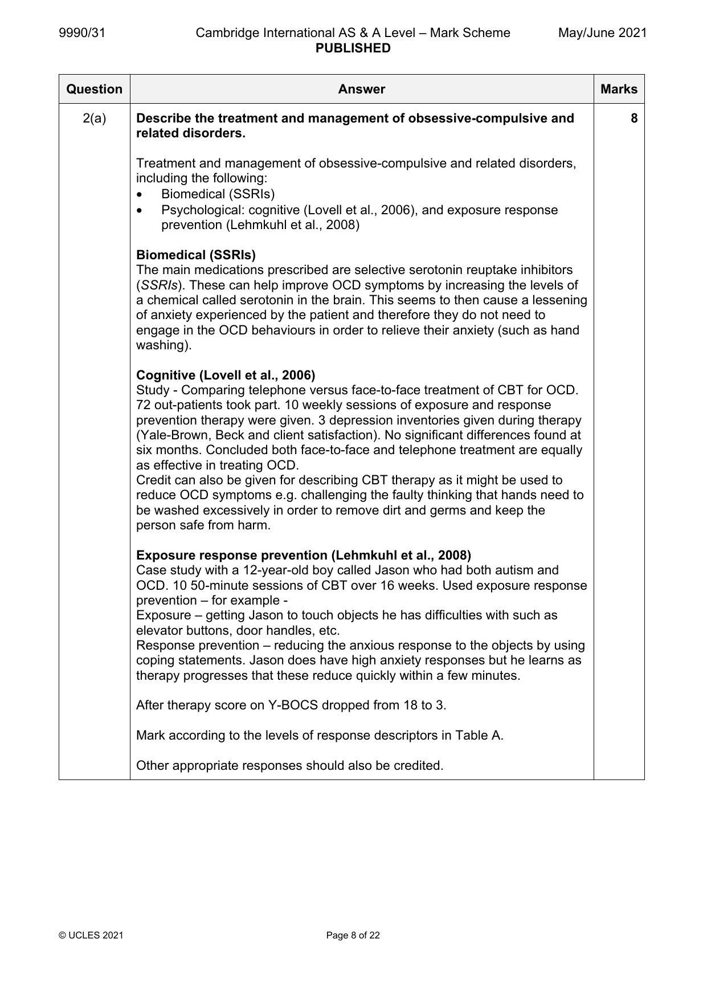
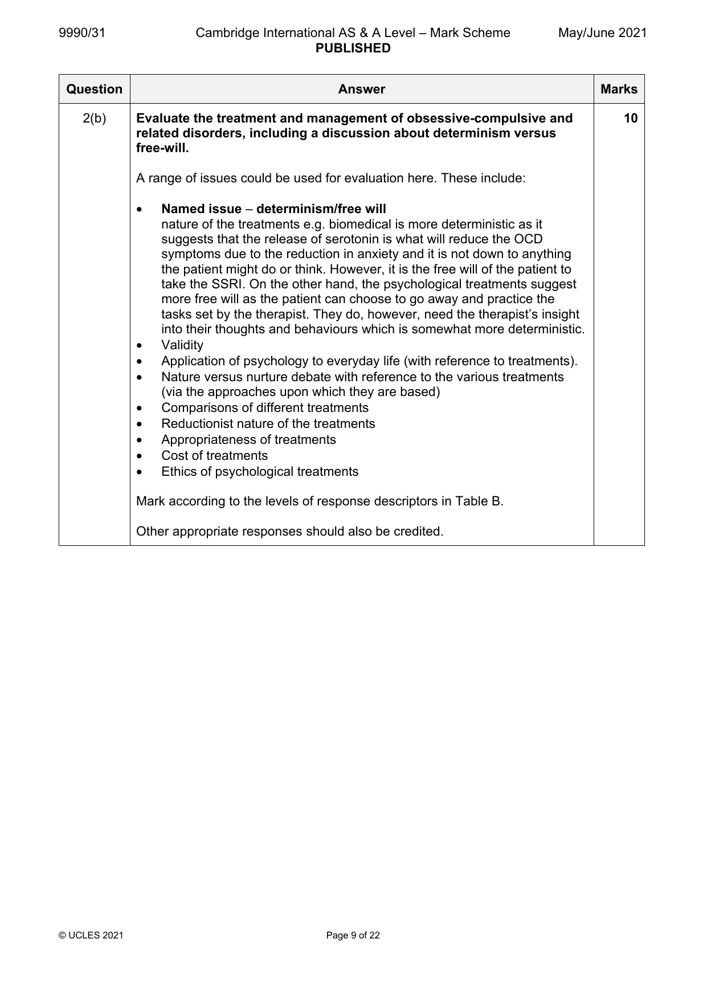
2(a) Describe the treatment and management of obsessive-compulsive and 8
related disorders.
Treatment and management of obsessive-compulsive and related disorders,
including the following:
• Biomedical (SSRIs)
• Psychological: cognitive (Lovell et al., 2006), and exposure response
prevention (Lehmkuhl et al., 2008)
Biomedical (SSRIs)
The main medications prescribed are selective serotonin reuptake inhibitors
(SSRIs). These can help improve OCD symptoms by increasing the levels of
a chemical called serotonin in the brain. This seems to then cause a lessening
of anxiety experienced by the patient and therefore they do not need to
engage in the OCD behaviours in order to relieve their anxiety (such as hand
washing).
Cognitive (Lovell et al., 2006)
Study - Comparing telephone versus face-to-face treatment of CBT for OCD.
72 out-patients took part. 10 weekly sessions of exposure and response
prevention therapy were given. 3 depression inventories given during therapy
(Yale-Brown, Beck and client satisfaction). No significant differences found at
six months. Concluded both face-to-face and telephone treatment are equally
as effective in treating OCD.
Credit can also be given for describing CBT therapy as it might be used to
reduce OCD symptoms e.g. challenging the faulty thinking that hands need to
be washed excessively in order to remove dirt and germs and keep the
person safe from harm.
Exposure response prevention (Lehmkuhl et al., 2008)
Case study with a 12-year-old boy called Jason who had both autism and
OCD. 10 50-minute sessions of CBT over 16 weeks. Used exposure response
prevention – for example -
Exposure – getting Jason to touch objects he has difficulties with such as
elevator buttons, door handles, etc.
Response prevention – reducing the anxious response to the objects by using
coping statements. Jason does have high anxiety responses but he learns as
therapy progresses that these reduce quickly within a few minutes.
After therapy score on Y-BOCS dropped from 18 to 3.
Mark according to the levels of response descriptors in Table A.
Other appropriate responses should also be credited.
© UCLES 2021 Page 8 of 22
2(b) Evaluate the treatment and management of obsessive-compulsive and 10
related disorders, including a discussion about determinism versus
free-will.
A range of issues could be used for evaluation here. These include:
• Named issue – determinism/free will
nature of the treatments e.g. biomedical is more deterministic as it
suggests that the release of serotonin is what will reduce the OCD
symptoms due to the reduction in anxiety and it is not down to anything
the patient might do or think. However, it is the free will of the patient to
take the SSRI. On the other hand, the psychological treatments suggest
more free will as the patient can choose to go away and practice the
tasks set by the therapist. They do, however, need the therapist’s insight
into their thoughts and behaviours which is somewhat more deterministic.
• Validity
• Application of psychology to everyday life (with reference to treatments).
• Nature versus nurture debate with reference to the various treatments
(via the approaches upon which they are based)
• Comparisons of different treatments
• Reductionist nature of the treatments
• Appropriateness of treatments
• Cost of treatments
• Ethics of psychological treatments
Mark according to the levels of response descriptors in Table B.
Other appropriate responses should also be credited.
© UCLES 2021 Page 9 of 22
Official mark scheme pages: 8, 9 · source PDF URL
9990-2021-mj-32-q01
May/June 2021 · Paper 32 · Question 1 · 12 marks
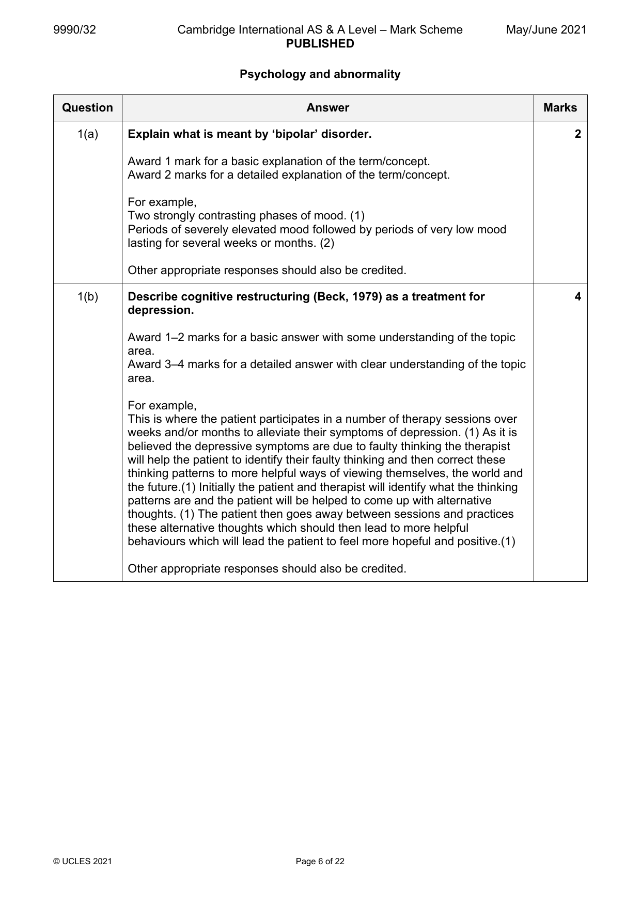
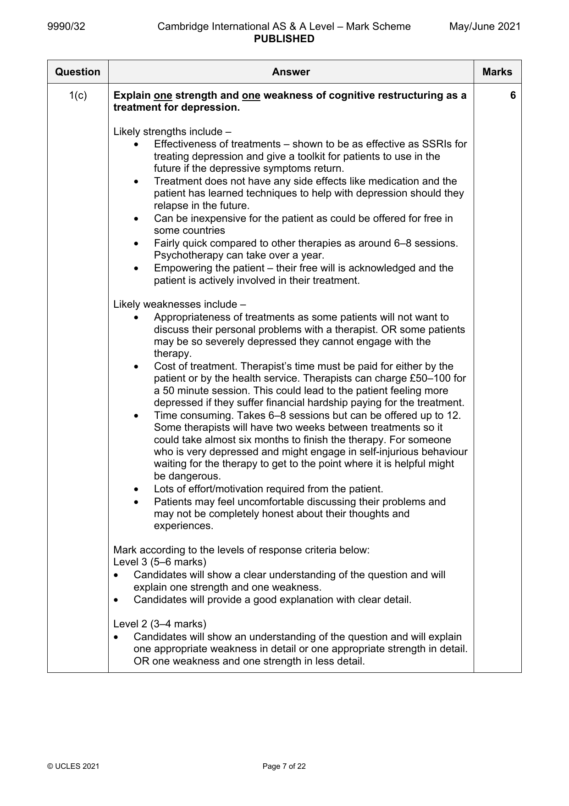
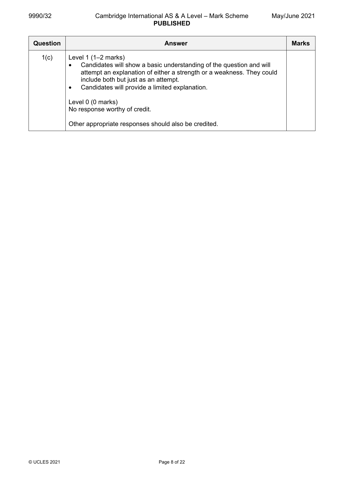
1(a) Explain what is meant by ‘bipolar’ disorder. 2
Award 1 mark for a basic explanation of the term/concept.
Award 2 marks for a detailed explanation of the term/concept.
For example,
Two strongly contrasting phases of mood. (1)
Periods of severely elevated mood followed by periods of very low mood
lasting for several weeks or months. (2)
Other appropriate responses should also be credited.
1(b) Describe cognitive restructuring (Beck, 1979) as a treatment for 4
depression.
Award 1–2 marks for a basic answer with some understanding of the topic
area.
Award 3–4 marks for a detailed answer with clear understanding of the topic
area.
For example,
This is where the patient participates in a number of therapy sessions over
weeks and/or months to alleviate their symptoms of depression. (1) As it is
believed the depressive symptoms are due to faulty thinking the therapist
will help the patient to identify their faulty thinking and then correct these
thinking patterns to more helpful ways of viewing themselves, the world and
the future.(1) Initially the patient and therapist will identify what the thinking
patterns are and the patient will be helped to come up with alternative
thoughts. (1) The patient then goes away between sessions and practices
these alternative thoughts which should then lead to more helpful
behaviours which will lead the patient to feel more hopeful and positive.(1)
Other appropriate responses should also be credited.
© UCLES 2021 Page 6 of 22
1(c) Explain one strength and one weakness of cognitive restructuring as a 6
treatment for depression.
Likely strengths include –
• Effectiveness of treatments – shown to be as effective as SSRIs for
treating depression and give a toolkit for patients to use in the
future if the depressive symptoms return.
• Treatment does not have any side effects like medication and the
patient has learned techniques to help with depression should they
relapse in the future.
• Can be inexpensive for the patient as could be offered for free in
some countries
• Fairly quick compared to other therapies as around 6–8 sessions.
Psychotherapy can take over a year.
• Empowering the patient – their free will is acknowledged and the
patient is actively involved in their treatment.
Likely weaknesses include –
• Appropriateness of treatments as some patients will not want to
discuss their personal problems with a therapist. OR some patients
may be so severely depressed they cannot engage with the
therapy.
• Cost of treatment. Therapist’s time must be paid for either by the
patient or by the health service. Therapists can charge £50–100 for
a 50 minute session. This could lead to the patient feeling more
depressed if they suffer financial hardship paying for the treatment.
• Time consuming. Takes 6–8 sessions but can be offered up to 12.
Some therapists will have two weeks between treatments so it
could take almost six months to finish the therapy. For someone
who is very depressed and might engage in self-injurious behaviour
waiting for the therapy to get to the point where it is helpful might
be dangerous.
• Lots of effort/motivation required from the patient.
• Patients may feel uncomfortable discussing their problems and
may not be completely honest about their thoughts and
experiences.
Mark according to the levels of response criteria below:
Level 3 (5–6 marks)
• Candidates will show a clear understanding of the question and will
explain one strength and one weakness.
• Candidates will provide a good explanation with clear detail.
Level 2 (3–4 marks)
• Candidates will show an understanding of the question and will explain
one appropriate weakness in detail or one appropriate strength in detail.
OR one weakness and one strength in less detail.
© UCLES 2021 Page 7 of 22
1(c) Level 1 (1–2 marks)
• Candidates will show a basic understanding of the question and will
attempt an explanation of either a strength or a weakness. They could
include both but just as an attempt.
• Candidates will provide a limited explanation.
Level 0 (0 marks)
No response worthy of credit.
Other appropriate responses should also be credited.
© UCLES 2021 Page 8 of 22
Official mark scheme pages: 6, 7, 8 · source PDF URL
9990-2021-mj-32-q02
May/June 2021 · Paper 32 · Question 2 · 18 marks
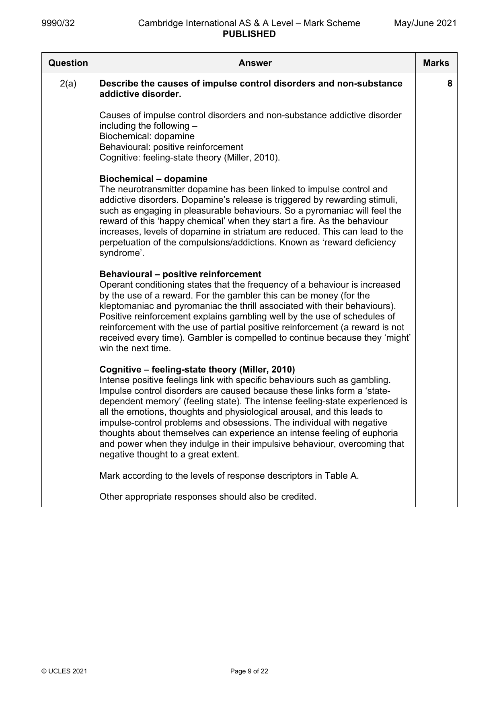
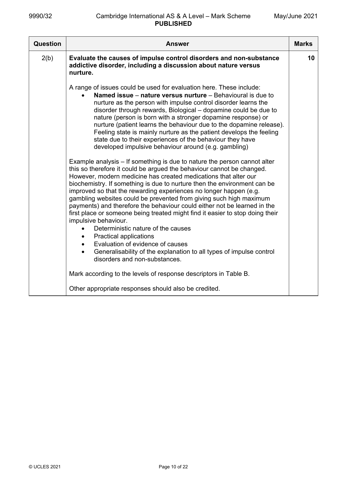
2(a) Describe the causes of impulse control disorders and non-substance 8
addictive disorder.
Causes of impulse control disorders and non-substance addictive disorder
including the following –
Biochemical: dopamine
Behavioural: positive reinforcement
Cognitive: feeling-state theory (Miller, 2010).
Biochemical – dopamine
The neurotransmitter dopamine has been linked to impulse control and
addictive disorders. Dopamine’s release is triggered by rewarding stimuli,
such as engaging in pleasurable behaviours. So a pyromaniac will feel the
reward of this ‘happy chemical’ when they start a fire. As the behaviour
increases, levels of dopamine in striatum are reduced. This can lead to the
perpetuation of the compulsions/addictions. Known as ‘reward deficiency
syndrome’.
Behavioural – positive reinforcement
Operant conditioning states that the frequency of a behaviour is increased
by the use of a reward. For the gambler this can be money (for the
kleptomaniac and pyromaniac the thrill associated with their behaviours).
Positive reinforcement explains gambling well by the use of schedules of
reinforcement with the use of partial positive reinforcement (a reward is not
received every time). Gambler is compelled to continue because they ‘might’
win the next time.
Cognitive – feeling-state theory (Miller, 2010)
Intense positive feelings link with specific behaviours such as gambling.
Impulse control disorders are caused because these links form a ‘state-
dependent memory’ (feeling state). The intense feeling-state experienced is
all the emotions, thoughts and physiological arousal, and this leads to
impulse-control problems and obsessions. The individual with negative
thoughts about themselves can experience an intense feeling of euphoria
and power when they indulge in their impulsive behaviour, overcoming that
negative thought to a great extent.
Mark according to the levels of response descriptors in Table A.
Other appropriate responses should also be credited.
© UCLES 2021 Page 9 of 22
2(b) Evaluate the causes of impulse control disorders and non-substance 10
addictive disorder, including a discussion about nature versus
nurture.
A range of issues could be used for evaluation here. These include:
• Named issue – nature versus nurture – Behavioural is due to
nurture as the person with impulse control disorder learns the
disorder through rewards, Biological – dopamine could be due to
nature (person is born with a stronger dopamine response) or
nurture (patient learns the behaviour due to the dopamine release).
Feeling state is mainly nurture as the patient develops the feeling
state due to their experiences of the behaviour they have
developed impulsive behaviour around (e.g. gambling)
Example analysis – If something is due to nature the person cannot alter
this so therefore it could be argued the behaviour cannot be changed.
However, modern medicine has created medications that alter our
biochemistry. If something is due to nurture then the environment can be
improved so that the rewarding experiences no longer happen (e.g.
gambling websites could be prevented from giving such high maximum
payments) and therefore the behaviour could either not be learned in the
first place or someone being treated might find it easier to stop doing their
impulsive behaviour.
• Deterministic nature of the causes
• Practical applications
• Evaluation of evidence of causes
• Generalisability of the explanation to all types of impulse control
disorders and non-substances.
Mark according to the levels of response descriptors in Table B.
Other appropriate responses should also be credited.
© UCLES 2021 Page 10 of 22
Official mark scheme pages: 9, 10 · source PDF URL
9990-2021-mj-33-q01
May/June 2021 · Paper 33 · Question 1 · 12 marks
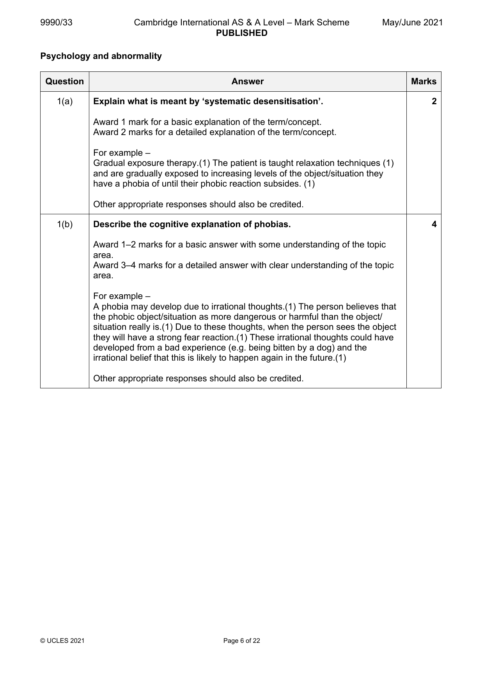
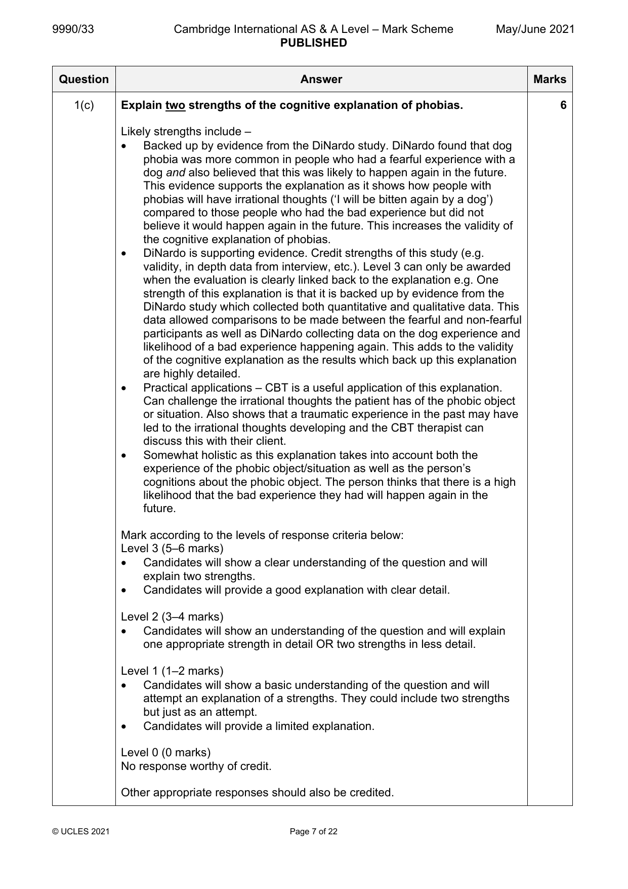
1(a) Explain what is meant by ‘systematic desensitisation’. 2
Award 1 mark for a basic explanation of the term/concept.
Award 2 marks for a detailed explanation of the term/concept.
For example –
Gradual exposure therapy.(1) The patient is taught relaxation techniques (1)
and are gradually exposed to increasing levels of the object/situation they
have a phobia of until their phobic reaction subsides. (1)
Other appropriate responses should also be credited.
1(b) Describe the cognitive explanation of phobias. 4
Award 1–2 marks for a basic answer with some understanding of the topic
area.
Award 3–4 marks for a detailed answer with clear understanding of the topic
area.
For example –
A phobia may develop due to irrational thoughts.(1) The person believes that
the phobic object/situation as more dangerous or harmful than the object/
situation really is.(1) Due to these thoughts, when the person sees the object
they will have a strong fear reaction.(1) These irrational thoughts could have
developed from a bad experience (e.g. being bitten by a dog) and the
irrational belief that this is likely to happen again in the future.(1)
Other appropriate responses should also be credited.
© UCLES 2021 Page 6 of 22
1(c) Explain two strengths of the cognitive explanation of phobias. 6
Likely strengths include –
• Backed up by evidence from the DiNardo study. DiNardo found that dog
phobia was more common in people who had a fearful experience with a
dog and also believed that this was likely to happen again in the future.
This evidence supports the explanation as it shows how people with
phobias will have irrational thoughts (‘I will be bitten again by a dog’)
compared to those people who had the bad experience but did not
believe it would happen again in the future. This increases the validity of
the cognitive explanation of phobias.
• DiNardo is supporting evidence. Credit strengths of this study (e.g.
validity, in depth data from interview, etc.). Level 3 can only be awarded
when the evaluation is clearly linked back to the explanation e.g. One
strength of this explanation is that it is backed up by evidence from the
DiNardo study which collected both quantitative and qualitative data. This
data allowed comparisons to be made between the fearful and non-fearful
participants as well as DiNardo collecting data on the dog experience and
likelihood of a bad experience happening again. This adds to the validity
of the cognitive explanation as the results which back up this explanation
are highly detailed.
• Practical applications – CBT is a useful application of this explanation.
Can challenge the irrational thoughts the patient has of the phobic object
or situation. Also shows that a traumatic experience in the past may have
led to the irrational thoughts developing and the CBT therapist can
discuss this with their client.
• Somewhat holistic as this explanation takes into account both the
experience of the phobic object/situation as well as the person’s
cognitions about the phobic object. The person thinks that there is a high
likelihood that the bad experience they had will happen again in the
future.
Mark according to the levels of response criteria below:
Level 3 (5–6 marks)
• Candidates will show a clear understanding of the question and will
explain two strengths.
• Candidates will provide a good explanation with clear detail.
Level 2 (3–4 marks)
• Candidates will show an understanding of the question and will explain
one appropriate strength in detail OR two strengths in less detail.
Level 1 (1–2 marks)
• Candidates will show a basic understanding of the question and will
attempt an explanation of a strengths. They could include two strengths
but just as an attempt.
• Candidates will provide a limited explanation.
Level 0 (0 marks)
No response worthy of credit.
Other appropriate responses should also be credited.
© UCLES 2021 Page 7 of 22
Official mark scheme pages: 6, 7 · source PDF URL
9990-2021-mj-33-q02
May/June 2021 · Paper 33 · Question 2 · 18 marks
2(a) Describe the treatment and management of obsessive-compulsive and 8
related disorders.
Treatment and management of obsessive-compulsive and related disorders,
including the following:
• Biomedical (SSRIs)
• Psychological: cognitive (Lovell et al., 2006), and exposure response
prevention (Lehmkuhl et al., 2008)
Biomedical (SSRIs)
The main medications prescribed are selective serotonin reuptake inhibitors
(SSRIs). These can help improve OCD symptoms by increasing the levels of
a chemical called serotonin in the brain. This seems to then cause a lessening
of anxiety experienced by the patient and therefore they do not need to
engage in the OCD behaviours in order to relieve their anxiety (such as hand
washing).
Cognitive (Lovell et al., 2006)
Study - Comparing telephone versus face-to-face treatment of CBT for OCD.
72 out-patients took part. 10 weekly sessions of exposure and response
prevention therapy were given. 3 depression inventories given during therapy
(Yale-Brown, Beck and client satisfaction). No significant differences found at
six months. Concluded both face-to-face and telephone treatment are equally
as effective in treating OCD.
Credit can also be given for describing CBT therapy as it might be used to
reduce OCD symptoms e.g. challenging the faulty thinking that hands need to
be washed excessively in order to remove dirt and germs and keep the
person safe from harm.
Exposure response prevention (Lehmkuhl et al., 2008)
Case study with a 12-year-old boy called Jason who had both autism and
OCD. 10 50-minute sessions of CBT over 16 weeks. Used exposure response
prevention – for example -
Exposure – getting Jason to touch objects he has difficulties with such as
elevator buttons, door handles, etc.
Response prevention – reducing the anxious response to the objects by using
coping statements. Jason does have high anxiety responses but he learns as
therapy progresses that these reduce quickly within a few minutes.
After therapy score on Y-BOCS dropped from 18 to 3.
Mark according to the levels of response descriptors in Table A.
Other appropriate responses should also be credited.
© UCLES 2021 Page 8 of 22
2(b) Evaluate the treatment and management of obsessive-compulsive and 10
related disorders, including a discussion about determinism versus
free-will.
A range of issues could be used for evaluation here. These include:
• Named issue – determinism/free will
nature of the treatments e.g. biomedical is more deterministic as it
suggests that the release of serotonin is what will reduce the OCD
symptoms due to the reduction in anxiety and it is not down to anything
the patient might do or think. However, it is the free will of the patient to
take the SSRI. On the other hand, the psychological treatments suggest
more free will as the patient can choose to go away and practice the
tasks set by the therapist. They do, however, need the therapist’s insight
into their thoughts and behaviours which is somewhat more deterministic.
• Validity
• Application of psychology to everyday life (with reference to treatments).
• Nature versus nurture debate with reference to the various treatments
(via the approaches upon which they are based)
• Comparisons of different treatments
• Reductionist nature of the treatments
• Appropriateness of treatments
• Cost of treatments
• Ethics of psychological treatments
Mark according to the levels of response descriptors in Table B.
Other appropriate responses should also be credited.
© UCLES 2021 Page 9 of 22
Official mark scheme pages: 8, 9 · source PDF URL
9990-2021-mj-41-q01
May/June 2021 · Paper 41 · Question 1 · 15 marks
1 Griffiths (2005) refers to a case of a person addicted to gambling who
says:
‘If I wasn’t actually gambling I was spending the rest of my time
working out clever little schemes to obtain money to feed my habit.
These two activities literally took up all my time’.
This quote is typical of gambling and many other types of addictive
behaviours, including pyromania and kleptomania.
1(a) Explain what is meant by 'pyromania'. 2
Most likely answer (other appropriate responses to be credited):
• Where the person has deliberately and intentionally set fires on more
than one occasion.
• Experiences tension or affective arousal before the act.
• Has a fascination with, interest in, curiosity about, or attraction to fire
and its situational contexts (e.g., paraphernalia, uses, and
consequences).
• Pleasure, gratification, power or relief when setting fires or when
witnessing or participating in their aftermath.
• The fire-setting is not done for monetary gain, as an expression of
socio-political ideology, to conceal criminal activity, to express anger or
vengeance, to improve one’s living circumstances, in response to a
delusion or hallucination, or as a result of impaired judgment.
• The fire-setting is not explained by conduct disorder, a manic episode,
or antisocial personality disorder.
Marks: 1 mark for basic answer (likes setting fires), 2 marks for
detail/elaboration/example (as indicated above)
© UCLES 2021 Page 8 of 25
1(b) Give two components of any addiction outlined by Griffiths (2005). 4
Most likely answers:
• Salience when the particular activity becomes the most important
activity in the person’s life and dominates their thinking (preoccupations
and cognitive distortions), feelings (cravings) and behaviour
(deterioration of socialised behaviour)
• Mood modification/euphoria the subjective experience that people
report as a consequence of engaging in the particular activity (i.e. an
arousing ‘buzz’ or a ‘high’)
• Tolerance the process whereby increasing amounts of the particular
activity are required to achieve the former effects
• Withdrawal symptoms the unpleasant feeling states and/or physical
effects which occur when the particular activity is discontinued or
suddenly reduced
• Conflict conflicts between the addict and those around them
(interpersonal conflict) or from within the individual themselves
(intrapsychic conflict)
• Relapse the tendency for repeated reversions to earlier patterns of the
particular activity to recur
Note: answer does not have to be related to any example, although
examples receive credit.
Marks: 1 mark basic answer (identification component), 2 marks
detail/elaboration/example X2.
1(c) Suggest two ways to measure a person’s addiction to gambling, other 4
than using a questionnaire.
Most likely answer (other appropriate responses to be credited):
• Observation (covert or overt; structured; non-participant, natural – or
any combination of these
• Interview (face-to-face or by telephone)
• Case study (one person with range of methods, or for example the
case study of ‘Jo’ by Griffiths.
• Physiological measure (such as ECG, GSR, hormone levels)
Marks: 1 mark basic answer (identification of method plus a comment
about how that method would work. Max 1 mark for each suggestion if
not related to gambling), 2 marks related to gambling, X2
Some answers may suggest ‘anecdotal’ measures. Max 1 mark for such
answers
Note: 0 marks for questionnaires such as Gambling prevalence survey,
CPGI, etc
Note: rating scales must be based on a question, so 0 marks for ‘rating
scale’
Note: 0 marks for interviews/open ended questions that make no reference
to measurement.
© UCLES 2021 Page 9 of 25
1(d) Discuss the strengths and weaknesses of using questionnaires to 5
measure kleptomania. You should include a conclusion in your
answer.
Marks: 1 mark for each strength/weakness (however basic/detailed) which
is related/linked to the question (max 4 marks). 1 mark for conclusion.
Conclusion: any appropriate conclusion drawn from the discussion that has
been presented. 1 mark if appropriate. A conclusion is a ‘decision reached
by reasoning’ and so a summary of points already made scores 0 marks.
Most likely answer (other appropriate responses to be credited):
Strengths:
• Asking people directly, using a questionnaire, especially open-ended,
means that participants are given the opportunity to express their
feelings about stealing and explain their stealing behaviour rather than
the researcher trying to work out reasons for this behaviour from other
methods
• Relatively large numbers of participants can be done relatively easily in
comparison to say a face-to-face interview or experiment.
Questionnaires are easy to replicate.
• Data can be qualitative, but may also be quantitative depending on type
of question
Weaknesses:
• Some participants may provide socially desirable responses; not give
truthful answers about their stealing behaviour; respond to demand
characteristics.
• Closed/fixed-choice questions may force people into choosing answers
that do not reflect their true opinion and therefore may lower the validity.
• Researchers have to be careful about use of leading questions; it could
affect the validity of the data collected.
© UCLES 2021 Page 10 of 25
Official mark scheme pages: 8, 9, 10 · source PDF URL
9990-2021-mj-41-q05
May/June 2021 · Paper 41 · Question 5 · 18 marks
5(a) Design a longitudinal study to investigate whether cognitive- 10
behavioural therapy (CBT) manages schizophrenia effectively.
Marks: use generic levels of response Design a study question part (a).
Additional: Candidates should design the study showing evidence of
design features appropriate to the named method. The named method:
longitudinal study.
Any method can be used, provided that the data gathered is over a period of
time.
Typical features:
• Experiments: type, IV, DV, controls, experimental design.
• Observations: type, setting, response categories, sampling frame,
number of observers.
• Questionnaires/Interviews: type, setting, example questions.
Scoring/rating scale, analysis of responses.
General features of research methodology: sampling technique &
sample, type of data, ethics, reliability, validity, data analysis.
5(b) Explain the psychological and methodological evidence on which your 8
study is based.
Candidates are expected to explain the reasons for the suggested design in
part (a). Explanation should be both psychological and methodological.
Psychological to include appropriate theory or research.
Marks: use generic levels of response ‘Design a study’ question part (b).
‘Psychological’ = 4 marks; ‘methodological’ = 4 marks
If only methodological or psychological explanation is provided max 5
marks
If ‘psychological’ described and not related to part (a) max 2 marks.
Syllabus: cognitive-behavioural therapy (Sensky et al., 2000)
Psychological:
Sensky et al. (2000) used cognitive-behavioural therapy (CBT) to treat
schizophrenia in patients already taking medication. After CBT sessions
patients showed improvement. At the 9-month follow-up evaluation they
continued to improve. It was concluded that CBT is effective.
Note 0 marks for candidates who merely replicate this study.
Methodological: explanation of method using general and specific features
as above.
© UCLES 2021 Page 18 of 25
Official mark scheme pages: 18 · source PDF URL
9990-2021-mj-41-q09
May/June 2021 · Paper 41 · Question 9 · 12 marks
9 ‘Psychometric measures, such as the Kleptomania Symptom 12
Assessment Scale (K-SAS), provide therapists with no useful
information.’
To what extent do you agree with this statement? Use examples of
research you have studied to support your answer.
Marks: use generic levels of response in table C.
Syllabus: measures: Kleptomania Symptom Assessment Scale (K-SAS)
Most likely (any other appropriate responses should be credited):
Useful:
• Measures such as K-SAS indicate the severity of a disorder
• The measure can highlight specific features of the disorder
• The measure can be used as a comparison to others with the same
disorder
• The measure provides quantitative data
• Any feature of a psychometric test (e.g. reliable, standardised)
Not useful:
• Measures can use scales (5 or 7 point) which allow the person to ‘opt
out’ or give a neutral answer’
• Scales do not take individual differences into account; there might be
some aspect which the scales do not cover
• A patient may want to talk to a therapist about the problem, not just fill
in a questionnaire.
• Interviews by therapists may reveal far more about the individual
problem
• Interviews can reveal specific problems not covered by a general
psychometric test.
© UCLES 2021 Page 22 of 25
Official mark scheme pages: 22 · source PDF URL
9990-2021-mj-42-q01
May/June 2021 · Paper 42 · Question 1 · 15 marks
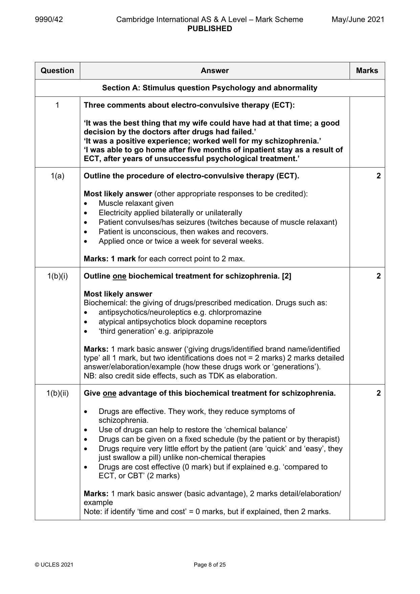
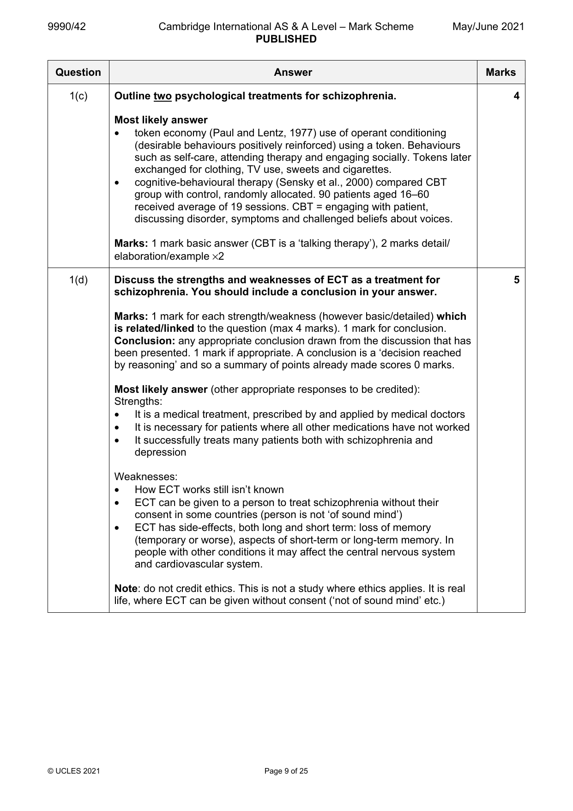
1 Three comments about electro-convulsive therapy (ECT):
‘It was the best thing that my wife could have had at that time; a good
decision by the doctors after drugs had failed.’
‘It was a positive experience; worked well for my schizophrenia.’
‘I was able to go home after five months of inpatient stay as a result of
ECT, after years of unsuccessful psychological treatment.’
1(a) Outline the procedure of electro-convulsive therapy (ECT). 2
Most likely answer (other appropriate responses to be credited):
• Muscle relaxant given
• Electricity applied bilaterally or unilaterally
• Patient convulses/has seizures (twitches because of muscle relaxant)
• Patient is unconscious, then wakes and recovers.
• Applied once or twice a week for several weeks.
Marks: 1 mark for each correct point to 2 max.
1(b)(i) Outline one biochemical treatment for schizophrenia. [2] 2
Most likely answer
Biochemical: the giving of drugs/prescribed medication. Drugs such as:
• antipsychotics/neuroleptics e.g. chlorpromazine
• atypical antipsychotics block dopamine receptors
• ‘third generation’ e.g. aripiprazole
Marks: 1 mark basic answer (‘giving drugs/identified brand name/identified
type’ all 1 mark, but two identifications does not = 2 marks) 2 marks detailed
answer/elaboration/example (how these drugs work or ‘generations’).
NB: also credit side effects, such as TDK as elaboration.
1(b)(ii) Give one advantage of this biochemical treatment for schizophrenia. 2
• Drugs are effective. They work, they reduce symptoms of
schizophrenia.
• Use of drugs can help to restore the ‘chemical balance’
• Drugs can be given on a fixed schedule (by the patient or by therapist)
• Drugs require very little effort by the patient (are ‘quick’ and ‘easy’, they
just swallow a pill) unlike non-chemical therapies
• Drugs are cost effective (0 mark) but if explained e.g. ‘compared to
ECT, or CBT’ (2 marks)
Marks: 1 mark basic answer (basic advantage), 2 marks detail/elaboration/
example
Note: if identify ‘time and cost’ = 0 marks, but if explained, then 2 marks.
© UCLES 2021 Page 8 of 25
1(c) Outline two psychological treatments for schizophrenia. 4
Most likely answer
• token economy (Paul and Lentz, 1977) use of operant conditioning
(desirable behaviours positively reinforced) using a token. Behaviours
such as self-care, attending therapy and engaging socially. Tokens later
exchanged for clothing, TV use, sweets and cigarettes.
• cognitive-behavioural therapy (Sensky et al., 2000) compared CBT
group with control, randomly allocated. 90 patients aged 16–60
received average of 19 sessions. CBT = engaging with patient,
discussing disorder, symptoms and challenged beliefs about voices.
Marks: 1 mark basic answer (CBT is a ‘talking therapy’), 2 marks detail/
elaboration/example ×2
1(d) Discuss the strengths and weaknesses of ECT as a treatment for 5
schizophrenia. You should include a conclusion in your answer.
Marks: 1 mark for each strength/weakness (however basic/detailed) which
is related/linked to the question (max 4 marks). 1 mark for conclusion.
Conclusion: any appropriate conclusion drawn from the discussion that has
been presented. 1 mark if appropriate. A conclusion is a ‘decision reached
by reasoning’ and so a summary of points already made scores 0 marks.
Most likely answer (other appropriate responses to be credited):
Strengths:
• It is a medical treatment, prescribed by and applied by medical doctors
• It is necessary for patients where all other medications have not worked
• It successfully treats many patients both with schizophrenia and
depression
Weaknesses:
• How ECT works still isn’t known
• ECT can be given to a person to treat schizophrenia without their
consent in some countries (person is not ‘of sound mind’)
• ECT has side-effects, both long and short term: loss of memory
(temporary or worse), aspects of short-term or long-term memory. In
people with other conditions it may affect the central nervous system
and cardiovascular system.
Note: do not credit ethics. This is not a study where ethics applies. It is real
life, where ECT can be given without consent (‘not of sound mind’ etc.)
© UCLES 2021 Page 9 of 25
Official mark scheme pages: 8, 9 · source PDF URL
9990-2021-mj-42-q05
May/June 2021 · Paper 42 · Question 5 · 18 marks
5(a) Cognitive-behavioural therapy (CBT) can be used to treat obsessive- 10
compulsive disorder (OCD).
Design a study to test gender differences in effectiveness of CBT
administered by telephone for OCD.
Marks: use generic levels of response Design a study question part (a).
Additional: Candidates should design the study showing evidence of
design features appropriate to the named method. The named method: any
appropriate method.
Specific features:
• Experiments: type, IV, DV, controls, experimental design.
• Observations: type, setting, response categories, sampling frame,
number of observers.
• Questionnaires/Interviews: type, setting, example questions.
Scoring/rating scale, analysis of responses.
General features of research methodology: sampling technique and
sample, type of data, ethics, reliability, validity, data analysis.
5(b) Explain the psychological and methodological evidence on which your 8
study is based.
Candidates are expected to explain the reasons for the suggested design in
part (a). Explanation should be both psychological and methodological.
Psychological to include appropriate theory or research.
Marks: use generic levels of response ‘Design a study’ question part (b).
‘Psychological’ = 4 marks; ‘methodological’ = 4 marks
If only methodological or psychological explanation is provided max 5
marks
If ‘psychological’ described and not related to part (a) max 2 marks.
Syllabus: psychological: cognitive (Lovell et al., 2006) and exposure and
response prevention (Lehmkuhl et al., 2008)
Psychological:
Lovell et al. (2006) compared the effectiveness of CBT face-to-face with
CBT given over the telephone. The conclusion was that there was no
difference in effectiveness. However, there may have been an age
difference that was not explored. NB: Lovell used BDI.
Methodological: explanation of method using general and specific features
as above.
© UCLES 2021 Page 18 of 25
Official mark scheme pages: 18 · source PDF URL
9990-2021-mj-42-q09
May/June 2021 · Paper 42 · Question 9 · 12 marks
9 ‘Even though Charles was just one child, Rapoport’s case study of 12
Charles’ obsessive-compulsive disorder (OCD) can be generalised to
everyone.’
To what extent do you agree with this statement? Use examples of
research you have studied to support your answer.
Marks: use generic levels of response in table C.
Syllabus: examples and case studies (‘Charles’ by Rappaport,1989)
Most likely (any other appropriate responses should be credited):
Can be generalised:
• Washing behaviour is a common type of OCD
• The rituals associated with washing behaviour are common in others.
• Comorbidity associated with OCD applies in others.
• Treatments undergone with Charles can apply to others
Cannot be generalised:
• People are different and what applies to many people will not apply to
all.
• Rituals will occur, but they will be different.
• Charles was a child and what he can do/not do will be different in an
adults (who has to work, for example).
© UCLES 2021 Page 22 of 25
Official mark scheme pages: 22 · source PDF URL
9990-2021-mj-43-q01
May/June 2021 · Paper 43 · Question 1 · 15 marks
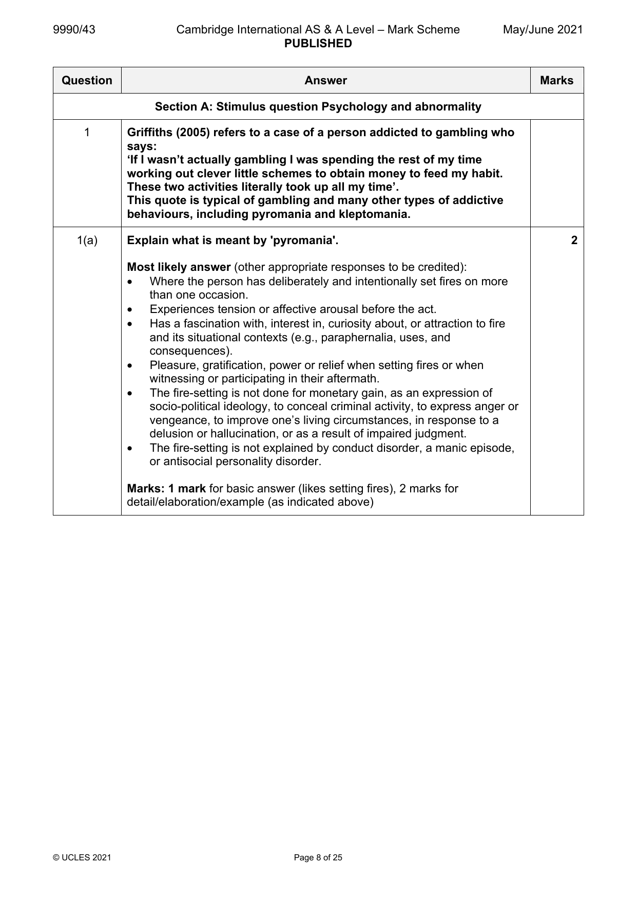
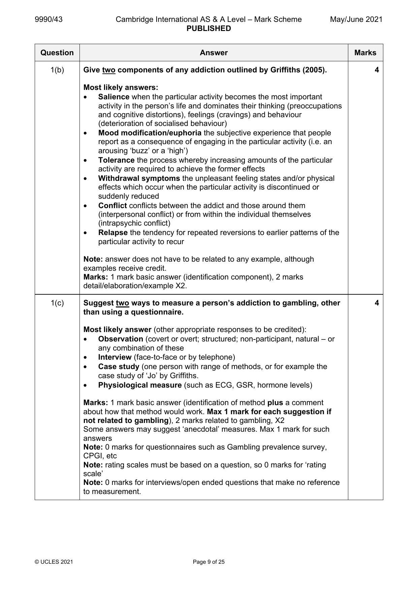
1 Griffiths (2005) refers to a case of a person addicted to gambling who
says:
‘If I wasn’t actually gambling I was spending the rest of my time
working out clever little schemes to obtain money to feed my habit.
These two activities literally took up all my time’.
This quote is typical of gambling and many other types of addictive
behaviours, including pyromania and kleptomania.
1(a) Explain what is meant by 'pyromania'. 2
Most likely answer (other appropriate responses to be credited):
• Where the person has deliberately and intentionally set fires on more
than one occasion.
• Experiences tension or affective arousal before the act.
• Has a fascination with, interest in, curiosity about, or attraction to fire
and its situational contexts (e.g., paraphernalia, uses, and
consequences).
• Pleasure, gratification, power or relief when setting fires or when
witnessing or participating in their aftermath.
• The fire-setting is not done for monetary gain, as an expression of
socio-political ideology, to conceal criminal activity, to express anger or
vengeance, to improve one’s living circumstances, in response to a
delusion or hallucination, or as a result of impaired judgment.
• The fire-setting is not explained by conduct disorder, a manic episode,
or antisocial personality disorder.
Marks: 1 mark for basic answer (likes setting fires), 2 marks for
detail/elaboration/example (as indicated above)
© UCLES 2021 Page 8 of 25
1(b) Give two components of any addiction outlined by Griffiths (2005). 4
Most likely answers:
• Salience when the particular activity becomes the most important
activity in the person’s life and dominates their thinking (preoccupations
and cognitive distortions), feelings (cravings) and behaviour
(deterioration of socialised behaviour)
• Mood modification/euphoria the subjective experience that people
report as a consequence of engaging in the particular activity (i.e. an
arousing ‘buzz’ or a ‘high’)
• Tolerance the process whereby increasing amounts of the particular
activity are required to achieve the former effects
• Withdrawal symptoms the unpleasant feeling states and/or physical
effects which occur when the particular activity is discontinued or
suddenly reduced
• Conflict conflicts between the addict and those around them
(interpersonal conflict) or from within the individual themselves
(intrapsychic conflict)
• Relapse the tendency for repeated reversions to earlier patterns of the
particular activity to recur
Note: answer does not have to be related to any example, although
examples receive credit.
Marks: 1 mark basic answer (identification component), 2 marks
detail/elaboration/example X2.
1(c) Suggest two ways to measure a person’s addiction to gambling, other 4
than using a questionnaire.
Most likely answer (other appropriate responses to be credited):
• Observation (covert or overt; structured; non-participant, natural – or
any combination of these
• Interview (face-to-face or by telephone)
• Case study (one person with range of methods, or for example the
case study of ‘Jo’ by Griffiths.
• Physiological measure (such as ECG, GSR, hormone levels)
Marks: 1 mark basic answer (identification of method plus a comment
about how that method would work. Max 1 mark for each suggestion if
not related to gambling), 2 marks related to gambling, X2
Some answers may suggest ‘anecdotal’ measures. Max 1 mark for such
answers
Note: 0 marks for questionnaires such as Gambling prevalence survey,
CPGI, etc
Note: rating scales must be based on a question, so 0 marks for ‘rating
scale’
Note: 0 marks for interviews/open ended questions that make no reference
to measurement.
© UCLES 2021 Page 9 of 25
1(d) Discuss the strengths and weaknesses of using questionnaires to 5
measure kleptomania. You should include a conclusion in your
answer.
Marks: 1 mark for each strength/weakness (however basic/detailed) which
is related/linked to the question (max 4 marks). 1 mark for conclusion.
Conclusion: any appropriate conclusion drawn from the discussion that has
been presented. 1 mark if appropriate. A conclusion is a ‘decision reached
by reasoning’ and so a summary of points already made scores 0 marks.
Most likely answer (other appropriate responses to be credited):
Strengths:
• Asking people directly, using a questionnaire, especially open-ended,
means that participants are given the opportunity to express their
feelings about stealing and explain their stealing behaviour rather than
the researcher trying to work out reasons for this behaviour from other
methods
• Relatively large numbers of participants can be done relatively easily in
comparison to say a face-to-face interview or experiment.
Questionnaires are easy to replicate.
• Data can be qualitative, but may also be quantitative depending on type
of question
Weaknesses:
• Some participants may provide socially desirable responses; not give
truthful answers about their stealing behaviour; respond to demand
characteristics.
• Closed/fixed-choice questions may force people into choosing answers
that do not reflect their true opinion and therefore may lower the validity.
• Researchers have to be careful about use of leading questions; it could
affect the validity of the data collected.
© UCLES 2021 Page 10 of 25
Official mark scheme pages: 8, 9, 10 · source PDF URL
9990-2021-mj-43-q05
May/June 2021 · Paper 43 · Question 5 · 18 marks
5(a) Design a longitudinal study to investigate whether cognitive- 10
behavioural therapy (CBT) manages schizophrenia effectively.
Marks: use generic levels of response Design a study question part (a).
Additional: Candidates should design the study showing evidence of
design features appropriate to the named method. The named method:
longitudinal study.
Any method can be used, provided that the data gathered is over a period of
time.
Typical features:
• Experiments: type, IV, DV, controls, experimental design.
• Observations: type, setting, response categories, sampling frame,
number of observers.
• Questionnaires/Interviews: type, setting, example questions.
Scoring/rating scale, analysis of responses.
General features of research methodology: sampling technique &
sample, type of data, ethics, reliability, validity, data analysis.
5(b) Explain the psychological and methodological evidence on which your 8
study is based.
Candidates are expected to explain the reasons for the suggested design in
part (a). Explanation should be both psychological and methodological.
Psychological to include appropriate theory or research.
Marks: use generic levels of response ‘Design a study’ question part (b).
‘Psychological’ = 4 marks; ‘methodological’ = 4 marks
If only methodological or psychological explanation is provided max 5
marks
If ‘psychological’ described and not related to part (a) max 2 marks.
Syllabus: cognitive-behavioural therapy (Sensky et al., 2000)
Psychological:
Sensky et al. (2000) used cognitive-behavioural therapy (CBT) to treat
schizophrenia in patients already taking medication. After CBT sessions
patients showed improvement. At the 9-month follow-up evaluation they
continued to improve. It was concluded that CBT is effective.
Note 0 marks for candidates who merely replicate this study.
Methodological: explanation of method using general and specific features
as above.
© UCLES 2021 Page 18 of 25
Official mark scheme pages: 18 · source PDF URL
9990-2021-mj-43-q09
May/June 2021 · Paper 43 · Question 9 · 12 marks
9 ‘Psychometric measures, such as the Kleptomania Symptom 12
Assessment Scale (K-SAS), provide therapists with no useful
information.’
To what extent do you agree with this statement? Use examples of
research you have studied to support your answer.
Marks: use generic levels of response in table C.
Syllabus: measures: Kleptomania Symptom Assessment Scale (K-SAS)
Most likely (any other appropriate responses should be credited):
Useful:
• Measures such as K-SAS indicate the severity of a disorder
• The measure can highlight specific features of the disorder
• The measure can be used as a comparison to others with the same
disorder
• The measure provides quantitative data
• Any feature of a psychometric test (e.g. reliable, standardised)
Not useful:
• Measures can use scales (5 or 7 point) which allow the person to ‘opt
out’ or give a neutral answer’
• Scales do not take individual differences into account; there might be
some aspect which the scales do not cover
• A patient may want to talk to a therapist about the problem, not just fill
in a questionnaire.
• Interviews by therapists may reveal far more about the individual
problem
• Interviews can reveal specific problems not covered by a general
psychometric test.
© UCLES 2021 Page 22 of 25
Official mark scheme pages: 22 · source PDF URL
9990-2021-on-31-q01
Oct/Nov 2021 · Paper 31 · Question 1 · 12 marks
1(a) Outline one cognitive explanation of schizophrenia and delusional 2
disorder.
Award 1 mark for a basic explanation of the term/concept.
Award 2 marks for a detailed explanation of the term/concept.
For example:
Frith describes schizophrenia as an ‘abnormality of self-monitoring’ as
patients fail to recognise that the hallucination of hearing voices is actually the
schizophrenic’s own inner voice but they believe it to be someone else’s. (2)
The delusions (inner speech) may not be recognised as being self-generated.
(1)
Other appropriate responses should also be credited.
1(b) Describe the procedure in the study by Sensky et al. (2000) of cognitive- 4
behavioural therapy (CBT) for schizophrenia.
Award 1–2 marks for a basic answer with some understanding of the topic
area.
Award 3–4 marks for a detailed answer with clear understanding of the topic
area.
For example:
Participants were referred by clinicians and eligibility confirmed by
researchers using clinical interview. (1) 90 patients, 16-60 from 5 different
venues – 2 West London, 1 Durham, 1 Cleveland, 1 Newcastle. CBT 46,
Befriending 44. 67% CBT male, 50% male in befriending (2 marks max.)
Patients were randomly assigned to a treatment and further assessments
carried out approximately 9 months later, after intervention had completed
and again at 9-month follow-up. (2) Antipsychotic medications were
maintained. (1) Patients received individual treatment of CBT or befriending
(this intervention was designed to give similar amount of therapist contact as
CBT with an aim to be empathic and nondirective, focusing on neutral topics)
(2) Done by experienced psychiatric nurses with each patient receiving at
least 45 minutes of therapy per week. (1) After approximately 2 months,
session frequency could be reduced, with the aim of completing therapy within
9 months. (1) Interviews were audiotaped. (1) Assessors were blind to
patient’s assigned group. (1) The Comprehensive Psychiatric Rating Scale
(CPRS), Montgomery-Asberg Depression Rating Scale and the Scale for
Assessment of Negative Symptoms (SANS) were all used to measure
outcomes together with patients completing a 10-item questionnaire to elicit
their satisfaction. (2 marks max for assessments given)
© UCLES 2021 Page 6 of 21
1(c) Explain one similarity and one difference between CBT and biochemical 6
treatments for schizophrenia/delusional disorder.
Likely similarities will be
• Both have good evidence for success e.g. Lindstrom et al, 1999 drug
trials and Sensky
• Both require intervention from a therapist so adding to time, expense and
commitment
Likely differences will be
• CBT based on cognitive approach, biochemical on biological approach
• CBT is more active. Drug therapy is passive treatment.
• CBT not suited for patients who find it difficult to engage in therapy (lack
of motivation, intellect etc.)
• Drug therapy has side effects
Mark according to the levels of response criteria below:
Level 3 (5–6 marks)
• Candidates will show a clear understanding of the question and will
explain an appropriate similarity and an appropriate difference.
• Candidates will provide a good explanation with clear detail.
Level 2 (3–4 marks)
• Candidates will show an understanding of the question and will explain an
appropriate similarity/difference in detail or both a similarity and a
difference in less detail.
• Candidates will provide a good explanation.
Level 1 (1–2 marks)
• Candidates will show a basic understanding of the question and will
attempt a similarity and/or difference. This could include both but just as
an attempt.
• Candidates will provide a limited explanation.
Level 0 (0 marks)
No response worthy of credit.
Other appropriate responses should also be credited.
© UCLES 2021 Page 7 of 21
Official mark scheme pages: 6, 7 · source PDF URL
9990-2021-on-31-q02
Oct/Nov 2021 · Paper 31 · Question 2 · 18 marks
2(a) Describe characteristics and measures of bipolar and related disorders. 8
Characteristics of bipolar and related disorders, including the following:
• Definitions and characteristics of abnormal affect
• Types: depression (unipolar) and depression and mania (bipolar)
• Measures: Beck depression inventory
Definitions and characteristics of abnormal affect
Abnormal effect disorders are classified as ‘mood disorders’ in DSM-V. This is
in contrast to brief feelings of sadness/joy. Here, emotions are beyond the
usual ups and downs experienced by all and are amplified or enhanced,
characterised by persistent negative or positive mood. Emotions may include
despair, emptiness, anger or euphoria. The extreme and persistent nature of
these moods is distinct from everyday experience. Disorders of abnormal
affect significantly impair the individual’s ability to function normally.
Types: depression (unipolar) and depression and mania (bipolar)
Unipolar depression, also known as major depressive disorder, or a
depressive episode, includes having a depressed mood for an extended
period of time. This includes a lack of pleasure in most activities, weight
changes, changes in sleep patterns (sleeping too much (hypersomnia) or
difficulty in sleeping (insomnia)), psychomotor agitation, fatigue, feelings of
worthlessness and reduction in ability to concentrate.
Bipolar disorder used to be known as manic depression. It is characterised by
episodes of mania that cannot be accounted for in a physical way. Mania may
include feelings of euphoria, rage or irritability. Behaviours associated with
mania include racing thoughts or being easily distracted, over-confidence,
speaking quickly, and engaging in risky behaviours (gambling or promiscuity,
for example). Mania is one ‘pole’ of bipolarity. The other pole would be
features of unipolar depression (although this is not essential for diagnosis).
There must also be some change in polarity for a diagnosis of bipolar disorder
to be made.
Measures: Beck depression inventory
This is a psychometric test used by professionals to measure level of
depression. It contains 21 items and is used in questionnaire form. Each item
includes at least 4 statements, the person taking the test must choose the one
that best fits how they have been feeling during the past week or two weeks,
depending on the version being used. Examples of items include:
Satisfaction
0 I get as much satisfaction out of things as I used to
1 I don’t enjoy things the way I used to
2 I don’t get real satisfaction out of anything anymore
Official mark scheme pages: 8 · source PDF URL
9990-2021-on-32-q01
Oct/Nov 2021 · Paper 32 · Question 1 · 12 marks

1(a) Outline the behavioural explanation of phobias. 2
Award 1 mark for a basic explanation of the term/concept.
Award 2 marks for a detailed explanation of the term/concept.
For example:
Classical conditioning can explain how a phobia can be learned. (1)
A previously neutral stimulus can be repeatedly paired with an
unconditioned stimulus that produces fear, so that the neutral stimulus
becomes the conditioned stimulus. (2) This could occur as a result of trauma
where one pairing may be sufficient.(1)
Other appropriate responses should also be credited.
1(b) Describe the Generalised Anxiety Disorder assessment (GAD-7). 4
Award 1–2 marks for a basic answer with some understanding of the topic
area.
Award 3–4 marks for a detailed answer with clear understanding of the topic
area.
For example:
GAD-7 is a screening tool using a questionnaire for generalised anxiety. (1)
It consists of 7 items each scored on a scale of 0 to 3. (1) Patients are
asked to report how often in the last 2 weeks they have been bothered by
the 7 items. (1) 0 represents not at all, 1 is several days, 2 is over half the
days and 3 is nearly every day. (1) The 7 items are
1 Feeling nervous, anxious, or on edge
Official mark scheme pages: 7 · source PDF URL
9990-2021-on-32-q02
Oct/Nov 2021 · Paper 32 · Question 2 · 18 marks
2 Not being able to stop or control worrying
Official mark scheme pages: 7 · source PDF URL
9990-2021-on-33-q01
Oct/Nov 2021 · Paper 33 · Question 1 · 12 marks
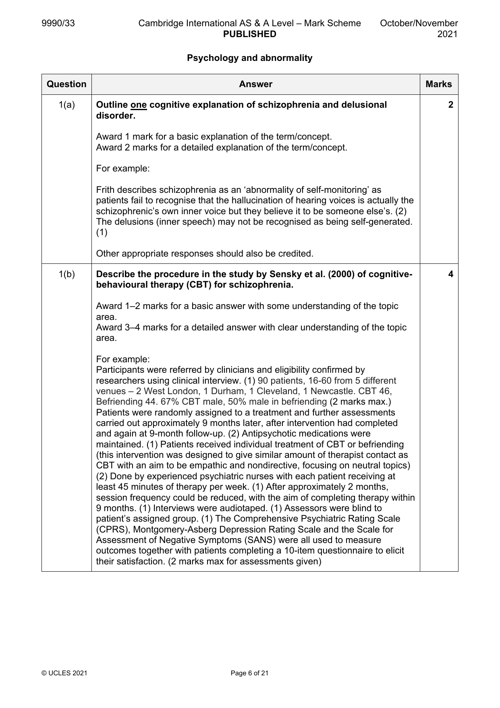
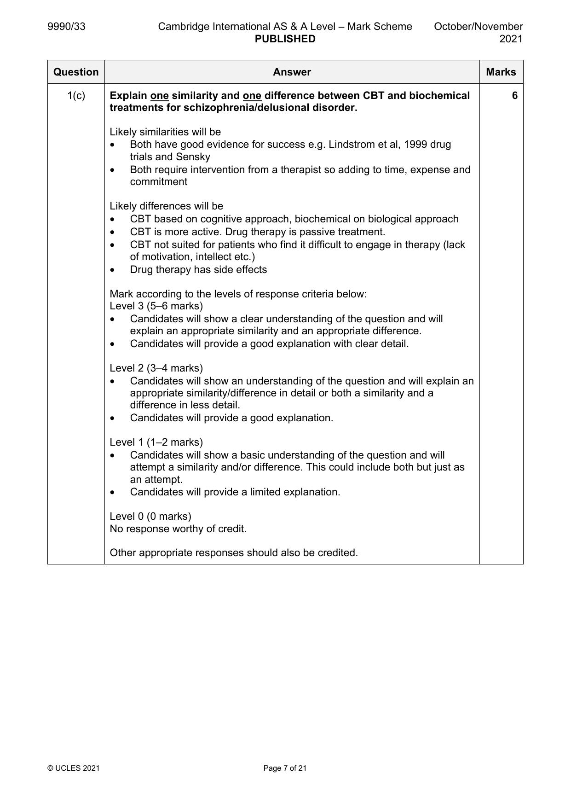
1(a) Outline one cognitive explanation of schizophrenia and delusional 2
disorder.
Award 1 mark for a basic explanation of the term/concept.
Award 2 marks for a detailed explanation of the term/concept.
For example:
Frith describes schizophrenia as an ‘abnormality of self-monitoring’ as
patients fail to recognise that the hallucination of hearing voices is actually the
schizophrenic’s own inner voice but they believe it to be someone else’s. (2)
The delusions (inner speech) may not be recognised as being self-generated.
(1)
Other appropriate responses should also be credited.
1(b) Describe the procedure in the study by Sensky et al. (2000) of cognitive- 4
behavioural therapy (CBT) for schizophrenia.
Award 1–2 marks for a basic answer with some understanding of the topic
area.
Award 3–4 marks for a detailed answer with clear understanding of the topic
area.
For example:
Participants were referred by clinicians and eligibility confirmed by
researchers using clinical interview. (1) 90 patients, 16-60 from 5 different
venues – 2 West London, 1 Durham, 1 Cleveland, 1 Newcastle. CBT 46,
Befriending 44. 67% CBT male, 50% male in befriending (2 marks max.)
Patients were randomly assigned to a treatment and further assessments
carried out approximately 9 months later, after intervention had completed
and again at 9-month follow-up. (2) Antipsychotic medications were
maintained. (1) Patients received individual treatment of CBT or befriending
(this intervention was designed to give similar amount of therapist contact as
CBT with an aim to be empathic and nondirective, focusing on neutral topics)
(2) Done by experienced psychiatric nurses with each patient receiving at
least 45 minutes of therapy per week. (1) After approximately 2 months,
session frequency could be reduced, with the aim of completing therapy within
9 months. (1) Interviews were audiotaped. (1) Assessors were blind to
patient’s assigned group. (1) The Comprehensive Psychiatric Rating Scale
(CPRS), Montgomery-Asberg Depression Rating Scale and the Scale for
Assessment of Negative Symptoms (SANS) were all used to measure
outcomes together with patients completing a 10-item questionnaire to elicit
their satisfaction. (2 marks max for assessments given)
© UCLES 2021 Page 6 of 21
1(c) Explain one similarity and one difference between CBT and biochemical 6
treatments for schizophrenia/delusional disorder.
Likely similarities will be
• Both have good evidence for success e.g. Lindstrom et al, 1999 drug
trials and Sensky
• Both require intervention from a therapist so adding to time, expense and
commitment
Likely differences will be
• CBT based on cognitive approach, biochemical on biological approach
• CBT is more active. Drug therapy is passive treatment.
• CBT not suited for patients who find it difficult to engage in therapy (lack
of motivation, intellect etc.)
• Drug therapy has side effects
Mark according to the levels of response criteria below:
Level 3 (5–6 marks)
• Candidates will show a clear understanding of the question and will
explain an appropriate similarity and an appropriate difference.
• Candidates will provide a good explanation with clear detail.
Level 2 (3–4 marks)
• Candidates will show an understanding of the question and will explain an
appropriate similarity/difference in detail or both a similarity and a
difference in less detail.
• Candidates will provide a good explanation.
Level 1 (1–2 marks)
• Candidates will show a basic understanding of the question and will
attempt a similarity and/or difference. This could include both but just as
an attempt.
• Candidates will provide a limited explanation.
Level 0 (0 marks)
No response worthy of credit.
Other appropriate responses should also be credited.
© UCLES 2021 Page 7 of 21
Official mark scheme pages: 6, 7 · source PDF URL
9990-2021-on-33-q02
Oct/Nov 2021 · Paper 33 · Question 2 · 18 marks
2(a) Describe characteristics and measures of bipolar and related disorders. 8
Characteristics of bipolar and related disorders, including the following:
• Definitions and characteristics of abnormal affect
• Types: depression (unipolar) and depression and mania (bipolar)
• Measures: Beck depression inventory
Definitions and characteristics of abnormal affect
Abnormal effect disorders are classified as ‘mood disorders’ in DSM-V. This is
in contrast to brief feelings of sadness/joy. Here, emotions are beyond the
usual ups and downs experienced by all and are amplified or enhanced,
characterised by persistent negative or positive mood. Emotions may include
despair, emptiness, anger or euphoria. The extreme and persistent nature of
these moods is distinct from everyday experience. Disorders of abnormal
affect significantly impair the individual’s ability to function normally.
Types: depression (unipolar) and depression and mania (bipolar)
Unipolar depression, also known as major depressive disorder, or a
depressive episode, includes having a depressed mood for an extended
period of time. This includes a lack of pleasure in most activities, weight
changes, changes in sleep patterns (sleeping too much (hypersomnia) or
difficulty in sleeping (insomnia)), psychomotor agitation, fatigue, feelings of
worthlessness and reduction in ability to concentrate.
Bipolar disorder used to be known as manic depression. It is characterised by
episodes of mania that cannot be accounted for in a physical way. Mania may
include feelings of euphoria, rage or irritability. Behaviours associated with
mania include racing thoughts or being easily distracted, over-confidence,
speaking quickly, and engaging in risky behaviours (gambling or promiscuity,
for example). Mania is one ‘pole’ of bipolarity. The other pole would be
features of unipolar depression (although this is not essential for diagnosis).
There must also be some change in polarity for a diagnosis of bipolar disorder
to be made.
Measures: Beck depression inventory
This is a psychometric test used by professionals to measure level of
depression. It contains 21 items and is used in questionnaire form. Each item
includes at least 4 statements, the person taking the test must choose the one
that best fits how they have been feeling during the past week or two weeks,
depending on the version being used. Examples of items include:
Satisfaction
0 I get as much satisfaction out of things as I used to
1 I don’t enjoy things the way I used to
2 I don’t get real satisfaction out of anything anymore
Official mark scheme pages: 8 · source PDF URL
9990-2021-on-41-q01
Oct/Nov 2021 · Paper 41 · Question 1 · 15 marks
1 A woman was treated by Glover (2011) for kleptomania. She had a 14-
year history of daily compulsive shoplifting and was treated with
covert sensitisation. At a 19-month follow-up she was free of stealing
behaviour apart from one lapse, and there were corresponding
improvements in her self-esteem and socialisation.
1(a) Explain what is meant by ‘covert sensitisation’. 2
Most likely answer (other appropriate responses to be credited):
• Covert sensitisation is a form of behaviour therapy in which an
undesirable behaviour is paired with an unpleasant image in order to
eliminate that behaviour.
• Desensitisation is opposite, so 0 marks.
Marks: 1 mark for partial answer, 2 marks for elaboration/example. Example
can be anything appropriate.
Note: if above definition is given award 2 marks.
1(b) Outline how the aversive stimulus was used in the study by Glover 4
(2011) to treat the woman’s kleptomania.
Most likely answers: quoting study
• It was decided to use imagery of nausea and vomiting paired with the
act of stealing.
• Episodes of imagery were used involving increasing nausea as she
approached an article in a supermarket which she intended to steal,
leading to vomiting as she lifted the article, with other shoppers’
attention being attracted to her.
• The vomiting and other unpleasant sensations ceased as soon as she
replaced the article, turned away and left the shop
Marks: 1–2 marks basic answer 3–4 marks detail/elaboration.
© UCLES 2021 Page 8 of 23
1(c) Give two differences between covert sensitisation and imaginal 4
desensitisation.
Most likely answer (other appropriate responses to be credited):
Difference:
CS: client imagines engaging in the event (e.g. stealing) and experiencing
negative consequences (such as vomiting).
ID: uses progressive muscle relaxation with imagery of successfully
avoiding event (e.g. stealing)
Difference:
CS: person creates an imagined unpleasant association between addictive
behaviour and unpleasant stimulus.
ID: relaxation based. Imaginal desensitisation significantly decreased the
heightened state of arousal and anxiety typically associated with gambling
urges
Marks: 1 mark for description, 2 marks for direct difference (e.g. X is and Y
is) x2
1(d) Discuss the advantages and disadvantages of using covert 5
sensitisation to treat impulse control disorders. You should include a
conclusion in your answer.
Marks: Question requires discussion; always plural of each argument, and
always requires conclusion.
1 mark for each advantage/disadvantage (however basic/detailed) which is
related to the question (max 4 marks). 1 mark for conclusion. 2 marks max
for two strengths and two weaknesses unrelated to the question.
Conclusion: any appropriate conclusion drawn from the discussion that has
been presented. 1 mark if appropriate. A conclusion is a ‘decision reached
by reasoning’ and so a summary of points already made scores 0 marks.
Most likely answer (other appropriate responses to be credited):
Advantages:
• Techniques can be applied by anyone, in any place at any time.
• Behavioural techniques focus on alleviating the symptoms of ICD rather
than the cause
• Behavioural techniques are more likely to be generalised because all
people can learn and ‘unlearn’ following the same principles
• No medication is taken; the patient cannot become addicted to
medication.
• The therapist will guide the patient through the treatment.
Disadvantages:
• Behavioural techniques take time and effort from the person (unlike
swallowing a pill)
• The techniques do not cure the ICD, merely make it easier to live with
• Behavioural techniques ignore the role of biochemicals
• A therapist is needed which is more costly than taking a drug.
• Sensitisation involves imagining something unpleasant in association
with the event, so is ‘negative’ rather than imaginal desensitisation
which is more ‘positive’
© UCLES 2021 Page 9 of 23
Official mark scheme pages: 8, 9 · source PDF URL
9990-2021-on-41-q05
Oct/Nov 2021 · Paper 41 · Question 5 · 18 marks
5(a) Design a study to investigate the long-term effectiveness of applied 10
tension.
Marks: use generic levels of response Design a study question part (a).
Additional: Candidates should design the study showing evidence of
design features appropriate to the named method. The named method: any
appropriate method.
Specific features:
• Experiments: type, IV, DV, controls, experimental design.
• Observations: type, setting, response categories, sampling frame,
number of observers.
• Questionnaires/Interviews: type, setting, example questions.
Scoring/rating scale, analysis of responses.
General features of research methodology: sampling technique &
sample, type of data, ethics, reliability, validity, data analysis.
5(b) Explain the psychological and methodological evidence on which your 8
study is based.
Marks: use generic levels of response ‘Design a study’ question part (b).
Note: If only methodological or psychological explanation is provided max 5
marks
Candidates are expected to explain the reasons for the suggested design in
part (a). Explanation should be both psychological and methodological.
Psychological to include appropriate theory or research.
Additional: candidates are expected to justify their decisions or evidence
presented regarding the design made in answer to question part (a).
Syllabus: applied tension (Ost et al., 1989)
Psychological:
At the sight of blood, blood pressure drops sharply often leading the person
to faint (pass out). The way to counter the drop in blood pressure is to raise
blood pressure. Ost et al. (1989) call the technique of raising blood pressure
applied tension. It involves tensing the muscles in the arms, legs and body
for about 10–15 seconds, relaxing for 20–30 seconds and then repeating
both of these five times.
Methodological: explanation of method using general and specific features
as above.
© UCLES 2021 Page 16 of 23
Official mark scheme pages: 16 · source PDF URL
9990-2021-on-41-q09
Oct/Nov 2021 · Paper 41 · Question 9 · 12 marks
9 ‘Even though little Hans was just one child, the psychoanalytic 12
explanation of phobias can be generalised to everyone.’
To what extent do you agree with this statement? Use examples of
research you have studied to support your answer.
Marks: use generic levels of response in table C.
Syllabus: psychoanalytic (Freud, 1909)
Most likely (any other appropriate responses should be credited):
Can generalise:
• The psychoanalytic explanation of phobias applies to everyone; a
cultural universal
• The psychoanalytic explanation led to the development of ways in
which fears and phobias can be explained
• The principles, id, ego and superego, can be generalised, not
necessarily the specific example.
Cannot generalise:
• People are different and what applies to many people will not apply to
all.
• The approach excludes the role of cognitive factors (such as the
DiNardo example with fears of dogs) or behavioural explanations.
• The case study of little Hans had weaknesses – claims that Hans was
not a ‘normal’ child.
© UCLES 2021 Page 20 of 23
Official mark scheme pages: 20 · source PDF URL
9990-2021-on-42-q01
Oct/Nov 2021 · Paper 42 · Question 1 · 15 marks
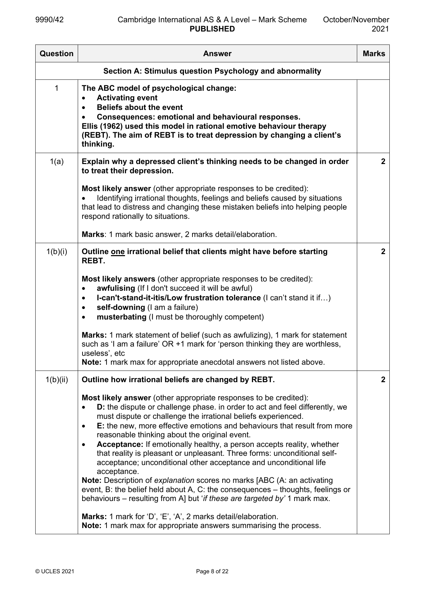
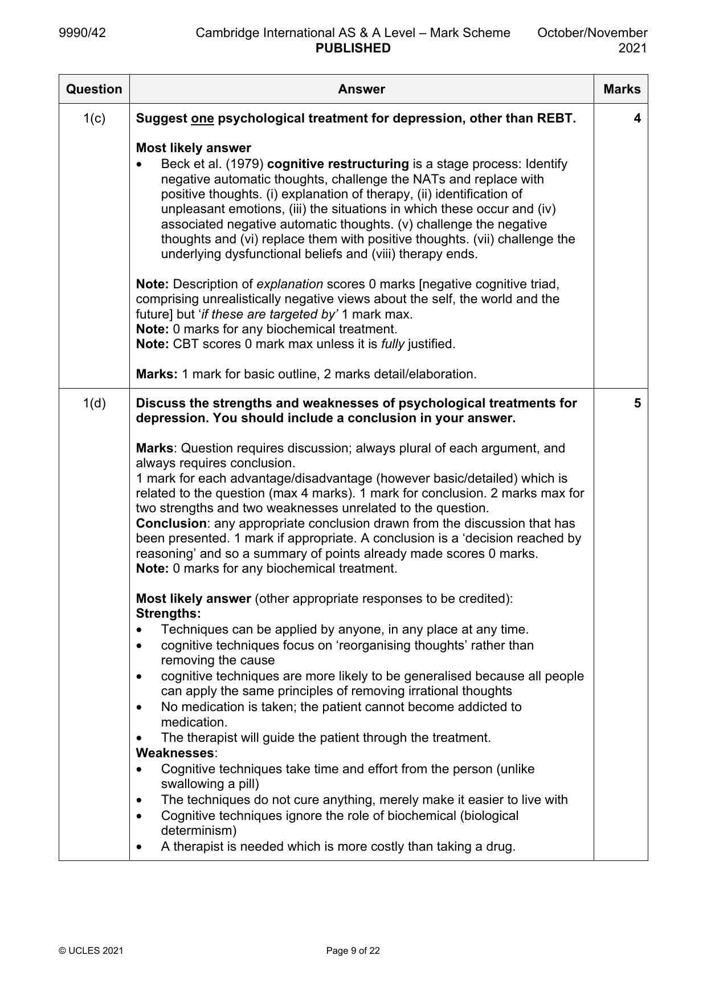
1 The ABC model of psychological change:
• Activating event
• Beliefs about the event
• Consequences: emotional and behavioural responses.
Ellis (1962) used this model in rational emotive behaviour therapy
(REBT). The aim of REBT is to treat depression by changing a client’s
thinking.
1(a) Explain why a depressed client’s thinking needs to be changed in order 2
to treat their depression.
Most likely answer (other appropriate responses to be credited):
• Identifying irrational thoughts, feelings and beliefs caused by situations
that lead to distress and changing these mistaken beliefs into helping people
respond rationally to situations.
Marks: 1 mark basic answer, 2 marks detail/elaboration.
1(b)(i) Outline one irrational belief that clients might have before starting 2
REBT.
Most likely answers (other appropriate responses to be credited):
• awfulising (If I don't succeed it will be awful)
• I-can't-stand-it-itis/Low frustration tolerance (I can’t stand it if…)
• self-downing (I am a failure)
• musterbating (I must be thoroughly competent)
Marks: 1 mark statement of belief (such as awfulizing), 1 mark for statement
such as ‘I am a failure’ OR +1 mark for ‘person thinking they are worthless,
useless’, etc
Note: 1 mark max for appropriate anecdotal answers not listed above.
1(b)(ii) Outline how irrational beliefs are changed by REBT. 2
Most likely answer (other appropriate responses to be credited):
• D: the dispute or challenge phase. in order to act and feel differently, we
must dispute or challenge the irrational beliefs experienced.
• E: the new, more effective emotions and behaviours that result from more
reasonable thinking about the original event.
• Acceptance: If emotionally healthy, a person accepts reality, whether
that reality is pleasant or unpleasant. Three forms: unconditional self-
acceptance; unconditional other acceptance and unconditional life
acceptance.
Note: Description of explanation scores no marks [ABC (A: an activating
event, B: the belief held about A, C: the consequences – thoughts, feelings or
behaviours – resulting from A] but ‘if these are targeted by’ 1 mark max.
Marks: 1 mark for ‘D’, ‘E’, ‘A’, 2 marks detail/elaboration.
Note: 1 mark max for appropriate answers summarising the process.
© UCLES 2021 Page 8 of 22
1(c) Suggest one psychological treatment for depression, other than REBT. 4
Most likely answer
• Beck et al. (1979) cognitive restructuring is a stage process: Identify
negative automatic thoughts, challenge the NATs and replace with
positive thoughts. (i) explanation of therapy, (ii) identification of
unpleasant emotions, (iii) the situations in which these occur and (iv)
associated negative automatic thoughts. (v) challenge the negative
thoughts and (vi) replace them with positive thoughts. (vii) challenge the
underlying dysfunctional beliefs and (viii) therapy ends.
Note: Description of explanation scores 0 marks [negative cognitive triad,
comprising unrealistically negative views about the self, the world and the
future] but ‘if these are targeted by’ 1 mark max.
Note: 0 marks for any biochemical treatment.
Note: CBT scores 0 mark max unless it is fully justified.
Marks: 1 mark for basic outline, 2 marks detail/elaboration.
1(d) Discuss the strengths and weaknesses of psychological treatments for 5
depression. You should include a conclusion in your answer.
Marks: Question requires discussion; always plural of each argument, and
always requires conclusion.
1 mark for each advantage/disadvantage (however basic/detailed) which is
related to the question (max 4 marks). 1 mark for conclusion. 2 marks max for
two strengths and two weaknesses unrelated to the question.
Conclusion: any appropriate conclusion drawn from the discussion that has
been presented. 1 mark if appropriate. A conclusion is a ‘decision reached by
reasoning’ and so a summary of points already made scores 0 marks.
Note: 0 marks for any biochemical treatment.
Most likely answer (other appropriate responses to be credited):
Strengths:
• Techniques can be applied by anyone, in any place at any time.
• cognitive techniques focus on ‘reorganising thoughts’ rather than
removing the cause
• cognitive techniques are more likely to be generalised because all people
can apply the same principles of removing irrational thoughts
• No medication is taken; the patient cannot become addicted to
medication.
• The therapist will guide the patient through the treatment.
Weaknesses:
• Cognitive techniques take time and effort from the person (unlike
swallowing a pill)
• The techniques do not cure anything, merely make it easier to live with
• Cognitive techniques ignore the role of biochemical (biological
determinism)
• A therapist is needed which is more costly than taking a drug.
© UCLES 2021 Page 9 of 22
Official mark scheme pages: 8, 9 · source PDF URL
9990-2021-on-42-q05
Oct/Nov 2021 · Paper 42 · Question 5 · 18 marks
5(a) Design a study to investigate the most common type of compulsive 10
behaviour in people with obsessive-compulsive disorder (OCD).
Marks: use generic levels of response Design a study question part (a).
Additional: Candidates should design the study showing evidence of design
features appropriate to the named method. The named method: any
appropriate method.
Specific features:
• Experiments: type, IV, DV, controls, experimental design.
• Observations: type, setting, response categories, sampling frame,
number of observers.
• Questionnaires/Interviews: type, setting, example questions.
Scoring/rating scale, analysis of responses.
General features of research methodology: sampling technique and
sample, type of data, ethics, reliability, validity, data analysis
5(b) Explain the psychological and methodological evidence on which your 8
study is based.
Marks: use generic levels of response ‘Design a study’ question part (b).
NB If only methodological or psychological explanation is provided max 5
marks
Candidates are expected to explain the reasons for the suggested design in
part (a). Explanation should be both psychological and methodological.
Psychological to include appropriate theory or research.
Additional: candidates are expected to justify their decisions or evidence
presented regarding the design made in answer to question part (a).
Syllabus: examples and case studies (‘Charles’ by Rappaport,1989)
Psychological:
Most likely inclusion of checking, cleaning/washing, slowness, doubting,
ordering, repeating. Most likely example: ‘Charles’ was a compulsive ‘washer’,
following a daily ritual.
Methodological: explanation of method using general and specific features
as above.
© UCLES 2021 Page 17 of 22
Official mark scheme pages: 17 · source PDF URL
9990-2021-on-42-q09
Oct/Nov 2021 · Paper 42 · Question 9 · 12 marks
9 ‘Biomedical treatments for obsessive-compulsive and related disorders 12
are irrelevant.’
To what extent do you agree with this statement? Use examples of
research you have studied to support your answer.
Marks: use generic levels of response in table C.
Syllabus: types of and common obsessions, common compulsions, hoarding
and body dysmorphic disorder (but also explanations of OCD)
NB candidates could refer to hoarding and/or BDD in their answer
Most likely (any other appropriate responses should be credited):
purpose:
• if OCD is caused by low serotonin levels, then drugs can be used to
increase the activity of serotonin in in the brain
• OCD has comorbidity, so drugs can be used to alleviate other symptoms
of anxiety or depression
• Drugs can create the belief in the person that ‘something is working’,
even if it is acting like a placebo.
No purpose:
• Drugs do not cure the OC/related disorder. It is psychological not
physiological
• Drugs are not a long-term solution; they cannot be taken forever.
• Drugs are often addictive, which can create more problems than they
solve.
Question Answer Marks
Official mark scheme pages: 21 · source PDF URL
9990-2021-on-43-q01
Oct/Nov 2021 · Paper 43 · Question 1 · 15 marks
1 A woman was treated by Glover (2011) for kleptomania. She had a 14-
year history of daily compulsive shoplifting and was treated with
covert sensitisation. At a 19-month follow-up she was free of stealing
behaviour apart from one lapse, and there were corresponding
improvements in her self-esteem and socialisation.
1(a) Explain what is meant by ‘covert sensitisation’. 2
Most likely answer (other appropriate responses to be credited):
• Covert sensitisation is a form of behaviour therapy in which an
undesirable behaviour is paired with an unpleasant image in order to
eliminate that behaviour.
• Desensitisation is opposite, so 0 marks.
Marks: 1 mark for partial answer, 2 marks for elaboration/example. Example
can be anything appropriate.
Note: if above definition is given award 2 marks.
1(b) Outline how the aversive stimulus was used in the study by Glover 4
(2011) to treat the woman’s kleptomania.
Most likely answers: quoting study
• It was decided to use imagery of nausea and vomiting paired with the
act of stealing.
• Episodes of imagery were used involving increasing nausea as she
approached an article in a supermarket which she intended to steal,
leading to vomiting as she lifted the article, with other shoppers’
attention being attracted to her.
• The vomiting and other unpleasant sensations ceased as soon as she
replaced the article, turned away and left the shop
Marks: 1–2 marks basic answer 3–4 marks detail/elaboration.
© UCLES 2021 Page 8 of 23
1(c) Give two differences between covert sensitisation and imaginal 4
desensitisation.
Most likely answer (other appropriate responses to be credited):
Difference:
CS: client imagines engaging in the event (e.g. stealing) and experiencing
negative consequences (such as vomiting).
ID: uses progressive muscle relaxation with imagery of successfully
avoiding event (e.g. stealing)
Difference:
CS: person creates an imagined unpleasant association between addictive
behaviour and unpleasant stimulus.
ID: relaxation based. Imaginal desensitisation significantly decreased the
heightened state of arousal and anxiety typically associated with gambling
urges
Marks: 1 mark for description, 2 marks for direct difference (e.g. X is and Y
is) x2
1(d) Discuss the advantages and disadvantages of using covert 5
sensitisation to treat impulse control disorders. You should include a
conclusion in your answer.
Marks: Question requires discussion; always plural of each argument, and
always requires conclusion.
1 mark for each advantage/disadvantage (however basic/detailed) which is
related to the question (max 4 marks). 1 mark for conclusion. 2 marks max
for two strengths and two weaknesses unrelated to the question.
Conclusion: any appropriate conclusion drawn from the discussion that has
been presented. 1 mark if appropriate. A conclusion is a ‘decision reached
by reasoning’ and so a summary of points already made scores 0 marks.
Most likely answer (other appropriate responses to be credited):
Advantages:
• Techniques can be applied by anyone, in any place at any time.
• Behavioural techniques focus on alleviating the symptoms of ICD rather
than the cause
• Behavioural techniques are more likely to be generalised because all
people can learn and ‘unlearn’ following the same principles
• No medication is taken; the patient cannot become addicted to
medication.
• The therapist will guide the patient through the treatment.
Disadvantages:
• Behavioural techniques take time and effort from the person (unlike
swallowing a pill)
• The techniques do not cure the ICD, merely make it easier to live with
• Behavioural techniques ignore the role of biochemicals
• A therapist is needed which is more costly than taking a drug.
• Sensitisation involves imagining something unpleasant in association
with the event, so is ‘negative’ rather than imaginal desensitisation
which is more ‘positive’
© UCLES 2021 Page 9 of 23
Official mark scheme pages: 8, 9 · source PDF URL
9990-2021-on-43-q05
Oct/Nov 2021 · Paper 43 · Question 5 · 18 marks
5(a) Design a study to investigate the long-term effectiveness of applied 10
tension.
Marks: use generic levels of response Design a study question part (a).
Additional: Candidates should design the study showing evidence of
design features appropriate to the named method. The named method: any
appropriate method.
Specific features:
• Experiments: type, IV, DV, controls, experimental design.
• Observations: type, setting, response categories, sampling frame,
number of observers.
• Questionnaires/Interviews: type, setting, example questions.
Scoring/rating scale, analysis of responses.
General features of research methodology: sampling technique &
sample, type of data, ethics, reliability, validity, data analysis.
5(b) Explain the psychological and methodological evidence on which your 8
study is based.
Marks: use generic levels of response ‘Design a study’ question part (b).
Note: If only methodological or psychological explanation is provided max 5
marks
Candidates are expected to explain the reasons for the suggested design in
part (a). Explanation should be both psychological and methodological.
Psychological to include appropriate theory or research.
Additional: candidates are expected to justify their decisions or evidence
presented regarding the design made in answer to question part (a).
Syllabus: applied tension (Ost et al., 1989)
Psychological:
At the sight of blood, blood pressure drops sharply often leading the person
to faint (pass out). The way to counter the drop in blood pressure is to raise
blood pressure. Ost et al. (1989) call the technique of raising blood pressure
applied tension. It involves tensing the muscles in the arms, legs and body
for about 10–15 seconds, relaxing for 20–30 seconds and then repeating
both of these five times.
Methodological: explanation of method using general and specific features
as above.
© UCLES 2021 Page 16 of 23
Official mark scheme pages: 16 · source PDF URL
9990-2021-on-43-q09
Oct/Nov 2021 · Paper 43 · Question 9 · 12 marks
9 ‘Even though little Hans was just one child, the psychoanalytic 12
explanation of phobias can be generalised to everyone.’
To what extent do you agree with this statement? Use examples of
research you have studied to support your answer.
Marks: use generic levels of response in table C.
Syllabus: psychoanalytic (Freud, 1909)
Most likely (any other appropriate responses should be credited):
Can generalise:
• The psychoanalytic explanation of phobias applies to everyone; a
cultural universal
• The psychoanalytic explanation led to the development of ways in
which fears and phobias can be explained
• The principles, id, ego and superego, can be generalised, not
necessarily the specific example.
Cannot generalise:
• People are different and what applies to many people will not apply to
all.
• The approach excludes the role of cognitive factors (such as the
DiNardo example with fears of dogs) or behavioural explanations.
• The case study of little Hans had weaknesses – claims that Hans was
not a ‘normal’ child.
© UCLES 2021 Page 20 of 23
Official mark scheme pages: 20 · source PDF URL
9990-2022-mj-31-q01
May/June 2022 · Paper 31 · Question 1 · 12 marks
1(a) Identify two characteristics of bipolar disorder. 2
Award 1 mark for each characteristic of bipolar disorder.
Must include both reference to a symptom of low mood and a symptom of high mood for full marks.
Two strongly contrasting phases – high mood (manic phase) followed by very low mood. (2)
High mood phase symptoms – euphoria, increased activity/energy, racing thoughts, impulsiveness. (1 max)
Low mood phase symptoms – depressed mood, low energy/oversleeping, lack of interest in normal activities. (1 max)
Other appropriate responses should also be credited.
1(b) Describe rational emotive behaviour therapy (REBT) as a treatment for depression (Ellis, 1962). 4
Award 1–2 marks for a basic answer with some understanding of the topic area.
Award 3–4 marks for a detailed answer with clear understanding of the topic area.
For example –
This follows the ABC model. (1)
Activating agent – what is the behaviour and/or attitude of the patient towards events in their lives. (1)
Beliefs – what is the belief of the patient toward the event. (1)
Consequence – behavioural response in relation to the belief about the event. (1)
Ellis believes if a person has constant negative beliefs about events in their lives, they are likely to suffer from depression.
(1)
The goal of therapy is to identify the unhelpful thoughts and replace them with more rational and constructive thoughts. The
patient will go away between sessions and practice developing more helpful thoughts about life experiences and the
depression symptoms should improve. (2)
Other appropriate responses should also be credited.
© UCLES 2022 Page 7 of 27
1(c) Explain one similarity and one difference between REBT and one biological treatment for depression. 6
Comparison will be for the rational emotive behavioural therapy by Ellis (1962) and biological treatments including
chemical/drugs (MAOIs, SSRIs)
Similarities
Provides an effective treatment for depression – those receiving the treatment be it biological or REBT showed
significant improvements compared to their baseline at the start of treatment and the control group.
Studies that have investigated the effectiveness of these treatments include a control group of patients who do not
receive the treatment as a comparison. Allows valid conclusions to be drawn about the effectiveness of the treatment.
Deterministic – it is the biological treatment/REBT that is causing the depression to lift and no other events/
experiences in the person’s life. It could be that the person changed jobs, and this is what caused their depression
symptoms to improve rather than the biological treatment/REBT.
Not as effective when there are co-morbidities such as anxiety, schizophrenia.
Differences
Biological treatments have side effects such as weight changes, appetite changes, sexual dysfunction, headaches,
changes to sleep patterns and REBT does not have any side effects.
The biological treatments might be more appropriate for patients who do not want to see a therapist/not comfortable
with talking about their issues compared to REBT.
REBT helps the patient to develop skills to challenge their irrational thoughts and replace them with more helpful
thoughts. These skills can be used after therapy is over to continue to treat the depression. In contrast, biological
treatments alter neurochemistry and treat the symptom of the disorder (low serotonin) so if the patient stops having the
treatment the depression is likely to return.
Biological treatments are from the biological approach which assumes that it is low serotonin levels that are causing
the depression, and this is what is treated. In contrast, REBT is from the cognitive approach which assumes that it is
due to faulty thinking patterns that the patient has depression, and this is what is addressed by this therapy.
© UCLES 2022 Page 8 of 27
1(c) Mark according to the levels of response criteria below:
Level 3 (5–6 marks)
Candidates will show a clear understanding of the question and will include one similarity and one difference.
Candidates will provide a good explanation with clear detail.
Level 2 (3–4 marks)
Candidates will show an understanding of the question and will include one appropriate similarity in detail or one
appropriate difference in detail.
OR one similarity and one difference in less detail.
Candidates will provide a good explanation.
Level 1 (1–2 marks)
Candidates will show a basic understanding of the question and will attempt a similarity and/or difference. This could
include both but just as an attempt.
Candidates will provide a limited explanation.
Level 0 (0 marks)
No response worthy of credit.
Other appropriate responses should also be credited.
© UCLES 2022 Page 9 of 27
Official mark scheme pages: 7, 8, 9 · source PDF URL
9990-2022-mj-31-q02
May/June 2022 · Paper 31 · Question 2 · 18 marks
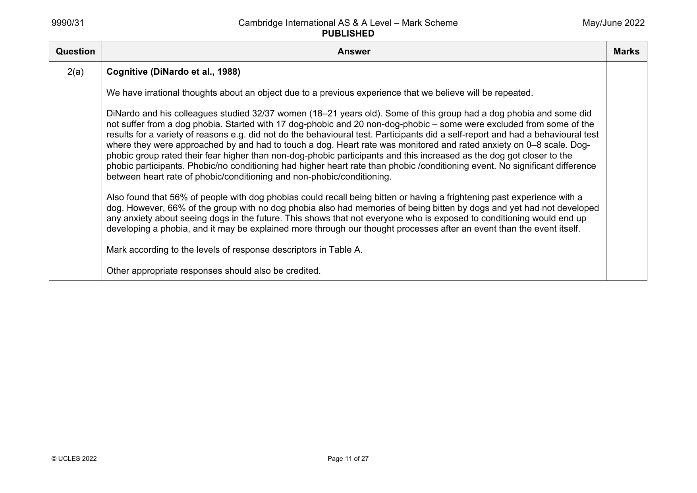
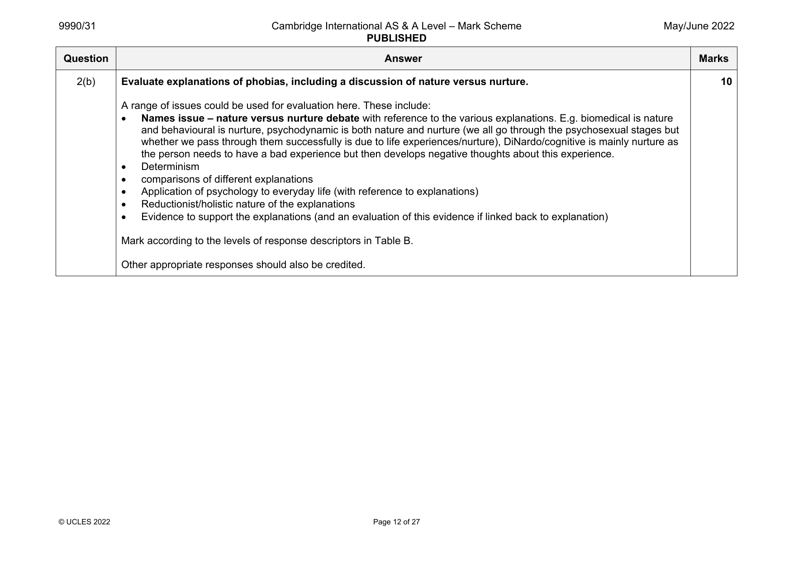
2(a) Describe explanations of phobias. 8
Explanations of phobias, including the following:
behavioural (classical conditioning, Watson, 1920)
psychoanalytic (Freud, 1909)
biomedical/genetic (Ost, 1992)
cognitive (DiNardo et al., 1988)
Behavioural (classical conditioning, Watson, 1920)
A phobia develops as the neutral stimulus is paired with something the person is afraid of (the unconditioned stimulus). If
enough pairings occur or the initial UCS is very frightening the person will end up with a fear of the NS. The NS then
becomes the CS.
Candidates may describe the case of the little Albert who was conditioned to be afraid of a rat by Watson banging an iron
bar behind the baby which made him cry. Eventually just the sight of the rat was enough to cause the crying.
Psychoanalytic (Freud, 1909)
A fear is repressed into the unconscious to protect the ego. The phobia can be a redirected fear during an intensely
frightening experience (e.g. a physical attack) onto an object.
Fear and anxiety can result from impulses from the id which may be repressed or denied. This repression creates internal
conflict which leads to a phobia.
Candidates can also summarise the case of little Hans with reference to explanation of phobia(s).
Biomedical/genetic (Ost, 1992)
Found that blood-phobic subjects had more first-degree relatives with the same phobia compared to injection-phobic
participants (61% vs 29%). In addition, the blood-phobic patients were more likely to fear they would faint in the phobic
situation (77% vs 48%). Concluded that there appears to be a strong genetic link and more likely to lead to a strong
physiological response (fainting).
© UCLES 2022 Page 10 of 27
2(a) Cognitive (DiNardo et al., 1988)
We have irrational thoughts about an object due to a previous experience that we believe will be repeated.
DiNardo and his colleagues studied 32/37 women (18–21 years old). Some of this group had a dog phobia and some did
not suffer from a dog phobia. Started with 17 dog-phobic and 20 non-dog-phobic – some were excluded from some of the
results for a variety of reasons e.g. did not do the behavioural test. Participants did a self-report and had a behavioural test
where they were approached by and had to touch a dog. Heart rate was monitored and rated anxiety on 0–8 scale. Dog-
phobic group rated their fear higher than non-dog-phobic participants and this increased as the dog got closer to the
phobic participants. Phobic/no conditioning had higher heart rate than phobic /conditioning event. No significant difference
between heart rate of phobic/conditioning and non-phobic/conditioning.
Also found that 56% of people with dog phobias could recall being bitten or having a frightening past experience with a
dog. However, 66% of the group with no dog phobia also had memories of being bitten by dogs and yet had not developed
any anxiety about seeing dogs in the future. This shows that not everyone who is exposed to conditioning would end up
developing a phobia, and it may be explained more through our thought processes after an event than the event itself.
Mark according to the levels of response descriptors in Table A.
Other appropriate responses should also be credited.
© UCLES 2022 Page 11 of 27
2(b) Evaluate explanations of phobias, including a discussion of nature versus nurture. 10
A range of issues could be used for evaluation here. These include:
Names issue – nature versus nurture debate with reference to the various explanations. E.g. biomedical is nature
and behavioural is nurture, psychodynamic is both nature and nurture (we all go through the psychosexual stages but
whether we pass through them successfully is due to life experiences/nurture), DiNardo/cognitive is mainly nurture as
the person needs to have a bad experience but then develops negative thoughts about this experience.
Determinism
comparisons of different explanations
Application of psychology to everyday life (with reference to explanations)
Reductionist/holistic nature of the explanations
Evidence to support the explanations (and an evaluation of this evidence if linked back to explanation)
Mark according to the levels of response descriptors in Table B.
Other appropriate responses should also be credited.
© UCLES 2022 Page 12 of 27
Official mark scheme pages: 10, 11, 12 · source PDF URL
9990-2022-mj-32-q01
May/June 2022 · Paper 32 · Question 1 · 12 marks
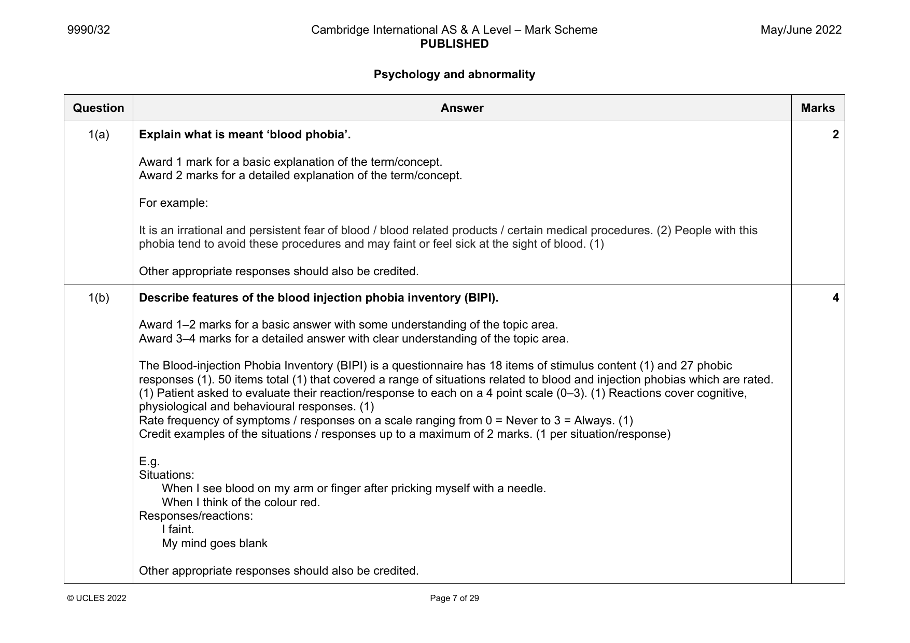
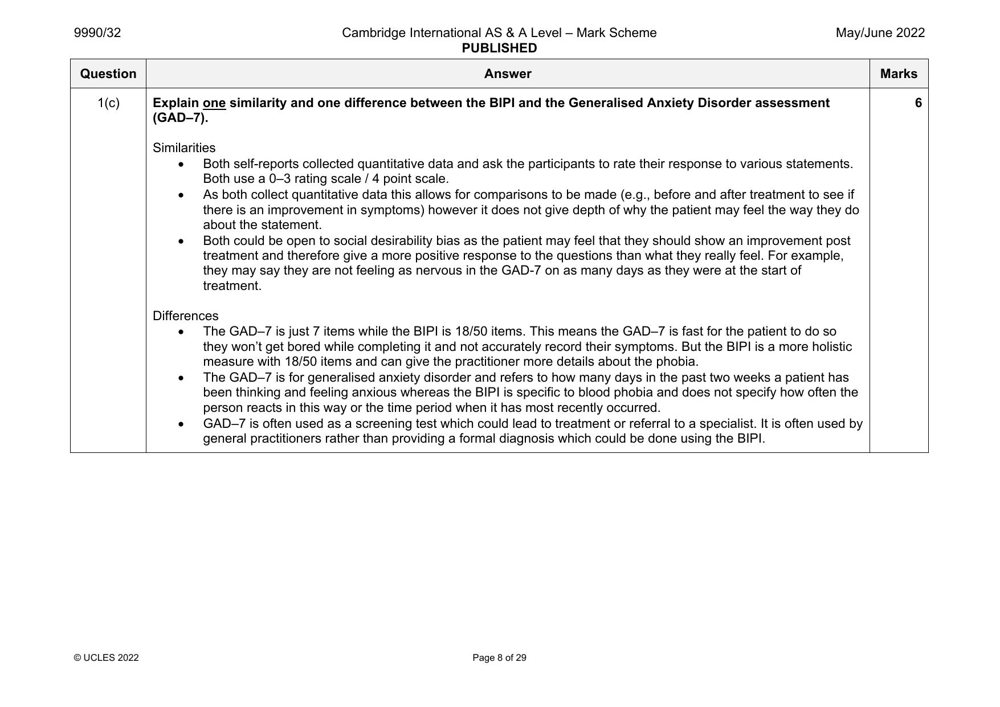
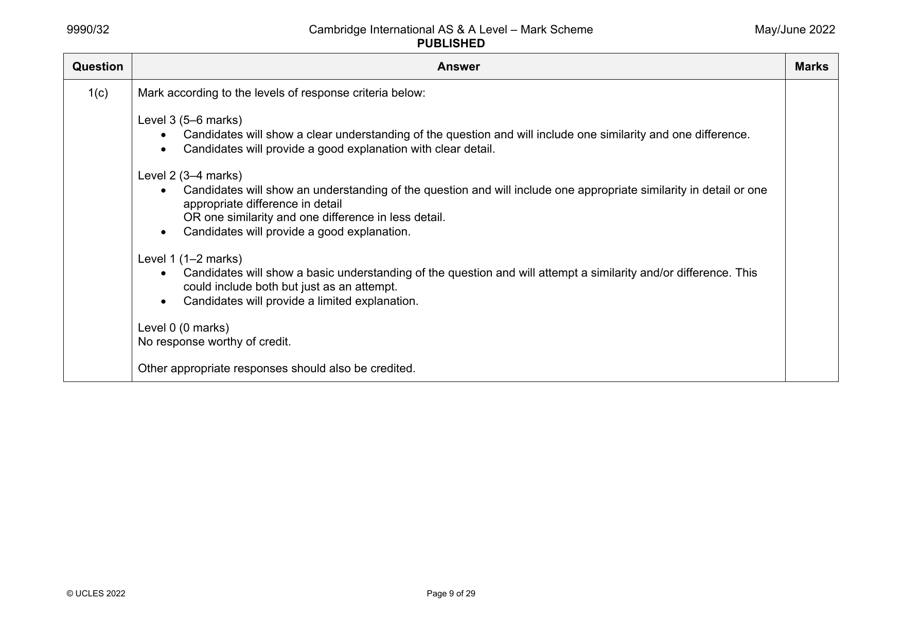
1(a) Explain what is meant ‘blood phobia’. 2
Award 1 mark for a basic explanation of the term/concept.
Award 2 marks for a detailed explanation of the term/concept.
For example:
It is an irrational and persistent fear of blood / blood related products / certain medical procedures. (2) People with this
phobia tend to avoid these procedures and may faint or feel sick at the sight of blood. (1)
Other appropriate responses should also be credited.
1(b) Describe features of the blood injection phobia inventory (BIPI). 4
Award 1–2 marks for a basic answer with some understanding of the topic area.
Award 3–4 marks for a detailed answer with clear understanding of the topic area.
The Blood-injection Phobia Inventory (BIPI) is a questionnaire has 18 items of stimulus content (1) and 27 phobic
responses (1). 50 items total (1) that covered a range of situations related to blood and injection phobias which are rated.
(1) Patient asked to evaluate their reaction/response to each on a 4 point scale (0–3). (1) Reactions cover cognitive,
physiological and behavioural responses. (1)
Rate frequency of symptoms / responses on a scale ranging from 0 = Never to 3 = Always. (1)
Credit examples of the situations / responses up to a maximum of 2 marks. (1 per situation/response)
E.g.
Situations:
When I see blood on my arm or finger after pricking myself with a needle.
When I think of the colour red.
Responses/reactions:
I faint.
My mind goes blank
Other appropriate responses should also be credited.
© UCLES 2022 Page 7 of 29
1(c) Explain one similarity and one difference between the BIPI and the Generalised Anxiety Disorder assessment 6
(GAD–7).
Similarities
Both self-reports collected quantitative data and ask the participants to rate their response to various statements.
Both use a 0–3 rating scale / 4 point scale.
As both collect quantitative data this allows for comparisons to be made (e.g., before and after treatment to see if
there is an improvement in symptoms) however it does not give depth of why the patient may feel the way they do
about the statement.
Both could be open to social desirability bias as the patient may feel that they should show an improvement post
treatment and therefore give a more positive response to the questions than what they really feel. For example,
they may say they are not feeling as nervous in the GAD-7 on as many days as they were at the start of
treatment.
Differences
The GAD–7 is just 7 items while the BIPI is 18/50 items. This means the GAD–7 is fast for the patient to do so
they won’t get bored while completing it and not accurately record their symptoms. But the BIPI is a more holistic
measure with 18/50 items and can give the practitioner more details about the phobia.
The GAD–7 is for generalised anxiety disorder and refers to how many days in the past two weeks a patient has
been thinking and feeling anxious whereas the BIPI is specific to blood phobia and does not specify how often the
person reacts in this way or the time period when it has most recently occurred.
GAD–7 is often used as a screening test which could lead to treatment or referral to a specialist. It is often used by
general practitioners rather than providing a formal diagnosis which could be done using the BIPI.
© UCLES 2022 Page 8 of 29
1(c) Mark according to the levels of response criteria below:
Level 3 (5–6 marks)
Candidates will show a clear understanding of the question and will include one similarity and one difference.
Candidates will provide a good explanation with clear detail.
Level 2 (3–4 marks)
Candidates will show an understanding of the question and will include one appropriate similarity in detail or one
appropriate difference in detail
OR one similarity and one difference in less detail.
Candidates will provide a good explanation.
Level 1 (1–2 marks)
Candidates will show a basic understanding of the question and will attempt a similarity and/or difference. This
could include both but just as an attempt.
Candidates will provide a limited explanation.
Level 0 (0 marks)
No response worthy of credit.
Other appropriate responses should also be credited.
© UCLES 2022 Page 9 of 29
Official mark scheme pages: 7, 8, 9 · source PDF URL
9990-2022-mj-32-q02
May/June 2022 · Paper 32 · Question 2 · 18 marks
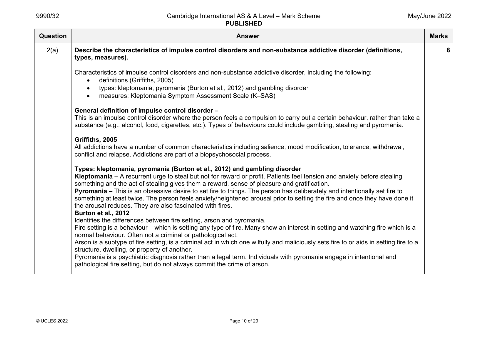
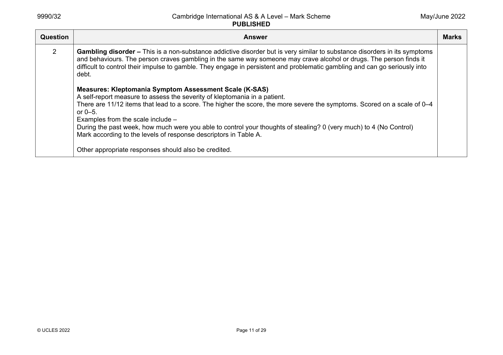
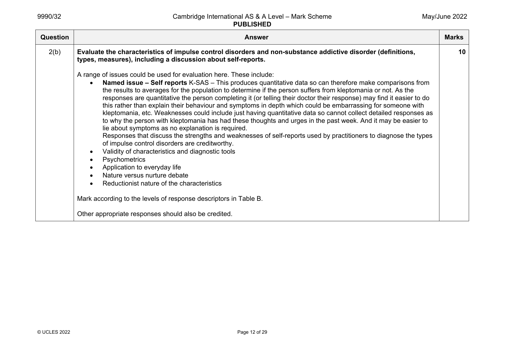
2(a) Describe the characteristics of impulse control disorders and non-substance addictive disorder (definitions, 8
types, measures).
Characteristics of impulse control disorders and non-substance addictive disorder, including the following:
definitions (Griffiths, 2005)
types: kleptomania, pyromania (Burton et al., 2012) and gambling disorder
measures: Kleptomania Symptom Assessment Scale (K–SAS)
General definition of impulse control disorder –
This is an impulse control disorder where the person feels a compulsion to carry out a certain behaviour, rather than take a
substance (e.g., alcohol, food, cigarettes, etc.). Types of behaviours could include gambling, stealing and pyromania.
Griffiths, 2005
All addictions have a number of common characteristics including salience, mood modification, tolerance, withdrawal,
conflict and relapse. Addictions are part of a biopsychosocial process.
Types: kleptomania, pyromania (Burton et al., 2012) and gambling disorder
Kleptomania – A recurrent urge to steal but not for reward or profit. Patients feel tension and anxiety before stealing
something and the act of stealing gives them a reward, sense of pleasure and gratification.
Pyromania – This is an obsessive desire to set fire to things. The person has deliberately and intentionally set fire to
something at least twice. The person feels anxiety/heightened arousal prior to setting the fire and once they have done it
the arousal reduces. They are also fascinated with fires.
Burton et al., 2012
Identifies the differences between fire setting, arson and pyromania.
Fire setting is a behaviour – which is setting any type of fire. Many show an interest in setting and watching fire which is a
normal behaviour. Often not a criminal or pathological act.
Arson is a subtype of fire setting, is a criminal act in which one wilfully and maliciously sets fire to or aids in setting fire to a
structure, dwelling, or property of another.
Pyromania is a psychiatric diagnosis rather than a legal term. Individuals with pyromania engage in intentional and
pathological fire setting, but do not always commit the crime of arson.
© UCLES 2022 Page 10 of 29
2 Gambling disorder – This is a non-substance addictive disorder but is very similar to substance disorders in its symptoms
and behaviours. The person craves gambling in the same way someone may crave alcohol or drugs. The person finds it
difficult to control their impulse to gamble. They engage in persistent and problematic gambling and can go seriously into
debt.
Measures: Kleptomania Symptom Assessment Scale (K-SAS)
A self-report measure to assess the severity of kleptomania in a patient.
There are 11/12 items that lead to a score. The higher the score, the more severe the symptoms. Scored on a scale of 0–4
or 0–5.
Examples from the scale include –
During the past week, how much were you able to control your thoughts of stealing? 0 (very much) to 4 (No Control)
Mark according to the levels of response descriptors in Table A.
Other appropriate responses should also be credited.
© UCLES 2022 Page 11 of 29
2(b) Evaluate the characteristics of impulse control disorders and non-substance addictive disorder (definitions, 10
types, measures), including a discussion about self-reports.
A range of issues could be used for evaluation here. These include:
Named issue – Self reports K-SAS – This produces quantitative data so can therefore make comparisons from
the results to averages for the population to determine if the person suffers from kleptomania or not. As the
responses are quantitative the person completing it (or telling their doctor their response) may find it easier to do
this rather than explain their behaviour and symptoms in depth which could be embarrassing for someone with
kleptomania, etc. Weaknesses could include just having quantitative data so cannot collect detailed responses as
to why the person with kleptomania has had these thoughts and urges in the past week. And it may be easier to
lie about symptoms as no explanation is required.
Responses that discuss the strengths and weaknesses of self-reports used by practitioners to diagnose the types
of impulse control disorders are creditworthy.
Validity of characteristics and diagnostic tools
Psychometrics
Application to everyday life
Nature versus nurture debate
Reductionist nature of the characteristics
Mark according to the levels of response descriptors in Table B.
Other appropriate responses should also be credited.
© UCLES 2022 Page 12 of 29
Official mark scheme pages: 10, 11, 12 · source PDF URL
9990-2022-mj-33-q01
May/June 2022 · Paper 33 · Question 1 · 12 marks
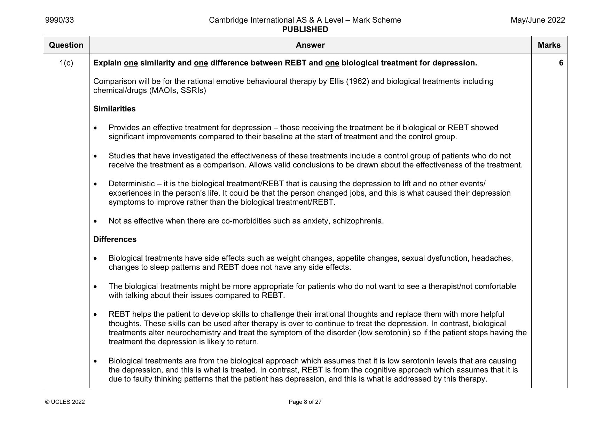
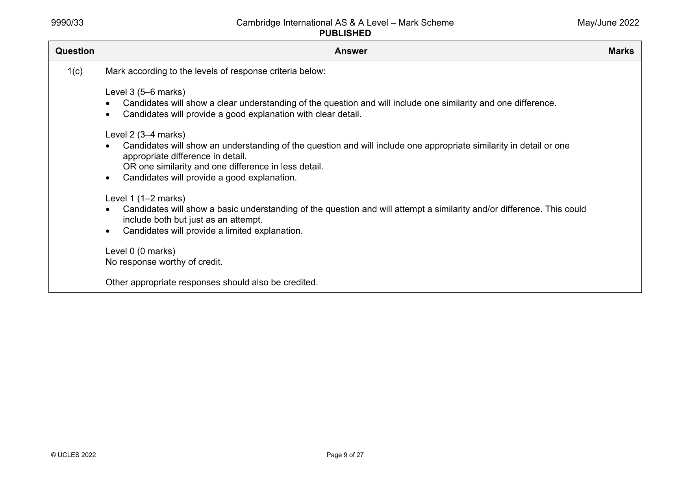
1(a) Identify two characteristics of bipolar disorder. 2
Award 1 mark for each characteristic of bipolar disorder.
Must include both reference to a symptom of low mood and a symptom of high mood for full marks.
Two strongly contrasting phases – high mood (manic phase) followed by very low mood. (2)
High mood phase symptoms – euphoria, increased activity/energy, racing thoughts, impulsiveness. (1 max)
Low mood phase symptoms – depressed mood, low energy/oversleeping, lack of interest in normal activities. (1 max)
Other appropriate responses should also be credited.
1(b) Describe rational emotive behaviour therapy (REBT) as a treatment for depression (Ellis, 1962). 4
Award 1–2 marks for a basic answer with some understanding of the topic area.
Award 3–4 marks for a detailed answer with clear understanding of the topic area.
For example –
This follows the ABC model. (1)
Activating agent – what is the behaviour and/or attitude of the patient towards events in their lives. (1)
Beliefs – what is the belief of the patient toward the event. (1)
Consequence – behavioural response in relation to the belief about the event. (1)
Ellis believes if a person has constant negative beliefs about events in their lives, they are likely to suffer from depression.
(1)
The goal of therapy is to identify the unhelpful thoughts and replace them with more rational and constructive thoughts. The
patient will go away between sessions and practice developing more helpful thoughts about life experiences and the
depression symptoms should improve. (2)
Other appropriate responses should also be credited.
© UCLES 2022 Page 7 of 27
1(c) Explain one similarity and one difference between REBT and one biological treatment for depression. 6
Comparison will be for the rational emotive behavioural therapy by Ellis (1962) and biological treatments including
chemical/drugs (MAOIs, SSRIs)
Similarities
Provides an effective treatment for depression – those receiving the treatment be it biological or REBT showed
significant improvements compared to their baseline at the start of treatment and the control group.
Studies that have investigated the effectiveness of these treatments include a control group of patients who do not
receive the treatment as a comparison. Allows valid conclusions to be drawn about the effectiveness of the treatment.
Deterministic – it is the biological treatment/REBT that is causing the depression to lift and no other events/
experiences in the person’s life. It could be that the person changed jobs, and this is what caused their depression
symptoms to improve rather than the biological treatment/REBT.
Not as effective when there are co-morbidities such as anxiety, schizophrenia.
Differences
Biological treatments have side effects such as weight changes, appetite changes, sexual dysfunction, headaches,
changes to sleep patterns and REBT does not have any side effects.
The biological treatments might be more appropriate for patients who do not want to see a therapist/not comfortable
with talking about their issues compared to REBT.
REBT helps the patient to develop skills to challenge their irrational thoughts and replace them with more helpful
thoughts. These skills can be used after therapy is over to continue to treat the depression. In contrast, biological
treatments alter neurochemistry and treat the symptom of the disorder (low serotonin) so if the patient stops having the
treatment the depression is likely to return.
Biological treatments are from the biological approach which assumes that it is low serotonin levels that are causing
the depression, and this is what is treated. In contrast, REBT is from the cognitive approach which assumes that it is
due to faulty thinking patterns that the patient has depression, and this is what is addressed by this therapy.
© UCLES 2022 Page 8 of 27
1(c) Mark according to the levels of response criteria below:
Level 3 (5–6 marks)
Candidates will show a clear understanding of the question and will include one similarity and one difference.
Candidates will provide a good explanation with clear detail.
Level 2 (3–4 marks)
Candidates will show an understanding of the question and will include one appropriate similarity in detail or one
appropriate difference in detail.
OR one similarity and one difference in less detail.
Candidates will provide a good explanation.
Level 1 (1–2 marks)
Candidates will show a basic understanding of the question and will attempt a similarity and/or difference. This could
include both but just as an attempt.
Candidates will provide a limited explanation.
Level 0 (0 marks)
No response worthy of credit.
Other appropriate responses should also be credited.
© UCLES 2022 Page 9 of 27
Official mark scheme pages: 7, 8, 9 · source PDF URL
9990-2022-mj-33-q02
May/June 2022 · Paper 33 · Question 2 · 18 marks
2(a) Describe explanations of phobias. 8
Explanations of phobias, including the following:
behavioural (classical conditioning, Watson, 1920)
psychoanalytic (Freud, 1909)
biomedical/genetic (Ost, 1992)
cognitive (DiNardo et al., 1988)
Behavioural (classical conditioning, Watson, 1920)
A phobia develops as the neutral stimulus is paired with something the person is afraid of (the unconditioned stimulus). If
enough pairings occur or the initial UCS is very frightening the person will end up with a fear of the NS. The NS then
becomes the CS.
Candidates may describe the case of the little Albert who was conditioned to be afraid of a rat by Watson banging an iron
bar behind the baby which made him cry. Eventually just the sight of the rat was enough to cause the crying.
Psychoanalytic (Freud, 1909)
A fear is repressed into the unconscious to protect the ego. The phobia can be a redirected fear during an intensely
frightening experience (e.g. a physical attack) onto an object.
Fear and anxiety can result from impulses from the id which may be repressed or denied. This repression creates internal
conflict which leads to a phobia.
Candidates can also summarise the case of little Hans with reference to explanation of phobia(s).
Biomedical/genetic (Ost, 1992)
Found that blood-phobic subjects had more first-degree relatives with the same phobia compared to injection-phobic
participants (61% vs 29%). In addition, the blood-phobic patients were more likely to fear they would faint in the phobic
situation (77% vs 48%). Concluded that there appears to be a strong genetic link and more likely to lead to a strong
physiological response (fainting).
© UCLES 2022 Page 10 of 27
2(a) Cognitive (DiNardo et al., 1988)
We have irrational thoughts about an object due to a previous experience that we believe will be repeated.
DiNardo and his colleagues studied 32/37 women (18–21 years old). Some of this group had a dog phobia and some did
not suffer from a dog phobia. Started with 17 dog-phobic and 20 non-dog-phobic – some were excluded from some of the
results for a variety of reasons e.g. did not do the behavioural test. Participants did a self-report and had a behavioural test
where they were approached by and had to touch a dog. Heart rate was monitored and rated anxiety on 0–8 scale. Dog-
phobic group rated their fear higher than non-dog-phobic participants and this increased as the dog got closer to the
phobic participants. Phobic/no conditioning had higher heart rate than phobic /conditioning event. No significant difference
between heart rate of phobic/conditioning and non-phobic/conditioning.
Also found that 56% of people with dog phobias could recall being bitten or having a frightening past experience with a
dog. However, 66% of the group with no dog phobia also had memories of being bitten by dogs and yet had not developed
any anxiety about seeing dogs in the future. This shows that not everyone who is exposed to conditioning would end up
developing a phobia, and it may be explained more through our thought processes after an event than the event itself.
Mark according to the levels of response descriptors in Table A.
Other appropriate responses should also be credited.
© UCLES 2022 Page 11 of 27
2(b) Evaluate explanations of phobias, including a discussion of nature versus nurture. 10
A range of issues could be used for evaluation here. These include:
Names issue – nature versus nurture debate with reference to the various explanations. E.g. biomedical is nature
and behavioural is nurture, psychodynamic is both nature and nurture (we all go through the psychosexual stages but
whether we pass through them successfully is due to life experiences/nurture), DiNardo/cognitive is mainly nurture as
the person needs to have a bad experience but then develops negative thoughts about this experience.
Determinism
comparisons of different explanations
Application of psychology to everyday life (with reference to explanations)
Reductionist/holistic nature of the explanations
Evidence to support the explanations (and an evaluation of this evidence if linked back to explanation)
Mark according to the levels of response descriptors in Table B.
Other appropriate responses should also be credited.
© UCLES 2022 Page 12 of 27
Official mark scheme pages: 10, 11, 12 · source PDF URL
9990-2022-mj-41-q01
May/June 2022 · Paper 41 · Question 1 · 15 marks
1(a) In a case study by Glover, a 56-year-old married woman who had been 2
shoplifting every day for 14 years attended treatment sessions. Her
treatment used covert sensitisation with aversive imagery.
Explain what is meant by the term ‘aversive imagery’.
Most likely answer (other appropriate responses to be credited):
an image that induces change in behaviour using negative
reinforcement or positive punishment.
for example, in the study by Glover the participant imagined nausea and
vomitting as she approached an item in a supermarket with all other
shoppers watching until she replaced the item and left the store.
Marks: 1 mark for partial explanation; 2 marks for detailed explanation.
1(b) Suggest two strengths of the use of a face-to-face interview by a 4
therapist treating a patient with kleptomania.
Most likely answer (other appropriate responses to be credited):
the therapist can observe the patient’s responses to questions and
other non-verbal movements which may help with diagnosis/therapy
e.g. to see of the patient is being honest or not.
the therapist is providing a more personal service – seeing face to face
and giving time to the patient, to understand their kleptomania, unlike a
telephone interview which is less personal
the patient can observe the therapist, non-verbal communication, and
see whether the therapist gives ‘nods of agreement’ to positive patient
behaviour which can be rewarding
the patient can ask questions about their kleptomania which they may
not do over a telephone.
Marks: 1 mark for suggestion; 2 marks for related to kleptomania 2
1(c) Suggest why biochemical treatments might not be effective when 4
treating kleptomania.
Most likely answer (other appropriate responses to be credited):
there is no drug that specifically stops a person from stealing (better
used with addiction to alcohol / an emetic such as ipecac which causes
vomiting)
the person may not take the drug
the drug may be addictive and long-term use may cause additional
problems.
drugs reduce symptoms but do not remove the cause (what symptoms
does a person with kleptomania have?)
Marks: 1 mark for each suggestion outlined and (1 mark) related to
kleptomania 2
OR 1 mark for suggestion and 24 marks for detail and related to
kleptomania.
© UCLES 2022 Page 5 of 18
1(d) Discuss whether generalisations can or cannot be made from this case 5
study. You should consider both sides of the argument and include a
conclusion.
Most likely answer (other appropriate responses to be credited):
Can
the treatment of covert sensitisation can be generalised to others with
kleptomania
covert sensitisation can be used to treat other ICDs such as pyromania
Cannot
the specifics of this individual case cannot be generalised
the aversive images (nausea and vomiting) will not work with everyone;
different images need to be used.
Conclusion: any appropriate conclusion drawn from the discussion that has
been presented. 1 mark if appropriate. A conclusion is a ‘decision reached
by reasoning’ and so a summary of points already made scores 0 marks.
Marks: Question requires discussion; always plural of each argument, and
always requires conclusion.
1 mark for each point for/against (however detailed) and related to the
question up to 4 max. 2 marks max for two points for/against unrelated to
the question. 1 mark for conclusion.
Question Answer Marks
Official mark scheme pages: 5, 6 · source PDF URL
9990-2022-mj-41-q05
May/June 2022 · Paper 41 · Question 5 · 18 marks
5(a) Design a study to investigate the effectiveness of biochemical 10
treatments for impulse control disorder.
Marks: use generic levels of response Design a study question part (a).
Additional: Candidates should design the study showing evidence of design
features appropriate to the named method. The named method is: any
appropriate method.
Specific features:
Experiments: type, IV, DV, controls, experimental design.
Observations: type, setting, response categories, sampling frame,
number of observers.
Questionnaires/Interviews: type, setting, example questions.
Scoring/rating scale, analysis of responses.
General features of research methodology: sampling technique &
sample, type of data, ethics, reliability, validity, data analysis.
5(b) Explain the psychological and methodological evidence on which your 8
study is based.
Marks: use generic levels of response ‘Design a study’ question part (b).
Note: If only methodological or psychological explanation is provided max 5
marks
Candidates are expected to explain the reasons for the suggested design in
part (a). Explanation should be both psychological and methodological.
Psychological to include appropriate theory or research.
Additional: candidates are expected to justify their decisions or evidence
presented regarding the design made in answer to question part (a).
Syllabus: treating and managing ICDs and non-substance addictive
disorder: biochemical (Grant et al., 2008)
Psychological:
The biochemical treatment using nalmefene is believed by Grant et al.
(2008) to help reduce the urge to gamble. To test its effectiveness,
participants were assessed to ensure they were suitable to participate. They
were then randomly allocated to either a group receiving nalmefene or to a
group receiving a placebo.
Methodological: explanation of method using general and specific features
as above.
© UCLES 2022 Page 13 of 18
Official mark scheme pages: 13 · source PDF URL
9990-2022-mj-41-q09
May/June 2022 · Paper 41 · Question 9 · 12 marks
9 ‘Psychometric measures used to assess obsessive-compulsive
disorder (OCD) provide therapists with no useful information.’
To what extent do you agree with this statement? Use examples of
research you have studied to support your answer.
Marks: use generic levels of response in table C.
Syllabus: measures: Maudsley Obsessive-Compulsive Inventory (MOCI),
Yale-Brown Obsessive-Compulsive Scale (Y-BOCS)
Most likely (any other appropriate responses should be credited):
Useful:
measures such as Y-BOCS and MOCI indicate the severity of a
disorder
these measures can highlight specific features of the disorder
these measures can be used as comparisons with others with the same
disorder
these measures provide quantitative data
Not useful:
talking to a therapist in a clinical interview can reveal perhaps more
than any test
the measure can use scales (5 or 7 point) which may not represent
what the person thinks: they could take a neutral option
people answering the questionnaires may not be honest about
everything
measures assume people have similarities; they are less individualistic.
Question Answer Marks
Official mark scheme pages: 17 · source PDF URL
9990-2022-mj-42-q01
May/June 2022 · Paper 42 · Question 1 · 15 marks
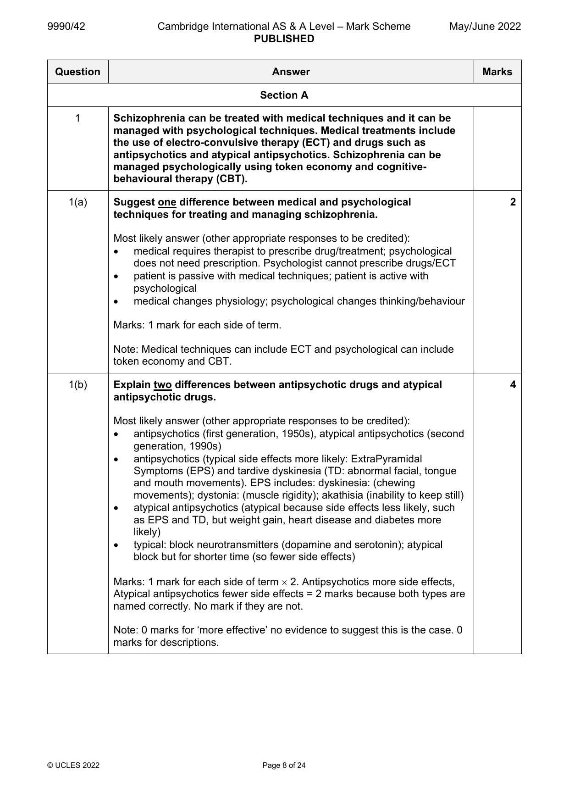
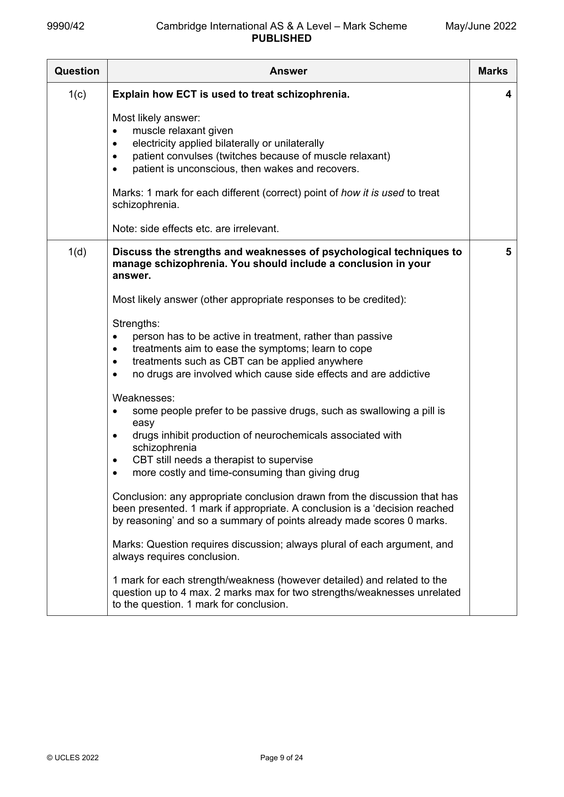
1 Schizophrenia can be treated with medical techniques and it can be
managed with psychological techniques. Medical treatments include
the use of electro-convulsive therapy (ECT) and drugs such as
antipsychotics and atypical antipsychotics. Schizophrenia can be
managed psychologically using token economy and cognitive-
behavioural therapy (CBT).
1(a) Suggest one difference between medical and psychological 2
techniques for treating and managing schizophrenia.
Most likely answer (other appropriate responses to be credited):
medical requires therapist to prescribe drug/treatment; psychological
does not need prescription. Psychologist cannot prescribe drugs/ECT
patient is passive with medical techniques; patient is active with
psychological
medical changes physiology; psychological changes thinking/behaviour
Marks: 1 mark for each side of term.
Note: Medical techniques can include ECT and psychological can include
token economy and CBT.
1(b) Explain two differences between antipsychotic drugs and atypical 4
antipsychotic drugs.
Most likely answer (other appropriate responses to be credited):
antipsychotics (first generation, 1950s), atypical antipsychotics (second
generation, 1990s)
antipsychotics (typical side effects more likely: ExtraPyramidal
Symptoms (EPS) and tardive dyskinesia (TD: abnormal facial, tongue
and mouth movements). EPS includes: dyskinesia: (chewing
movements); dystonia: (muscle rigidity); akathisia (inability to keep still)
atypical antipsychotics (atypical because side effects less likely, such
as EPS and TD, but weight gain, heart disease and diabetes more
likely)
typical: block neurotransmitters (dopamine and serotonin); atypical
block but for shorter time (so fewer side effects)
Marks: 1 mark for each side of term 2. Antipsychotics more side effects,
Atypical antipsychotics fewer side effects = 2 marks because both types are
named correctly. No mark if they are not.
Note: 0 marks for ‘more effective’ no evidence to suggest this is the case. 0
marks for descriptions.
© UCLES 2022 Page 8 of 24
1(c) Explain how ECT is used to treat schizophrenia. 4
Most likely answer:
muscle relaxant given
electricity applied bilaterally or unilaterally
patient convulses (twitches because of muscle relaxant)
patient is unconscious, then wakes and recovers.
Marks: 1 mark for each different (correct) point of how it is used to treat
schizophrenia.
Note: side effects etc. are irrelevant.
1(d) Discuss the strengths and weaknesses of psychological techniques to 5
manage schizophrenia. You should include a conclusion in your
answer.
Most likely answer (other appropriate responses to be credited):
Strengths:
person has to be active in treatment, rather than passive
treatments aim to ease the symptoms; learn to cope
treatments such as CBT can be applied anywhere
no drugs are involved which cause side effects and are addictive
Weaknesses:
some people prefer to be passive drugs, such as swallowing a pill is
easy
drugs inhibit production of neurochemicals associated with
schizophrenia
CBT still needs a therapist to supervise
more costly and time-consuming than giving drug
Conclusion: any appropriate conclusion drawn from the discussion that has
been presented. 1 mark if appropriate. A conclusion is a ‘decision reached
by reasoning’ and so a summary of points already made scores 0 marks.
Marks: Question requires discussion; always plural of each argument, and
always requires conclusion.
1 mark for each strength/weakness (however detailed) and related to the
question up to 4 max. 2 marks max for two strengths/weaknesses unrelated
to the question. 1 mark for conclusion.
© UCLES 2022 Page 9 of 24
Official mark scheme pages: 8, 9 · source PDF URL
9990-2022-mj-42-q05
May/June 2022 · Paper 42 · Question 5 · 18 marks
5(a) Design a study to investigate the effectiveness of chemical/drug 10
treatments (MAOIs, SSRIs) for depression.
Marks: use generic levels of response Design a study question part (a).
Additional: Candidates should design the study showing evidence of design
features appropriate to the named method. The named method is: any
appropriate method.
Specific features:
Experiments: type, IV, DV, controls, experimental design.
Observations: type, setting, response categories, sampling frame,
number of observers.
Questionnaires/Interviews: type, setting, example questions.
Scoring/rating scale, analysis of responses.
General features of research methodology: sampling technique and sample,
type of data, ethics, reliability, validity, data analysis.
5(b) Explain the psychological and methodological evidence on which your 8
study is based.
Marks: use generic levels of response ‘Design a study’ question part (b).
Note: If only methodological or psychological explanation is provided max 5
marks
Candidates are expected to explain the reasons for the suggested design in
part (a). Explanation should be both psychological and methodological.
Psychological to include appropriate theory or research.
Additional: candidates are expected to justify their decisions or evidence
presented regarding the design made in answer to question part (a).
Syllabus: treatment and management of depression: biological: chemical/
drugs (MAOIs, SSRIs)
Psychological:
For example: MAOIs inhibit the enzyme monoamine oxidase. This enzyme
normally breaks down noradrenaline, serotonin and dopamine, but these
neurotransmitters are not broken down, they stay at normal high levels and
so ‘reduce depression’.
The Beck Depression Inventory (BDI) will also feature in this answer (as DV)
Methodological: explanation of method using general and specific features
as above.
© UCLES 2022 Page 17 of 24
Official mark scheme pages: 17 · source PDF URL
9990-2022-mj-42-q09
May/June 2022 · Paper 42 · Question 9 · 12 marks
9 ‘The nature versus nurture debate is irrelevant when explaining 12
depression.’
To what extent do you agree with this statement? Use examples of
research you have studied to support your answer.
Marks: use generic levels of response in table C.
Syllabus: Explanations of depression
Most likely (any other appropriate responses should be credited):
Relevant:
nature versus nurture is reductionist and can therefore be studied much
more precisely than say psychoanalytic explanations
nature or nurture can allow research to focus on the cause of the
depression
reasearch done on ‘nurture’ such as ‘learned helplessness’ other done
on biological.
Irrelevant:
People will suffer from depression whether it is nature or nurture
People’s symptoms will be treated whether the cause is nature of
nurture
The nature versus nurture debate is theoretical. It has no practical value
Nature versus nurture determines the type of treatment (drugs versus
restructuring or REBT)
It might be that for some people the cause is ‘nature’ for others it is
‘nurture’.
© UCLES 2022 Page 21 of 24
Official mark scheme pages: 21 · source PDF URL
9990-2022-mj-43-q01
May/June 2022 · Paper 43 · Question 1 · 15 marks
1(a) In a case study by Glover, a 56-year-old married woman who had been 2
shoplifting every day for 14 years attended treatment sessions. Her
treatment used covert sensitisation with aversive imagery.
Explain what is meant by the term ‘aversive imagery’.
Most likely answer (other appropriate responses to be credited):
an image that induces change in behaviour using negative
reinforcement or positive punishment.
for example, in the study by Glover the participant imagined nausea and
vomitting as she approached an item in a supermarket with all other
shoppers watching until she replaced the item and left the store.
Marks: 1 mark for partial explanation; 2 marks for detailed explanation.
1(b) Suggest two strengths of the use of a face-to-face interview by a 4
therapist treating a patient with kleptomania.
Most likely answer (other appropriate responses to be credited):
the therapist can observe the patient’s responses to questions and
other non-verbal movements which may help with diagnosis/therapy
e.g. to see of the patient is being honest or not.
the therapist is providing a more personal service – seeing face to face
and giving time to the patient, to understand their kleptomania, unlike a
telephone interview which is less personal
the patient can observe the therapist, non-verbal communication, and
see whether the therapist gives ‘nods of agreement’ to positive patient
behaviour which can be rewarding
the patient can ask questions about their kleptomania which they may
not do over a telephone.
Marks: 1 mark for suggestion; 2 marks for related to kleptomania 2
1(c) Suggest why biochemical treatments might not be effective when 4
treating kleptomania.
Most likely answer (other appropriate responses to be credited):
there is no drug that specifically stops a person from stealing (better
used with addiction to alcohol / an emetic such as ipecac which causes
vomiting)
the person may not take the drug
the drug may be addictive and long-term use may cause additional
problems.
drugs reduce symptoms but do not remove the cause (what symptoms
does a person with kleptomania have?)
Marks: 1 mark for each suggestion outlined and (1 mark) related to
kleptomania 2
OR 1 mark for suggestion and 24 marks for detail and related to
kleptomania.
© UCLES 2022 Page 5 of 18
1(d) Discuss whether generalisations can or cannot be made from this case 5
study. You should consider both sides of the argument and include a
conclusion.
Most likely answer (other appropriate responses to be credited):
Can
the treatment of covert sensitisation can be generalised to others with
kleptomania
covert sensitisation can be used to treat other ICDs such as pyromania
Cannot
the specifics of this individual case cannot be generalised
the aversive images (nausea and vomiting) will not work with everyone;
different images need to be used.
Conclusion: any appropriate conclusion drawn from the discussion that has
been presented. 1 mark if appropriate. A conclusion is a ‘decision reached
by reasoning’ and so a summary of points already made scores 0 marks.
Marks: Question requires discussion; always plural of each argument, and
always requires conclusion.
1 mark for each point for/against (however detailed) and related to the
question up to 4 max. 2 marks max for two points for/against unrelated to
the question. 1 mark for conclusion.
Question Answer Marks
Official mark scheme pages: 5, 6 · source PDF URL
9990-2022-mj-43-q05
May/June 2022 · Paper 43 · Question 5 · 18 marks
5(a) Design a study to investigate the effectiveness of biochemical 10
treatments for impulse control disorder.
Marks: use generic levels of response Design a study question part (a).
Additional: Candidates should design the study showing evidence of design
features appropriate to the named method. The named method is: any
appropriate method.
Specific features:
Experiments: type, IV, DV, controls, experimental design.
Observations: type, setting, response categories, sampling frame,
number of observers.
Questionnaires/Interviews: type, setting, example questions.
Scoring/rating scale, analysis of responses.
General features of research methodology: sampling technique &
sample, type of data, ethics, reliability, validity, data analysis.
5(b) Explain the psychological and methodological evidence on which your 8
study is based.
Marks: use generic levels of response ‘Design a study’ question part (b).
Note: If only methodological or psychological explanation is provided max 5
marks
Candidates are expected to explain the reasons for the suggested design in
part (a). Explanation should be both psychological and methodological.
Psychological to include appropriate theory or research.
Additional: candidates are expected to justify their decisions or evidence
presented regarding the design made in answer to question part (a).
Syllabus: treating and managing ICDs and non-substance addictive
disorder: biochemical (Grant et al., 2008)
Psychological:
The biochemical treatment using nalmefene is believed by Grant et al.
(2008) to help reduce the urge to gamble. To test its effectiveness,
participants were assessed to ensure they were suitable to participate. They
were then randomly allocated to either a group receiving nalmefene or to a
group receiving a placebo.
Methodological: explanation of method using general and specific features
as above.
© UCLES 2022 Page 13 of 18
Official mark scheme pages: 13 · source PDF URL
9990-2022-mj-43-q09
May/June 2022 · Paper 43 · Question 9 · 12 marks
9 ‘Psychometric measures used to assess obsessive-compulsive
disorder (OCD) provide therapists with no useful information.’
To what extent do you agree with this statement? Use examples of
research you have studied to support your answer.
Marks: use generic levels of response in table C.
Syllabus: measures: Maudsley Obsessive-Compulsive Inventory (MOCI),
Yale-Brown Obsessive-Compulsive Scale (Y-BOCS)
Most likely (any other appropriate responses should be credited):
Useful:
measures such as Y-BOCS and MOCI indicate the severity of a
disorder
these measures can highlight specific features of the disorder
these measures can be used as comparisons with others with the same
disorder
these measures provide quantitative data
Not useful:
talking to a therapist in a clinical interview can reveal perhaps more
than any test
the measure can use scales (5 or 7 point) which may not represent
what the person thinks: they could take a neutral option
people answering the questionnaires may not be honest about
everything
measures assume people have similarities; they are less individualistic.
Question Answer Marks
Official mark scheme pages: 17 · source PDF URL
9990-2022-on-31-q01
Oct/Nov 2022 · Paper 31 · Question 1 · 12 marks
1(a) Outline the cognitive explanation of depression (Beck, 1979). 2
Award 1 mark for a basic outline of the term/concept.
Award 2 marks for a detailed outline of the term/concept.
Example 2-mark response:
Depression is due to faulty information processing (1) in which the individual
feels responsible for even the most insignificant events (1). For example,
someone with depression may blame themselves for choosing the ‘wrong’
day for a family outing because it rains (1).
Other appropriate responses should also be credited (e.g. other cognitive
explanations not in the syllabus).
1(b) Describe the study by Oruc et al. (1997) about a biological explanation 4
for bipolar disorder.
Award 1–2 marks for a basic answer with some understanding of the topic
area.
Award 3–4 marks for a detailed answer with clear understanding of the topic
area.
• 42 participants (aged between 31 and 70; 25 f 17 m) with diagnosis of
bipolar disorder from 2 psychiatric institutions in Croatia
• Control group of 40 (no history of mental illness), matched for sex and
age
• Information collected from participants and their family members and
diagnosis confirmed through medical records
• DNA testing for polymorphisms in serotonin receptor 2c (5-HTR2c) and
the serotonin transporter (5-HTT) gene
• 16/42 (38%) of experimental group had first degree relative with major
affective disorder
• But no overall association found between genes and presence of
bipolar disorder
• But when participants analysed separately by gender (as serotonin as a
neurotransmitter is understood to be sexually dimorphic), associations
found for both polymorphisms in female participants
• Suggests polymorphisms in these genes could be responsible for
increased risk of bipolar disorder in females
© UCLES 2022 Page 6 of 24
1(c) Explain two strengths of the study by Oruc et al. 6
Likely strengths include:
• Valid – as control group of 40 is used for comparison
• Reliable – Information about incidence of bipolar disorder in family
collected by more than one means, increasing both reliability and
validity
• Objective – DNA valid as objective data and all results quantitative
• Comprehensive – two different gene polymorphisms examined rather
than just one to give larger view of role of serotonin mechanisms
• Useful – If increased susceptibility in females then some intervention
could be employed early on to reduce risk of development (but not
necessary in males)
• Ethical – confidentiality maintained and participants not put under any
harm
Mark according to the levels of response criteria below:
Level 3 (5–6 marks)
• Candidates will show a clear understanding of the question and will
explain two strengths.
• Candidates will provide a good explanation with clear detail.
Level 2 (3–4 marks)
• Candidates will show an understanding of the question and will explain
one appropriate strength in detail.
OR
• two strengths in less detail.
Level 1 (1–2 marks)
• Candidates will show a basic understanding of the question and will
attempt an explanation of a strength. They could include 2 strengths but
just as an attempt.
• Candidates will provide a limited explanation.
Level 0 (0 marks)
No response worthy of credit.
Other appropriate responses should also be credited.
© UCLES 2022 Page 7 of 24
Official mark scheme pages: 6, 7 · source PDF URL
9990-2022-on-31-q02
Oct/Nov 2022 · Paper 31 · Question 2 · 18 marks
2(a) Describe characteristics of obsessive-compulsive and related 8
disorders (types, examples/case studies, measures).
Characteristics of obsessive-compulsive and related disorders, including the
following:
• Types of and common obsessions, common compulsions, hoarding
disorder and body dysmorphic disorder
• Examples and case studies (‘Charles’ by Rappaport, 1989)
• Measures: Maudsley Obsessive-Compulsive Inventory (MOCI), Yale-
Brown Obsessive-Compulsive Scale (Y-BOCS)
Types of and common obsessions, common compulsions, hoarding
disorder and body dysmorphic disorder could include:
OCD can affect up to 5% of the population. An individual with OCD is likely
to suffer with obsessions and compulsions (although they may not
experience both).
Obsessions are thoughts (cognitive) that are persistent, worrying, intrusive
and disturbing. Common examples include:
• fear of illness or infection
• fear of accidentally injuring oneself or others
• strong desire for order and symmetry
• fear of deliberately harming oneself
• imagining fire breaking out in any building they enter
• worrying that a family member come to harm
Compulsions are behaviours that are repetitive and give temporary relief to
the anxiety/obsessions. Engaging in these compulsions is a means of
supressing obsessions. Behaviours are excessive and are not a realistic
way to relieve the source of anxiety.
Common examples include:
• frequent and excessive handwashing
• ordering objects in some way e.g. cans in a cupboard with labels
aligned or ornaments in precise positions
• checking repeatedly e.g. checking front door is locked 20 times before
leaving home
• Ritualistically sequenced behaviour e.g. switching off lights and locking
doors in a precise sequence with any irregularity or breach of
concentration causing need for sequence to start again
• Repetitive counting (can be up to a specific designated number) or
repeating word or phrase over and over again
• Repetitive tapping
© UCLES 2022 Page 8 of 24
2(a) Hoarding disorder is characterised by difficulty in disposing of
possessions. This can result in collecting so many items that their homes
are unhygienic and unsafe. Hoarders may collect clothes, magazines,
household supplies, photographs and newspapers. Hoarders cannot part
with items without this leading to great distress and anxiety regardless of the
utility or value of the items concerned. Hoarders may hoard because they
think someone will come to harm if something is thrown away or because
they fear that they will need an item in the future or because they believe
items have an emotional significance.
Body dysmorphic disorder (BDD) is characterised by obsessive thoughts
about perceived flaws in physical appearance. These faults may be slight
and not noticed by others and are often on the skin of the face. Anxiety
about these perceived flaws (obsessions) leads to compulsive repetitive
behaviours such as frequent mirror-checking or grooming (hair-washing,
shaving, or constant comparisons with others) that may occupy several
hours per day.
Examples and case studies (‘Charles’ by Rappaport, 1989):
• Charles washes excessively (compulsion)
• Elaborate ritual that takes many hours
• Obsession with germs
• Drug trial with tricyclic antidepressants
Measures: Maudsley Obsessive-Compulsive Inventory (MOCI), Yale-
Brown Obsessive-Compulsive Scale (Y-BOCS).
MOCI is a psychometric test designed to assess OCD. It is a quick
assessment tool for clinicians, rather than a formal diagnostic tool. MOCI is
a self-report questionnaire using a forced choice ‘yes’ or ‘no’ format. There
are 30 items leading to a total score between 0 and 30. The 30 items are
divided into 4 sub-scales:
• Checking (9 items) e.g. ‘I frequently have to check things (gas or water
taps, doors, etc.) several times’
• Cleaning/washing (11 items), e.g. ‘I am not unduly concerned about
germs and diseases’
• Slowness (7 items) e.g. ‘I do not take a long time to dress in the
morning’
• Doubting (7 items) e.g. ‘Even when I do something very carefully, I
often feel that it is not quite right’
Y-BOCS is used to measure the nature and severity of symptoms. It
involves a semi-structured interview, taking about 30 minutes and involves a
checklist of different obsessions and compulsions, with a 10-item severity
scale. Obsessive categories include religious, contamination and
aggressive. Compulsion categories include counting, hoarding and washing.
Individuals can rate the time they spend on obsessions, how hard they are
to resist and how much distress they cause. Scores range from 0 (no
symptoms) to 40 (severe symptoms).
Mark according to the levels of response descriptors in Table A.
Other appropriate responses should also be credited.
© UCLES 2022 Page 9 of 24
2(b) Evaluate characteristics of obsessive-compulsive and related 10
disorders (types, examples/case studies, measures) including a
discussion of qualitative and quantitative data.
A range of issues could be used for evaluation here. These include:
• Named issue – qualitative and quantitative data. The diagnosis of
OCD and related disorders is likely to be collected qualitatively but use
some quantitative measures in diagnosis (a certain number of
symptoms present for a specific length of time), case study by
Rappaport gathers mostly qualitative data, MOCI and Y-BOCS both
gather quantitative data with Y-BOCS having the option for qualitative
data too.
– The strengths of quantitative data are the weaknesses of qualitative
data. Quantitative data can be easily used to analyse for
comparison e.g. use of Y-BOCs with Charles before and after
treatment
– Weaknesses of quantitative data include the potential lack of
validity e.g. in MOCI patient is unable to describe in own words or
pick an option other than yes or no (forced choice) so can limit
validity
– Qualitative data is often more comprehensive (allows individuals to
describe their feelings about compulsions in detail in Y-BOCS)
however it will not always be helpful to use as a comparison tool
• Case studies
• Psychometric tests / reliability and validity of measures
• Practical applications
• Psychometric tests
• Cultural bias
• Generalisability
• Reductionism
Mark according to the levels of response descriptors in Table B.
Other appropriate responses should also be credited.
© UCLES 2022 Page 10 of 24
Official mark scheme pages: 8, 9, 10 · source PDF URL
9990-2022-on-32-q01
Oct/Nov 2022 · Paper 32 · Question 1 · 12 marks
1(a) Explain what is meant by ‘kleptomania’. 2
Award 1 mark for a basic explanation of the term/concept.
Award 2 marks for a detailed explanation of the term/concept.
For example:
Kleptomania is a non-substance addictive disorder in which the person
concerned cannot resist the impulse to steal objects (1). The objects are not
needed for personal use and they are not stolen because of their monetary
value (1). Kleptomaniacs may feel tension or anxiety before the act of
stealing and pleasure/gratification after the theft (1).
Other appropriate responses should also be credited
1(b) Outline two of the components that Griffiths (2005) used to define 4
addiction.
For each component:
Award 1 marks for a basic answer with some understanding of the topic
area e.g. naming the component.
Award 2 marks for a detailed answer with clear understanding of the topic
area.
• Salience – the activity (e.g. gambling, pyromania) becomes the most
important thing to the individual. They think about it all the time even
when not engaged in it. This can be experienced as a ‘craving’
• Mood modification – the activity has the subjective experience of
altering the person’s mood. This could be a ‘buzz’ or a ‘high’, ‘euphoria’,
or paradoxically it can be tranquilising with an ‘escape’ or ‘numbing’.
This can be for the same substance/activity
• Tolerance – the process whereby increasing amounts of a particular
activity are required to achieve the effects from before e.g. a gambler
increasing their bet or spending longer periods of time in gambling
• Withdrawal symptoms – The unpleasant feeling and/or physical
effects occurring when the activity is reduced suddenly or stopped. This
can be seen as irritability or physical (e.g. insomnia, headaches)
• Conflict – this can be between the addict and those around them
(interpersonal conflict) or within the individual themselves (intrapsychic
conflict). This can result in compromising relationships, work or social
activities. Intrapsychic conflict can be experienced by the individual as a
‘loss of control’
• Relapse – the tendency for repeatedly returning to the addictive
behaviour even after a long period of abstinence or control
Other appropriate responses should also be credited.
© UCLES 2022 Page 6 of 28
1(c) Explain one strength and one weakness of the definition of addiction 6
proposed by Griffiths.
Likely strengths include:
• Comprehensive definition with objective criteria. This makes it pretty
clear whether or not an individual is an addict as they have to exhibit all
6 components. This can help with diagnosis
• Individuals (and their families/colleagues) having knowledge of these
components can even self-diagnose putting them in a position to
acknowledge their problem and seek help
• Clear diagnosis using these 6 components can lead to appropriate
treatment or modification techniques and also ability to recognise when
relapse has occurred
• By classifying all addictions in the same way, whether substance or
non-substance, the essential elements of what constitutes addiction can
be better researched
• There is a growing body of research that points to the similarities
present in all addictions, whether pyromania, exercise, overeating,
gambling, smoking or taking drugs. This model supports that
Likely weaknesses include:
• Possible lack of validity / individual differences. Someone engaging in a
potentially addictive behaviour may not have experienced all of the
components (e.g. relapse, as they have not yet tried to reduce the
behaviour) but this would not necessarily mean they are not an addict
• Components rely partly on the subjective experience of the individual
who may still not wish to recognise their addiction and so deny, for
example, that they need to do more and more to get their ‘fix’,
potentially limiting treatment
• It does not explain why someone becomes addicted and another
person does not. Why, for example, might one person play a slot
machine for 30 minutes one day (experiencing the ‘high’) and not do so
again for years, but another person with the same experience finds
themselves thinking about it all the time
• Many would argue that to describe non-substance addiction in the same
way as substance addiction is incorrect because there has to be a
physiological aspect to withdrawal and this does not occur without a
substance
Mark according to the levels of response criteria below:
Level 3 (5–6 marks)
• Candidates will show a clear understanding of the question and will
explain one strength and one weakness.
• Candidates will provide a good explanation with clear detail.
Level 2 (3–4 marks)
• Candidates will show an understanding of the question and will explain
one appropriate weakness in detail or one appropriate strength in detail.
OR
• one weakness and one strength in less detail.
© UCLES 2022 Page 7 of 28
1(c) Level 1 (1–2 marks)
• Candidates will show a basic understanding of the question and will
attempt an explanation of either a strength or a weakness. They could
include both but just as an attempt.
• Candidates will provide a limited explanation.
Level 0 (0 marks)
No response worthy of credit.
Other appropriate responses should also be credited.
© UCLES 2022 Page 8 of 28
Official mark scheme pages: 6, 7, 8 · source PDF URL
9990-2022-on-32-q02
Oct/Nov 2022 · Paper 32 · Question 2 · 18 marks
2(a) Describe treatments and management of schizophrenia and delusional 8
disorder (biochemical, ECT, token economy, CBT).
Treatment and management of schizophrenia and delusional disorder,
including the following:
• biochemical (antipsychotics and atypical antipsychotics)
• electro-convulsive therapy
• token economy (Paul and Lentz, 1977)
• cognitive-behavioural therapy (Sensky, 2000)
Biochemical (antipsychotics and atypical antipsychotics)
Chlorpromazine and other antipsychotics block dopamine and serotonin
receptors in the (cortical and limbic regions) brain. Reduces agitation and
hostility in the patient. After 2+ weeks reduces positive symptoms.
Electro-convulsive therapy
A general anaesthetic and a drug that relaxes muscles is given. Electrodes
are placed on the scalp and a finely controlled electric current through those
electrodes for a very short time. This will cause a brief seizure in the brain.
The seizure is what treats the symptoms. Can be performed unilaterally or
bilaterally. Often 12 weeks of treatment done 2x per week. One theory is
affects post-synaptic responses to CNS transmitters. Often used effectively
for acute episodes of psychosis and for catatonic symptoms.
Token economy (Paul and Lentz, 1977)
Aim was to investigate the effectiveness of operant conditioning by
reinforcing appropriate behaviour with schizophrenic patient. Set up token
economy system in hospital ward. 84 patients given tokens as reward when
behaved appropriately. Could be exchanged for luxury items. Study lasted
around 4.5 years. Independent measures design where half of patients
received milieu therapy (therapeutic community), traditional hospital
treatment and token economy. Behaviour monitored through observations,
interviews and standardised questionnaires.
Results – positive and negative symptoms were significantly reduced
11% of patients needed drug treatment, compared to 100% of the control
group. Being able to live independently – 97% token economy group, 71%
milieu therapy and 46% traditional hospital treatment group.
Conclusion – operant conditioning is an effective means of treating people
with chronic schizophrenia.
Cognitive-behavioural therapy (Sensky, 2000)
To compare cognitive behavioural therapy (CBT) with non-specific
befriending interventions for patients with schizophrenia.
A randomised controlled design:
• Patients were allocated to one of two groups: a cognitive behavioural
therapy group and a non-specific befriending control group
• 90 patients. 57 from clinics in Newcastle, Cleveland and Durham and
33 from London. They had diagnoses of schizophrenia that had not
responded to medication. Aged 16–60 years
• Patients were allocated to one of two groups
• Both interventions were delivered by two experienced nurses who
received regular supervision
© UCLES 2022 Page 9 of 28
2(a) • Patients were assessed by blind raters at baseline after treatment
(lasting up to 9 months) at a 9-month follow-up evaluation
• Assessed on measures including the Comprehensive Psychiatric Rating
Scale, the Scale for Assessment of Negative Symptoms, plus a
depression rating scale
• Patients continued to receive routine care throughout the study. The
patients received a mean of 19 individual treatment sessions over 9
months
Both interventions resulted in significant reductions in positive and negative
symptoms and depression. After treatment there was no significant
difference between the two groups. At the nine-month follow-up evaluation,
patients who had received cognitive therapy showed greater improvements
on all measures. They had improved, while the befriending group had lost
some of the benefits.
Mark according to the levels of response descriptors in Table A.
Other appropriate responses should also be credited.
© UCLES 2022 Page 10 of 28
2(b) Evaluate treatments and management of schizophrenia and delusional 10
disorder (biochemical, ECT, token economy, CBT), including a
discussion of ethics.
A range of issues could be used for evaluation here. These include:
• Named issue – Ethics: Some treatments can be forced on a patient
with schizophrenia such as biochemical and ECT if they are committed
to a hospital. You cannot force anyone to participate in cognitive and
behavioural treatments so they could be considered more ethical.
Difficult to be sure that a psychotic individual has given fully informed
consent to any treatment. Potential risk of physical harm from treatment
with ECT and (to a lesser extent) drug therapies. However, ethical
issues of consent and withdrawal could be balanced against benefit to
the individual in helping manage their symptoms.
• Determinism
• Nature versus nurture
• Appropriateness
• Usefulness/effectiveness
• Reductionism
• Cost
• Psychological approaches
• Evaluation of studies on effectiveness
Mark according to the levels of response descriptors in Table B.
Other appropriate responses should also be credited.
© UCLES 2022 Page 11 of 28
Official mark scheme pages: 9, 10, 11 · source PDF URL
9990-2022-on-33-q01
Oct/Nov 2022 · Paper 33 · Question 1 · 12 marks
1(a) Outline the cognitive explanation of depression (Beck, 1979). 2
Award 1 mark for a basic outline of the term/concept.
Award 2 marks for a detailed outline of the term/concept.
Example 2-mark response:
Depression is due to faulty information processing (1) in which the individual
feels responsible for even the most insignificant events (1). For example,
someone with depression may blame themselves for choosing the ‘wrong’
day for a family outing because it rains (1).
Other appropriate responses should also be credited (e.g. other cognitive
explanations not in the syllabus).
1(b) Describe the study by Oruc et al. (1997) about a biological explanation 4
for bipolar disorder.
Award 1–2 marks for a basic answer with some understanding of the topic
area.
Award 3–4 marks for a detailed answer with clear understanding of the topic
area.
• 42 participants (aged between 31 and 70; 25 f 17 m) with diagnosis of
bipolar disorder from 2 psychiatric institutions in Croatia
• Control group of 40 (no history of mental illness), matched for sex and
age
• Information collected from participants and their family members and
diagnosis confirmed through medical records
• DNA testing for polymorphisms in serotonin receptor 2c (5-HTR2c) and
the serotonin transporter (5-HTT) gene
• 16/42 (38%) of experimental group had first degree relative with major
affective disorder
• But no overall association found between genes and presence of
bipolar disorder
• But when participants analysed separately by gender (as serotonin as a
neurotransmitter is understood to be sexually dimorphic), associations
found for both polymorphisms in female participants
• Suggests polymorphisms in these genes could be responsible for
increased risk of bipolar disorder in females
© UCLES 2022 Page 6 of 24
1(c) Explain two strengths of the study by Oruc et al. 6
Likely strengths include:
• Valid – as control group of 40 is used for comparison
• Reliable – Information about incidence of bipolar disorder in family
collected by more than one means, increasing both reliability and
validity
• Objective – DNA valid as objective data and all results quantitative
• Comprehensive – two different gene polymorphisms examined rather
than just one to give larger view of role of serotonin mechanisms
• Useful – If increased susceptibility in females then some intervention
could be employed early on to reduce risk of development (but not
necessary in males)
• Ethical – confidentiality maintained and participants not put under any
harm
Mark according to the levels of response criteria below:
Level 3 (5–6 marks)
• Candidates will show a clear understanding of the question and will
explain two strengths.
• Candidates will provide a good explanation with clear detail.
Level 2 (3–4 marks)
• Candidates will show an understanding of the question and will explain
one appropriate strength in detail.
OR
• two strengths in less detail.
Level 1 (1–2 marks)
• Candidates will show a basic understanding of the question and will
attempt an explanation of a strength. They could include 2 strengths but
just as an attempt.
• Candidates will provide a limited explanation.
Level 0 (0 marks)
No response worthy of credit.
Other appropriate responses should also be credited.
© UCLES 2022 Page 7 of 24
Official mark scheme pages: 6, 7 · source PDF URL
9990-2022-on-33-q02
Oct/Nov 2022 · Paper 33 · Question 2 · 18 marks
2(a) Describe characteristics of obsessive-compulsive and related 8
disorders (types, examples/case studies, measures).
Characteristics of obsessive-compulsive and related disorders, including the
following:
• Types of and common obsessions, common compulsions, hoarding
disorder and body dysmorphic disorder
• Examples and case studies (‘Charles’ by Rappaport, 1989)
• Measures: Maudsley Obsessive-Compulsive Inventory (MOCI), Yale-
Brown Obsessive-Compulsive Scale (Y-BOCS)
Types of and common obsessions, common compulsions, hoarding
disorder and body dysmorphic disorder could include:
OCD can affect up to 5% of the population. An individual with OCD is likely
to suffer with obsessions and compulsions (although they may not
experience both).
Obsessions are thoughts (cognitive) that are persistent, worrying, intrusive
and disturbing. Common examples include:
• fear of illness or infection
• fear of accidentally injuring oneself or others
• strong desire for order and symmetry
• fear of deliberately harming oneself
• imagining fire breaking out in any building they enter
• worrying that a family member come to harm
Compulsions are behaviours that are repetitive and give temporary relief to
the anxiety/obsessions. Engaging in these compulsions is a means of
supressing obsessions. Behaviours are excessive and are not a realistic
way to relieve the source of anxiety.
Common examples include:
• frequent and excessive handwashing
• ordering objects in some way e.g. cans in a cupboard with labels
aligned or ornaments in precise positions
• checking repeatedly e.g. checking front door is locked 20 times before
leaving home
• Ritualistically sequenced behaviour e.g. switching off lights and locking
doors in a precise sequence with any irregularity or breach of
concentration causing need for sequence to start again
• Repetitive counting (can be up to a specific designated number) or
repeating word or phrase over and over again
• Repetitive tapping
© UCLES 2022 Page 8 of 24
2(a) Hoarding disorder is characterised by difficulty in disposing of
possessions. This can result in collecting so many items that their homes
are unhygienic and unsafe. Hoarders may collect clothes, magazines,
household supplies, photographs and newspapers. Hoarders cannot part
with items without this leading to great distress and anxiety regardless of the
utility or value of the items concerned. Hoarders may hoard because they
think someone will come to harm if something is thrown away or because
they fear that they will need an item in the future or because they believe
items have an emotional significance.
Body dysmorphic disorder (BDD) is characterised by obsessive thoughts
about perceived flaws in physical appearance. These faults may be slight
and not noticed by others and are often on the skin of the face. Anxiety
about these perceived flaws (obsessions) leads to compulsive repetitive
behaviours such as frequent mirror-checking or grooming (hair-washing,
shaving, or constant comparisons with others) that may occupy several
hours per day.
Examples and case studies (‘Charles’ by Rappaport, 1989):
• Charles washes excessively (compulsion)
• Elaborate ritual that takes many hours
• Obsession with germs
• Drug trial with tricyclic antidepressants
Measures: Maudsley Obsessive-Compulsive Inventory (MOCI), Yale-
Brown Obsessive-Compulsive Scale (Y-BOCS).
MOCI is a psychometric test designed to assess OCD. It is a quick
assessment tool for clinicians, rather than a formal diagnostic tool. MOCI is
a self-report questionnaire using a forced choice ‘yes’ or ‘no’ format. There
are 30 items leading to a total score between 0 and 30. The 30 items are
divided into 4 sub-scales:
• Checking (9 items) e.g. ‘I frequently have to check things (gas or water
taps, doors, etc.) several times’
• Cleaning/washing (11 items), e.g. ‘I am not unduly concerned about
germs and diseases’
• Slowness (7 items) e.g. ‘I do not take a long time to dress in the
morning’
• Doubting (7 items) e.g. ‘Even when I do something very carefully, I
often feel that it is not quite right’
Y-BOCS is used to measure the nature and severity of symptoms. It
involves a semi-structured interview, taking about 30 minutes and involves a
checklist of different obsessions and compulsions, with a 10-item severity
scale. Obsessive categories include religious, contamination and
aggressive. Compulsion categories include counting, hoarding and washing.
Individuals can rate the time they spend on obsessions, how hard they are
to resist and how much distress they cause. Scores range from 0 (no
symptoms) to 40 (severe symptoms).
Mark according to the levels of response descriptors in Table A.
Other appropriate responses should also be credited.
© UCLES 2022 Page 9 of 24
2(b) Evaluate characteristics of obsessive-compulsive and related 10
disorders (types, examples/case studies, measures) including a
discussion of qualitative and quantitative data.
A range of issues could be used for evaluation here. These include:
• Named issue – qualitative and quantitative data. The diagnosis of
OCD and related disorders is likely to be collected qualitatively but use
some quantitative measures in diagnosis (a certain number of
symptoms present for a specific length of time), case study by
Rappaport gathers mostly qualitative data, MOCI and Y-BOCS both
gather quantitative data with Y-BOCS having the option for qualitative
data too.
– The strengths of quantitative data are the weaknesses of qualitative
data. Quantitative data can be easily used to analyse for
comparison e.g. use of Y-BOCs with Charles before and after
treatment
– Weaknesses of quantitative data include the potential lack of
validity e.g. in MOCI patient is unable to describe in own words or
pick an option other than yes or no (forced choice) so can limit
validity
– Qualitative data is often more comprehensive (allows individuals to
describe their feelings about compulsions in detail in Y-BOCS)
however it will not always be helpful to use as a comparison tool
• Case studies
• Psychometric tests / reliability and validity of measures
• Practical applications
• Psychometric tests
• Cultural bias
• Generalisability
• Reductionism
Mark according to the levels of response descriptors in Table B.
Other appropriate responses should also be credited.
© UCLES 2022 Page 10 of 24
Official mark scheme pages: 8, 9, 10 · source PDF URL
9990-2022-on-41-q01
Oct/Nov 2022 · Paper 41 · Question 1 · 15 marks
1 Richard has a fear of oranges and knows about the behavioural
explanation of phobias. Richard wants to be treated using systematic
desensitisation (Wolpe, 1958). However, his partner thinks that other
treatments may be better.
1(a) Explain what is meant by a ‘behavioural explanation of phobias’. 2
Most likely answer (other appropriate responses to be credited):
• all behaviours are learned (and so are phobias)
• behaviours are learned through association and so are phobias
• example of little Albert (Watson, 1920) may be given
Marks: 1 mark for basic answer; +1 mark for elaboration/example.
1(b) Explain how systematic desensitisation would be used to treat 4
Richard’s fear of oranges.
Most likely answer (other appropriate responses to be credited):
Systematic desensitisation (Wolpe (1958)
1 learning of progressive muscle relaxation / deep breathing.
Official mark scheme pages: 8 · source PDF URL
9990-2022-on-41-q05
Oct/Nov 2022 · Paper 41 · Question 5 · 18 marks
5(a) Design a longitudinal study using observation to investigate whether a 10
token economy effectively manages schizophrenia.
Marks: use generic levels of response Design a study question part (a).
Additional: Candidates should design the study showing evidence of
design features appropriate to the named method. The named method is
observation.
Specific features: Observations: type, setting, response categories,
sampling frame, number of observers.
General features of research methodology: sampling technique and
sample, type of data, ethics, reliability, validity, data analysis.
5(b) Explain the psychological and methodological evidence on which your 8
study is based.
Marks: use generic levels of response ‘Design a study’ question part (b).
Note: If only methodological or psychological explanation is provided max 5
marks.
Candidates are expected to explain the reasons for the suggested design in
part (a). Explanation should be both psychological and methodological.
Psychological to include appropriate theory or research.
Additional: candidates are expected to justify their decisions or evidence
presented regarding the design made in answer to question part (a).
Syllabus: token economy (Paul and Lentz, 1977).
Psychological: token economy is the use of positive reinforcement
whereby tokens given for correct or appropriate behaviour can be
exchanged for something desirable. Paul and Lentz (1977) used this to help
people with schizophrenia.
Methodological: explanation of method using general and specific features
as above.
© UCLES 2022 Page 16 of 24
Official mark scheme pages: 16 · source PDF URL
9990-2022-on-41-q09
Oct/Nov 2022 · Paper 41 · Question 9 · 12 marks
9 ‘In the future a genetic explanation of schizophrenia will be the only 12
explanation needed’.
To what extent do you agree with this statement? Use examples of
research you have studied to support your answer.
Marks: use generic levels of response in table C.
Syllabus: genetic (Gottesman and Shields, 1972).
Most likely (any other appropriate responses should be credited):
Only one needed:
• Genetic explanations are reductionist and can therefore be studied
much more precisely than say psychodynamic explanations
• Genetic findings can be replicated and generalised to everyone if a
specific gene for phobias is identified
• Genetic explanations provide an underlying cause for how it is possible
for phobias to arise at all (an ultimate i.e. evolutionary explanation)
whereas others can only provide an explanation of a specific phobia in
a specific individual
Not only one needed:
• Other explanations are also ‘scientific’; behavioural explanations are
based on observable behaviour
• Just because an explanation is based on science it does not mean that
it is correct. The psychodynamic explanation has no science, yet it may
be correct
• Explanations should take a more holist view, rather than reducing the
explanation to one factor
© UCLES 2022 Page 21 of 24
Official mark scheme pages: 21 · source PDF URL
9990-2022-on-42-q01
Oct/Nov 2022 · Paper 42 · Question 1 · 15 marks
1 The Blood Injection Phobia Inventory (BIPI) is a questionnaire with
items about phobic situations. The participants rate their cognitive,
behavioural and physiological responses to these phobic situations on
four-point scales. Fig. 1.1 shows one of these items.
Item 5. When I hear a conversation about blood.
four-point scale
Type of Response
response statement never sometimes almost always
always
Cognitive I think I’m
0 1 2 3
going to faint.
Behavioural I escape from
the situation 0 1 2 3
immediately.
Physiological Response X 0 1 2 3
Fig 1.1
1(a) Suggest one physiological response statement that could be used for 2
Response X in Fig. 1.1.
Most likely answer (other appropriate responses to be credited):
Answers from the original are:
(a) My heartbeat speeds up.
(b) My palms or armpits sweat.
(c) My muscles start to tense.
(d) I feel that I am getting dizzy.
(e) I breathe more quickly.
(f) I feel a cold sweat all over my body.
(g) I feel more blood pumping in my body.
(h) I feel my face is hot.
(i) I lose consciousness.
(j) I get pale.
(k) I faint.
(l) I feel a lump in my throat
(m) I feel stomach discomfort.
Note: Any other appropriate physiological statement/question to receive
credit.
Marks: 1 mark for appropriate physiological response; +1 mark for
‘response statement’ i.e. worded as a statement. 0 marks for statement if
physiological response is incorrect.
© UCLES 2022 Page 8 of 24
1(b) Suggest two strengths of using a four-point scale to measure anxiety 4
in people with blood injection phobia.
Most likely answer (other appropriate responses to be credited):
• a four point scale allows a wide range of responses e.g. from ‘never’ to
‘always’ so allows individual differences in ratings of anxiety
• a four point scale is ‘simple’ i.e. easy to choose from
• a four point scale provides quantitative data that can be statistically
analysed*
• the BIPI is a four point scale – it is a psychometric test (valid, reliable,
etc.)
• a four point scale can be used over time to check improvement
(1 mark) in a person trying to reduce anxiety of blood/injection phobia
(+1 mark).
Marks: 1 mark for correct answer (as above) +1 mark for related to study
(examples as above) ×2
Note: quantitative data is NOT objective. Credit quantitative (as above)* but
not ‘it is objective’
Note: do not credit ‘general/overall less time consuming / easy/convenient’
1(c)(i) Suggest one way in which anxiety in people with blood injection 2
phobia could be measured, other than using a rating scale.
Most likely answer (other appropriate responses to be credited):
• Observation of the behaviour of the person with blood anxiety (1 mark)
such what do they do when they see a pool of blood on the floor (+1
mark).
• Clinical interview with the person with blood anxiety, (1 mark) asking
questions about how they feel in certain situations such as ‘When I see
a pool of blood on the floor’ (+1 mark)
Marks: 1 mark identification of ‘other way’ +1 mark for relating to blood
anxiety.
Note: answers involving inventories/questionnaires (with rating scales) = 0
(BIPI is an Inventory)
Note: credit answers using ‘rating scales’ on ‘machinery’ e.g. blood
pressure, etc
1(c)(ii) Suggest one weakness with the measure you suggested in (c)(i). 2
Most likely answer (other appropriate responses to be credited):
• Observation: cognitive responses cannot be observed; some
physiological responses cannot be seen (1 mark) such as muscles
tensing (1 mark)
• Clinical interview: person may not tell the truth (1 mark) e.g. ‘I’m going
to faint’ when they are not (1 mark)
Marks: 1 mark for weakness +1 mark for relating to study.
Note: if part (a) is incorrect then part (b) must also be incorrect.
© UCLES 2022 Page 9 of 24
1(d) Discuss the strengths and weaknesses of using quantitative data to 5
assess blood injection phobia. You should include a conclusion in
your answer.
Most likely answer (other appropriate responses to be credited):
Strengths:
• responses from participants can be compared with responses from
other participants on the same rating scale.
• data can be compared with other studies done previously and in the
future.
• data can be analysed statistically
• a number isn’t open to question by researchers and researcher bias
doesn’t apply.
Weaknesses:
• a reason or explanation cannot be provided by participants
• participants can feel uninvolved if they are not asked for an explanation
• reducing a phobia to numbers is not perhaps what a patient would
expect to happen.
Note: do not credit demand characteristics – this is not a ‘study’ this is real
life (and people with a real phobia)
Conclusion: any appropriate conclusion drawn from the discussion that has
been presented. 1 mark if appropriate. A conclusion is a ‘decision reached
by reasoning’ and so a summary of points already made scores 0 marks.
Marks: Question requires discussion; always plural of each argument,
and always requires conclusion. 1 mark for each strength/weakness
(however detailed) and related to the question up to 4 max. 2 marks max for
two strengths/weaknesses unrelated to the question. 1 mark for conclusion.
© UCLES 2022 Page 10 of 24
Official mark scheme pages: 8, 9, 10 · source PDF URL
9990-2022-on-42-q05
Oct/Nov 2022 · Paper 42 · Question 5 · 18 marks
5(a) Design a study to investigate the effectiveness of a biomedical 10
treatment (SSRIs) for obsessive-compulsive disorder (OCD).
Marks: use generic levels of response Design a study question part (a).
Additional: Candidates should design the study showing evidence of
design features appropriate to the named method. The named method is:
any appropriate method.
Specific features:
• Experiments: type, IV, DV, controls, experimental design.
• Observations: type, setting, response categories, sampling frame,
number of observers.
• Questionnaires/Interviews: type, setting, example questions. Scoring/
rating scale, analysis of responses.
General features of research methodology: sampling technique &
sample, type of data, ethics, reliability, validity, data analysis.
5(b) Explain the psychological and methodological evidence on which your 8
study is based.
Marks: use generic levels of response ‘Design a study’ question part (b).
Note: If only methodological or psychological explanation is provided max 5
marks
Candidates are expected to explain the reasons for the suggested design in
part (a). Explanation should be both psychological and methodological.
Psychological to include appropriate theory or research.
Additional: candidates are expected to justify their decisions or evidence
presented regarding the design made in answer to question part (a).
Syllabus: biochemical (Grant et al., 2008)
Psychological:
The biochemical treatment using nalmefene is believed by Grant et al.
(2008) to help reduce the urge to gamble. To test its effectiveness,
participants were assessed to ensure they were suitable to participate. They
were then randomly allocated to either a group receiving nalmefene or to a
group receiving a placebo.
Methodological: explanation of method using general and specific features
as above.
© UCLES 2022 Page 17 of 24
Official mark scheme pages: 17 · source PDF URL
9990-2022-on-42-q09
Oct/Nov 2022 · Paper 42 · Question 9 · 12 marks
9 ‘The cognitive explanation of phobias is better than all other 12
explanations.’
To what extent do you agree with this statement? Use examples of
research you have studied to support your answer.
Marks: use generic levels of response in table C.
Syllabus: definitions, types, examples and case studies of schizophrenia
and psychotic disorders
Most likely (any other appropriate responses should be credited):
Better:
• cognitive explanations are reductionist and can therefore be studied
much more precisely than e.g. psychodynamic explanations
• ‘everyone thinks’ and so a cognitive explanation applies to everyone
(e.g. people have negative thoughts which can be changed to positive
thoughts)
• cognitive explanations such as DiNardo’s explain why people behave in
certain ways, a strictly behavioural approach cannot.
• cognitive explanations lead to cognitive therapies which have shown to
be successful over many years
Not better
• other explanations may be more ‘scientific’; cognitive explanations are
based on what cannot be observed.
• cognitive explanations are reductionist and do not take into account
other explanations which together may provide a more holistic
approach.
• cognitive explanations are ‘individual’ rather than ‘situational’
© UCLES 2022 Page 21 of 24
Official mark scheme pages: 21 · source PDF URL
9990-2022-on-43-q01
Oct/Nov 2022 · Paper 43 · Question 1 · 15 marks
1 Richard has a fear of oranges and knows about the behavioural
explanation of phobias. Richard wants to be treated using systematic
desensitisation (Wolpe, 1958). However, his partner thinks that other
treatments may be better.
1(a) Explain what is meant by a ‘behavioural explanation of phobias’. 2
Most likely answer (other appropriate responses to be credited):
• all behaviours are learned (and so are phobias)
• behaviours are learned through association and so are phobias
• example of little Albert (Watson, 1920) may be given
Marks: 1 mark for basic answer; +1 mark for elaboration/example.
1(b) Explain how systematic desensitisation would be used to treat 4
Richard’s fear of oranges.
Most likely answer (other appropriate responses to be credited):
Systematic desensitisation (Wolpe (1958)
1 learning of progressive muscle relaxation / deep breathing.
Official mark scheme pages: 8 · source PDF URL
9990-2022-on-43-q05
Oct/Nov 2022 · Paper 43 · Question 5 · 18 marks
5(a) Design a longitudinal study using observation to investigate whether a 10
token economy effectively manages schizophrenia.
Marks: use generic levels of response Design a study question part (a).
Additional: Candidates should design the study showing evidence of
design features appropriate to the named method. The named method is
observation.
Specific features: Observations: type, setting, response categories,
sampling frame, number of observers.
General features of research methodology: sampling technique and
sample, type of data, ethics, reliability, validity, data analysis.
5(b) Explain the psychological and methodological evidence on which your 8
study is based.
Marks: use generic levels of response ‘Design a study’ question part (b).
Note: If only methodological or psychological explanation is provided max 5
marks.
Candidates are expected to explain the reasons for the suggested design in
part (a). Explanation should be both psychological and methodological.
Psychological to include appropriate theory or research.
Additional: candidates are expected to justify their decisions or evidence
presented regarding the design made in answer to question part (a).
Syllabus: token economy (Paul and Lentz, 1977).
Psychological: token economy is the use of positive reinforcement
whereby tokens given for correct or appropriate behaviour can be
exchanged for something desirable. Paul and Lentz (1977) used this to help
people with schizophrenia.
Methodological: explanation of method using general and specific features
as above.
© UCLES 2022 Page 16 of 24
Official mark scheme pages: 16 · source PDF URL
9990-2022-on-43-q09
Oct/Nov 2022 · Paper 43 · Question 9 · 12 marks
9 ‘In the future a genetic explanation of schizophrenia will be the only 12
explanation needed’.
To what extent do you agree with this statement? Use examples of
research you have studied to support your answer.
Marks: use generic levels of response in table C.
Syllabus: genetic (Gottesman and Shields, 1972).
Most likely (any other appropriate responses should be credited):
Only one needed:
• Genetic explanations are reductionist and can therefore be studied
much more precisely than say psychodynamic explanations
• Genetic findings can be replicated and generalised to everyone if a
specific gene for phobias is identified
• Genetic explanations provide an underlying cause for how it is possible
for phobias to arise at all (an ultimate i.e. evolutionary explanation)
whereas others can only provide an explanation of a specific phobia in
a specific individual
Not only one needed:
• Other explanations are also ‘scientific’; behavioural explanations are
based on observable behaviour
• Just because an explanation is based on science it does not mean that
it is correct. The psychodynamic explanation has no science, yet it may
be correct
• Explanations should take a more holist view, rather than reducing the
explanation to one factor
© UCLES 2022 Page 21 of 24
Official mark scheme pages: 21 · source PDF URL
9990-2023-mj-31-q01
May/June 2023 · Paper 31 · Question 1 · 12 marks
1(a) Explain what is meant by ‘pyromania’. 2
Award 1 mark for a basic explanation of the term/concept.
Award 2 marks for an explanation of the term/concept.
This is an obsessive desire to set fire to things. (1) The person has
deliberately and intentionally set fire to something at least twice. (1) The
person feels anxiety / heightened arousal prior to setting the fire and once
they have done it the arousal reduces. (1) They are also fascinated with fires.
(1)
Other appropriate responses should also be credited.
1(b) Describe the study by Glover (2011) that used covert sensitisation as a 4
treatment for kleptomania.
Award 1–2 marks for a basic answer with some understanding of the topic
area.
Award 3–4 marks for a detailed answer with clear understanding of the topic
area.
For example
A case study was carried out by Glover (2011) on a 56 year old woman with
kleptomania. (1) After interviewing the patient it was decided to use the
imagery of nausea and vomiting paired with the act of stealing. (1) She was
given 4 therapy sessions (1) and muscle relaxation was used in the first 2
sessions to enhance visualisation. (1) The patient learned to associate the
unpleasant sensation of vomiting with the undesirable stealing behaviour. (1)
She was seen at a 19 month follow up and her kleptomania had greatly
reduced. (1)
Other appropriate responses should also be credited.
© UCLES 2023 Page 6 of 23
1(c) Explain one strength and one weakness of the study by Glover. 6
Likely strengths include –
In depth as a case study done over a number of weeks (with a follow up
at 19 months). Qualitative data collected
Shows the effectiveness of covert sensitisation.
Has a long term benefit due to 19 month follow-up.
Good ecological validity as the patient was able to practice the imagery
outside of the sessions and when she felt tempted to steal.
Likely weaknesses include –
Poor generalisability as one patient with kleptomania so may not apply to
men, people in other age groups (she was 56) or people with other types
of impulse control disorders (e.g. gambling)
Social desirability bias – the patient may have told Glover that she felt
better and wasn’t stealing as much in order to please him.
No quantitative data collected so comparisons cannot be made.
Mark according to the levels of response criteria below:
Level 3 (5–6 marks)
Candidates will show a clear understanding of the question and will explain
one strength and one weakness.
Candidates will provide a good explanation with clear detail.
Level 2 (3–4 marks)
Candidates will show an understanding of the question and will explain one
appropriate weakness in detail or one appropriate strength in detail.
OR one weakness and one strength in less detail.
Level 1 (1–2 marks)
Candidates will show a basic understanding of the question and will
attempt an explanation of either a strength or a weakness. They could include
both but just as an attempt.
Candidates will provide a limited explanation.
Level 0 (0 marks)
No response worthy of credit.
Other appropriate responses should also be credited
© UCLES 2023 Page 7 of 23
Official mark scheme pages: 6, 7 · source PDF URL
9990-2023-mj-31-q02
May/June 2023 · Paper 31 · Question 2 · 18 marks
2(a) Describe explanations of depression. 8
Explanations of depression, including the following:
biological: genetic and neurochemical (Oruc et al., 1997)
cognitive (Beck, 1979)
learned helplessness / attributional style (Seligman, 1988)
Genetic and neurochemical (Oruc et al., 1997)
Depression has a genetic basis. Oruc et al. found the participants in their
study with bipolar disorder – sixteen of the participants had at least one first
degree relative who had a major affective disorder. In addition,
polymorphisms in the genes of the participants could be responsible for the
increased risk of developing bipolar disorder (just with the females in the
sample).
Also credit neurochemical explanation (low levels of serotonin).
Cognitive (Beck, 1979)
Depression due to faulty processing of information. Created the cognitive triad
(negative views about the world, negative views about oneself and negative
views about the future) which all influence each other and can lead the
depressed individual to spiral into lowering moods.
Learned helplessness / attributional style (Seligman, 1988)
Credit this as an application to depression. Attributional Style Questionnaire
given to 39 unipolar depressed patients at the beginning and end of cognitive
therapy and also after a one year follow-up. Also gave this to 12 bipolar
patients during a depressed episode. Found a pessimistic explanatory style
for bad events correlated with severity of depression. As therapy progressed
depression reduced as the explanatory style became less pessimistic. This
continued to remain improved at the one-year follow-up.
Learned helplessness is where the depressed person has learned they are
helpless in the unpleasant situation they are currently living in and they no
longer try to make their life/mood better.
Mark according to the levels of response descriptors in Table A.
Other appropriate responses should also be credited.
© UCLES 2023 Page 8 of 23
2(b) Evaluate explanations of depression, including a discussion about 10
reductionism versus holism.
A range of issues could be used for evaluation here. These include:
Named issue – Reductionism versus holism – the
genetic/neurochemical explanation is more reductionist as it suggests
depression has a genetic/biochemical cause and does not explain any
other causes. Not everyone who has a first degree relative with
depression will develop it and therefore other explanations could also
explain the development of depression. The cognitive explanation is more
holistic as it considers complex thought processes involved in the
development of depression, however it could be considered to be
somewhat reductionist as it ignores learning depression and/or genetic
factors. Learned helplessness is also more holistic than
genetic/neurochemical explanations as it looks at the more complex
process of learning depression from life experiences. However, it could
also be considered to be environmentally reductionist as it does not
consider genetic/neurochemical causes.
Nature versus nurture debate with reference to the various explanations.
Comparisons of different explanations
Application of psychology to everyday life (with reference to explanations)
Deterministic nature of the explanations
Evidence to support the explanations (and an evaluation of this evidence)
Mark according to the levels of response descriptors in Table B.
Other appropriate responses should also be credited.
© UCLES 2023 Page 9 of 23
Official mark scheme pages: 8, 9 · source PDF URL
9990-2023-mj-32-q01
May/June 2023 · Paper 32 · Question 1 · 12 marks
1(a) For one specific phobia: 2
Identify two characteristics of this phobia.
Award 1 mark for each characteristic/symptom
For example
Blood – Hemophobia or haemophobia is extreme and irrational fear of blood
(1) and can extend to needles. (1) Leads to increase in heart rate and drop in
blood pressure can lead to fainting. (1)
Buttons – It is an irrational and persistent fear of buttons (stand alone ones or
those on clothing). (1) People suffering from koumpounophobia tend to avoid
clothes with buttons. (1)
Agoraphobia – excessive fear of open spaces. (1) Person will avoid leaving
their home. (1)
Zoophobia – extreme fear of animals / specific type of animal. (1) Avoid any
activity where they might be exposed to the animal(s) such as going to the
zoo. (1)
Other appropriate responses should also be credited.
1(b) Describe the psychoanalytic explanation of phobias (Freud, 1909). 4
Award 1–2 marks for a basic answer with some understanding of the topic
area.
Award 3–4 marks for a detailed answer with clear understanding of the topic
area.
For example
A fear is repressed into the unconscious to protect the ego. (1) This is as a
result of unresolved conflict between the id and the superego. (1) OR could be
due to the repressed urges of the id that are being denied. (1) Ego uses
defence mechanism to repress the conflict such as displacement. (1) The
phobia can be a displaced/redirected fear during an intensely frightening
experience (e.g. a physical attack) onto an object.
Other appropriate responses should also be credited.
© UCLES 2023 Page 6 of 26
1(c) Explain one strength and one weakness of the psychoanalytic 6
explanation of phobias.
Likely strengths include –
Backed up by evidence to support the theory of phobias from case
studies (e.g. Little Hans) Allow strength of case studies (e.g. in depth) if
linked to how this improves the validity / explanatory power of this
explanation of phobias.
Psychodynamic treatment from this approach to help reduce phobia. Can
resolve the conflict and the phobia will reduce / go away.
Somewhat holistic nature of the explanation – considers the underlying
cause of the phobia.
Likely weaknesses include –
There are problems with the evidence upon which the explanation of
phobias is based (e.g. poor generalisability of case studies, lack of
validity of the evidence due to it being collected by a family member in the
case of Little Hans.)
Deterministic nature of the explanation – the ego defence mechanism will
just occur and the person does not have free will to stop it. Therefore no
free will over the development of a phobia.
Somewhat reductionist as it does not consider, for example biomedical or
cognitive causes.
Mark according to the levels of response criteria below:
Level 3 (5–6 marks)
Candidates will show a clear understanding of the question and will
explain one strength and one weakness.
Candidates will provide a good explanation with clear detail.
Level 2 (3–4 marks)
Candidates will show an understanding of the question and will explain
one appropriate weakness in detail or one appropriate strength in detail.
OR one weakness and one strength in less detail.
Level 1 (1–2 marks)
Candidates will show a basic understanding of the question and will
attempt an explanation of either a strength or a weakness. They could
include both but just as an attempt.
Candidates will provide a limited explanation.
Level 0 (0 marks)
No response worthy of credit.
Other appropriate responses should also be credited.
© UCLES 2023 Page 7 of 26
Official mark scheme pages: 6, 7 · source PDF URL
9990-2023-mj-32-q02
May/June 2023 · Paper 32 · Question 2 · 18 marks
2(a) Describe the treatment and management of obsessive-compulsive and 8
related disorders.
Treatment and management of obsessive-compulsive and related disorders,
including the following:
Biomedical (SSRIs)
Psychological: cognitive (Lovell et al., 2006), and exposure response
prevention (Lehmkuhl et al., 2008)
Biomedical (SSRIs)
The main medications prescribed are selective serotonin reuptake inhibitors
(SSRIs). These can help improve OCD symptoms by increasing the levels of
a chemical called serotonin in the brain. This occurs because SSRIs block the
re-uptake of serotonin into the pre-synaptic neuron giving the serotonin
neurotransmitters a greater chance of being absorbed into the post synaptic
neuron. Can also increase the number of serotonin receptors which also
increases levels of serotonin.
This seems to then cause a lessening of anxiety experienced by the patient
and therefore they do not need to engage in the OCD behaviours in order to
relieve their anxiety (such as hand washing). Serotonin can increase the
feelings of calm and regulate mood of the patient. This means the patient may
feel less anxiety around their obsessive thoughts and therefore there is less
need to engage in compulsions to reduce anxiety.
Cognitive (Lovell et al., 2006)
Study – Comparing telephone versus face to face treatment of CBT for OCD.
72 out-patients from two psychology treatment units in Manchester, UK took
part. Age 16–65. 10 weekly sessions of exposure and response prevention
therapy were given. 3 depression inventories given during therapy (Yale-
Brown, Beck and client satisfaction).
Therapy –
Explained exposure and response prevention where patient created hierarchy
of fears.
Patient set weekly targets to exposure to items on hierarchy (starting from
lowest) to practice 1 hour per day – monitored progress on homework sheet.
The therapist reviewed homework, helped devise weekly targets, encouraged
the use of a co-therapist (relative or friend), pre-empted difficulties, and
helped solve problems.
Telephone therapy – one face to face session with therapist covered same
material as first session of face to face, followed by eight weekly telephone
calls of up to 30 minutes. Treatment was same as in the face to face and
telephone, but it was delivered in shorter period of time and the therapist sent
homework sheets to the patient. The final session was a one hour face to face
treatment session.
Evaluated at 1, 3 and 6 months.
No significant differences found at six months. Concluded both face to face
and telephone treatment are equally as effective in treating OCD.
Credit can also be given for describing CBT therapy as it might be used to
reduce OCD symptoms e.g. challenging the faulty thinking that hands need to
be washed excessively in order to remove dirt and germs and keep the
person safe from harm.
© UCLES 2023 Page 8 of 26
2(a) Exposure response prevention (Lehmkuhl et al., 2008)
Case study of Jason , a 12 year old boy had both autism and OCD.
Had ten 50 minute sessions of CBT over 16 weeks. Used exposure response
prevention.
Jason could not identify specific obsessions and therefore not possible typical
ERP. For Jason, cognitive component of treatment focused on identifying
feelings of distress and learning coping statements to reduce anxiety, e.g. ‘I
know that nothing bad will happen’ and ‘Doing the exposures will help me get
better’.
Between sessions Jason monitored thoughts using thought record to
encourage identification of anxious thoughts. Jason learned to distinguish
between normal worries and obsessive thoughts.
2nd session – Start with lowest level of hierarchy and move up. Jason was
required to touch several common items in hospital such as elevator buttons,
door handles) and exposures were repeated until Jason habituated to the
anxiety.
Sessions 3–8 – Gradually increased exposure to situations on hierarchy that
Jason had obsessional thoughts about.
Exposure – getting Jason to touch objects he has difficulties with such as
elevator buttons, door handles, etc.
Response prevention – reducing the anxious response to the objects by using
coping statements. Jason does have high anxiety responses but he learns as
therapy progresses that these reduce quickly within a few minutes.
After therapy score on Y-BOCS dropped from 18 to 3.
Mark according to the levels of response descriptors in Table A.
Other appropriate responses should also be credited.
© UCLES 2023 Page 9 of 26
2(b) Evaluate treatment and management of obsessive-compulsive and 10
related disorders, including a discussion about reductionism versus
holism.
A range of issues could be used for evaluation here. These include:
Named issue – Reductionism versus holism – e.g. biomedical is more
reductionist as they focus on the biomedical cause of OCD which they
then aim to treat through medication such as SSRIs which cause
serotonin levels to increase in the patient. This approach to treatment
ignores the cognitive causes of OCD and related disorders and might
therefore be less effective. However, the psychological therapies such as
exposure and response prevention are more holistic as they focus on
both cognitive and biological changes in the body (that cause the anxiety
response). As the patient is exposed to the stimuli / intrusive thoughts
that causes the anxiety they experience a heightened fear response but
as time passes this fear response will lessen. This highlights that this
therapy does acknowledge both cognitive (thoughts about the stimuli) and
biochemical (fight or flight response that will eventually lesson as the
stimuli isn’t dangerous). Candidates may also argue that this approach
focuses more on cognitive/behavioural than it does on biochemical and
these type of responses are also creditworthy.
determinism versus free-will
validity
application of psychology to everyday life (with reference to treatments)
nature versus nurture debate with reference to the various treatments (via
the approaches upon which they are based)
comparisons of different treatments
usefulness (effectiveness) of different treatments
reductionist nature of the treatments
appropriateness of treatments
cost of treatments
ethics of psychological treatments
Mark according to the levels of response descriptors in Table B.
Other appropriate responses should also be credited.
© UCLES 2023 Page 10 of 26
Official mark scheme pages: 8, 9, 10 · source PDF URL
9990-2023-mj-33-q01
May/June 2023 · Paper 33 · Question 1 · 12 marks
1(a) Explain what is meant by ‘pyromania’. 2
Award 1 mark for a basic explanation of the term/concept.
Award 2 marks for an explanation of the term/concept.
This is an obsessive desire to set fire to things. (1) The person has
deliberately and intentionally set fire to something at least twice. (1) The
person feels anxiety / heightened arousal prior to setting the fire and once
they have done it the arousal reduces. (1) They are also fascinated with fires.
(1)
Other appropriate responses should also be credited.
1(b) Describe the study by Glover (2011) that used covert sensitisation as a 4
treatment for kleptomania.
Award 1–2 marks for a basic answer with some understanding of the topic
area.
Award 3–4 marks for a detailed answer with clear understanding of the topic
area.
For example
A case study was carried out by Glover (2011) on a 56 year old woman with
kleptomania. (1) After interviewing the patient it was decided to use the
imagery of nausea and vomiting paired with the act of stealing. (1) She was
given 4 therapy sessions (1) and muscle relaxation was used in the first 2
sessions to enhance visualisation. (1) The patient learned to associate the
unpleasant sensation of vomiting with the undesirable stealing behaviour. (1)
She was seen at a 19 month follow up and her kleptomania had greatly
reduced. (1)
Other appropriate responses should also be credited.
© UCLES 2023 Page 6 of 23
1(c) Explain one strength and one weakness of the study by Glover. 6
Likely strengths include –
In depth as a case study done over a number of weeks (with a follow up
at 19 months). Qualitative data collected
Shows the effectiveness of covert sensitisation.
Has a long term benefit due to 19 month follow-up.
Good ecological validity as the patient was able to practice the imagery
outside of the sessions and when she felt tempted to steal.
Likely weaknesses include –
Poor generalisability as one patient with kleptomania so may not apply to
men, people in other age groups (she was 56) or people with other types
of impulse control disorders (e.g. gambling)
Social desirability bias – the patient may have told Glover that she felt
better and wasn’t stealing as much in order to please him.
No quantitative data collected so comparisons cannot be made.
Mark according to the levels of response criteria below:
Level 3 (5–6 marks)
Candidates will show a clear understanding of the question and will explain
one strength and one weakness.
Candidates will provide a good explanation with clear detail.
Level 2 (3–4 marks)
Candidates will show an understanding of the question and will explain one
appropriate weakness in detail or one appropriate strength in detail.
OR one weakness and one strength in less detail.
Level 1 (1–2 marks)
Candidates will show a basic understanding of the question and will
attempt an explanation of either a strength or a weakness. They could include
both but just as an attempt.
Candidates will provide a limited explanation.
Level 0 (0 marks)
No response worthy of credit.
Other appropriate responses should also be credited
© UCLES 2023 Page 7 of 23
Official mark scheme pages: 6, 7 · source PDF URL
9990-2023-mj-33-q02
May/June 2023 · Paper 33 · Question 2 · 18 marks
2(a) Describe explanations of depression. 8
Explanations of depression, including the following:
biological: genetic and neurochemical (Oruc et al., 1997)
cognitive (Beck, 1979)
learned helplessness / attributional style (Seligman, 1988)
Genetic and neurochemical (Oruc et al., 1997)
Depression has a genetic basis. Oruc et al. found the participants in their
study with bipolar disorder – sixteen of the participants had at least one first
degree relative who had a major affective disorder. In addition,
polymorphisms in the genes of the participants could be responsible for the
increased risk of developing bipolar disorder (just with the females in the
sample).
Also credit neurochemical explanation (low levels of serotonin).
Cognitive (Beck, 1979)
Depression due to faulty processing of information. Created the cognitive triad
(negative views about the world, negative views about oneself and negative
views about the future) which all influence each other and can lead the
depressed individual to spiral into lowering moods.
Learned helplessness / attributional style (Seligman, 1988)
Credit this as an application to depression. Attributional Style Questionnaire
given to 39 unipolar depressed patients at the beginning and end of cognitive
therapy and also after a one year follow-up. Also gave this to 12 bipolar
patients during a depressed episode. Found a pessimistic explanatory style
for bad events correlated with severity of depression. As therapy progressed
depression reduced as the explanatory style became less pessimistic. This
continued to remain improved at the one-year follow-up.
Learned helplessness is where the depressed person has learned they are
helpless in the unpleasant situation they are currently living in and they no
longer try to make their life/mood better.
Mark according to the levels of response descriptors in Table A.
Other appropriate responses should also be credited.
© UCLES 2023 Page 8 of 23
2(b) Evaluate explanations of depression, including a discussion about 10
reductionism versus holism.
A range of issues could be used for evaluation here. These include:
Named issue – Reductionism versus holism – the
genetic/neurochemical explanation is more reductionist as it suggests
depression has a genetic/biochemical cause and does not explain any
other causes. Not everyone who has a first degree relative with
depression will develop it and therefore other explanations could also
explain the development of depression. The cognitive explanation is more
holistic as it considers complex thought processes involved in the
development of depression, however it could be considered to be
somewhat reductionist as it ignores learning depression and/or genetic
factors. Learned helplessness is also more holistic than
genetic/neurochemical explanations as it looks at the more complex
process of learning depression from life experiences. However, it could
also be considered to be environmentally reductionist as it does not
consider genetic/neurochemical causes.
Nature versus nurture debate with reference to the various explanations.
Comparisons of different explanations
Application of psychology to everyday life (with reference to explanations)
Deterministic nature of the explanations
Evidence to support the explanations (and an evaluation of this evidence)
Mark according to the levels of response descriptors in Table B.
Other appropriate responses should also be credited.
© UCLES 2023 Page 9 of 23
Official mark scheme pages: 8, 9 · source PDF URL
9990-2023-mj-41-q01
May/June 2023 · Paper 41 · Question 1 · 15 marks
1(a) Obsessive-compulsive disorder (OCD) can be treated with biomedical 2
treatments and it can be managed with psychological treatments.
Biomedical treatments include the use of drugs such as SSRIs. OCD can
be managed psychologically using exposure and response prevention.
Explain how SSRIs work when treating OCD.
Most likely answer (other appropriate responses to be credited):
It is assumed that OCD is caused by low levels of serotonin.
it is thought that SSRIs work by increasing serotonin levels in the brain.
serotonin is a neurotransmitter (a messenger chemical that carries
signals between nerve cells in the brain). It's thought to have a good
influence on mood, emotion and sleep.
after carrying a message, serotonin is usually reabsorbed by the nerve
cells (known as ‘reuptake’). SSRIs work by blocking (‘inhibiting’) reuptake,
meaning more serotonin is available to pass further messages between
nearby nerve cells.
Marks: 1 mark basic answer; 2 marks elaboration/example.
1(b)(i) Explain what is meant by an obsession, using an example. 2
Most likely answer (other appropriate responses to be credited):
Explanation: An obsession is a recurring and persistent thought that
interferes with normal behaviour. (1 mark)
NB: 0 marks for ‘thoughts’ or ‘obsessive thoughts’; 1 mark for
repetitive/recurring thoughts
Example:
fearing contamination from anything that is unclean
fear of losing control
fear of losing or not having things you might need.
order and symmetry: the idea that everything must line up “just right”.
Marks: 1 mark for explanation; 1 mark for example.
© UCLES 2023 Page 8 of 26
1(b)(ii) Explain what is meant by a compulsion, using an example. 2
Most likely answer (other appropriate responses to be credited):
Explanation: Compulsions or compulsive acts are repetitious, purposeful
physical or mental actions that the individual feels compelled to engage in
according to their own strict rules or in a stereotyped manner (1 mark)
NB: 0 marks for ‘behaviours’ or ‘compulsive behaviours’ or ‘obsessive
behaviours’; 1 mark for repetitive/excessive behaviours; 1 mark for ‘when
obsessions are acted upon’.
Example:
excessive double checking of things such as doors, locks
repeating counting, checking words
excessive washing or cleaning
accumulating things ‘junk’ (hoarding)
Marks: 1 mark for explanation; 1 mark for example.
NB: 0 marks for examples of impulse control disorders such as pyromania,
kleptomania and gambling.
1(c) Outline one case study where exposure and response prevention was 4
used to treat OCD.
Most likely answer (other appropriate responses to be credited):
exposure and response prevention (ERP) exposure means facing or
confronting the feared stimuli and/or situations repeatedly until the fear
associated with them subsides, and response prevention means not
carrying out the compulsive, avoidant, or escape behaviour. ERP targets
the behavioural component of CBT.
Lehmkuhl et al. (2008), ERP was used to treat a 12-year-old boy. Jason
experienced contamination fears, avoiding ‘contaminated’ items (e.g.
door knobs, library books, etc.) He would not sit on chairs, turn pages
with his hands, or touch papers that other children had touched. Jason
attended ten 50-minute sessions over 16 weeks. Jason was exposed to
items he avoided and over the sessions his anxiety dropped. After three
months his Y-BOCS score remained low.
Marks: 1 mark basic answer (must include ERP and case study of OCD); 2–4
marks description of ERP with increasing detail and quality.
NB: 0 marks for ‘Charles’, (OCD but no ERP) or the boy with button phobia
(Saavedra and Silverman, ERP but not OCD)
© UCLES 2023 Page 9 of 26
1(d) Discuss the strengths and weaknesses of using drugs to treat OCD. You 5
should include a conclusion in your answer.
Most likely answer (other appropriate responses to be credited):
Strengths
drugs easy to take; swallowing a pill
drugs mean the patient is passive in their treatment (and advantage for
many people)
drugs have been shown to be effective in many studies
Weaknesses
drugs are addictive so should be short-term use only
drugs are effective for associated problems such as anxiety
drugs ignore the role of alternative explanations of OCD (treat symptom,
not cause)
Conclusion: any appropriate conclusion drawn from the discussion that has
been presented. 1 mark if appropriate. A conclusion is a ‘decision reached by
reasoning’ and so a summary of points already made scores 0 marks.
Marks: Question requires discussion; always plural of each argument, and
always requires conclusion.
1 mark for each advantage/disadvantage (however detailed) and related to
the question up to 4 max. 2 marks max for two strengths/weaknesses
unrelated to the question. 1 mark for conclusion.
© UCLES 2023 Page 10 of 26
Official mark scheme pages: 8, 9, 10 · source PDF URL
9990-2023-mj-41-q05
May/June 2023 · Paper 41 · Question 5 · 18 marks
5(a) Patients with obsessive-compulsive disorder (OCD) can receive 10
treatment with a therapist face-to-face or by telephone.
Design a study using a telephone interview to investigate whether face-
to-face therapy is more effective for women with OCD than for men with
OCD.
Marks: use generic levels of response Design a study question part (a).
Additional: Candidates should design the study showing evidence of design
features appropriate to the named method. The named method is: telephone
interview.
Specific features: Questionnaires/Interviews: type, setting, example
questions. Scoring/rating scale, analysis of responses.
General features of research methodology: sampling technique and sample,
type of data, ethics, reliability, validity, data analysis.
© UCLES 2023 Page 18 of 26
5(b) Explain the psychological and methodological evidence on which your 8
study is based.
Marks: use generic levels of response ‘Design a study’ question part (b).
NB If only methodological or psychological explanation is provided max
5 marks
Candidates are expected to explain the reasons for the suggested design in
part (a). Explanation should be both psychological and methodological.
Psychological to include appropriate theory or research.
Additional: candidates are expected to justify their decisions or evidence
presented regarding the design made in answer to question part (a).
Syllabus: treatment and management of O-C and related disorders:
psychological: cognitive (Lovell et al., 2006)
Psychological: (study abstract)
Objectives To compare the effectiveness of cognitive behaviour therapy
delivered by telephone with the same therapy given face to face in the
treatment of obsessive compulsive disorder.
Design Randomised controlled non-inferiority trial.
Setting Two psychology outpatient departments in the United Kingdom.
Participants 72 patients with obsessive compulsive disorder.
Intervention 10 weekly sessions of exposure therapy and response
prevention delivered by telephone or face to face.
Main outcome measures Yale Brown obsessive compulsive disorder scale,
Beck depression inventory, and client satisfaction questionnaire.
Results Difference in the Yale Brown obsessive compulsive disorder checklist
score between the two treatments at six months was – 0.55 (95% confidence
interval – 4.26 to 3.15). Patient satisfaction was high for both forms of
treatment.
Conclusion The clinical outcome of cognitive
behaviour therapy delivered by telephone was equivalent to treatment
delivered face to face and similar levels of satisfaction were reported.
Methodological: explanation of method using general and specific features
as above.
© UCLES 2023 Page 19 of 26
Official mark scheme pages: 18, 19 · source PDF URL
9990-2023-mj-41-q09
May/June 2023 · Paper 41 · Question 9 · 12 marks
9 ‘Biochemical techniques, such as the use of drugs, can treat all patients 12
with schizophrenia effectively.’
To what extent do you agree with this statement? Use examples of
research you have studied to support your answer.
Marks: use generic levels of response in table C.
Syllabus: biochemical (antipsychotics and atypical antipsychotics) and also
electro-convulsive therapy, token economy (Paul and Lentz, 1977) and
cognitive-behavioural therapy (Sensky et al., 2000)
Most likely (any other appropriate responses should be credited):
Agree
drugs easy to take; swallowing a pill; drugs such as anti-psychotics and
atypical anti-psychotics
drugs mean the patient is passive in their treatment (and advantage for
many people)
drugs have been shown to be effective in many studies and the ‘third
generation drugs’ such as aripiprazole have fewer side effects
Disagree
drugs are addictive so should be short-term use only
drugs may not be taken as prescribed (non-adherence) because of the
side effects such as tardive dyskinesia
drugs ignore the role of alternative explanations of schizophrenia (treat
symptom, not cause) alternatives such as the cognitive approach (e.g.
Frith)
© UCLES 2023 Page 23 of 26
Official mark scheme pages: 23 · source PDF URL
9990-2023-mj-42-q01
May/June 2023 · Paper 42 · Question 1 · 15 marks
1 Paul and Lentz (1977) conducted a study with 84 schizophrenic patients
allocating each to one of three types of treatment, including token
economy. After more than 4 years the effectiveness of each treatment
was compared. Alternatively, schizophrenia can be treated using
biochemical techniques.
1(a) Outline how operant conditioning explains token economy. 2
Most likely answer (other appropriate responses to be credited):
giving a token is positive reinforcement (1 mark) and so desirable patient
behaviour is likely to be repeated (2 marks)
Behavioural approach and behaviourists believe that all behaviour is
learned (1 mark). This means that appropriate behaviour for patients is
learned through token economy (2 marks)
Note: Any relevant comment about operant conditioning (1 mark) relevant to
token economy and schizophrenia / Paul and Lentz (+1 mark)
Note: answers outlining classical conditioning receive no marks.
Marks: 1 mark for identification; 2 marks for elaboration/example
1(b) Outline the findings about the effectiveness of token economy from this 4
study.
Most likely answer (other appropriate responses to be credited):
effective: a reduction in positive symptoms
effective: reduction in negative symptoms
effective: reduction in catatonic behaviour
effective: 97% were able to live independently for 1.5–5 years (compared
to milieu or hospital therapy)
effective in withdrawal / social behaviour
effective in interacting with others
less effective: in reducing hallucinations and delusional thinking
Note: Question states ‘findings’ (plural) so two (or more) findings are required.
Marks: 1 mark basic answer +1 (or +2) marks for elaboration or example OR
1 mark for each different (specific) finding (4 max) OR can be 3 marks +
1 mark
Note: 0 marks for general ‘was highly effective’ (OWTTE)
Note: two ‘general findings’ = 1 mark e.g. ‘displaying normal behaviour’ and
‘highly effective’.
© UCLES 2023 Page 8 of 24
1(c) Suggest two reasons why an independent measures design was a better 4
choice for this study than any other experimental design.
Most likely answer:
if patients used a different design, i.e. repeated measures (participants do
all treatments) the study would not be valid as it would not be known
which technique was the most effective.
if two designs were used there could be cross-over effects where one
treatment might interfere with the other.
Marks: 1 mark basic reason plus 1 mark for elaboration/example 2
1(d) Discuss the strengths and weaknesses of using biochemical techniques 5
to treat schizophrenia. You should include a conclusion in your answer.
Strengths
drugs (such as anti-psychotics and atypical anti-psychotics) are easy to
take; swallowing a pill
drugs mean the patient is passive in their treatment (an advantage for
many people)
drugs have been shown to be effective in many studies
Weaknesses
drugs are addictive so should be short-term use only
drugs may not be taken as prescribed (non-adherence)
drugs ignore the role of alternative explanations of schizophrenia (treat
symptom, not cause)
Conclusion: any appropriate conclusion drawn from the discussion that has
been presented. 1 mark if appropriate. A conclusion is a ‘decision reached by
reasoning’ and so a summary of points already made scores 0 marks.
Marks: Question requires discussion; always plural of each argument, and
always requires conclusion. 1 mark for each advantage/disadvantage
(however detailed) and related to the question up to 4 max. 2 marks max for
two strengths/weaknesses unrelated to the question. 1 mark for conclusion.
© UCLES 2023 Page 9 of 24
Official mark scheme pages: 8, 9 · source PDF URL
9990-2023-mj-42-q05
May/June 2023 · Paper 42 · Question 5 · 18 marks
5(a) Design a study using observation to investigate the frequency of the 10
characteristics of schizophrenia spectrum and psychotic disorders.
Marks: use generic levels of response Design a study question part (a).
Additional: Candidates should design the study showing evidence of design
features appropriate to the named method. The named method is:
observation.
Specific features: Observations: type, setting, response categories,
sampling, number of observers.
General features of research methodology: sampling technique and
sample, type of data, ethics, reliability, validity, data analysis.
5(b) Explain the psychological and methodological evidence on which your 8
study is based.
Marks: use generic levels of response ‘Design a study’ question part (b).
Note: If only methodological or psychological explanation is provided max
5 marks
Candidates are expected to explain the reasons for the suggested design in
part (a). Explanation should be both psychological and methodological.
Psychological to include appropriate theory or research.
Additional: candidates are expected to justify their decisions or evidence
presented regarding the design made in answer to question part (a).
Syllabus: Characteristics of schizophrenia spectrum and psychotic disorders
Psychological:
Most likely: hallucinations, disorganised thoughts, (observation of associated
behaviours) catatonic behaviour, negative symptoms (loss of normal
functioning such as loss of speech, lack of typical facial expressions. Crucial
is duration and severity of these symptoms
Methodological: explanation of method using general and specific features
as above.
© UCLES 2023 Page 18 of 24
Official mark scheme pages: 18 · source PDF URL
9990-2023-mj-42-q09
May/June 2023 · Paper 42 · Question 9 · 12 marks
9 ‘All impulse control disorders are caused by high levels of dopamine.’ 12
To what extent do you agree with this statement? Use examples of
research you have studied to support your answer.
Marks: use generic levels of response in table C.
Syllabus: causes of impulse control disorders and non-substance addictive
disorder: biochemical: dopamine
Most likely (any other appropriate responses should be credited):
Agree
evidence has shown the relationship between high levels of dopamine
and addictive behaviours.
dopamine can be measured physiologically and the presence of high
levels is an objective measurement.
dopamine is perhaps the underlying cause of all ICDs and addictions.
Disagree
correlation of dopamine with ICDs is not causal
dopamine does not explain why there are different ICDs such as
kleptomania and pyromania
alternative explanations are equally valid: the behavioural: positive
reinforcement explanation and feeling-state theory (Miller, 2010)
Question Answer Marks
Official mark scheme pages: 22 · source PDF URL
9990-2023-mj-43-q01
May/June 2023 · Paper 43 · Question 1 · 15 marks
1(a) Obsessive-compulsive disorder (OCD) can be treated with biomedical 2
treatments and it can be managed with psychological treatments.
Biomedical treatments include the use of drugs such as SSRIs. OCD can
be managed psychologically using exposure and response prevention.
Explain how SSRIs work when treating OCD.
Most likely answer (other appropriate responses to be credited):
It is assumed that OCD is caused by low levels of serotonin.
it is thought that SSRIs work by increasing serotonin levels in the brain.
serotonin is a neurotransmitter (a messenger chemical that carries
signals between nerve cells in the brain). It's thought to have a good
influence on mood, emotion and sleep.
after carrying a message, serotonin is usually reabsorbed by the nerve
cells (known as ‘reuptake’). SSRIs work by blocking (‘inhibiting’) reuptake,
meaning more serotonin is available to pass further messages between
nearby nerve cells.
Marks: 1 mark basic answer; 2 marks elaboration/example.
1(b)(i) Explain what is meant by an obsession, using an example. 2
Most likely answer (other appropriate responses to be credited):
Explanation: An obsession is a recurring and persistent thought that
interferes with normal behaviour. (1 mark)
NB: 0 marks for ‘thoughts’ or ‘obsessive thoughts’; 1 mark for
repetitive/recurring thoughts
Example:
fearing contamination from anything that is unclean
fear of losing control
fear of losing or not having things you might need.
order and symmetry: the idea that everything must line up “just right”.
Marks: 1 mark for explanation; 1 mark for example.
© UCLES 2023 Page 8 of 26
1(b)(ii) Explain what is meant by a compulsion, using an example. 2
Most likely answer (other appropriate responses to be credited):
Explanation: Compulsions or compulsive acts are repetitious, purposeful
physical or mental actions that the individual feels compelled to engage in
according to their own strict rules or in a stereotyped manner (1 mark)
NB: 0 marks for ‘behaviours’ or ‘compulsive behaviours’ or ‘obsessive
behaviours’; 1 mark for repetitive/excessive behaviours; 1 mark for ‘when
obsessions are acted upon’.
Example:
excessive double checking of things such as doors, locks
repeating counting, checking words
excessive washing or cleaning
accumulating things ‘junk’ (hoarding)
Marks: 1 mark for explanation; 1 mark for example.
NB: 0 marks for examples of impulse control disorders such as pyromania,
kleptomania and gambling.
1(c) Outline one case study where exposure and response prevention was 4
used to treat OCD.
Most likely answer (other appropriate responses to be credited):
exposure and response prevention (ERP) exposure means facing or
confronting the feared stimuli and/or situations repeatedly until the fear
associated with them subsides, and response prevention means not
carrying out the compulsive, avoidant, or escape behaviour. ERP targets
the behavioural component of CBT.
Lehmkuhl et al. (2008), ERP was used to treat a 12-year-old boy. Jason
experienced contamination fears, avoiding ‘contaminated’ items (e.g.
door knobs, library books, etc.) He would not sit on chairs, turn pages
with his hands, or touch papers that other children had touched. Jason
attended ten 50-minute sessions over 16 weeks. Jason was exposed to
items he avoided and over the sessions his anxiety dropped. After three
months his Y-BOCS score remained low.
Marks: 1 mark basic answer (must include ERP and case study of OCD); 2–4
marks description of ERP with increasing detail and quality.
NB: 0 marks for ‘Charles’, (OCD but no ERP) or the boy with button phobia
(Saavedra and Silverman, ERP but not OCD)
© UCLES 2023 Page 9 of 26
1(d) Discuss the strengths and weaknesses of using drugs to treat OCD. You 5
should include a conclusion in your answer.
Most likely answer (other appropriate responses to be credited):
Strengths
drugs easy to take; swallowing a pill
drugs mean the patient is passive in their treatment (and advantage for
many people)
drugs have been shown to be effective in many studies
Weaknesses
drugs are addictive so should be short-term use only
drugs are effective for associated problems such as anxiety
drugs ignore the role of alternative explanations of OCD (treat symptom,
not cause)
Conclusion: any appropriate conclusion drawn from the discussion that has
been presented. 1 mark if appropriate. A conclusion is a ‘decision reached by
reasoning’ and so a summary of points already made scores 0 marks.
Marks: Question requires discussion; always plural of each argument, and
always requires conclusion.
1 mark for each advantage/disadvantage (however detailed) and related to
the question up to 4 max. 2 marks max for two strengths/weaknesses
unrelated to the question. 1 mark for conclusion.
© UCLES 2023 Page 10 of 26
Official mark scheme pages: 8, 9, 10 · source PDF URL
9990-2023-mj-43-q05
May/June 2023 · Paper 43 · Question 5 · 18 marks
5(a) Patients with obsessive-compulsive disorder (OCD) can receive 10
treatment with a therapist face-to-face or by telephone.
Design a study using a telephone interview to investigate whether face-
to-face therapy is more effective for women with OCD than for men with
OCD.
Marks: use generic levels of response Design a study question part (a).
Additional: Candidates should design the study showing evidence of design
features appropriate to the named method. The named method is: telephone
interview.
Specific features: Questionnaires/Interviews: type, setting, example
questions. Scoring/rating scale, analysis of responses.
General features of research methodology: sampling technique and sample,
type of data, ethics, reliability, validity, data analysis.
© UCLES 2023 Page 18 of 26
5(b) Explain the psychological and methodological evidence on which your 8
study is based.
Marks: use generic levels of response ‘Design a study’ question part (b).
NB If only methodological or psychological explanation is provided max
5 marks
Candidates are expected to explain the reasons for the suggested design in
part (a). Explanation should be both psychological and methodological.
Psychological to include appropriate theory or research.
Additional: candidates are expected to justify their decisions or evidence
presented regarding the design made in answer to question part (a).
Syllabus: treatment and management of O-C and related disorders:
psychological: cognitive (Lovell et al., 2006)
Psychological: (study abstract)
Objectives To compare the effectiveness of cognitive behaviour therapy
delivered by telephone with the same therapy given face to face in the
treatment of obsessive compulsive disorder.
Design Randomised controlled non-inferiority trial.
Setting Two psychology outpatient departments in the United Kingdom.
Participants 72 patients with obsessive compulsive disorder.
Intervention 10 weekly sessions of exposure therapy and response
prevention delivered by telephone or face to face.
Main outcome measures Yale Brown obsessive compulsive disorder scale,
Beck depression inventory, and client satisfaction questionnaire.
Results Difference in the Yale Brown obsessive compulsive disorder checklist
score between the two treatments at six months was – 0.55 (95% confidence
interval – 4.26 to 3.15). Patient satisfaction was high for both forms of
treatment.
Conclusion The clinical outcome of cognitive
behaviour therapy delivered by telephone was equivalent to treatment
delivered face to face and similar levels of satisfaction were reported.
Methodological: explanation of method using general and specific features
as above.
© UCLES 2023 Page 19 of 26
Official mark scheme pages: 18, 19 · source PDF URL
9990-2023-mj-43-q09
May/June 2023 · Paper 43 · Question 9 · 12 marks
9 ‘Biochemical techniques, such as the use of drugs, can treat all patients 12
with schizophrenia effectively.’
To what extent do you agree with this statement? Use examples of
research you have studied to support your answer.
Marks: use generic levels of response in table C.
Syllabus: biochemical (antipsychotics and atypical antipsychotics) and also
electro-convulsive therapy, token economy (Paul and Lentz, 1977) and
cognitive-behavioural therapy (Sensky et al., 2000)
Most likely (any other appropriate responses should be credited):
Agree
drugs easy to take; swallowing a pill; drugs such as anti-psychotics and
atypical anti-psychotics
drugs mean the patient is passive in their treatment (and advantage for
many people)
drugs have been shown to be effective in many studies and the ‘third
generation drugs’ such as aripiprazole have fewer side effects
Disagree
drugs are addictive so should be short-term use only
drugs may not be taken as prescribed (non-adherence) because of the
side effects such as tardive dyskinesia
drugs ignore the role of alternative explanations of schizophrenia (treat
symptom, not cause) alternatives such as the cognitive approach (e.g.
Frith)
© UCLES 2023 Page 23 of 26
Official mark scheme pages: 23 · source PDF URL
9990-2023-on-31-q01
Oct/Nov 2023 · Paper 31 · Question 1 · 12 marks
1(a) Outline two common compulsions of body dysmorphic 2 Credit 2 types of camouflaging or grooming behaviour
disorder (BDD). Skin picking,
Award 1 mark for a basic outline of the term/concept – No credit to focus on body weight/weight loss, checking
one compulsion body smell and applying deodorant, constant face washing.
Award 2 marks for a detailed outline of the term/concept –
two compulsions
For example,
• Camouflaging (with clothing, make-up, posture)
• Mirror checking
• Excessive grooming (shaving, tooth-brushing, hair-
washing)
• Comparing appearance to other people’s
• Seeking cosmetic surgery
Other appropriate responses should also be credited.
© UCLES 2023 Page 9 of 41
1(b) Describe the psychodynamic explanation for obsessive- 4 Adler’s explanation for OCD is also creditworthy – due to
compulsive disorder (OCD). feelings of inferiority that drives individuals to achieve
personal goals.
Award 1–2 marks for a basic answer with some Must refer to anal phase (or outline it) and that the person
understanding of the topic area. becomes stuck in this phase.
Award 3–4 marks for a detailed answer with clear
understanding of the topic area.
OCD arises from the anal stage of psychosexual
development. (1) There may have been difficulties between
the child and parent at this stage when the child defecated
or urinated (1). Children may become either anally expulsive
or anally retentive and the individual may become fixated at
this stage (1). Compulsive cleaning or other rituals may help
to soothe the early childhood trauma (1). Could also be the
id and the superego in conflict with each other.(1) The
obsessive cleaning could act as an ego defence mechanism
to deal with this conflict (1).
Other appropriate responses should also be credited.
© UCLES 2023 Page 10 of 41
1(c) Explain one similarity and one difference between the 6 If more than one similarity/difference given, credit the best
psychodynamic explanation for OCD and genetic similarity/difference.
explanations for OCD.
Likely similarities include:
• Deterministic – In neither case does the individual have
any control of their OCD. Genes not under personal
control and neither are psychosexual stages. Both
highly deterministic (hard determinism)
• Influence of parents – Heritability of genes in genetic
explanations and psychosexual stages influenced by
upbringing, particularly in fixation due to punishment or
shame.
• Treatments/therapies – Psychoanalytic therapy
(psychoanalysis) could be used from the
psychodynamic explanation. Gene therapy is a potential
treatment from genetic explanations.
• Reductionist – explanation is at basic level (although
less so for psychodynamic). Fails to take into account
other factors influencing.
Likely differences include:
• Treatments – gene therapy not possible at this time but
psychoanalysis is used for OCD and has some success
• Types of determinism – biological (for genetic) and
psychic (for psychodynamic)
• Objective versus subjective – Gathering of evidence for
genetic will be objective but for psychodynamic will be
subjective and depend on interpretation
• Nature vs nurture – genetic explanation purely nature
but psychodynamic more nurture (though has elements
of nature in the id).
© UCLES 2023 Page 11 of 41
1(c) Mark according to the levels of response criteria below:
Level 3 (5–6 marks)
• Candidates will show a clear understanding of the
question and will explain one similarity and one
difference
• Candidates will provide a good explanation with clear
detail.
Level 2 (3–4 marks)
• Candidates will show an understanding of the question
and will explain one appropriate similarity (or difference)
in detail
OR one similarity and one difference in less detail.
Level 1 (1–2 marks)
• Candidates will show a basic understanding of the
question and will attempt an explanation of a similarity
(or difference). They could include both a similarity and
a difference but just as an attempt.
• Candidates will provide a limited explanation.
Level 0 (0 marks)
No response worthy of credit.
Other appropriate responses should also be credited.
© UCLES 2023 Page 12 of 41
Official mark scheme pages: 9, 10, 11, 12 · source PDF URL
9990-2023-on-31-q02
Oct/Nov 2023 · Paper 31 · Question 2 · 18 marks

2(a) Describe the treatment and management of impulse 8 No credit to ECT. Also allow antidepressants (e.g. SSRIs)
control disorders and non-substance addictive disorder. and anticonvulsants (e.g. toporimate) as a treatment.
Treatment and management of impulse control disorders Grant, 2008 or Grant, 2005 can be credited.
and non-substance addictive disorder, including the
following:
• biochemical (Grant et al., 2008)
• cognitive-behavioural: covert sensitisation
(Glover, 2011),
imaginal desensitisation
(Blaszczynski and Nower, 2002),
impulse control therapy (Miller, 2010)
Biochemical (Grant et al., 2008)
284 participants with gambling disorder treated in double-
blind placebo-controlled trails. Either treated for 16 weeks
with opiate antagonist nalmefene, 18 weeks with
placebo/naltrexone or placebo/control. Gambling assessed
using the Y-BOCs. Found the opiate group showed a
greater reduction in symptoms than the placebo group on
their Y-BOCs scores. Those with a family history of
alcoholism showed the strongest response to the opiate
antagonist. Higher doses of the opiate nalmefene was
associated with a greater reduction in symptoms. Younger
participants were more likely to respond to the placebo.
Concluded that opiates can be an effective treatment
especially for those who may have a genetic predisposition
to respond positively to opiates.
Covert sensitisation (Glover, 2011)
Covert sensitisation is a form of behaviour therapy in which
an undesirable behaviour is paired with an unpleasant
image in order to eliminate that behaviour. Therefore, the
impulsive behaviour could be paired with an unpleasant
image or experience. For example, if the person was
addicted to gambling they could think about their gambling
© UCLES 2023 Page 13 of 41
2(a) and then look at images of people who have gone bankrupt.
They could eventually learn to do this while gambling or
bring these images with them and look at them when they
imagine gambling.
Study involves a case study of a 56 year old woman seeking
help with shoplifting. After the therapy her stealing behaviour
had greatly reduced.
Imaginal desensitisation (Blaszczynski and Nower,
2003)
Taught progressive muscle relaxation, visualise situation
where they feel the desire to carry out impulsive behaviour,
they imagine carrying out the desire and then imagine
leaving the situation. This works to reduce arousal and
anxiety around the compulsive behaviour and can help to
reduce the desires if practiced outside of the therapy
sessions.
A pathological gambler, Mary, age 52 is described in the
study. She is taught the technique and this is used in the
study to illustrate the therapy. Mary was taught to use
imagery to identify typical gambling behaviours which helped
to decrease the urge to gamble.
Steps
1 Identify typical behavioural sequences when the client
becomes aware of the urge to gamble.
2 Break up the sequence into 4–6 ‘scenes’ that usually
lead to gambling.
Official mark scheme pages: 13, 14 · source PDF URL
9990-2023-on-32-q01
Oct/Nov 2023 · Paper 32 · Question 1 · 12 marks
1(a) Explain what is meant by ‘mania’. 2 Euphoria, extreme high, over-confidence in one’s own
ability, anger = 1 mark
Award 1 mark for a basic explanation of the term/concept –
one symptom. No credit for happiness, mood is lifted or improved,
Award 2 marks for a detailed explanation of the term/ excitement, bad sleeping habits (as mania is just not
concept – two symptoms. needing to sleep)
For example: Max 1 if candidate states or implies that mania is bi-polar
A condition suffered by those with bipolar disorder, which is disorder but does give symptom(s) of mania in their
the opposite ‘pole’ to depression (1) It is characterised by response.
any of the following – 1 mark per symptom
• Long periods of euphoria (or ‘high’)
• Rage/irritability
• ‘spur of the moment’ decision-making
• Racing thoughts
• Suddenly starting new projects/hobbies
• Extreme confidence
• Having lots of new ideas / heightened creativity
• Speaking quickly
• Not needing to sleep / sleeping much less
• Engaging in risky behaviour (gambling, sexual
promiscuity)
Other appropriate responses should also be credited.
© UCLES 2023 Page 9 of 39
1(b) Describe the study on depression and attributional style 4 No credit for just explaining how attributional style and
by Seligman et al. (1988). depression are linked with no mention of the study.
Award 1–2 marks for a basic answer with some No credit for linking learned helpless with depression.
understanding of the topic area. e.g. stating that depression has a pessimistic attribution
Award 3–4 marks for a detailed answer with clear style is not a result. However, stating that the more severe
understanding of the topic area. the depression the more pessimistic the attributional style is
= 1 result
39 patients with unipolar depression and 12 patients with
bipolar disorder (mean age 36 from the same outpatients’ Full marks needs some detail of the sample (e.g. unipolar/
clinic), (together with 10 non-clinical adults acting as a bi-polar), data collection and one result.
control group), were assessed. (1) All completed a short
form of the BDI and the Attributional Style Questionnaire
(ASQ) before their cognitive therapy, after their cognitive
therapy and a year after therapy finished. (1) The ASQ asks
patients to make causal attributions for 12 hypothetical
events (both good and bad). They then rate each cause on
a 7-point scale for internality, stability and globality. (2) The
results were that a pessimistic explanatory style (scoring
highly for internal, stable and global) for negative (bad)
events correlated significantly with severity of depression at
all three time points,(1) Explanatory style improved by the
end of the therapy, as did depressive symptoms for the
unipolar group. (2) The pattern was also seen in bipolar
depressives but the significant results were not as strong.
(1) This suggests that the way we make attributions is an
important mechanism underlying the experience of
depression.
Other appropriate responses should also be credited.
© UCLES 2023 Page 10 of 39
1(c) Explain the effectiveness of the controls used in the 6 Annotate with levels
study by Seligman et al.
Credit can be given to demand characteristics with reference
Points could include to BDI/ASQ
• Make the study more reliable. The same procedure/
treatment was done for all participants in the study. This
meant all experienced exactly the same thing during the
study.
• Reduces individual differences acts as a control as the
study includes both unipolar and bi-polar patients.
• The control group is not a very effective control in the
study as they were just used as a baseline comparison
for BDI and ASQ as the control group did not
experience any therapy (as they had no psychiatric
disorder).
• Increases validity and reliability as scores of depression
and attributional style were administered before and
after treatment so that changes in these could be clearly
measured.
• Enables more objective data rather than reliance on
subjective interpretations (use of same procedure/tests
before and after treatment)
• Relationships are not cause and effect but only
correlational as participants cannot be randomly
assigned to groups (quasi experiment).
• Validity of the DNA collected using automated
equipment in a lab-removes researcher bias.
© UCLES 2023 Page 11 of 39
1(c) Mark according to the levels of response criteria below:
Level 3 (5–6 marks)
• Candidates will show a clear understanding of the
question and will explain at least two points regarding
controls.
• Candidates will provide a good explanation with clear
detail.
Level 2 (3–4 marks)
• Candidates will show an understanding of the question
and will explain one point about control in detail or two
(or more) in less detail.
• Candidates will provide a good explanation.
Level 1 (1–2 marks)
• Candidates will show a basic understanding of the
question and will attempt an explanation about controls.
• Candidates will provide a limited explanation.
Level 0 (0 marks)
No response worthy of credit.
Other appropriate responses should also be credited.
© UCLES 2023 Page 12 of 39
Official mark scheme pages: 9, 10, 11, 12 · source PDF URL
9990-2023-on-32-q02
Oct/Nov 2023 · Paper 32 · Question 2 · 18 marks
2(a) Describe explanations of schizophrenia and delusional 8
disorder.
Explanations of schizophrenia and delusional disorder,
including the following:
• genetic (Gottesman and Shields, 1972)
• biochemical (dopamine hypothesis)
• cognitive (Frith, 1992)
Genetic (Gottesman and Shields, 1972) Schizophrenia
appears to have a genetic cause as shown by Gottesman
and Shields in their review article of studies of adoption,
siblings and twins with schizophrenia. All adoption studies
found an increased incidence of schizophrenia in adopted
children with a schizophrenic biological parent. Biological
siblings of children with schizophrenia showed a much
higher percentage of schizophrenia. All twin studies found a
higher concordance rate for schizophrenia in monozygotic
(MZ) than dizygotic (DZ) twins. In Gottesman and Shield’s
own study the rate was 58% for identical twins, and 12% for
non-identical twins. Conclusion – There is obviously a heavy
genetic input into the onset of schizophrenia.
Biochemical (dopamine hypothesis) The dopamine
hypothesis of schizophrenia states that symptoms may be
caused by an excess of dopamine in the mid-brain and a
reduction in dopamine in the prefrontal cortex.
The dopamine hypothesis of schizophrenia suggests that a
high level of activity of dopamine D2 receptor
neurotransmission in subcortical and limbic brain regions
contributes to positive symptoms of schizophrenia, whereas
negative and cognitive symptoms of the disorder can be
attributed to heightened activity of dopamine D1 receptor
neurotransmission in the prefrontal cortex.
© UCLES 2023 Page 13 of 39
2(a) Cognitive (Frith, 1992) The symptoms of schizophrenia are
due to faulty thinking processes. The patient fails to
recognise through a central monitoring system that they
thoughts they are having are self-created (such as our inner
voice) and instead believe these are cause by external
factors. The delusions may be a way of explaining the
hallucinations. There may be a cognitive impairment of
patients with schizophrenia which could explain some of the
symptoms such as speech poverty and disorganised
thoughts. The patients may also have a less developed
theory of mind and find it difficult to understand the actions
of others and so may develop delusions as a way of
understanding other people’s behaviours.
Mark according to the levels of response descriptors in
Table A.
Other appropriate responses should also be credited.
© UCLES 2023 Page 14 of 39
2(b) Evaluate explanations of schizophrenia and delusional 10
disorder, including a discussion of nature versus
nurture.
A range of issues could be used for evaluation here. These
include:
• Named issue – nature versus nurture – The biological
explanation (and the Gottesman and Shields study)
support the nature side of the debate as schizophrenia
is inherited. The biochemical explanation is also
supporting nature as the excess of dopamine could be
caused by genetic factors. It could, however, also be
said to support nurture as it may be the overload of
experiences that the schizophrenic person is having that
lead to the excess of dopamine. The cognitive
explanation can be seen to supports the nurture side of
the debate as the cognitions the person is experiencing
are due to experiences. However, Frith/cognitive does
not deny the importance of dopamine and the role of
biochemical processes in the cognitive experiences of
the schizophrenic patient.
• Individual versus situational
• Reductionism
• Application of psychology to everyday life (with
reference to explanations
• Deterministic nature of the explanations
• Evidence to support the explanations
Mark according to the levels of response descriptors in
Table B.
Other appropriate responses should also be credited.
© UCLES 2023 Page 15 of 39
Official mark scheme pages: 13, 14, 15 · source PDF URL
9990-2023-on-33-q01
Oct/Nov 2023 · Paper 33 · Question 1 · 12 marks
1(a) Outline two common compulsions of body dysmorphic 2 Credit 2 types of camouflaging or grooming behaviour
disorder (BDD). Skin picking,
Award 1 mark for a basic outline of the term/concept – No credit to focus on body weight/weight loss, checking
one compulsion body smell and applying deodorant, constant face washing.
Award 2 marks for a detailed outline of the term/concept –
two compulsions
For example,
• Camouflaging (with clothing, make-up, posture)
• Mirror checking
• Excessive grooming (shaving, tooth-brushing, hair-
washing)
• Comparing appearance to other people’s
• Seeking cosmetic surgery
Other appropriate responses should also be credited.
© UCLES 2023 Page 9 of 41
1(b) Describe the psychodynamic explanation for obsessive- 4 Adler’s explanation for OCD is also creditworthy – due to
compulsive disorder (OCD). feelings of inferiority that drives individuals to achieve
personal goals.
Award 1–2 marks for a basic answer with some Must refer to anal phase (or outline it) and that the person
understanding of the topic area. becomes stuck in this phase.
Award 3–4 marks for a detailed answer with clear
understanding of the topic area.
OCD arises from the anal stage of psychosexual
development. (1) There may have been difficulties between
the child and parent at this stage when the child defecated
or urinated (1). Children may become either anally expulsive
or anally retentive and the individual may become fixated at
this stage (1). Compulsive cleaning or other rituals may help
to soothe the early childhood trauma (1). Could also be the
id and the superego in conflict with each other.(1) The
obsessive cleaning could act as an ego defence mechanism
to deal with this conflict (1).
Other appropriate responses should also be credited.
© UCLES 2023 Page 10 of 41
1(c) Explain one similarity and one difference between the 6 If more than one similarity/difference given, credit the best
psychodynamic explanation for OCD and genetic similarity/difference.
explanations for OCD.
Likely similarities include:
• Deterministic – In neither case does the individual have
any control of their OCD. Genes not under personal
control and neither are psychosexual stages. Both
highly deterministic (hard determinism)
• Influence of parents – Heritability of genes in genetic
explanations and psychosexual stages influenced by
upbringing, particularly in fixation due to punishment or
shame.
• Treatments/therapies – Psychoanalytic therapy
(psychoanalysis) could be used from the
psychodynamic explanation. Gene therapy is a potential
treatment from genetic explanations.
• Reductionist – explanation is at basic level (although
less so for psychodynamic). Fails to take into account
other factors influencing.
Likely differences include:
• Treatments – gene therapy not possible at this time but
psychoanalysis is used for OCD and has some success
• Types of determinism – biological (for genetic) and
psychic (for psychodynamic)
• Objective versus subjective – Gathering of evidence for
genetic will be objective but for psychodynamic will be
subjective and depend on interpretation
• Nature vs nurture – genetic explanation purely nature
but psychodynamic more nurture (though has elements
of nature in the id).
© UCLES 2023 Page 11 of 41
1(c) Mark according to the levels of response criteria below:
Level 3 (5–6 marks)
• Candidates will show a clear understanding of the
question and will explain one similarity and one
difference
• Candidates will provide a good explanation with clear
detail.
Level 2 (3–4 marks)
• Candidates will show an understanding of the question
and will explain one appropriate similarity (or difference)
in detail
OR one similarity and one difference in less detail.
Level 1 (1–2 marks)
• Candidates will show a basic understanding of the
question and will attempt an explanation of a similarity
(or difference). They could include both a similarity and
a difference but just as an attempt.
• Candidates will provide a limited explanation.
Level 0 (0 marks)
No response worthy of credit.
Other appropriate responses should also be credited.
© UCLES 2023 Page 12 of 41
Official mark scheme pages: 9, 10, 11, 12 · source PDF URL
9990-2023-on-33-q02
Oct/Nov 2023 · Paper 33 · Question 2 · 18 marks

2(a) Describe the treatment and management of impulse 8 No credit to ECT. Also allow antidepressants (e.g. SSRIs)
control disorders and non-substance addictive disorder. and anticonvulsants (e.g. toporimate) as a treatment.
Treatment and management of impulse control disorders Grant, 2008 or Grant, 2005 can be credited.
and non-substance addictive disorder, including the
following:
• biochemical (Grant et al., 2008)
• cognitive-behavioural: covert sensitisation
(Glover, 2011),
imaginal desensitisation
(Blaszczynski and Nower, 2002),
impulse control therapy (Miller, 2010)
Biochemical (Grant et al., 2008)
284 participants with gambling disorder treated in double-
blind placebo-controlled trails. Either treated for 16 weeks
with opiate antagonist nalmefene, 18 weeks with
placebo/naltrexone or placebo/control. Gambling assessed
using the Y-BOCs. Found the opiate group showed a
greater reduction in symptoms than the placebo group on
their Y-BOCs scores. Those with a family history of
alcoholism showed the strongest response to the opiate
antagonist. Higher doses of the opiate nalmefene was
associated with a greater reduction in symptoms. Younger
participants were more likely to respond to the placebo.
Concluded that opiates can be an effective treatment
especially for those who may have a genetic predisposition
to respond positively to opiates.
Covert sensitisation (Glover, 2011)
Covert sensitisation is a form of behaviour therapy in which
an undesirable behaviour is paired with an unpleasant
image in order to eliminate that behaviour. Therefore, the
impulsive behaviour could be paired with an unpleasant
image or experience. For example, if the person was
addicted to gambling they could think about their gambling
© UCLES 2023 Page 13 of 41
2(a) and then look at images of people who have gone bankrupt.
They could eventually learn to do this while gambling or
bring these images with them and look at them when they
imagine gambling.
Study involves a case study of a 56 year old woman seeking
help with shoplifting. After the therapy her stealing behaviour
had greatly reduced.
Imaginal desensitisation (Blaszczynski and Nower,
2003)
Taught progressive muscle relaxation, visualise situation
where they feel the desire to carry out impulsive behaviour,
they imagine carrying out the desire and then imagine
leaving the situation. This works to reduce arousal and
anxiety around the compulsive behaviour and can help to
reduce the desires if practiced outside of the therapy
sessions.
A pathological gambler, Mary, age 52 is described in the
study. She is taught the technique and this is used in the
study to illustrate the therapy. Mary was taught to use
imagery to identify typical gambling behaviours which helped
to decrease the urge to gamble.
Steps
1 Identify typical behavioural sequences when the client
becomes aware of the urge to gamble.
2 Break up the sequence into 4–6 ‘scenes’ that usually
lead to gambling.
Official mark scheme pages: 13, 14 · source PDF URL
9990-2023-on-41-q01
Oct/Nov 2023 · Paper 41 · Question 1 · 15 marks
1 One explanation of bipolar disorder is that it is genetic. The study by
Oruc et al. (1997) selected 42 patients with bipolar disorder. Sixteen of
these patients had a first-degree relative with a history of bipolar
disorder. All patients had a clinical interview and their DNA was
analysed.
1(a) Explain what is meant by the term 'bipolar disorder'. 2
Most likely answer (other appropriate responses to be credited):
• also known as manic depression (1 mark) characterised by extreme
mood swings from one pole to the other (hence bipolar) (2 marks)
• bipolar disorder (BP) is characterised by episodes of elevated mood
alternating with periods of depression (Oruc et al.) (2 marks)
Marks: 1 mark for basic explanation, 2 marks for elaboration/detail.
1(b) Outline two findings from the study by Oruc et al. 4
Most likely answer (other appropriate responses to be credited):
• no significant associations were found (1 mark) in the total patient sample
(2 marks) OR between bipolar patients and control group (2 marks)
• polymorphisms in female patients were observed (1 mark) OR these
results suggest an increase in susceptibility for bipolar disorder in women
(1 mark) i.e. serotonin receptor 5-HTR2c and serotonin transporter 5-HTT
genes (2 marks)
Marks: 1 mark basic, 2 marks for detail 2.
1(c) Outline one explanation for depression, other than a biological 4
explanation.
Most likely answer:
• Cognitive (Beck, 1979) proposes that people react differently to aversive
stimuli because of negative automatic thoughts (NATs). Depression
results from the negative cognitive triad, comprising unrealistically
negative views about the self, the world and the future.
• Learned helplessness/attributional style (Seligman, 1988) If a person
makes an internal attribution (they are the cause), and if they believe that
this is stable and global (the cause is consistent and this applies
everywhere), then they may feel helpless and may experience
depression. However, if they make other attributions (e.g. that the cause
is external or situational; or unstable and specific), then helplessness and
depression are unlikely.
Marks: 1 mark basic answer, 2–4 marks outline of increasing detail and
quality.
© UCLES 2023 Page 8 of 24
1(d) Discuss the strengths and weaknesses of using clinical interviews to 5
gather data about the genetic explanation of depression. You should
include a conclusion in your answer.
Most likely answer (other appropriate responses to be credited):
Strengths:
• the participant knows their family relationships and health and illness
history, the practitioner does not
• the participant can explain and answer any question that may be asked
• the practitioner can use verbal and non-verbal skills or other tests
• Weaknesses:
• the participant may not tell the truth, exaggerate or underemphasise
details
• a clinical interview is subjective and no objective information is available
• a participant may not know sufficient terminology to answer what is being
asked
Conclusion: any appropriate conclusion drawn from the discussion that has
been presented. 1 mark if appropriate. A conclusion is a ‘decision reached by
reasoning’ and so a summary of points already made scores 0 marks.
Marks: Question requires discussion; always plural of each argument, and
always requires conclusion.
1 mark for each advantage/disadvantage (however detailed) and related to
the question up to 4 max. 2 marks max. for two strengths/weaknesses
unrelated to the question. 1 mark for conclusion.
© UCLES 2023 Page 9 of 24
Official mark scheme pages: 8, 9 · source PDF URL
9990-2023-on-41-q05
Oct/Nov 2023 · Paper 41 · Question 5 · 18 marks
5 Pressure (to conform) pressure placed on dissenters
Official mark scheme pages: 15 · source PDF URL
9990-2023-on-41-q09
Oct/Nov 2023 · Paper 41 · Question 9 · 12 marks
9 ‘Psychometric measures used to assess anxiety disorders, such as the 12
Generalised Anxiety Disorder assessment (GAD-7), provide therapists
with no useful information.’
To what extent do you agree with this statement? Use examples of
research you have studied to support your answer.
Marks: use generic levels of response in table C.
Syllabus: characteristics of anxiety disorders: measures: the blood injection
phobia inventory (BIPI); Generalised Anxiety Disorder assessment (GAD-7)
Most likely (any other appropriate responses should be credited):
Useful:
• measures such as BIPI and GAD-7 indicate the severity of a disorder.
• these measures can highlight specific features of the disorder.
• these measures can be used as comparisons with others with the same
disorder.
• these measures provide quantitative data.
Not useful:
• talking to a therapist in a clinical interview can reveal perhaps more than
any test.
• the measure can use scales (5 or 7 point) which may not represent what
the person thinks: they could take a neutral option.
• people answering the questionnaires may not be honest about
everything.
• measures assume people have similarities; they are less individualistic.
© UCLES 2023 Page 21 of 24
Official mark scheme pages: 21 · source PDF URL
9990-2023-on-42-q01
Oct/Nov 2023 · Paper 42 · Question 1 · 15 marks
1 Generalised anxiety is a disorder that can be caused by a wide range of
situations or events, rather than one specific event. Whereas for
phobias, it is possible to have a specific phobia, such as an animal
phobia. Generalised anxiety can be measured using the GAD-7.
1(a) Outline two characteristics of generalised anxiety, other than it being 2
caused by a wide range of situations or events, rather than one specific
event.
Most likely answer (other appropriate responses to be credited):
• excessive, uncontrollable and often irrational worry, which
• interferes with daily functioning
• it is a long-term condition
• feeling anxious most days and struggling to remember the last time they
felt relaxed; as soon as one anxious thought is resolved, another may
appear about a different issue
• physical symptoms of headaches, nausea, numbness in hands and
feet, muscle tension, difficulty swallowing and/or breathing, trembling,
twitching and sweating, increased heart rate (any two features needed for
1 mark)
• panic attacks
Marks: 1 mark for each correct characteristic (i.e. 1 mark for each correct
bullet-point)
1(b) Explain how the GAD-7 measures generalised anxiety disorder. 4
Most likely answer (other appropriate responses to be credited):
• selecting from a 0–3 scale (none to nearly every day).
• 7 problems/situations
• example: worrying too much about different things (0, 1, 2, 3)
• Max score 21.
• 4 point scale (0–3)
• Total score 0–5 mild anxiety, 6–10 moderate anxiety, 11–15 moderately
severe anxiety and 15–21 severe anxiety.
• Max score 21
Marks: 1 mark for each correct point.
Note: the other measure in this syllabus section is the BIPI for assessing the
specific blood/injury phobia. Descriptions of BIPI score 0 marks.
© UCLES 2023 Page 8 of 25
1(c) Outline two case studies that investigated a child with an animal phobia. 4
Most likely answers:
• Little Albert (Watson, 1920) Albert was classically conditioned to be afraid
of a white rat (and similar things). This was achieved using the ‘classical
conditioning formula’.
• Little Hans (Freud, 1909) who has a fear of horses (displacement from his
father because Hans was in Oedipus complex).
Marks: 1 mark basic answer, 2 marks for elaboration and detail 2
Marks: 0 marks for ‘Kimya’ who was 39 years old
1(d) Discuss the strengths and weaknesses of using psychometric tests, 5
such as the GAD-7, to measure generalised anxiety. You should include
a conclusion in your answer.
Most likely answer (other appropriate responses to be credited):
Strengths:
• quantitative data produced by a psychometric test allows comparison
between one person and another
• subjectivity of a clinical interview is removed
• person can complete the questionnaire/scale in their own time
Weaknesses:
• psychometric tests are subjective and a person may not answer truthfully
in relation to their anxiety
• there may be ‘social desirability’
• person may not understand terminology used on a test
Conclusion: any appropriate conclusion drawn from the discussion that has
been presented. 1 mark if appropriate. A conclusion is a ‘decision reached by
reasoning’ and so a summary of points already made scores 0 marks.
Marks: Question requires discussion; always plural of each argument, and
always requires conclusion.
1 mark for each advantage/disadvantage (however detailed) and related to the
question up to 4 max. 2 marks max for two strengths/weaknesses unrelated to
the question. 1 mark for conclusion.
© UCLES 2023 Page 9 of 25
Official mark scheme pages: 8, 9 · source PDF URL
9990-2023-on-42-q05
Oct/Nov 2023 · Paper 42 · Question 5 · 18 marks
5(a) Design a study using a questionnaire to investigate the frequency of 10
characteristics of addiction in a group of individuals diagnosed with a
gambling disorder.
Marks: use generic levels of response Design a study question part (a).
Additional: Candidates should design the study showing evidence of design
features appropriate to the named method. The named method is:
questionnaire.
Specific features: Questionnaires/Interviews: type, setting, example
questions. Scoring/rating scale, analysis of responses.
General features of research methodology: sampling technique and sample,
type of data, ethics, reliability, validity, data analysis.
© UCLES 2023 Page 17 of 25
5(b) Explain the psychological and methodological evidence on which your 8
study is based.
Marks: use generic levels of response ‘Design a study’ question part (b).
Note If only methodological or psychological explanation is provided max 5
marks
Candidates are expected to explain the reasons for the suggested design in
part (a). Explanation should be both psychological and methodological.
Psychological to include appropriate theory or research.
Additional: candidates are expected to justify their decisions or evidence
presented regarding the design made in answer to question part (a).
Syllabus: characteristics of ICDs and non-substance addictive disorder:
definitions (Griffiths, 2005)
Psychological:
Griffiths outlines six characteristics of addiction.
• salience when the particular activity becomes the most important activity
in the person’s life and dominates their thinking (preoccupations and
cognitive distortions), feelings (cravings) and behaviour (deterioration of
socialised behaviour)
• mood modification/euphoria the subjective experience that people report
as a consequence of engaging in the particular activity (i.e. an arousing
‘buzz’ or a ‘high’)
• tolerance the process whereby increasing amounts of the particular
activity are required to achieve the former effects
• withdrawal symptoms the unpleasant feeling states and/or physical
effects which occur when the particular activity is discontinued or
suddenly reduced
• conflict conflicts between the addict and those around them (interpersonal
conflict) or from within the individual themselves (intrapsychic conflict)
• relapse the tendency for repeated reversions to earlier patterns of the
particular activity to recur
Methodological: explanation of method using general and specific features
as above.
© UCLES 2023 Page 18 of 25
Official mark scheme pages: 17, 18 · source PDF URL
9990-2023-on-42-q09
Oct/Nov 2023 · Paper 42 · Question 9 · 12 marks
9 ‘A case study of a person with an impulse control disorder, such as 12
kleptomania, will reveal more about the characteristics of the disorder
than any other method.’
To what extent do you agree with this statement? Use examples of
research you have studied to support your answer.
Marks: use generic levels of response in table C
Syllabus: characteristics of ICDs and non-substance addictive disorder
Most likely (any other appropriate responses should be credited):
Agree (support):
• a case study gives in-depth detail showing the specifics of the ICDs
allowing more about the disorder to be learned
• there is no reason why the details of one person should not apply to
others
• the general principles of any ICD therapy can be applied to other people
Disagree:
• the K-SAS is a psychometric measure so the extent of kleptomania can
be compared in different people. Can be other points about K-SAS
• there are always individual differences and what may be true for one
person may not be true for another
• a nomothetic approach is more useful than an idiographic; every person is
a unique individual.
• treatments cannot be tailored to each individual. The use of drugs as a
treatment is applied to everyone.
• a case study may not generalise to other people with gambling problems
or other types of impulse-control problems
© UCLES 2023 Page 22 of 25
Official mark scheme pages: 22 · source PDF URL
9990-2023-on-43-q01
Oct/Nov 2023 · Paper 43 · Question 1 · 15 marks
1 One explanation of bipolar disorder is that it is genetic. The study by
Oruc et al. (1997) selected 42 patients with bipolar disorder. Sixteen of
these patients had a first-degree relative with a history of bipolar
disorder. All patients had a clinical interview and their DNA was
analysed.
1(a) Explain what is meant by the term 'bipolar disorder'. 2
Most likely answer (other appropriate responses to be credited):
• also known as manic depression (1 mark) characterised by extreme
mood swings from one pole to the other (hence bipolar) (2 marks)
• bipolar disorder (BP) is characterised by episodes of elevated mood
alternating with periods of depression (Oruc et al.) (2 marks)
Marks: 1 mark for basic explanation, 2 marks for elaboration/detail.
1(b) Outline two findings from the study by Oruc et al. 4
Most likely answer (other appropriate responses to be credited):
• no significant associations were found (1 mark) in the total patient sample
(2 marks) OR between bipolar patients and control group (2 marks)
• polymorphisms in female patients were observed (1 mark) OR these
results suggest an increase in susceptibility for bipolar disorder in women
(1 mark) i.e. serotonin receptor 5-HTR2c and serotonin transporter 5-HTT
genes (2 marks)
Marks: 1 mark basic, 2 marks for detail 2.
1(c) Outline one explanation for depression, other than a biological 4
explanation.
Most likely answer:
• Cognitive (Beck, 1979) proposes that people react differently to aversive
stimuli because of negative automatic thoughts (NATs). Depression
results from the negative cognitive triad, comprising unrealistically
negative views about the self, the world and the future.
• Learned helplessness/attributional style (Seligman, 1988) If a person
makes an internal attribution (they are the cause), and if they believe that
this is stable and global (the cause is consistent and this applies
everywhere), then they may feel helpless and may experience
depression. However, if they make other attributions (e.g. that the cause
is external or situational; or unstable and specific), then helplessness and
depression are unlikely.
Marks: 1 mark basic answer, 2–4 marks outline of increasing detail and
quality.
© UCLES 2023 Page 8 of 24
1(d) Discuss the strengths and weaknesses of using clinical interviews to 5
gather data about the genetic explanation of depression. You should
include a conclusion in your answer.
Most likely answer (other appropriate responses to be credited):
Strengths:
• the participant knows their family relationships and health and illness
history, the practitioner does not
• the participant can explain and answer any question that may be asked
• the practitioner can use verbal and non-verbal skills or other tests
• Weaknesses:
• the participant may not tell the truth, exaggerate or underemphasise
details
• a clinical interview is subjective and no objective information is available
• a participant may not know sufficient terminology to answer what is being
asked
Conclusion: any appropriate conclusion drawn from the discussion that has
been presented. 1 mark if appropriate. A conclusion is a ‘decision reached by
reasoning’ and so a summary of points already made scores 0 marks.
Marks: Question requires discussion; always plural of each argument, and
always requires conclusion.
1 mark for each advantage/disadvantage (however detailed) and related to
the question up to 4 max. 2 marks max. for two strengths/weaknesses
unrelated to the question. 1 mark for conclusion.
© UCLES 2023 Page 9 of 24
Official mark scheme pages: 8, 9 · source PDF URL
9990-2023-on-43-q05
Oct/Nov 2023 · Paper 43 · Question 5 · 18 marks
5 Pressure (to conform) pressure placed on dissenters
Official mark scheme pages: 15 · source PDF URL
9990-2023-on-43-q09
Oct/Nov 2023 · Paper 43 · Question 9 · 12 marks
9 ‘Psychometric measures used to assess anxiety disorders, such as the 12
Generalised Anxiety Disorder assessment (GAD-7), provide therapists
with no useful information.’
To what extent do you agree with this statement? Use examples of
research you have studied to support your answer.
Marks: use generic levels of response in table C.
Syllabus: characteristics of anxiety disorders: measures: the blood injection
phobia inventory (BIPI); Generalised Anxiety Disorder assessment (GAD-7)
Most likely (any other appropriate responses should be credited):
Useful:
• measures such as BIPI and GAD-7 indicate the severity of a disorder.
• these measures can highlight specific features of the disorder.
• these measures can be used as comparisons with others with the same
disorder.
• these measures provide quantitative data.
Not useful:
• talking to a therapist in a clinical interview can reveal perhaps more than
any test.
• the measure can use scales (5 or 7 point) which may not represent what
the person thinks: they could take a neutral option.
• people answering the questionnaires may not be honest about
everything.
• measures assume people have similarities; they are less individualistic.
© UCLES 2023 Page 21 of 24
Official mark scheme pages: 21 · source PDF URL
9990-2024-m-32-q01
March 2024 · Paper 32 · Question 1 · 4 marks
1 Prisha is hearing voices that seem real to her but no one else in her 4 % not required for full marks.
family can hear them.
If no % then need to mention that
She tells her doctor about the voices and that her identical twin sister concordance is higher between identical
was diagnosed with schizophrenia three years ago. Prisha’s doctor compared to non-identical.
diagnoses her with schizophrenia.
Can allow biochemical linked to hearing
Outline two explanations for Prisha’s diagnosis, based on what she told voices.
her doctor.
For each characteristic:
Award 2 marks for a detailed explanation of schizophrenia linked to Prisha.
Award 1 mark for a basic explanation of schizophrenia linked to Prisha.
Likely explanations
Genetic (Gottesman and Shields)
Cognitive (Firth)
Example:
Prisha may have been diagnosed with schizophrenia because it is genetic and
Prisha’s twin sister was diagnosed three years ago. (1) Gottesman and Shields
found that there was a concordance rate of approximately 50% between
identical twins. (1) OR Research has found there was a higher concordance
rate for identical twins compared to non-identical twins. (1)
Prisha may have schizophrenia due to an inability to recognise her own internal
voice and instead interprets this as an external voice. (1) Frith describes this as
an inability to self-monitor internal thoughts. (1)
Other appropriate responses should also be credited.
© Cambridge University Press & Assessment 2024 Page 7 of 44
Official mark scheme pages: 7 · source PDF URL
9990-2024-m-32-q02
March 2024 · Paper 32 · Question 2 · 4 marks
2(a) Outline what is meant by a situational explanation of obsessive- 2 Context = explanation of obsessive-
compulsive disorder (OCD), including an example from the behavioural compulsive disorder
explanation of OCD.
Allow 1 mark for behavioural explanation of
Award 1 mark for an outline of the term/concept. OCD if doesn’t mention environment.
Award 1 mark for an example.
Example:
Situational explanation is the view that behaviour is caused by the environment
the person is in.(1)
AND
For example, the person with OCD learns that by washing their hands this
provides temporary relief (negative reinforcement) from anxiety and so repeats
this behaviour. (1)
Other appropriate responses should also be credited.
© Cambridge University Press & Assessment 2024 Page 8 of 44
2(b) Explain one weakness of the situational explanation of OCD, including an 2 Context = behavioural explanation of
example from the behavioural explanation of OCD. obsessive-compulsive disorder
Award 2 marks for a detailed explanation of the weakness in context. Award 1
mark for a basic outline/identification of weakness.
Problems might include:
• Deterministic explanation – suggests that there is no free-will in the
development of the obsessive-compulsive disorder as it has developed
from situational factors outside of the control of the individual.
• Reductionist explanation – suggests obsessive-compulsive disorder is
caused by psychological factors (e.g. negative reinforcement) and ignores
other possible causes such as biochemical, genetic or individual causes.
• Difficult to determine if it is the situational factor that is the only cause of
obsessive-compulsive disorder.
• Poor practical applications – as the explanation is based on situational
factors and it is not possible for the patient with obsessive-compulsive
disorder or a therapist to prevent the situational factor from occurring.
• Individual differences – not everyone who has a negative thought/anxiety
about their environment (e.g. dirty surfaces) and then engages in cleaning
will develop OCD even though they have experienced negative
reinforcement.
Example:
One weakness of the situational explanation is that it is difficult to determine if
the situational factor is the only cause of OCD.(1) For example, some people
develop OCD due to genetic and/or biochemical causes rather than just the
experience of doing the compulsion (interacting with their environment/
situation) and then experiencing negative reinforcement.
Other appropriate responses should also be credited.
© Cambridge University Press & Assessment 2024 Page 9 of 44
Official mark scheme pages: 8, 9 · source PDF URL
9990-2024-m-32-q03
March 2024 · Paper 32 · Question 3 · 6 marks
3(a) Mary has obsessive-compulsive disorder (OCD). She worries that 4 Can do more on obsession or compulsion
something bad will happen if she does not check her front door is locked e.g. 3 + 1 or 2 + 2
20 times every night. Mary needs help with her symptoms.
For information – not creditworthy on it’s
Suggest how exposure and response prevention (ERP) can reduce: own.
• Mary’s obsession
• Mary’s compulsion. Exposure and response prevention involves
–
Award 3–4 marks for a detailed answer with clear understanding of ERP linked Introductory session(s) where
to helping Mary with both her obsession and her compulsion. obsessions/compulsions are identified.
Award 1–2 marks for a basic answer with some understanding of ERP with an Treatment sessions where clients are given
attempt to link to helping Mary with her obsession/compulsion. task(s) to do each week where they
gradually stop doing their compulsion so
Example: that they will learn that the outcome that
Mary would begin ERP by explaining her obsession with something bad they fear will not happen. Overtime the
happening and her compulsion that she needs to lock her front door 20 times. exposure will be increased until eventually
(1) During therapy, Mary would gradually lock her door fewer times each the client experiences little to no obsessions
evening until eventually she would leave her door unlocked. (1) Mary would and anxiety over not completing their
experience anxiety and an increase in her obsession that something bad would compulsion.
happen. (1) But this would reduce as nothing bad would happen to her and
eventually Mary should no longer need to lock her front door 20 times and her Can allow reference to CBT as used in
obsession would reduce as the thing she feared did not happen. (1) Lehmkuhl et al.
Other appropriate responses should also be credited.
© Cambridge University Press & Assessment 2024 Page 10 of 44
3(b) Explain one weakness of using ERP to help Mary. 2
Award 2 marks for a detailed explanation of a weakness of ERP for Mary.
Award 1 mark for a basic explanation of a weakness of ERP for Mary.
One weakness from:
• The treatment will be very stressful for Mary.
• The underlying cause of her OCD is not being treated.
• Time (6–12 sessions)/cost
Example:
The treatment will be very stressful for Mary. (1) It may be difficult for her to do
the therapy as her anxiety about something bad happen if she doesn’t lock her
front door 20 times will worsen to begin with. (1)
Other appropriate responses should also be credited.
© Cambridge University Press & Assessment 2024 Page 11 of 44
Official mark scheme pages: 10, 11 · source PDF URL
9990-2024-m-32-q04
March 2024 · Paper 32 · Question 4 · 16 marks
4(a) Describe the study by Oruč et al. (1997) on association analysis of the 6 For full marks
genetics of depressive disorder.
Indication of sample (number of
Use Table A: AO1 Knowledge and understanding to mark candidate responses participants, different groups)
to this question. Results
No significant association OR a specific
The response must describe the key study. result.
Details may include:
Aim – To research the theory that serotonin genes are linked to bipolar
disorder.
Sample – 42 patients with bipolar (type 1) from in and out patients of a clinic in
Croatia (25 f and 17 m aged 31–70), 40 healthy controls (age and sex
matched).
Procedure – Genetic analysis of DNA polymorphisms in the serotonin receptor
2c (5-HTR2c) and serotonin transporter (5-HTT) genes.
Results – No significant associations in polymorphism in the receptor gene (5-
HTR2c) were found in the total patient sample. 16 BPI patients had a positive
family history as defined by at least one first-degree relative suffering from
major affective disorders. When the individuals were divided according to
gender, trends for association with both polymorphisms in female patients were
observed. These results suggest that variations in these genes may be
responsible for a minor increase in susceptibility for bipolar disorder in women.
Other appropriate responses should also be credited.
© Cambridge University Press & Assessment 2024 Page 12 of 44
4(b) Evaluate the study by Oruč et al., including a discussion about reliability. 10
Evaluation in your answer can include strengths, weaknesses and a
discussion of issues and debates.
Use Table B: AO3 Analysis and evaluation to mark candidate responses to this
question. A range of issues could be used for evaluation here.
These include:
• Named issue – Reliability – The study is very reliable as a standardised
procedure was followed with objective tests that can be repeated to check
for reliability. A matched pairs design can be used in the same way on a
future sample. DNA testing is objective and reliable. Family members'
mental health status were checked using similar methods (asking the
patient and checking medical records). However, it is possible the
reliability of the family members diagnosis could be questioned as the
diagnostic criteria applied to each family member could be different, done
at different times using different guidelines and possibly interpreted
differently by the practitioner.
• Nature versus nurture – Somewhat on nature side of debate as found a
genetic association for 16 of the participants as well as the female
participants. Suggests nurture could be involved as a strong genetic link
was not found for all participants.
• Reductionism versus holism – Reductionist as the focus is just on the
DNA analysis and family background of each participant.
• Determinism versus free will – For those participants with a genetic
association this suggests the bipolar disorder has been caused by
genetics which is outside of the control of the patient. However, many of
the participants did not show a genetic association which suggests that
there could be other determining factors such as environment. Free will
can be involved as the patient may choose to engage with both the manic
and the depressive episodes (both thoughts and behaviours)
© Cambridge University Press & Assessment 2024 Page 13 of 44
4(b) • Experiments – Highly controlled laboratory experiment with objective
testing.
Other issues could include:
• Generalisability of findings
• quantitative data
• objective data
Other appropriate responses should also be credited.
© Cambridge University Press & Assessment 2024 Page 14 of 44
Official mark scheme pages: 12, 13, 14 · source PDF URL
9990-2024-m-42-q01
March 2024 · Paper 42 · Question 1 · 10 marks
1 From the key study by Grant et al. (2008) on treating gambling disorder
with drugs and placebo:
1(a) Explain what is meant by a double-blind, placebo-controlled trial as 4
used in this study.
Syllabus: 1.3.3 Key study on treating gambling disorder with drugs and
placebo: Grant et al. (2008).
Marks: Double-blind: Award 2 marks for a detailed explanation. Award 1 mark
for a partial explanation (definition).
Placebo controlled: Award 2 marks for a detailed explanation. Award 1 mark
for a partial explanation (definition).
Answers may include (other appropriate responses to be credited):
• double-blind: an experimental procedure where neither the participant
nor the researcher is aware of which condition the participant is in (1
mark) so a participant could be in the nalmefene (or naltrexone) group or
the control (placebo) group and not know which group they are in (2
marks)
• placebo-controlled: a control group where no test medication is received
but where the medication given has no actual effect, but the participant
may think they are receiving the test medication (1 mark) so a participant
could be in the nalmefene (or naltrexone) group or the control (placebo)
group and not know which group they are in (2 marks).
1(b) Suggest one effect if a double-blind trial had not been used in this 2
study.
Marks: Award 2 marks for an appropriate suggestion stated and applied to
study with detail / elaboration / example.
Award 1 mark for an appropriate suggestion identified but not applied.
Answers may include (other appropriate responses to be credited).
Note: ‘effect’ could be on anything, not just validity.
Note: only one of the two possibilities below is required for 2 marks.
• participant bias: if a participant knows which group they are in, nalmefene
(or naltrexone) group or the control (placebo) group, they might change
their behaviour to support the aims of the study (or go against it) (2
marks).
• experimenter bias: if an experimenter knows which group a participant is
in nalmefene (or naltrexone) group or the control (placebo) group, they
may bias their behaviour toward the participant to support the aims of the
study (2 marks).
© Cambridge University Press & Assessment 2024 Page 6 of 36
1(c) Explain two strengths of conducting placebo-controlled trials in studies 4
of gambling disorder.
Marks: up to 2 marks for each strength 2
Award 2 marks for an appropriate strength stated and applied as required by
the question with detail / elaboration / example.
Award 1 mark for an appropriate strength stated but not applied.
Answers may include (other appropriate responses to be credited):
Strengths:
• it is a control with a control group so there is a baseline to which the
results of the experimental group can be compared (1 mark) and the
effectiveness of the nalmefene (or naltrexone) on gambling disorder can
be revealed (2 marks).
• it is a placebo and so the participant will behave as if they are in the
experimental group (1 mark) because they do not know whether they are
in the nalmefene (or naltrexone) group or the control (placebo) group (2
marks)
© Cambridge University Press & Assessment 2024 Page 7 of 36
Official mark scheme pages: 6, 7 · source PDF URL
9990-2024-m-42-q05
March 2024 · Paper 42 · Question 5 · 10 marks
5 From the key study by Yokley and Glenwick (1984) on improving
medical adherence using community interventions:
5(a)(i) Describe one cause of confounding identified by Yokley and Glenwick. 2
Syllabus: 3.2.3: Key study on improving medical adherence using community
interventions: Yokley and Glenwick (1984).
Marks: Award 2 marks for a detailed description. Award 1 mark for a partial
description.
Definitive answer:
• confounding may have resulted if individual children were targeted and
children in the same family received different mail prompts emphasising
different things.
5(a)(ii) Explain what was done in the study by Yokley and Glenwick to prevent 2
confounding.
Marks: Award 2 marks for a detailed explanation. Award 1 mark for a partial
explanation.
Definitive answer:
• rather than individual children, individual families were targeted (1 mark)
which meant that only one prompt was sent to each family (2 marks)
• randomly assigned to one of six conditions.
5(b) Suggest one strategy for promoting health that could be used to 2
improve medical adherence, other than the strategy used by Yokley and
Glenwick.
Marks: Award 2 marks for an appropriate suggestion and applied to study
with detail / elaboration / example.
Award 1 mark for an appropriate suggestion identified but not applied.
Answers may include (other appropriate responses to be credited).
• providing information on the benefits of medical adherence (1 mark) such
as that used by Lewin (heart health manual) to tell people why they need
to adhere (2 marks)
• using fear arousal on the problems associated with medical non-
adherence (1 mark) such as the strategy used by Janis and Feshback to
scare people into adhering (2 marks)
© Cambridge University Press & Assessment 2024 Page 14 of 36
5(c) Explain two strengths of conducting field experiments to study 4
participation in immunisation interventions in communities.
Marks: Up to 2 marks for each strength 2
Award 2 marks for an appropriate strength stated and applied as required by
the question with detail / elaboration / example.
Award 1 mark for an appropriate strength stated but not applied.
Answers may include (other appropriate responses to be credited):
Strengths:
• the setting is natural/high ecological validity (1 mark) the participants
receive the mailing about participation in immunisation in their own home
– just like any other mail (2 marks)
• the participant behaves naturally because they do not know they are
participating in a study (1 mark) the participants decide what to do about
immunisation reflecting their beliefs about immunisation (2 marks)
© Cambridge University Press & Assessment 2024 Page 15 of 36
Official mark scheme pages: 14, 15 · source PDF URL
9990-2024-m-42-q09
March 2024 · Paper 42 · Question 9 · 24 marks
9(a) Plan a covert observation to investigate the effectiveness of covert 10
sensitisation for treating kleptomania.
Your plan must include details about:
• structured or unstructured observation
• steps for making the study reliable.
Use Table A: AO2 Application to mark candidate responses to this question.
Credit both general features and specific features of the plan.
The specific features of the plan The general features of the plan
should include: should include (if appropriate):
• structured or unstructured • sample and sampling technique
• covert or overt • ethical guidelines
• controlled or naturalistic • a procedure
• participant or non-participant • type of data, analysis of data*,
• number of observers (inter-rater use of descriptive statistics
reliability) • an aim or hypothesis
• behavioural categories (directional or non-
• could include: event or time directional)/null hypothesis
sampling • steps for making the study
valid and reliable
© Cambridge University Press & Assessment 2024 Page 22 of 36
9(b) For one piece of psychological knowledge on which your plan is based:
9(b)(i) Describe this psychological knowledge. 4
Syllabus: 1.3.3 Treatment and management of impulse control disorders.
covert sensitisation, including a study, e.g. Glover (1985)
Answers are likely to include (other appropriate responses to be credited):
(1) covert sensitisation is a form of behaviour therapy in which an undesirable
behaviour is paired with an unpleasant image in order to eliminate that
behaviour.
(2) details from the Glover study can be used, or any other appropriate study.
(3) kleptomania: this is the repetitive, uncontrollable stealing of items not
needed for personal use. diagnostic criteria could also be included.
Note: credit ‘muscle relaxation’ for covert sensitisation because it was used by
Glover.
Marks Description
3–4 The knowledge is appropriate. Relevant points are correctly
described in good detail.
1–2 Basic points are identified with some elaboration and
understanding. The answer lacks detail (a sentence or two).
0 No creditable response
9(b)(ii) Explain how you used two features of this psychological knowledge to 4
plan your study.
Candidates should explain how the psychological knowledge described in
(b)(i) has informed their plan in part (a).
For each feature:
Marks Description
2 Suitable answer that relates a feature and explains how the
feature was used, expanded or modified to make it appropriate
to the plan. The knowledge has clearly been applied to the
plan.
1 Basic answer that identifies a feature
0 No creditable response
© Cambridge University Press & Assessment 2024 Page 23 of 36
9(c)(i) Explain one reason for your choice of a structured or unstructured 2
observation.
Candidates must use the choice of structured or unstructured observation
stated in (a).
Award 2 marks if an appropriate reason is given and justified.
Award 1 mark if an appropriate reason is given but not justified.
Example: a structured observation uses behaviour checklists so it might be
more reliable than unstructured observation (1 mark) related to plan (2
marks).
9(c)(ii) Explain one strength of using covert observation in your study. 2
Candidates must use the choice of covert observation stated in (a).
Marks Description
2 Strength is given and applied to the plan
1 Strength is given without being applied to the plan
0 No creditable response
Example • the role of observer would not be apparent / would be
hidden/disguised from the participant (1 mark) related to
plan (2 marks)
• participants won’t change behaviour / respond to demand
characteristics / show social desirability (1 mark) related to
plan (2 marks)
9(c)(iii) Explain one reason for your choice of steps for making the study 2
reliable.
Candidates must use the steps for making the study reliable stated in (a).
Award 2 marks if an appropriate reason is given and justified.
Award 1 mark if an appropriate reason is given but not justified.
Example:
• use of behavioural categories and two observers (1 mark) related to plan
(2 marks)
• use of two observers so inter-rater agreement can be assessed (1 mark)
related to plan (2 marks)
© Cambridge University Press & Assessment 2024 Page 24 of 36
Official mark scheme pages: 22, 23, 24 · source PDF URL
9990-2024-mj-31-q01
May/June 2024 · Paper 31 · Question 1 · 4 marks
1 Sarah is always thinking about germs. At work she eats 4 1 max for reference to Sarah’s obsession/belief =
lunch alone as she believes this will protect her colleagues. germs, protect colleagues, colleague gets ill.
She always washes her hands for 15 minutes in very hot
water. She feels better after this, but after 45 minutes she 1 max for reference to Sarah compulsion – washing
wants to wash again. When Sarah gets home, she washes hands for 15 mins/very hot water, washing clothing,
her clothing, shoes and coat. One day, when Sarah had sat shoes, coat.
next to a colleague, she could not sleep that night as she
was convinced that he would get ill. 1 max for reference to persistence/time-consuming =
always thinking about, takes up to at least an hour a day
Explain how Sarah meets the diagnostic criteria for (15 min every 45).
obsessive-compulsive disorder (OCD).
1 max for explain why obsession is irrational.
Award 3–4 marks for a detailed answer with clear understanding
of how Sarah fits the diagnostic criteria for OCD. 1 mark for explain that the compulsion acts to reduce
Award 1–2 marks for a basic answer with some understanding of the anxiety created by the obsession.
how Sarah fits the diagnostic criteria for OCD.
Official mark scheme pages: 8 · source PDF URL
9990-2024-mj-31-q02
May/June 2024 · Paper 31 · Question 2 · 4 marks
2 max for reference to impairment in life (couldn’t sleep,
Diagnostic criteria ICD-11 sitting alone at lunch).
Presence of persistent obsessions/compulsions
Obsessions are repetitive and persistent that are Allow reference to both ICD and DSM guides.
intrusive/unwanted
Compulsions are repetitive behaviour or rituals Do not credit ‘obsessions and compulsions’ on its own
Obsessions and compulsions are time-consuming or result in as in the question.
significant distress/impairment in personal, family, social,
educational, occupational, or other important areas of The response must identify both obsessions and
functioning.
compulsions from the stem to be awarded full marks.
© Cambridge University Press & Assessment 2024 Page 8 of 63
9990/31 Cambridge International AS & A Level – Mark Scheme May/June 2024
PUBLISHED
Question Answer Marks Guidance
1 Example: DSM-5 is creditworthy
Sarah fits the diagnostic criteria for OCD as she is experiencing Presence of obsessions and/or compulsions.
obsessions and compulsions. One of her obsessions is thinking Obsessions are recurrent/persistent thoughts that are
about germs. (1) This is something Sarah thinks about intrusive/unwanted – thoughts are neutralised with some
frequently, so it is persistent. (1) In addition, Sarah engages in other thought/action.
compulsions which include washing her hands for 15 minutes in Compulsions are repetitive behaviours/mental acts that
very hot water. (1) Sarah’s behaviour is repetitive and/or the individual feels driven to perform in response to an
ritualistic (e.g. 15 minutes of hand washing and/or washing her obsession or according to rules that must be applied
clothing, shoes and coat). rigidly. The compulsion is aimed at preventing/reducing
When she washes her hands, she does feel better, however her anxiety; however, these behaviours are excessive.
anxiety returns, and she has to wash her hands again which is Obsessions and/or compulsions are time-consuming or
time-consuming and excessive. (1) Her obsessions and cause significant distress or impairment in social,
compulsions are having a negative effect on her job as she is occupational, or other important areas of functioning.
spending time washing her hands as well as feeling distressed
with her thoughts about germs. (1) She is also missing out on
socialising with her colleagues at lunchtime as she has to sit
alone. (1) The other negative effect she is experiencing is not
being able to sleep at night if she accidentally touches someone.
(1)
Other appropriate responses should also be credited.
© Cambridge University Press & Assessment 2024 Page 9 of 63
2(a) Outline what is meant by the determinism versus free-will 2 No credit for using just the terminology from the Q.
debate.
Award 2 marks for an outline of the term/concept.
Award 1 mark for a basic outline of the term/concept.
Example:
The extent to which human behaviour is caused by
internal/external factors beyond our control or due to individual
choice (behaviour is self-determining). (2)
OR
Determinism is where behaviour is caused by internal/external
factors beyond our control. (1)
Free-will is where behaviour is due to individual choice
(behaviour is self-determining). (1)
Other appropriate responses should also be credited.
© Cambridge University Press & Assessment 2024 Page 10 of 63
2(b) Explain one strength of applying the determinism side of 2 Context = biological explanation of depressive disorder
the determinism versus free-will debate to the biochemical (unipolar)
explanation for depressive disorder (unipolar).
No credit for explanation of why biochemical explanation
Award 2 marks for a detailed explanation of strength in context. is deterministic.
Award 1 mark for a basic outline of strength.
No credit for just identifying the strength.
Strengths might include:
Explanatory power– deterministic explanations align with
viewing psychology as a science which explains the causes
of behaviour.
Increases the status of psychology – deterministic
explanations establish psychology as a science that offers
unbiased and objective explanations for behaviour.
Application to everyday life – if the cause of behaviour (e.g.
low levels of serotonin in the case of depression) then a
solution can be found (e.g. SSRIs).
Establishes cause and effect relationships.
Enables causes to be tested in a laboratory experiment with
good control.
Takes the blame for behaviour away from the person. The
patient with depressive disorder will not feel blamed for their
depression as the cause of it is due to internal biochemical
factors.
Example:
One strength is application to everyday life, as a deterministic
explanation identifies the cause of behaviour (e.g. low levels of
serotonin for depressive disorder) which can then be treated. (1)
For example, depressive disorder can be treated using SSRIs
which increase serotonin levels through blocking re-uptake of
serotonin into neurons. (1)
Other appropriate responses should also be credited.
© Cambridge University Press & Assessment 2024 Page 11 of 63
Official mark scheme pages: 8, 9, 10, 11 · source PDF URL
9990-2024-mj-31-q03
May/June 2024 · Paper 31 · Question 3 · 6 marks
3 Olivia has a bipolar disorder and is receiving cognitive restructuring as therapy. In her first session she said:
‘My life used to be 100% perfect! I had an amazing job and friends. I stayed up one night to research an expensive holiday.
Recently everything has changed. I am not working and have no energy. No one likes me, not even my family, as I am not
fun to be with. I have cancelled the holiday. Why does this keep happening to me? I feel amazing for a while and then it all
changes and I am depressed again.’
3(a) Suggest how cognitive restructuring can help Olivia with 4 Can credit reference to type I or II bipolar.
both her depressive and manic episodes.
If candidate discusses either depression or manic and
Award 3–4 marks for a detailed suggestion with clear not both can get 3 out of 4 marks.
understanding of cognitive restructuring linked to helping Olivia
with both her depression and manic episodes. No direct link to Olivia’s specific symptoms 2 marks.
Maximum 3 marks for detailed suggestion with clear
understanding of cognitive restructuring linked to helping Olivia
with either her depression or her manic episodes.
Award 1–2 marks for a basic suggestion with some
understanding of cognitive restructuring linked to helping Olivia
with both her depression and manic episodes.
© Cambridge University Press & Assessment 2024 Page 12 of 63
3(a) Cognitive restructuring involves –
Talking therapy where the therapist asks questions and
identifies the patient’s irrational/illogical thinking patterns. Initially
the therapist explains how the cognitive triad (self, others and
future) works and the effect this has on behaviour and mood.
The patient is set homework to identify their mood, thoughts and
behaviour and this is discussed in subsequent sessions with the
therapist. The therapist will discuss with the patient more
rational and logical thoughts and help the patient to recognise
the irrational thinking outside of the therapy sessions (‘reality
testing’). At the end of therapy, the patient will have the ability to
challenge their irrational thoughts, engage in positive behaviour
and increase mood. The manic episodes for someone with
bipolar disorder are characterised by an overly positive view of
self, world and future.
Example:
Olivia’s therapist can use Olivia’s description of her life to
explain the cognitive triad is made up of thoughts about yourself,
the world/others and the future. (1) The therapist can challenge
both the manic and the depression illogical thinking and help
Olivia to replace these thoughts with more rational statements
about herself, the world and her future. (1) For example, no
one’s life is 100% perfect – a more rational view is that life can
be good but doesn’t need to be perfect – this will help Olivia to
see herself in a more logical way and help her mania reduce. (1)
For the depression, the therapist could challenge that it is
unlikely that no one likes her and that she is never any fun to be
around with a more realistic view that Olivia is liked by people in
her life which will increase her mood. (1)
Other appropriate responses should also be credited.
© Cambridge University Press & Assessment 2024 Page 13 of 63
3(b) Explain one strength of using cognitive restructuring 2 No credit to ‘will improve her mania and depression’ on
therapy with Olivia. its own.
Award 2 marks for an explanation of a strength of cognitive 0 marks to long term benefits/improvements on its own.
restructure for Olivia. No credit to just identifying a strength.
Award 1 mark for a basic explanation of a strength of cognitive
restructure for Olivia. Allow full credit for reference to research that shows
effectiveness for bi-polar or depression.
One strength from:
There are no side effects, unlike medication (e.g. Lithium –
mood stabiliser – feeling tired, weight gain, dry mouth,
excessive thirst, etc.)
Effective therapy – e.g. Dobson found those who had
cognitive restructuring as opposed to drug therapy did
significantly better (90% versus 70% improvement in
depression symptoms).
Long term effectiveness – teaches the patient how to
recognise automatic overly positive or overly negative
thinking and how to challenge these thoughts. The patients
can do this on their own when therapy is over.
Cognitive therapy is shorter term and therefore cost
effective (6–12 sessions) compared to other types of
therapy (e.g. psychotherapy).
Example:
One strength of cognitive restructuring for Olivia is that it has
long-term effectiveness as Olivia will learn how to recognise her
automatic overly positive and negative thoughts. (1) Once
therapy has finished if Olivia goes back into a manic episode,
she can replace the overly positive thoughts (e.g. ‘my life is
perfect’) with more rational thinking (e.g. 'my life is really good,
not perfect. No one’s life is perfect’). (1)
Other appropriate responses should also be credited.
© Cambridge University Press & Assessment 2024 Page 14 of 63
Official mark scheme pages: 12, 13, 14 · source PDF URL
9990-2024-mj-31-q04
May/June 2024 · Paper 31 · Question 4 · 16 marks
4(a) Describe the behavioural explanation and the 6 Award up to 4 marks where the response has described
psychodynamic explanation of fear-related disorders. only part of the question even if the response otherwise
meets the criteria for level 3.
Use Table A: AO1 Knowledge and understanding to mark
candidate responses to this question.
Candidates must discuss both behavioural and psychodynamic
explanations of fear-related disorders, but they do not need to
use Watson’s Little Albert and/or Freud’s Little Hans examples
from the syllabus.
Behavioural (classical conditioning)
A phobia develops as the neutral stimulus is paired with
something the person is afraid of (the unconditioned stimulus).
If enough pairings occur or the initial UCS is very frightening the
person will end up with a fear of the NS. The NS then becomes
the CS.
e.g. Watson and Raynor (1920) Little Albert who was
conditioned to be afraid of a rat (NS) by Watson banging an iron
bar (UCS) behind the baby which made him cry (UCR).
Eventually just the sight of the rat (CS) was enough to cause the
crying (CR).
Psychodynamic
A fear is repressed into the unconscious to protect the ego. The
phobia can be a redirected fear during an intensely frightening
experience (e.g. a physical attack) onto an object.
Denied/repressed impulses of the id which happen during
childhood – often during psychosexual stage of development –
when there is conflict between the desires of the id and the
desires of the ego. Conflict is repressed into the unconscious
and the phobic object/situation symbolises this conflict.
© Cambridge University Press & Assessment 2024 Page 15 of 63
4(a) e.g. Freud, 1909 may also summarise the case of Little Hans
with a focus on phobia (horse or bath). For example, Hans
developed a fear of white horses as this was a redirected fear of
his father. Hans was in the phallic stage of psychosexual
development and was experiencing the Oedipus complex. He
had sexual desires for his mother and feared his father would
castrate him. Hans displaced these strong feelings of fear/hatred
towards his father onto horses which reminded him of his father
with long mane/black noseband (similar to his father’s facial hair)
and blinkers (similar to father’s glasses).
Other appropriate responses should also be credited.
© Cambridge University Press & Assessment 2024 Page 16 of 63
4(b) Evaluate the behavioural explanation and the 10
psychodynamic explanation of fear-related disorders,
including a discussion about longitudinal studies.
Evaluation in your answer can include strengths,
weaknesses and a discussion of issues and debates.
Use Table B: AO3 Analysis and evaluation to mark candidate
responses to this question.
A range of issues could be used for evaluation here.
These include:
Named issue – Longitudinal studies
Strengths
Shows change in behaviour over time
Watson’s study lasted a few months (8 months 26 days until
12 months 21 days – 4 months) and conditioned Little Albert
to become afraid of rats, white fluffy objects, etc. over the
course of the study. Freud’s study lasted from age 3-5
years and investigated the development and resolution of
the Oedipus complex during the study.
Often in-depth as time to collect a lot of data e.g. Freud
collected in-depth data from letters from Little Hans’ father
describing events and conversations he had with Hans
Holistic – develop a thorough understanding of the
participant(s) in the study
© Cambridge University Press & Assessment 2024 Page 17 of 63
4(b) Freud had a holistic view of the causes of Hans’ behaviour.
For example, he was sent letters with conversations
between Hans and his father describing little Hans’
thoughts/fantasies. Freud was able to report on how the
fantasies changed during and after the phallic stage to
explain how someone transitions from one psychosexual
stage to the next. Watson was somewhat holistic – tested
Little Albert on a number of different objects to explain the
development of the phobia of rats and also how phobias can
generalise to other objects similar to the phobic object.
No recall bias as the participant doesn’t have to remember
past events.
Both Watson and Freud (through the father) were recording
events, behaviours, etc. as they occurred during the study.
For example, little Hans’ father did not have to recall events
from Hans’ childhood but could record them in his letters as
they happened. Makes the data more valid.
Weaknesses
Time-consuming/attrition.
In some longitudinal research participants drop out of the
study due to loss of contact, unwillingness to continue, etc.
This did not happen during Watson or Freud’s studies, but
the Freud study was very time consuming. A researcher
can invest a lot of time in the study and as longitudinal
studies often have one or few participants if someone
leaves the study this could mean the research cannot
progress.
Researcher can develop a close bond with the participant
and can be less objective in interpretation of data –
particularly if qualitative data
Freud’s research has been accused of being biased as the
data was collected by the father who had a close
relationship with his son (as well as Freud).
© Cambridge University Press & Assessment 2024 Page 18 of 63
4(b) Nature versus nurture – Behavioural is nurture as phobias
are learned through association between a neutral stimulus
and an unconditioned stimulus. In contrast, psychodynamic
is both nature and nurture- we all go through the
psychosexual stages but whether we pass through them
successfully is due to life experiences/nurture.
Determinism versus free will – The explanations of
phobias are deterministic. The behavioural explanation
suggests phobias are learned. This is deterministic
because the person who develops the phobia has no choice
but to develop it due to their learning experience. For
example, Little Albert learned to be afraid of the white rat
because of the noise he associated with the rat not because
he chose to be afraid. However, some element of free-will
as a phobic patient can unlearn their phobia (e.g. through
systematic desensitisation). Psychodynamic is also
deterministic. Freud theorised that a phobia is caused by
the expression of anxiety in the unconscious over which we
have no control. In addition, the repression of anxiety
occurs due to early childhood experiences over which there
is little to no control. However, a phobic patient does have
free will to go to psychoanalysis and allow the
psychotherapist to help them bring the fear into the
conscious mind so that it can be resolved.
© Cambridge University Press & Assessment 2024 Page 19 of 63
4(b) Case studies - Strengths – in depth research (Watson and
Freud) and good ecological validity (e.g. Freud).
Weaknesses – lacks generalisability as just one young boy
(e.g. Watson and Freud) and researcher can become overly
involved leading to bias data (e.g. Freud).
Validity – Freud’s study is open to bias as data was
collected by the father of Little Hans and reported via letters
to Freud. All data was qualitative and open to interpretation.
Little Hans had a frightening experience with a horse which
could explain his phobia and yet this was dismissed by
Freud. Watson’s data was collected via observation –
noting down the behaviour of little Albert (e.g. was he calm,
fussing, crying). As Albert was a 9-month-old baby there are
no demand characteristics or social desirability which
increases validity. It is unlikely that Watson misinterpreted
the behaviour of Albert as the difference between a baby
being calm and crying are clear. Also increasing validity.
However, poor ecological validity as no one is purposefully
conditioned to develop a phobia. Many phobias develop
with just one bad experience with the phobic object.
Repeated and systematic exposure to the banging of the
iron bar is very unrealistic.
Additional issues candidates may include:
generalisations from findings (if not evaluated within case
studies)
qualitative data
subjective data
ethics
Other appropriate responses should also be credited.
© Cambridge University Press & Assessment 2024 Page 20 of 63
Official mark scheme pages: 15, 16, 17, 18, 19, 20 · source PDF URL
9990-2024-mj-32-q01
May/June 2024 · Paper 32 · Question 1 · 4 marks
1 Craig has a phobia of blood and injections. He watches someone having an 4 For full marks
injection on television, feels faint and now he is too frightened to turn on his Must reference Craig needs to do the
television. AT/tensing muscles while he is
watching TV.
Suggest how applied tension could treat Craig’s phobia so that he can watch
television. Must be in context to achieve 3-4
marks (e.g. referencing watching tv,
Award 3–4 marks for a detailed answer with clear understanding of applied tension blood/injections).
linked to treating Craig’s phobias so he can watch television.
Award 1–2 marks for a basic answer with some understanding of applied tension Can achieve 1 mark for tensing
linked to treating Craig’s phobia. muscles and a 2nd mark for
approximate timings of tensing/relax
Example: e.g. He should tense his muscles (1)
Craig should go to therapy to learn applied tension as he is likely to feel faint or for about 10 to 15 seconds and then
actually faint when he tries to watch television. (1) During the therapy Craig can relax for about 20 to 30 seconds. (1)
learn to tense his muscles (1) when he sees a television or tries to switch the
television on. (1) Craig should practice this several times a day and he will find that Relaxation on its own = 0 marks.
he can watch television without fainting. (1)
Other appropriate responses should also be credited.
© Cambridge University Press & Assessment 2024 Page 7 of 47
Official mark scheme pages: 7 · source PDF URL
9990-2024-mj-32-q02
May/June 2024 · Paper 32 · Question 2 · 4 marks
2(a) Outline what is meant by ‘nurture’, including an example from the 2 Context – behavioural explanation of
behavioural explanation of fear-related disorders. fear-related disorders.
Award 1 mark for outline of nurture. Social learning theory is
Award 1 mark for example from behavioural explanation of fear-related disorders. creditworthy as an example e.g.
learning a phobia due to copying the
Example: phobia of a parent, vicarious
Nurture is where behaviour is caused by the environment / is learned. (1) The reinforcement, role model,
behaviourist explanation of phobias suggests that a phobia is learned through observational learning.
association of the neutral stimulus with the unconditioned stimulus until it produces
a conditioned response of fear. (1) Trauma on its own is not creditworthy.
Needs to outline that trauma is then
Other appropriate responses should also be credited. associated with the object, situation,
etc. that the person becomes phobic
to.
Behavioural – phobias can be learned
= 0 marks.
Just identifying a study e.g. Little
Albert or button phobia or identifying
‘classical conditioning’ on its own = 0
marks.
© Cambridge University Press & Assessment 2024 Page 8 of 47
2(b) Explain one weakness of the behavioural explanation of fear-related 2 Context = behavioural explanation of
disorders from the nurture side of the nature versus nurture debate. fear-related disorders.
Award 2 marks for an explanation of the weakness in context. The weakness must be a weakness of
Award 1 mark for a basic outline of weakness. behavioural explanation being due to
nurture and not a generic weakness
Weaknesses might include: of behavioural (e.g. the Little Albert
Ignores biological/psychodynamic explanations of fear-related disorders. study is unethical).
Impossible to determine if fear-related disorders are due to nurture or nature
(or the extent to which the disorder is due to nurture or nature). No credit to just identifying a
Reductionist explanation suggests the factor causing the fear-related disorder weakness on its own. (e.g. it is
is the environment (pairing of NS and UCS) when some have a fear-related reductionist).
disorder without this experience.
Suggests that anyone exposed to a negative stimulus will develop a phobia
(deterministic) when this is not the case.
Example:
One weakness of the behavioural explanation of phobias from the nurture side of
the debate is that it is difficult to determine if the phobia is due to nurture or nature.
(1) There is evidence that phobias may develop due to genetics and evidence from
the study on Little Albert that phobias can be learned. (1) It is impossible to know
whether a phobia someone has is due to their genetics/environment or a mixture
of the two. (1)
Other appropriate responses should also be credited.
© Cambridge University Press & Assessment 2024 Page 9 of 47
Official mark scheme pages: 8, 9 · source PDF URL
9990-2024-mj-32-q03
May/June 2024 · Paper 32 · Question 3 · 6 marks
3 Dr Begum is a clinician who sees a patient, Joan. Joan describes how she spends her day feeling miserable and not
knowing what to do with her time. She thinks it is her own fault because she cannot decide if she wants to go out, so she
stays in. Joan wants to sleep but this is also difficult.
3(a) Suggest how Dr Begum could use the Beck depression inventory (BDI) with 4 Cap at 2 marks outlining the features
Joan. of the BDI with no link to Joan or how
it can be used with her.
Award 3–4 marks for a detailed answer with clear understanding of using BDI with
Joan. Cap at 3 marks if no reference is
Award 1–2 marks for a basic answer with some understanding of using BDI with made to Joan specifically (e.g. one
Joan. of her symptoms) but the response
refers to how Dr Begum can use the
Beck Depression Inventory BDI with Joan (e.g. diagnosis).
21-item multiple choice questionnaire. It is a psychometric self report that Used to diagnose Joan with
measures the severity of depression. The patient reads various statements and depression = 1 mark
answers with how much the statement applies to them on a 0-3 / 4 point scale over
the past two weeks. The statements cover issues such as self-dislike, tiredness,
etc. The higher the score, the more depressed the person is deemed to be.
e.g.
(0) I do not feel sad.
(1) I feel sad.
(2) I am sad all the time and I can't snap out of it.
(3) I am so sad or unhappy that I can't stand it.
1–10 : These ups and downs are considered normal
11–16: Mild mood disturbance
17–20: Borderline clinical depression
21–30: Moderate depression
31–40: Severe depression
over–40: Extreme depression
© Cambridge University Press & Assessment 2024 Page 10 of 47
3(a) Version 2– got rid of the statements that had the same scoring.
Version 3 – changed questions on body image, hypochondria and difficulty
working and added in questions on sleep loss and appetite.
For example:
Dr Begum could use the Beck Depression Inventory with Joan where she would
read 21 statements (1) and answers on a 0-3 scale over the past week. (1) Joan
will likely give high scores to the statements about sadness, sleep, losing interest
in other people (1). She might also score highly on feeling she is worse than other
people and feeling like a failure as she thinks it is her fault. (1) A score over 21
would indicate a diagnosis of depression as this is moderate depression. (1) OR a
score over 17 might be considered for a diagnosis of depression as this is
borderline clinical depression. (1)
Other appropriate responses should also be credited.
© Cambridge University Press & Assessment 2024 Page 11 of 47
3(b) Explain one reason why the Beck depression inventory (BDI) is valid. 2 Allow reference to either ICD-11 or
DSM V.
Award 2 marks for an explanation of why BDI is valid.
Award 1 mark for a basic explanation of why BDI is valid. Objective data can be credited
where the response explains that the
Likely answers from: clinician isn’t interpreting the
There are 21 items, so the measure is valid as measuring a wide variety of response of the patient.
symptoms of mood (affective) disorder. Includes both cognitive and physical
symptoms (e.g. sadness, sleep). No credit to identifying that the data
There is a choice of 4 items per statement rather than yes/no responses. is objective or quantitative on its
Gives respondent opportunity to express how they feel in more depth. own.
Good validity as covers the symptoms for depression that are in the ICD-11
such as depressed mood and loss of interest in activities. No credit to reliability.
Good concurrent validity with Hamilton Psychiatric Scale (another measure of
depression). The BDI has a positive correlation with the HAMD.
Example:
The Beck Depression Inventory is a valid way to measure depression as it
includes 21 items so measures a wide variety of symptoms. (1) These symptoms
include both cognitive and physical symptoms so patients with different types of
symptoms (e.g. mainly cognitive) could receive a diagnosis of depression. (1)
Other appropriate responses should also be credited.
© Cambridge University Press & Assessment 2024 Page 12 of 47
Official mark scheme pages: 10, 11, 12 · source PDF URL
9990-2024-mj-32-q04
May/June 2024 · Paper 32 · Question 4 · 16 marks
4(a) Describe electro-convulsive therapy (ECT) and cognitive-behavioural 6 Award up to 4 marks where the
therapy (CBT) for the treatment and management of schizophrenia. response has described only part of
the question even if the response
Use Table A: AO1 Knowledge and understanding to mark candidate responses to otherwise meets the criteria for Level
this question. 3.
Candidates must discuss both electro-convulsive and cognitive behavioural For full marks for ECT need to refer to
therapy for schizophrenia, but they do not need to use the Sensky example in the seizure.
syllabus.
For full marks for CBT needs to refer
Electro-convulsive therapy (ECT) to how it will reduce symptom of SZ.
A general anaesthetic and a drug that relaxes muscles is given. Electrodes are
places on the scalp and a finely controlled electric current through those ECT No credit for side effects
electrodes for a very short time. This will cause a brief seizure in the brain. Can be
performed unilaterally or bilaterally. Targets positive symptoms/for severe cases of CBT – Does not treat causes of SZ or
SZ. past trauma.
Effects of ECT (if covered in response) Sensky – need a brief outline of CBT
Effects post synaptic response to central nervous system transmitters. treatment for full credit.
Used during acute episodes of psychosis =
ECT may/does increase the release of neurotransmitters such as serotonin,
dopamine, and norepinephrine.
ECT activates the dopamine system at various levels, including hormone release,
neurotransmission, and receptor binding.
Cognitive-behavioural therapy
Talking therapy that involves cognitive restructuring. Therapist and patient discuss
the goals of the therapy which are problem-focused (often 5–20 weeks). For
schizophrenia this could involve reducing delusions, ignoring hallucinations and/or
coping strategies. Will discuss issues (e.g. delusional thoughts) with therapist and
set homework to challenge thoughts during the week. For example, if the patient
has a delusion that they are being followed by spies the therapist could
acknowledge that is possible but question why spies would be interested in the
patient and suggest who else it might be (e.g. friends out for a walk). As therapy
© Cambridge University Press & Assessment 2024 Page 13 of 47
4(a) progresses the patient learns how to challenge their thoughts and becomes aware
of improvements in symptoms.
e.g. Sensky, 2000
To compare cognitive behavioural therapy (CBT) with non-specific befriending
interventions for patients with schizophrenia. A randomized controlled design.
Patients were allocated to one of two groups: a cognitive behavioural therapy
group and a non-specific befriending control group.
CBT is talk therapy. The therapist and patient work to replace negative thoughts
and behaviours with more accurate and functional ones. This could involve the
therapist challenging the patient’s delusions and suggesting alternative
explanations for their experience.
During CBT the patient learns to:
Check the credibility of thoughts and perceptions.
Ignore or tolerate unreal voices they may hear.
Manage their response to other symptoms related to schizophrenia.
90 patients. 57 from clinics in Newcastle, Cleveland and Durham and 33 from
London. They had diagnoses of schizophrenia that had not responded to
medication. Aged 16–60 years.
Both interventions were delivered by two experienced nurses who received
regular supervision.
Patients were assessed by blind raters
– at baseline.
– after treatment (lasting up to 9 months).
– at a 9-month follow-up evaluation.
Assessed on measures including the Comprehensive Psychiatric Rating
Scale, the Scale for Assessment of Negative Symptoms, plus a depression
rating scale.
© Cambridge University Press & Assessment 2024 Page 14 of 47
4(a) Patients continued to receive routine care throughout the study. The patients
received a mean of 19 individual treatment sessions over 9 months.
Results – both groups showed reduction in symptoms immediately following
treatment. 9 month follow up CBT group were still showing reduction in
positive/negative symptoms whereas befriending group had levelled off.
Other appropriate responses should also be credited.
© Cambridge University Press & Assessment 2024 Page 15 of 47
4(b) Evaluate ECT and CBT for the treatment and management of schizophrenia, 10
including a discussion about the idiographic versus nomothetic approach.
Evaluation in your answer can include strengths, weaknesses and a
discussion of issues and debates.
Use Table B: AO3 Analysis and evaluation to mark candidate responses to this
question.
A range of issues could be used for evaluation here.
These include:
Named issue – idiographic versus nomothetic approach
ECT follows a nomothetic approach as the general law is that all patients will
experience a seizure and this will lead to an improvement in symptoms. However,
it does have an idiographic element to it as it is recognised that it may not work for
all patients, time between treatments varies, side effects vary, etc. Cognitive-
behavioural therapy is somewhat nomothetic as it has a general law that the
therapy is beneficial due to a therapeutic relationship developing between patient
and therapist and the therapist helps the patient restructure their cognitions with a
focus on goals and problem-solving. However, it is also idiographic as the
goals/problems/cognitions will be unique for every patient.
Experiments
For example, Sensky’s study was an experimental design with lots of controls (e.g.
length of treatment, blind raters, etc.). Good ecological validity. Random allocation
to conditions.
Longitudinal studies
Strengths:
Shows change in behaviour over time – Sensky investigated change in
symptoms over a 9-month period.
Often in-depth as time to collect a lot of data.
Holistic – develop a thorough understanding of the participant(s) in the study.
No recall bias as the participant doesn’t have to remember past events.
© Cambridge University Press & Assessment 2024 Page 16 of 47
4(b) Weaknesses:
Time-consuming/attrition.
In some longitudinal research participants drop out of the study due to loss of
contact, unwillingness to continue, etc.
Researcher can develop a close bond with the participant and can be less
objective in interpretation of data.
Generalisations from findings
Sensky’s study was done on 90 patients. 57 from clinics in Newcastle, Cleveland
and Durham and 33 from London. They had diagnoses of schizophrenia that had
not responded to medication. Aged 16–60 years. Good generalisability of findings.
Can discuss issues with not generalisable to patients who have responded well to
medication but might still benefit from CBT.
Ethics
with SZ some treatments can be forced on a patient such as ECT if they are
committed to a hospital. You cannot force anyone to participate in cognitive
treatments so they could be considered more ethical. Difficult to be sure that a
psychotic individual has given fully informed consent to any treatment. Potential
risk of physical harm from treatment with ECT. However, ethical issues of consent
and withdrawal could be balanced against benefit to the individual in helping
manage their symptoms.
Additional issues/debates candidates may include:
Determinism versus free-will
Quantitative data
Subjective data
Cost and time
Appropriateness
Effectiveness
Other appropriate responses should also be credited.
© Cambridge University Press & Assessment 2024 Page 17 of 47
Official mark scheme pages: 13, 14, 15, 16, 17 · source PDF URL
9990-2024-mj-33-q01
May/June 2024 · Paper 33 · Question 1 · 4 marks
1 Sarah is always thinking about germs. At work she eats 4 1 max for reference to Sarah’s obsession/belief =
lunch alone as she believes this will protect her colleagues. germs, protect colleagues, colleague gets ill.
She always washes her hands for 15 minutes in very hot
water. She feels better after this, but after 45 minutes she 1 max for reference to Sarah compulsion – washing
wants to wash again. When Sarah gets home, she washes hands for 15 mins/very hot water, washing clothing,
her clothing, shoes and coat. One day, when Sarah had sat shoes, coat.
next to a colleague, she could not sleep that night as she
was convinced that he would get ill. 1 max for reference to persistence/time-consuming =
always thinking about, takes up to at least an hour a day
Explain how Sarah meets the diagnostic criteria for (15 min every 45).
obsessive-compulsive disorder (OCD).
1 max for explain why obsession is irrational.
Award 3–4 marks for a detailed answer with clear understanding
of how Sarah fits the diagnostic criteria for OCD. 1 mark for explain that the compulsion acts to reduce
Award 1–2 marks for a basic answer with some understanding of the anxiety created by the obsession.
how Sarah fits the diagnostic criteria for OCD.
Official mark scheme pages: 8 · source PDF URL
9990-2024-mj-33-q02
May/June 2024 · Paper 33 · Question 2 · 4 marks
2 max for reference to impairment in life (couldn’t sleep,
Diagnostic criteria ICD-11 sitting alone at lunch).
Presence of persistent obsessions/compulsions
Obsessions are repetitive and persistent that are Allow reference to both ICD and DSM guides.
intrusive/unwanted
Compulsions are repetitive behaviour or rituals Do not credit ‘obsessions and compulsions’ on its own
Obsessions and compulsions are time-consuming or result in as in the question.
significant distress/impairment in personal, family, social,
educational, occupational, or other important areas of The response must identify both obsessions and
functioning.
compulsions from the stem to be awarded full marks.
© Cambridge University Press & Assessment 2024 Page 8 of 63
9990/33 Cambridge International AS & A Level – Mark Scheme May/June 2024
PUBLISHED
Question Answer Marks Guidance
1 Example: DSM-5 is creditworthy
Sarah fits the diagnostic criteria for OCD as she is experiencing Presence of obsessions and/or compulsions.
obsessions and compulsions. One of her obsessions is thinking Obsessions are recurrent/persistent thoughts that are
about germs. (1) This is something Sarah thinks about intrusive/unwanted – thoughts are neutralised with some
frequently, so it is persistent. (1) In addition, Sarah engages in other thought/action.
compulsions which include washing her hands for 15 minutes in Compulsions are repetitive behaviours/mental acts that
very hot water. (1) Sarah’s behaviour is repetitive and/or the individual feels driven to perform in response to an
ritualistic (e.g. 15 minutes of hand washing and/or washing her obsession or according to rules that must be applied
clothing, shoes and coat). rigidly. The compulsion is aimed at preventing/reducing
When she washes her hands, she does feel better, however her anxiety; however, these behaviours are excessive.
anxiety returns, and she has to wash her hands again which is Obsessions and/or compulsions are time-consuming or
time-consuming and excessive. (1) Her obsessions and cause significant distress or impairment in social,
compulsions are having a negative effect on her job as she is occupational, or other important areas of functioning.
spending time washing her hands as well as feeling distressed
with her thoughts about germs. (1) She is also missing out on
socialising with her colleagues at lunchtime as she has to sit
alone. (1) The other negative effect she is experiencing is not
being able to sleep at night if she accidentally touches someone.
(1)
Other appropriate responses should also be credited.
© Cambridge University Press & Assessment 2024 Page 9 of 63
2(a) Outline what is meant by the determinism versus free-will 2 No credit for using just the terminology from the Q.
debate.
Award 2 marks for an outline of the term/concept.
Award 1 mark for a basic outline of the term/concept.
Example:
The extent to which human behaviour is caused by
internal/external factors beyond our control or due to individual
choice (behaviour is self-determining). (2)
OR
Determinism is where behaviour is caused by internal/external
factors beyond our control. (1)
Free-will is where behaviour is due to individual choice
(behaviour is self-determining). (1)
Other appropriate responses should also be credited.
© Cambridge University Press & Assessment 2024 Page 10 of 63
2(b) Explain one strength of applying the determinism side of 2 Context = biological explanation of depressive disorder
the determinism versus free-will debate to the biochemical (unipolar)
explanation for depressive disorder (unipolar).
No credit for explanation of why biochemical explanation
Award 2 marks for a detailed explanation of strength in context. is deterministic.
Award 1 mark for a basic outline of strength.
No credit for just identifying the strength.
Strengths might include:
Explanatory power– deterministic explanations align with
viewing psychology as a science which explains the causes
of behaviour.
Increases the status of psychology – deterministic
explanations establish psychology as a science that offers
unbiased and objective explanations for behaviour.
Application to everyday life – if the cause of behaviour (e.g.
low levels of serotonin in the case of depression) then a
solution can be found (e.g. SSRIs).
Establishes cause and effect relationships.
Enables causes to be tested in a laboratory experiment with
good control.
Takes the blame for behaviour away from the person. The
patient with depressive disorder will not feel blamed for their
depression as the cause of it is due to internal biochemical
factors.
Example:
One strength is application to everyday life, as a deterministic
explanation identifies the cause of behaviour (e.g. low levels of
serotonin for depressive disorder) which can then be treated. (1)
For example, depressive disorder can be treated using SSRIs
which increase serotonin levels through blocking re-uptake of
serotonin into neurons. (1)
Other appropriate responses should also be credited.
© Cambridge University Press & Assessment 2024 Page 11 of 63
Official mark scheme pages: 8, 9, 10, 11 · source PDF URL
9990-2024-mj-33-q03
May/June 2024 · Paper 33 · Question 3 · 6 marks
3 Olivia has a bipolar disorder and is receiving cognitive restructuring as therapy. In her first session she said:
‘My life used to be 100% perfect! I had an amazing job and friends. I stayed up one night to research an expensive holiday.
Recently everything has changed. I am not working and have no energy. No one likes me, not even my family, as I am not
fun to be with. I have cancelled the holiday. Why does this keep happening to me? I feel amazing for a while and then it all
changes and I am depressed again.’
3(a) Suggest how cognitive restructuring can help Olivia with 4 Can credit reference to type I or II bipolar.
both her depressive and manic episodes.
If candidate discusses either depression or manic and
Award 3–4 marks for a detailed suggestion with clear not both can get 3 out of 4 marks.
understanding of cognitive restructuring linked to helping Olivia
with both her depression and manic episodes. No direct link to Olivia’s specific symptoms 2 marks.
Maximum 3 marks for detailed suggestion with clear
understanding of cognitive restructuring linked to helping Olivia
with either her depression or her manic episodes.
Award 1–2 marks for a basic suggestion with some
understanding of cognitive restructuring linked to helping Olivia
with both her depression and manic episodes.
© Cambridge University Press & Assessment 2024 Page 12 of 63
3(a) Cognitive restructuring involves –
Talking therapy where the therapist asks questions and
identifies the patient’s irrational/illogical thinking patterns. Initially
the therapist explains how the cognitive triad (self, others and
future) works and the effect this has on behaviour and mood.
The patient is set homework to identify their mood, thoughts and
behaviour and this is discussed in subsequent sessions with the
therapist. The therapist will discuss with the patient more
rational and logical thoughts and help the patient to recognise
the irrational thinking outside of the therapy sessions (‘reality
testing’). At the end of therapy, the patient will have the ability to
challenge their irrational thoughts, engage in positive behaviour
and increase mood. The manic episodes for someone with
bipolar disorder are characterised by an overly positive view of
self, world and future.
Example:
Olivia’s therapist can use Olivia’s description of her life to
explain the cognitive triad is made up of thoughts about yourself,
the world/others and the future. (1) The therapist can challenge
both the manic and the depression illogical thinking and help
Olivia to replace these thoughts with more rational statements
about herself, the world and her future. (1) For example, no
one’s life is 100% perfect – a more rational view is that life can
be good but doesn’t need to be perfect – this will help Olivia to
see herself in a more logical way and help her mania reduce. (1)
For the depression, the therapist could challenge that it is
unlikely that no one likes her and that she is never any fun to be
around with a more realistic view that Olivia is liked by people in
her life which will increase her mood. (1)
Other appropriate responses should also be credited.
© Cambridge University Press & Assessment 2024 Page 13 of 63
3(b) Explain one strength of using cognitive restructuring 2 No credit to ‘will improve her mania and depression’ on
therapy with Olivia. its own.
Award 2 marks for an explanation of a strength of cognitive 0 marks to long term benefits/improvements on its own.
restructure for Olivia. No credit to just identifying a strength.
Award 1 mark for a basic explanation of a strength of cognitive
restructure for Olivia. Allow full credit for reference to research that shows
effectiveness for bi-polar or depression.
One strength from:
There are no side effects, unlike medication (e.g. Lithium –
mood stabiliser – feeling tired, weight gain, dry mouth,
excessive thirst, etc.)
Effective therapy – e.g. Dobson found those who had
cognitive restructuring as opposed to drug therapy did
significantly better (90% versus 70% improvement in
depression symptoms).
Long term effectiveness – teaches the patient how to
recognise automatic overly positive or overly negative
thinking and how to challenge these thoughts. The patients
can do this on their own when therapy is over.
Cognitive therapy is shorter term and therefore cost
effective (6–12 sessions) compared to other types of
therapy (e.g. psychotherapy).
Example:
One strength of cognitive restructuring for Olivia is that it has
long-term effectiveness as Olivia will learn how to recognise her
automatic overly positive and negative thoughts. (1) Once
therapy has finished if Olivia goes back into a manic episode,
she can replace the overly positive thoughts (e.g. ‘my life is
perfect’) with more rational thinking (e.g. 'my life is really good,
not perfect. No one’s life is perfect’). (1)
Other appropriate responses should also be credited.
© Cambridge University Press & Assessment 2024 Page 14 of 63
Official mark scheme pages: 12, 13, 14 · source PDF URL
9990-2024-mj-33-q04
May/June 2024 · Paper 33 · Question 4 · 16 marks
4(a) Describe the behavioural explanation and the 6 Award up to 4 marks where the response has described
psychodynamic explanation of fear-related disorders. only part of the question even if the response otherwise
meets the criteria for level 3.
Use Table A: AO1 Knowledge and understanding to mark
candidate responses to this question.
Candidates must discuss both behavioural and psychodynamic
explanations of fear-related disorders, but they do not need to
use Watson’s Little Albert and/or Freud’s Little Hans examples
from the syllabus.
Behavioural (classical conditioning)
A phobia develops as the neutral stimulus is paired with
something the person is afraid of (the unconditioned stimulus).
If enough pairings occur or the initial UCS is very frightening the
person will end up with a fear of the NS. The NS then becomes
the CS.
e.g. Watson and Raynor (1920) Little Albert who was
conditioned to be afraid of a rat (NS) by Watson banging an iron
bar (UCS) behind the baby which made him cry (UCR).
Eventually just the sight of the rat (CS) was enough to cause the
crying (CR).
Psychodynamic
A fear is repressed into the unconscious to protect the ego. The
phobia can be a redirected fear during an intensely frightening
experience (e.g. a physical attack) onto an object.
Denied/repressed impulses of the id which happen during
childhood – often during psychosexual stage of development –
when there is conflict between the desires of the id and the
desires of the ego. Conflict is repressed into the unconscious
and the phobic object/situation symbolises this conflict.
© Cambridge University Press & Assessment 2024 Page 15 of 63
4(a) e.g. Freud, 1909 may also summarise the case of Little Hans
with a focus on phobia (horse or bath). For example, Hans
developed a fear of white horses as this was a redirected fear of
his father. Hans was in the phallic stage of psychosexual
development and was experiencing the Oedipus complex. He
had sexual desires for his mother and feared his father would
castrate him. Hans displaced these strong feelings of fear/hatred
towards his father onto horses which reminded him of his father
with long mane/black noseband (similar to his father’s facial hair)
and blinkers (similar to father’s glasses).
Other appropriate responses should also be credited.
© Cambridge University Press & Assessment 2024 Page 16 of 63
4(b) Evaluate the behavioural explanation and the 10
psychodynamic explanation of fear-related disorders,
including a discussion about longitudinal studies.
Evaluation in your answer can include strengths,
weaknesses and a discussion of issues and debates.
Use Table B: AO3 Analysis and evaluation to mark candidate
responses to this question.
A range of issues could be used for evaluation here.
These include:
Named issue – Longitudinal studies
Strengths
Shows change in behaviour over time
Watson’s study lasted a few months (8 months 26 days until
12 months 21 days – 4 months) and conditioned Little Albert
to become afraid of rats, white fluffy objects, etc. over the
course of the study. Freud’s study lasted from age 3-5
years and investigated the development and resolution of
the Oedipus complex during the study.
Often in-depth as time to collect a lot of data e.g. Freud
collected in-depth data from letters from Little Hans’ father
describing events and conversations he had with Hans
Holistic – develop a thorough understanding of the
participant(s) in the study
© Cambridge University Press & Assessment 2024 Page 17 of 63
4(b) Freud had a holistic view of the causes of Hans’ behaviour.
For example, he was sent letters with conversations
between Hans and his father describing little Hans’
thoughts/fantasies. Freud was able to report on how the
fantasies changed during and after the phallic stage to
explain how someone transitions from one psychosexual
stage to the next. Watson was somewhat holistic – tested
Little Albert on a number of different objects to explain the
development of the phobia of rats and also how phobias can
generalise to other objects similar to the phobic object.
No recall bias as the participant doesn’t have to remember
past events.
Both Watson and Freud (through the father) were recording
events, behaviours, etc. as they occurred during the study.
For example, little Hans’ father did not have to recall events
from Hans’ childhood but could record them in his letters as
they happened. Makes the data more valid.
Weaknesses
Time-consuming/attrition.
In some longitudinal research participants drop out of the
study due to loss of contact, unwillingness to continue, etc.
This did not happen during Watson or Freud’s studies, but
the Freud study was very time consuming. A researcher
can invest a lot of time in the study and as longitudinal
studies often have one or few participants if someone
leaves the study this could mean the research cannot
progress.
Researcher can develop a close bond with the participant
and can be less objective in interpretation of data –
particularly if qualitative data
Freud’s research has been accused of being biased as the
data was collected by the father who had a close
relationship with his son (as well as Freud).
© Cambridge University Press & Assessment 2024 Page 18 of 63
4(b) Nature versus nurture – Behavioural is nurture as phobias
are learned through association between a neutral stimulus
and an unconditioned stimulus. In contrast, psychodynamic
is both nature and nurture- we all go through the
psychosexual stages but whether we pass through them
successfully is due to life experiences/nurture.
Determinism versus free will – The explanations of
phobias are deterministic. The behavioural explanation
suggests phobias are learned. This is deterministic
because the person who develops the phobia has no choice
but to develop it due to their learning experience. For
example, Little Albert learned to be afraid of the white rat
because of the noise he associated with the rat not because
he chose to be afraid. However, some element of free-will
as a phobic patient can unlearn their phobia (e.g. through
systematic desensitisation). Psychodynamic is also
deterministic. Freud theorised that a phobia is caused by
the expression of anxiety in the unconscious over which we
have no control. In addition, the repression of anxiety
occurs due to early childhood experiences over which there
is little to no control. However, a phobic patient does have
free will to go to psychoanalysis and allow the
psychotherapist to help them bring the fear into the
conscious mind so that it can be resolved.
© Cambridge University Press & Assessment 2024 Page 19 of 63
4(b) Case studies - Strengths – in depth research (Watson and
Freud) and good ecological validity (e.g. Freud).
Weaknesses – lacks generalisability as just one young boy
(e.g. Watson and Freud) and researcher can become overly
involved leading to bias data (e.g. Freud).
Validity – Freud’s study is open to bias as data was
collected by the father of Little Hans and reported via letters
to Freud. All data was qualitative and open to interpretation.
Little Hans had a frightening experience with a horse which
could explain his phobia and yet this was dismissed by
Freud. Watson’s data was collected via observation –
noting down the behaviour of little Albert (e.g. was he calm,
fussing, crying). As Albert was a 9-month-old baby there are
no demand characteristics or social desirability which
increases validity. It is unlikely that Watson misinterpreted
the behaviour of Albert as the difference between a baby
being calm and crying are clear. Also increasing validity.
However, poor ecological validity as no one is purposefully
conditioned to develop a phobia. Many phobias develop
with just one bad experience with the phobic object.
Repeated and systematic exposure to the banging of the
iron bar is very unrealistic.
Additional issues candidates may include:
generalisations from findings (if not evaluated within case
studies)
qualitative data
subjective data
ethics
Other appropriate responses should also be credited.
© Cambridge University Press & Assessment 2024 Page 20 of 63
Official mark scheme pages: 15, 16, 17, 18, 19, 20 · source PDF URL
9990-2024-mj-41-q01
May/June 2024 · Paper 41 · Question 1 · 10 marks
1 The key study by Freeman et al. (2003), using virtual reality to investigate
persecutory ideation, included a number of self-reports such as the VR-Paranoia
questionnaire.
1(a)(i) Give two examples of items (questions) included 2
in the VR-Paranoia questionnaire.
Syllabus 1.1.1 Key study using virtual reality to investigate persecutory
ideation: Freeman et al. (2003).
1 mark for each correct answer
NOTE: Any item from the items listed in the study list, e.g. ‘they were hostile
towards me’, ‘they were watching me’ (does not need to be word for word for
credit).
1(a)(ii) State two features of the scale used by participants to answer the VR- 2
Paranoia questions.
Official mark scheme pages: 6 · source PDF URL
9990-2024-mj-41-q05
May/June 2024 · Paper 41 · Question 5 · 10 marks
5 In the key study by Bridge et al. (1988), the ‘profile of mood states’ questionnaire
was used to assess the effectiveness of their relaxation and imagery treatment
programme on stress.
5(a)(i) Explain why the study by Bridge et al. is longitudinal. 2
Syllabus: 3.4.3 Key study on relaxation and imagery in reducing stress during
medical treatment: Bridge et al. (1988).
Award 2 marks for a detailed explanation.
Award 1 mark for a partial explanation.
Answers may include:
the study lasted for six weeks (1)
patients saw two researchers once a week for six weeks (+1)
scores were taken by Leeds General Scale and profile of mood states at
initial assessment and again after six weeks (2 marks).
5(a)(ii) Compare the results for total mood disturbance for any two groups. 2
Award 2 marks for an appropriate statement plus numbers.
Award 1 mark for an appropriate statement.
Answers may include:
At six weeks total mood disturbance score was significantly less in the
intervention groups than the control group (1) intervention e.g. 53.9
compared to 61.4 (+1).
Women in the combined intervention group being more relaxed than
those receiving relaxation training only (1) e.g. 53.9 compared to 61.9
(+1).
NOTE: numbers do not have to be exact. Groups include control group.
NOTE: ‘initial’ versus ‘six weeks’ are not groups.
5(b) Suggest how the results of total mood disturbance could be presented 2
in a graph.
Award 2 marks for an appropriate suggestion stated and applied to study with
detail / elaboration / example.
Award 1 mark for an appropriate suggestion identified but not applied.
Answers may include:
bar chart (1) with bars for initial/six-week tests and for each of the three
groups (2).
NOTE: credit up to 2 marks for full explanation without naming graph.
NOTE: drawings are not required for full marks, although a drawing is
creditworthy.
NOTE: 0 marks for histogram (data not continuous scale).
Other appropriate responses to be credited.
© Cambridge University Press & Assessment 2024 Page 12 of 30
5(c) Explain two strengths of using a longitudinal study to assess the 4
effectiveness of relaxation and imagery on stress.
Up to 2 marks for each strength x 2.
Award 2 marks for an appropriate strength stated and applied as required by
the question with detail / elaboration / example.
Award 1 mark for an appropriate strength stated but not applied.
Answers may include:
It determines change or effectiveness in same person over time (1) the
participants who were assessed on the Leeds scale and profile of mood
were assessed at the beginning of the study and again at the end (2).
It tracks the development of the same individual, so many participant
variables remain constant (1) the Leeds scale and profile of mood were
used both at the beginning of the study and again at the end on the same
participant (2).
The consistency of the measures can be tested i.e. reliability (1) the
Leeds scale and profile of mood were used both at the beginning of the
study and again at the end on the same participant (2).
Other appropriate responses to be credited.
Question Answer Marks
Official mark scheme pages: 12, 13 · source PDF URL
9990-2024-mj-41-q09
May/June 2024 · Paper 41 · Question 9 · 24 marks
9 There can be problems with using electro-convulsive therapy (ECT) as a
treatment for schizophrenia, for example side effects.
9(a) Plan an experiment with a longitudinal design to investigate whether 10
there are problems with ECT as a treatment for schizophrenia.
Your plan must include details about:
• controls
• a directional or non-directional hypothesis.
Use Table A: AO2 Application to mark candidate responses to this question.
Credit both general features and specific features of the plan.
The specific features of the plan The general features of the plan
should include: should include (if appropriate):
type of experiment sample and sampling technique
independent variable ethical guidelines
dependent variable a procedure
controls type of data, analysis of data,
choice of experimental design. use of descriptive statistics
If appropriate: an aim or hypothesis
counterbalancing, random (directional or non-
allocation (RCT) directional)/null hypothesis
single blind/double blind steps for making the study valid
other appropriate features and reliable
Credit other elements of the plan as appropriate using the marking grid.
© Cambridge University Press & Assessment 2024 Page 19 of 30
9(b) For one piece of psychological knowledge on which your plan is based:
9(b)(i) Describe this psychological knowledge. 4
Syllabus: 1.1.3 Treatment and management of schizophrenia – electro-
convulsive therapy.
Description:
1. Muscle relaxant given; electricity applied bilaterally or unilaterally; patient
convulses (twitches because of muscle relaxant); patient is unconscious, then
wakes and recovers.
2. Possible side effects: 20% to 50% of the people who respond well to a
course of ECT relapse within 6 months; Short-term memory loss is often
reported. Many patients perceive the treatment as terrifying and shameful.
Immediately after treatment the patient is often confused (and the confusion
may not be temporary).
Marks Description
3-4 The knowledge is appropriate. Relevant points are correctly
described in good detail.
1-2 Basic points are identified with some elaboration and
understanding. The answer lacks detail (a sentence or two).
0 No creditable response.
9(b)(ii) Explain how you used two features of this psychological knowledge to 4
plan your experiment.
Candidates should explain how the psychological knowledge described in
(b)(i) has informed their plan in part (a).
For each feature:
Marks Description
2 Suitable answer that identifies a feature and explains how the
feature was used, expanded or modified to make it appropriate
to the plan. The knowledge has clearly been applied to the plan.
1 Basic answer that identifies a feature.
0 No creditable response.
Example: IV group with ECT and group without. Control: both groups with no
other medication or treatment. Design: independent. Hypothesis directional:
ECT more problems than not. ‘Problems’ could be side effects i.e. the DV.
© Cambridge University Press & Assessment 2024 Page 20 of 30
9(c)(i) Explain one reason for your choice of controls. 2
Candidates should use the controls stated in (a).
Award 2 marks if an appropriate reason is given and justified.
Award 1 mark if an appropriate reason is given but not justified.
Example:
makes it more likely the study is valid; it is more likely that the DV has
been caused by the IV (1) related to plan (2)
participant variables are controlled such as being matched (1) related to
plan (2)
9(c)(ii) Explain one weakness of the use of a longitudinal design in your study. 2
Candidates should use the longitudinal study stated in (a).
Marks Description
2 Weakness is given and applied to the plan.
1 Weakness is given without being applied to the plan.
0 No creditable response.
Example participant attrition: participants may drop out (1) related to
plan (2)
once started the design cannot be changed (1) related to
plan (2)
9(c)(iii) Explain one reason for your choice of directional or non-directional 2
hypothesis.
Candidates should use the directional/non-directional hypothesis stated in (a).
Award 2 marks if an appropriate reason is given and justified.
Award 1 mark if an appropriate reason is given but not justified.
Award 0 marks if it is not a directional or non-directional hypothesis or it does
apply to the plan.
Example:
A directional hypothesis was chosen because it was predicted that X
would score more/be better/etc. than Y (1) reason related to plan (2).
a non-directional hypothesis was chosen because it was predicted that
there would be a difference between X and Y (1) X reason related to
study (2).
© Cambridge University Press & Assessment 2024 Page 21 of 30
Official mark scheme pages: 19, 20, 21 · source PDF URL
9990-2024-mj-42-q01
May/June 2024 · Paper 42 · Question 1 · 10 marks
1 From the key study by Lovell et al. (2006) on the treatment of obsessive-
compulsive disorder:
1(a)(i) Identify two criteria that were necessary for participants to meet to be 2
included in the study.
Syllabus: 1.5.3 Key study on treatment of obsessive-compulsive disorder
using telephone administered cognitive- behavioural therapy (CBT): Lovell et
al. (2006).
Award 1 mark for each appropriate reason.
Definitive answer:
diagnosis of obsessive-compulsive disorder
score of 16 or more on YBOCS (Yale-Brown scale)
age 16–65.
1(a)(ii) Outline two reasons why some participants were excluded from the 2
study.
Award 1 mark for each appropriate reason.
Definitive answer:
patients with:
obsessional slowness
organic brain disease
a diagnosis of substance misuse
severe depression or with suicidal intent
patients who had been on anti-depressants or anxiolytics for less than 3
months.
NOTE: 0 marks for ‘withdrawing from study’; 0 marks for ‘mixing/doubling up’
with Q1(a)(i)
1(b) Suggest why Lovell et al. did not include a control group in their study. 2
Award 2 marks for an appropriate suggestion stated and applied to study with
detail / elaboration / example.
Award 1 mark for an appropriate suggestion identified but not applied.
Answers may include:
a control group was not needed (1) the aim was to see if CBT by
telephone was as good as face-to-face; both groups receiving CBT (2)
a control group would receive no treatment (1) and if they were to be an
appropriate control group they would have to meet the same inclusion
criteria as the experimental groups (2).
Other appropriate responses to be credited.
© Cambridge University Press & Assessment 2024 Page 7 of 34
1(c) Explain two strengths of excluding some participants from studies on 4
obsessive-compulsive disorder (OCD).
Up to 2 marks for each strength 2.
Award 2 marks for an appropriate strength stated and applied as required by
the question with detail / elaboration / example.
Award 1 mark for an appropriate strength/ stated but not applied.
Answers may include:
maintains ethical guidelines (protection from psychological harm) the
participant may not be suitable for the treatment (1) and it may do their
OCD more harm that good, particularly if they are undergoing an
alternative treatment (2)
maintains ethical guidelines (protection from psychological harm) the
treatment may not be suitable for the participant (1) a participant may
have a problem regarding telephones; they may have hearing problems;
may not have a telephone (2)
‘telephone treatment’ was 50% shorter than a face-to-face consultation
(1) so this should only be done with suitable OCD participants not those
who need longer sessions or face-to-face to help them (2).
Other appropriate responses to be credited.
© Cambridge University Press & Assessment 2024 Page 8 of 34
Official mark scheme pages: 7, 8 · source PDF URL
9990-2024-mj-42-q05
May/June 2024 · Paper 42 · Question 5 · 10 marks
5 how often did thoughts about stealing come up?
Official mark scheme pages: 9 · source PDF URL
9990-2024-mj-42-q09
May/June 2024 · Paper 42 · Question 9 · 24 marks
9 on average, how much excitement and pleasure did you feel when you
successfully committed a theft? If you did not actually steal, please
estimate how much excitement and pleasure you believe you would have
experienced if you had committed a theft.
Official mark scheme pages: 9 · source PDF URL
9990-2024-mj-43-q01
May/June 2024 · Paper 43 · Question 1 · 10 marks
1 The key study by Freeman et al. (2003), using virtual reality to investigate
persecutory ideation, included a number of self-reports such as the VR-Paranoia
questionnaire.
1(a)(i) Give two examples of items (questions) included 2
in the VR-Paranoia questionnaire.
Syllabus 1.1.1 Key study using virtual reality to investigate persecutory
ideation: Freeman et al. (2003).
1 mark for each correct answer
NOTE: Any item from the items listed in the study list, e.g. ‘they were hostile
towards me’, ‘they were watching me’ (does not need to be word for word for
credit).
1(a)(ii) State two features of the scale used by participants to answer the VR- 2
Paranoia questions.
Official mark scheme pages: 6 · source PDF URL
9990-2024-mj-43-q05
May/June 2024 · Paper 43 · Question 5 · 10 marks
5 In the key study by Bridge et al. (1988), the ‘profile of mood states’ questionnaire
was used to assess the effectiveness of their relaxation and imagery treatment
programme on stress.
5(a)(i) Explain why the study by Bridge et al. is longitudinal. 2
Syllabus: 3.4.3 Key study on relaxation and imagery in reducing stress during
medical treatment: Bridge et al. (1988).
Award 2 marks for a detailed explanation.
Award 1 mark for a partial explanation.
Answers may include:
the study lasted for six weeks (1)
patients saw two researchers once a week for six weeks (+1)
scores were taken by Leeds General Scale and profile of mood states at
initial assessment and again after six weeks (2 marks).
5(a)(ii) Compare the results for total mood disturbance for any two groups. 2
Award 2 marks for an appropriate statement plus numbers.
Award 1 mark for an appropriate statement.
Answers may include:
At six weeks total mood disturbance score was significantly less in the
intervention groups than the control group (1) intervention e.g. 53.9
compared to 61.4 (+1).
Women in the combined intervention group being more relaxed than
those receiving relaxation training only (1) e.g. 53.9 compared to 61.9
(+1).
NOTE: numbers do not have to be exact. Groups include control group.
NOTE: ‘initial’ versus ‘six weeks’ are not groups.
5(b) Suggest how the results of total mood disturbance could be presented 2
in a graph.
Award 2 marks for an appropriate suggestion stated and applied to study with
detail / elaboration / example.
Award 1 mark for an appropriate suggestion identified but not applied.
Answers may include:
bar chart (1) with bars for initial/six-week tests and for each of the three
groups (2).
NOTE: credit up to 2 marks for full explanation without naming graph.
NOTE: drawings are not required for full marks, although a drawing is
creditworthy.
NOTE: 0 marks for histogram (data not continuous scale).
Other appropriate responses to be credited.
© Cambridge University Press & Assessment 2024 Page 12 of 30
5(c) Explain two strengths of using a longitudinal study to assess the 4
effectiveness of relaxation and imagery on stress.
Up to 2 marks for each strength x 2.
Award 2 marks for an appropriate strength stated and applied as required by
the question with detail / elaboration / example.
Award 1 mark for an appropriate strength stated but not applied.
Answers may include:
It determines change or effectiveness in same person over time (1) the
participants who were assessed on the Leeds scale and profile of mood
were assessed at the beginning of the study and again at the end (2).
It tracks the development of the same individual, so many participant
variables remain constant (1) the Leeds scale and profile of mood were
used both at the beginning of the study and again at the end on the same
participant (2).
The consistency of the measures can be tested i.e. reliability (1) the
Leeds scale and profile of mood were used both at the beginning of the
study and again at the end on the same participant (2).
Other appropriate responses to be credited.
Question Answer Marks
Official mark scheme pages: 12, 13 · source PDF URL
9990-2024-mj-43-q09
May/June 2024 · Paper 43 · Question 9 · 24 marks
9 There can be problems with using electro-convulsive therapy (ECT) as a
treatment for schizophrenia, for example side effects.
9(a) Plan an experiment with a longitudinal design to investigate whether 10
there are problems with ECT as a treatment for schizophrenia.
Your plan must include details about:
• controls
• a directional or non-directional hypothesis.
Use Table A: AO2 Application to mark candidate responses to this question.
Credit both general features and specific features of the plan.
The specific features of the plan The general features of the plan
should include: should include (if appropriate):
type of experiment sample and sampling technique
independent variable ethical guidelines
dependent variable a procedure
controls type of data, analysis of data,
choice of experimental design. use of descriptive statistics
If appropriate: an aim or hypothesis
counterbalancing, random (directional or non-
allocation (RCT) directional)/null hypothesis
single blind/double blind steps for making the study valid
other appropriate features and reliable
Credit other elements of the plan as appropriate using the marking grid.
© Cambridge University Press & Assessment 2024 Page 19 of 30
9(b) For one piece of psychological knowledge on which your plan is based:
9(b)(i) Describe this psychological knowledge. 4
Syllabus: 1.1.3 Treatment and management of schizophrenia – electro-
convulsive therapy.
Description:
1. Muscle relaxant given; electricity applied bilaterally or unilaterally; patient
convulses (twitches because of muscle relaxant); patient is unconscious, then
wakes and recovers.
2. Possible side effects: 20% to 50% of the people who respond well to a
course of ECT relapse within 6 months; Short-term memory loss is often
reported. Many patients perceive the treatment as terrifying and shameful.
Immediately after treatment the patient is often confused (and the confusion
may not be temporary).
Marks Description
3-4 The knowledge is appropriate. Relevant points are correctly
described in good detail.
1-2 Basic points are identified with some elaboration and
understanding. The answer lacks detail (a sentence or two).
0 No creditable response.
9(b)(ii) Explain how you used two features of this psychological knowledge to 4
plan your experiment.
Candidates should explain how the psychological knowledge described in
(b)(i) has informed their plan in part (a).
For each feature:
Marks Description
2 Suitable answer that identifies a feature and explains how the
feature was used, expanded or modified to make it appropriate
to the plan. The knowledge has clearly been applied to the plan.
1 Basic answer that identifies a feature.
0 No creditable response.
Example: IV group with ECT and group without. Control: both groups with no
other medication or treatment. Design: independent. Hypothesis directional:
ECT more problems than not. ‘Problems’ could be side effects i.e. the DV.
© Cambridge University Press & Assessment 2024 Page 20 of 30
9(c)(i) Explain one reason for your choice of controls. 2
Candidates should use the controls stated in (a).
Award 2 marks if an appropriate reason is given and justified.
Award 1 mark if an appropriate reason is given but not justified.
Example:
makes it more likely the study is valid; it is more likely that the DV has
been caused by the IV (1) related to plan (2)
participant variables are controlled such as being matched (1) related to
plan (2)
9(c)(ii) Explain one weakness of the use of a longitudinal design in your study. 2
Candidates should use the longitudinal study stated in (a).
Marks Description
2 Weakness is given and applied to the plan.
1 Weakness is given without being applied to the plan.
0 No creditable response.
Example participant attrition: participants may drop out (1) related to
plan (2)
once started the design cannot be changed (1) related to
plan (2)
9(c)(iii) Explain one reason for your choice of directional or non-directional 2
hypothesis.
Candidates should use the directional/non-directional hypothesis stated in (a).
Award 2 marks if an appropriate reason is given and justified.
Award 1 mark if an appropriate reason is given but not justified.
Award 0 marks if it is not a directional or non-directional hypothesis or it does
apply to the plan.
Example:
A directional hypothesis was chosen because it was predicted that X
would score more/be better/etc. than Y (1) reason related to plan (2).
a non-directional hypothesis was chosen because it was predicted that
there would be a difference between X and Y (1) X reason related to
study (2).
© Cambridge University Press & Assessment 2024 Page 21 of 30
Official mark scheme pages: 19, 20, 21 · source PDF URL
9990-2024-on-31-q01
Oct/Nov 2024 · Paper 31 · Question 1 · 4 marks
1 Jude has a phobia of some foods. This affects his everyday life because he is 4 Context = food types, eating in
anxious when other people are eating these foods near him. public –
If just identifying food phobia –
Suggest how systematic desensitisation could treat Jude’s phobia. max 3; needs something
specific (as above) for full
Award 3–4 marks for a detailed answer with clear understanding of how systematic marks.
desensitisation could help Jude with his phobia of certain foods.
Award 1–2 marks for a basic answer with some understanding of how systematic Must include for full marks:
desensitisation could help Jude with his phobia of certain foods. Fear hierarchy, relaxation, how
gradual exposure works and
• Hierarchy of fear created by Jude and therapist with most fearful situation given contextualised
highest rating, lowers fear level food-related situation at the bottom.
• Therapist teaches Jude how to relax. Reciprocal inhibition can be
• Jude is exposed to lowest level fear level and learns to relax (based on reciprocal credited (needs to outline this
inhibition). rather than just identify for
• Jude exposed to next level of fear and learns how to relax while encountering credit).
phobic stimulus
• Many take a number of sessions to work right up to the most fearful situation.
Example:
Jude will be asked to create a fear hierarchy with least feared food encounter at the
bottom and most at the top, usually giving a rating of fear for each level.(1) If his phobia
is of, for example, eating fatty foods, then on his hierarchy his lowest fear level could be
being in a restaurant with other diners but not eating himself (1), mid-fear could be
seeing a very fatty food on the plate of someone on his table/nearby, highest level could
be having a lot of fatty food on his plate and being in a restaurant and eating with
others.(1) Therapist will teach relaxation techniques to Jude so that he can relax when in
his phobic situation, since we cannot be fearful and relaxed simultaneously.(1) Jude will
be exposed to lower level fearful food-related situation first (go to a restaurant) and learn
how to relax in that situation.
© Cambridge University Press & Assessment 2024 Page 9 of 44
1 Once relaxed, move on to the next level of fear (someone nearby has fatty food on their
plate) and learn to relax in that situation. (1) This is continued gradually, over a number
of sessions, each time exposing Jude to situations he rated as higher and higher on his
fear hierarchy. Eventually Jude will be able to encounter his most feared food-related
situation and not feel fear. (1)
Other appropriate responses should also be credited.
Question Answer Marks Guidance
Official mark scheme pages: 9, 10 · source PDF URL
9990-2024-on-31-q02
Oct/Nov 2024 · Paper 31 · Question 2 · 4 marks
2(a) Outline the reductionism side of the reductionism versus holism debate. 2
Award 2 marks for an outline of the term/concept. Award 1 mark for a basic outline of the
term/concept.
Example:
The extent to which complex processes/phenomena/ideas can be put in simple
terms/basic units (2) or explaining psychological phenomena by breaking it down into
smaller component parts (2)
Examples of 1 mark answers could include:
• Lowest/most basic level of explanation
• Simple/basic way to describe something
• Ignoring other, more complex explanations
Other appropriate responses should also be credited.
© Cambridge University Press & Assessment 2024 Page 10 of 44
2(b) Explain how the biochemical explanation of schizophrenia is reductionist. 2 1 mark = biochemical
explanation
Award 2 marks for an explanation in context. 1 mark = how is it reductionist
Award 1 mark for a basic outline/identification.
Ignores environmental/cognitive/
Example: psychological factors = 0
A biochemical explanation of schizophrenia suggests it is caused by imbalance of
dopamine in various parts of the brain (1) A chemical, like dopamine, is a single element
and its actions are basic as they do not involve other processes such as cognition or
family influences. (1)
Other appropriate responses should also be credited.
© Cambridge University Press & Assessment 2024 Page 11 of 44
Official mark scheme pages: 10, 11 · source PDF URL
9990-2024-on-31-q03
Oct/Nov 2024 · Paper 31 · Question 3 · 6 marks
3(a) Aisha finds she has trouble relaxing. She visits her doctor, who suggests using 4
the Generalised Anxiety Disorder assessment (GAD-7).
Suggest two reasons why the doctor wants to use the GAD-7 with Aisha.
For each reason:
Award 2 marks for an answer with clear understanding of GAD-7 in context.
Award 1 mark for a basic answer with some understanding of GAD-7
GAD – 7 =
• GAD-7 is a screening test for anxiety.
• Trouble relaxing is one of the items on the GAD-7
• Quick to do and won’t make Aisha more anxious e.g. 7 items, each scoring from 0
to 3
• Patient assigns scores to items according to how often they have experienced them
in the last 2 weeks with 0 = not at all, 1 = ‘several days’, 2 = ‘more than half the
days’, 3 = ‘nearly every day’
• The maximum score that can be obtained is 21.
• The 7 items are feeling nervous, anxious or on edge, not being able to stop or
control worrying, worrying too much about different things, trouble relaxing, being so
restless that it is hard to sit still, becoming easily annoyed or irritable, feeling afraid
as if something awful might happen.
Example:
The clinician can use GAD-7 with Aisha to screen for Generalised Anxiety disorder (1). If
her score is high enough, she can be referred on to a specialist for further therapy for
anxiety (1)
GAD-7 is an easy assessment to use with Aisha as she only needs to answer simple
questions related to how she feels over the last 2 weeks. It only takes a few minutes to
complete. (2)
Other appropriate responses should also be credited.
© Cambridge University Press & Assessment 2024 Page 12 of 44
3(b) Explain one weakness of the GAD-7. 2
Award 2 marks for an explanation of a weakness of GAD-7.
Award 1 mark for a basic explanation of a weakness of GAD-7.
One weakness from:
• Only a screening test. Cannot be used for full diagnosis.
• Needs practitioner for levels moderate and above
• List of items cannot explain the complexity of experiencing anxiety
• Items only say how often symptoms occur and not how severe they are or the effect
on the person’s life
• It can be difficult to be fully aware of what was experienced over the past 2 weeks
unless a detailed diary had been kept
• Possibility as self-report or under- or over-estimating experiences due to potential
social desirability
• Lacks qualitative in-depth understanding of anxiety experienced by patient.
Example:
One weakness of GAD-7 is that a psychometric screening test like this cannot
successfully capture the experience of anxiety. (1) Aisha may have found some items far
more debilitating on her daily living than others and this is not shown simply by how
often they are experienced. (1)
Other appropriate responses should also be credited.
© Cambridge University Press & Assessment 2024 Page 13 of 44
Official mark scheme pages: 12, 13 · source PDF URL
9990-2024-on-31-q04
Oct/Nov 2024 · Paper 31 · Question 4 · 16 marks
4(a) Describe the study by Lovell et al. (2006) on treatment of obsessive-compulsive 6 For full marks – Some
disorder (OCD) using telephone administered cognitive-behavioural therapy information on participants (e.g.
(CBT). number of Ps, where from), IV,
DV (one of the measures),
Use Table A: AO1 Knowledge and understanding to mark candidate responses to this Result.
question. Max 2 for participants
Max 2 for measures (DV)
Aim: to compare outcomes of those with OCD treated with CBT (expose and response Max 2 for procedure.
prevention) face-to-face with those receiving the same therapy via telephone. Accept an outline of CBT not
Design: 72 out-patients with OCD from two hospitals in UK. 16 – 65 years. Scored at ERP
least 16 on Y-BOCs. Randomised controlled trial (independent groups). Both groups Abstract – Objectives To
received 10 weekly sessions either via telephone (30-minute appointments) or face-to- compare the effectiveness of
face (60 minutes). The telephone group received 2 face-to-face sessions of one hour at cognitive behaviour therapy
the beginning and end. delivered by telephone with the
Measures: Assessed on Yale Brown obsessive compulsive disorder scale, Beck same therapy given face to face
depression inventory, and client satisfaction questionnaire. Prior to treatment, all in the treatment of obsessive
assessed twice four weeks apart. Post treatment – one, three and six month follow up. compulsive disorder.
Results: Both groups’ scores very similarly in Yale Brown obsessive compulsive Design Randomised controlled
disorder scale, showing a reduction in their symptoms of OCD during the treatment and non-inferiority trial.
up to 6 months later. Both groups reported high satisfaction. Setting Two psychology
Average Y-BOCS pre-treatment = 25. No significant difference between mean scores of outpatient departments in the
Y-BOCS and BDI between two groups prior to treatment. United Kingdom.
77% drop in YBOCs (clinically significant) for telephone and 67% face-to-face. 72% Participants 72 patients with
reduction across the two groups. obsessive compulsive disorder.
Intervention 10 weekly
For example: sessions of exposure therapy
Comparing telephone versus face-to-face treatment of CBT for OCD. 72 out-patients and response prevention
took part. 10 one-hour weekly sessions of exposure and response prevention therapy delivered by telephone or face
were given to face to face treatment group and 2 face to face meetings (session 1 and to face.
session 10) and 8 30-minute telephone sessions given to telephone treatment group. 3 Main outcome measures Yale
inventories given during therapy (Yale-Brown, Beck and client satisfaction). No Brown obsessive compulsive
significant differences found at six months. Concluded both face to face and telephone disorder scale, Beck depression
treatment are equally as effective in treating OCD. inventory, and client satisfaction
questionnaire.
Other appropriate responses should also be credited.
© Cambridge University Press & Assessment 2024 Page 14 of 44
4(a) Results Difference in the Yale
Brown obsessive compulsive
disorder checklist score
between the two treatments at
six months was −0.55 (95%
confidence interval −4.26 to
3.15). Patient satisfaction was
high for both forms of treatment.
Conclusion The clinical
outcome of cognitive behaviour
therapy delivered by telephone
was equivalent to treatment
delivered face to face and
similar levels of satisfaction
were reported.
© Cambridge University Press & Assessment 2024 Page 15 of 44
4(b) Evaluate the study by Lovell et al., including a discussion of reliability. 10
Use Table B: AO3 Analysis and evaluation to mark candidate responses to this
question.
A range of issues could be used for evaluation here.
These include:
• Named issue – Reliability
• Used both Y-BOCs and Beck depression inventory consistently as well as
satisfaction survey to repeatedly assess patients at various times – consistent
measures
• Same therapy used whether by phone or face-to-face
• Same therapist used for both phone or face-to-face within each hospital
• Quantitative data (can make comparisons between treatment groups, statistical
analysis of results)
• Follow-up done at 6 months to check longer term effectiveness of treatment.
• Useful as shows the shorter telephone interviews just as effective as the longer face
to face sessions.
Individual and Situational
The situation of being in either treatment group is shown to not affect the outcome for
the patient. However, there will be significant individual differences. Although the
treatment was successful on the whole, the efficacy of CBT depends upon the
relationship between the patient and the practitioner as well as the motivation of the
patient. It may be that less motivated patients will find it easier to engage in therapy
either via telephone (will not need to leave their home) or face-to-face (perceived greater
attention from the clinician)
Cultural differences
Study took part in the UK where CBT is quite a widely used treatment for disorders.
Western-based and thus individualistic society. In a more collectivist culture, CBT – with
it’s focus on individual thoughts – will be less commonly used and perhaps not so
accepted as a treatment.
© Cambridge University Press & Assessment 2024 Page 16 of 44
4(b) There may be greater (or lesser) stigma attached to a mental illness like OCD in other
cultures, leading to potential different willingness to engage in therapy via telephone or
face-to-face. In more remote communities, access to this type of therapy face-to-face
may make use of telephone therapy far more helpful to individual. Telephone therapy
also cheaper and this may affect uptake in countries where healthcare is not universal.
Other possible issues/debates:
Determinism vs Free will
Reductionism vs holism
Quantitative data
Psychometrics
Nomothetic vs idiographic
Other appropriate responses should also be credited.
© Cambridge University Press & Assessment 2024 Page 17 of 44
Official mark scheme pages: 14, 15, 16, 17 · source PDF URL
9990-2024-on-32-q01
Oct/Nov 2024 · Paper 32 · Question 1 · 4 marks
1 Manjit has been diagnosed with schizophrenia. Her psychiatrist thinks 4 Candidates can focus on genetic and/or
that all mental disorders have a biological cause. biochemical explanations.
Suggest how the psychiatrist could help Manjit to understand a Can credit more than one biological cause.
biological cause of her schizophrenia.
Genetic (1)
Award 3–4 marks for a detailed answer with clear understanding of a biological Imbalance of dopamine or too high
explanation of Manjit’s schizophrenia. dopamine (1)
Award 1–2 marks for a basic answer with some understanding of a biological
explanation of Manjit’s schizophrenia. Too little dopamine can be creditworthy if
linked to prefrontal cortex.
Biochemical (dopamine hypothesis)
The dopamine hypothesis of schizophrenia states that symptoms may be
caused by an excess of dopamine in the mid-brain and a reduction of
dopamine in the prefrontal cortex.
The dopamine hypothesis of schizophrenia suggests that a high level of
activity of dopamine D2 receptor neurotransmission in subcortical and limbic
brain regions contributes to positive symptoms of schizophrenia, whereas
negative and cognitive symptoms of the disorder can be attributed to
heightened activity of dopamine D1 receptor neurotransmission in the
prefrontal cortex.
Genetic
Schizophrenia appears to have a genetic cause as shown by Gottesman and
Shields in their review article of studies of adoption, siblings and twins with
schizophrenia. All adoption studies found an increased incidence of
schizophrenia in adopted children with a schizophrenic biological parent.
Biological siblings of children with schizophrenia showed a much higher
percentage of schizophrenia. All twin studies found a higher concordance
rate for schizophrenia in monozygotic (MZ) than dizygotic (DZ) twins. In
Gottesman and Shield’s own study the rate was 58% for identical twins, and
12% for non-identical twins. Conclusion - There is a heavy genetic input into
the onset of schizophrenia.
© Cambridge University Press & Assessment 2024 Page 10 of 47
1 Example:
Research shows a number of biological causes/explanations for
schizophrenia. These include both biochemical and genetic explanations (1)
Schizophrenia has a genetic component so you may have inherited genes
that predispose you to the condition. (1) It is also probable that you have
excess of a neurotransmitter called dopamine in the mid-brain and a reduction
in the prefrontal cortex. (1) These levels of dopamine may be causing both
your positive and negative symptoms. (1) One reason for believing that
dopamine is involved is that treating with anti-psychotics that regulate
dopamine makes most patients feel better and reduces their symptoms,
helping them to live a more normal life (1)
Other appropriate responses should also be credited.
Question Answer Marks Guidance
Official mark scheme pages: 10, 11 · source PDF URL
9990-2024-on-32-q02
Oct/Nov 2024 · Paper 32 · Question 2 · 4 marks
2(a) Outline the idiographic versus nomothetic debate. 2 Idiographic collects qualitative data(1) and
nomothetic collects quantitative data.(1)
Award 2 marks for an outline of the term/concept in context. Award 1 mark for
a basic outline of the term/concept. Idiographic tends to do case studies. (1)
Nomothetic does lab studies/controlled
Example: studies. (1)
The extent to which psychology seeks to capture the uniqueness of an
individual and their subjective experience (idiographic) or establishes Can award 1 mark for two poorly outlined
generalisations/laws that apply to all people (nomothetic). (2) definitions.
OR
An idiographic approach focuses on individual unique experiences often using
qualitative data. (1)
A nomothetic approach aims to establish laws that apply universally using
psychometrics and quantitative data. (1)
Other appropriate responses should also be credited.
© Cambridge University Press & Assessment 2024 Page 11 of 47
2(b) Explain one strength of using an idiographic approach to diagnosing 2 For full marks it needs to refer to
schizophrenia. something about schizophrenia specifically
(e.g. symptoms)
Award 2 marks for an explanation of a strength in context.
Award 1 mark for a basic outline/identification of strength. If candidate refers to strength of treatment,
only creditworthy if links to diagnosis first.
Strengths might include:
• People are unique and quantitative measures cannot capture the full
experience of a complex condition like schizophrenia.
• Diagnosis of schizophrenia is not a simple matter of quantities of a series
of symptoms and needs to look at the subjective experience of the
individual.
• Idiographic techniques such as unstructured interviews can give insight
into the experiences of the individual patient, giving greater insight.
• Descriptions given of specific delusions or the way positive or negative
characteristics have impacted their lives allows the practitioner to
diagnose better.
Example:
One strength of an idiographic approach is that the practitioner can use an
unstructured interview (1) with the patient in order to ascertain the quality of
their experience with delusions/hallucinations or other symptoms, potentially
arriving at a clearer diagnosis of schizophrenia. (1)
Other appropriate responses should also be credited.
© Cambridge University Press & Assessment 2024 Page 12 of 47
Official mark scheme pages: 11, 12 · source PDF URL
9990-2024-on-32-q03
Oct/Nov 2024 · Paper 32 · Question 3 · 6 marks
3(a) Leo’s parents are worried about his recent behaviour. His mother thinks 4 For full marks they must include reference
that he may have obsessive-compulsive disorder (OCD). Leo’s father to
says ‘I do not agree. Leo has not been washing his hands all the time.’ • Obsessions
• Other compulsions
Suggest two reasons why Leo’s mother may think he has OCD. • Refer to Leo
For each suggestion: No credit for washing hands in secret.
Award 2 marks for an outline of the suggestion linked to the context.
Award 1 mark for a basic outline/identification of each of the suggestions. Can credit any explanation of OCD that
Leo’s mum might think could have led to
Diagnostic criteria from ICD-11: him developing OCD such as
• Persistent obsessions or compulsions, or most commonly both psychodynamic, behaviourist, genetic.
• Obsessions and repetitive and persistent thoughts, images or impulses To obtain full credit would need to then link
that are intrusive, unwanted and associated with anxiety to obsession and compulsion that Leo
• Individual attempts to ignore or suppress obsessions or to neutralise would show.
them by performing compulsions
• Compulsions are repetitive behaviours, including repetitive mental acts
that the individual feels driven to perform in response to an obsession,
according to rigid rules, or to achieve a sense of ‘completeness’
• In order to be diagnosed, obsessions and compulsions must be time
consuming (e.g., taking more than an hour per day) or result in significant
distress or significant impairment in functioning (including personal,
family, social, occupational or educational).
Obsessions can include images (e.g., violent scenes), impulses/urges (e.g., to
stab someone) as well as persistent thoughts (e.g., of contamination).
Compulsions can include checking, ordering objects, mentally repeating
specific phrases, reviewing a memory, mentally counting objects as well as
repetitive washing.
© Cambridge University Press & Assessment 2024 Page 13 of 47
3(a) Example:
OCD includes obsessions and compulsions (usually both). Leo may have told
his mother that he is having obsessions. For example, he could be
experiencing fear that his parents will come to harm (1). In order to deal with
the anxiety Leo is experiencing he is performing a compulsion. For example,
he could be repeatedly count to 20 in his head. He may need to do this
multiple times (1). Leo is spending all of his time at home in his room isolated
from the rest of his family and rarely seeing friends so is showing distress (1).
Leo’s obsessions and compulsions are time-consuming (up to two hours per
day, for example) (1). Although repeatedly washing hands is one example of a
compulsion it is not the only one (1)
Other appropriate responses should also be credited.
© Cambridge University Press & Assessment 2024 Page 14 of 47
3(b) Explain one reason why an interview with Leo may not help to diagnose 2 Must refer to interview technique and at
him with OCD. least one characteristic of OCD
Award 2 marks for an explanation of why an interview with Leo may not
necessarily be helpful in diagnosing him with OCD.
Award 1 mark for a basic explanation of why an interview with Leo may not
necessarily be helpful in diagnosing him with OCD.
One reason from:
• Leo may feel ashamed of/embarrassed about his OCD and disclose little
about what he is experiencing so that the clinician will not be aware of
whether or not he fits the criteria for OCD.
• Leo may find it difficult to articulate how he feels, particularly if he is
young, leading to difficulties with diagnosis.
• Clinician needs to be sensitive with his or her questioning giving plenty of
opportunities for Leo to explain the effect his obsessions and
compulsions are having on his life.
• The setting may not be conducive to disclosure. If Leo’s parent(s) want to
be there then this may lead to Leo down-playing his symptoms.
• Although Leo may be distressed by what he is experiencing, he may
believe that his repeated intrusive thoughts are ‘normal’ so will not share
them.
Example:
The interview technique employed by Leo’s clinician may include a number of
open-ended questions. Leo may find it difficult to articulate how he feels (1)
When Leo tries to talk about his dark thoughts and repetitive behaviours, he
may find it can be hard to put into words. This failure to disclose could lead to
a lack of diagnosis as the various criteria for OCD have not been captured. (1)
Other appropriate responses should also be credited.
© Cambridge University Press & Assessment 2024 Page 15 of 47
Official mark scheme pages: 13, 14, 15 · source PDF URL
9990-2024-on-32-q04
Oct/Nov 2024 · Paper 32 · Question 4 · 16 marks
4(a) Describe the psychological explanations of impulse control disorders: 6 Award up to 4 marks where the response
• behavioural: positive reinforcement and has described only part of the question
• cognitive: Miller’s feeling-state theory. even if the response otherwise meets the
criteria for Level 3.
Use Table A: AO1 Knowledge and understanding to mark candidate
responses to this question.
Behavioural – positive reinforcement
Operant conditioning states that the frequency of a behaviour is increased
through the use of a reward. For the gambler this can be money (for the
kleptomaniac and pyromaniac the thrill associated with their behaviours).
Positive reinforcement explains gambling well by the use of schedules of
reinforcement with the use of partial positive reinforcement (a reward is not
received every time). Gambler is compelled to continue because they ‘might’
win the next time.
Cognitive – Miller’s feeling-state theory
Intense positive feelings link with specific behaviours such as gambling.
Impulse control disorders are caused because these links form a ‘state-
dependent memory’ (feeling state). The intense feeling-state experienced is
all the emotions, thoughts and physiological arousal, and this leads to
impulse-control problems and causes obsessions. The individual with
negative thoughts about themselves can experience an intense feeling of
euphoria and power when they indulge in their impulsive behaviour,
overcoming that negative thought to a great extent.
Other appropriate responses should also be credited.
© Cambridge University Press & Assessment 2024 Page 16 of 47
4(b) Evaluate the psychological explanations of impulse control disorders: 10
• behavioural: positive reinforcement and
• cognitive: Miller’s feeling-state theory,
including a discussion about nature versus nurture.
Evaluation in your answer can include strengths, weaknesses and a
discussion of issues and debates.
Use Table B: AO3 Analysis and evaluation to mark candidate responses to this
question.
• Named issue – nature versus nurture Behavioural is due to nurture as
the person with impulse control disorder learns the disorder through
rewards. Feeling state is mainly nurture as the patient develops the
feeling state due to their experiences of the behaviour they have
developed (e.g., gambling). Example analysis – If something is due to
nature the person cannot alter this so therefore it could be argued the
behaviour cannot be changed. However, modern medicine has created
medications that alter our biochemistry. If something is due to nurture
then the environment can be improved so that the rewarding experiences
no longer happen (e.g., gambling websites could be prevented from
giving such high maximum payments) and therefore the behaviour could
either not be learned in the first place or someone being treated might
find it easier to stop doing their impulsive behaviour.
• Free will and determinism Hard determinism would say that behavioural
causes are beyond our control however, it could be argued that
individuals could choose to stay away from situations that expose them to
their impulsive behaviours e.g., pyromaniacs choosing not to seek fires to
watch, lowing their risk of starting their own. Cognitive less deterministic
as many types of therapies and theories have shown how we can change
our thought processes leading to potential ‘cures’.
© Cambridge University Press & Assessment 2024 Page 17 of 47
4(b) • Individual and situational explanations Behavioural are situational as
the environment creates the impulse control disorder. However,
individuals may be attracted to these specific environments. Gamblers
choose to go to casinos or pubs where there are fruit machines, for
example. Cognitive more individual as thought processes seen as unique
to that individual
• Reductionism versus holism Reductionist nature of the causes. They
do not take into account the background of the sufferer or the potential
contribution of other factors e.g., genetics or indeed how these factors
may be interacting within the individual.
• Application to everyday life Behavioural explanation useful because it
allows treatment for the disorder by rewarding alternative behaviours, so
extinguishing the original addiction. Cognitive allows individuals to have
insight into what causes their behaviours in order to treat them.
Other issues could include
• Evaluation of evidence of causes
• Generalisability of the explanation to all types of impulse control disorders
and non-substances.
• Idiographic versus nomothetic
Other appropriate responses should also be credited.
© Cambridge University Press & Assessment 2024 Page 18 of 47
Official mark scheme pages: 16, 17, 18 · source PDF URL
9990-2024-on-33-q01
Oct/Nov 2024 · Paper 33 · Question 1 · 4 marks
1 Jude has a phobia of some foods. This affects his everyday life because he is 4 Context = food types, eating in
anxious when other people are eating these foods near him. public –
If just identifying food phobia –
Suggest how systematic desensitisation could treat Jude’s phobia. max 3; needs something
specific (as above) for full
Award 3–4 marks for a detailed answer with clear understanding of how systematic marks.
desensitisation could help Jude with his phobia of certain foods.
Award 1–2 marks for a basic answer with some understanding of how systematic Must include for full marks:
desensitisation could help Jude with his phobia of certain foods. Fear hierarchy, relaxation, how
gradual exposure works and
• Hierarchy of fear created by Jude and therapist with most fearful situation given contextualised
highest rating, lowers fear level food-related situation at the bottom.
• Therapist teaches Jude how to relax. Reciprocal inhibition can be
• Jude is exposed to lowest level fear level and learns to relax (based on reciprocal credited (needs to outline this
inhibition). rather than just identify for
• Jude exposed to next level of fear and learns how to relax while encountering credit).
phobic stimulus
• Many take a number of sessions to work right up to the most fearful situation.
Example:
Jude will be asked to create a fear hierarchy with least feared food encounter at the
bottom and most at the top, usually giving a rating of fear for each level.(1) If his phobia
is of, for example, eating fatty foods, then on his hierarchy his lowest fear level could be
being in a restaurant with other diners but not eating himself (1), mid-fear could be
seeing a very fatty food on the plate of someone on his table/nearby, highest level could
be having a lot of fatty food on his plate and being in a restaurant and eating with
others.(1) Therapist will teach relaxation techniques to Jude so that he can relax when in
his phobic situation, since we cannot be fearful and relaxed simultaneously.(1) Jude will
be exposed to lower level fearful food-related situation first (go to a restaurant) and learn
how to relax in that situation.
© Cambridge University Press & Assessment 2024 Page 9 of 44
1 Once relaxed, move on to the next level of fear (someone nearby has fatty food on their
plate) and learn to relax in that situation. (1) This is continued gradually, over a number
of sessions, each time exposing Jude to situations he rated as higher and higher on his
fear hierarchy. Eventually Jude will be able to encounter his most feared food-related
situation and not feel fear. (1)
Other appropriate responses should also be credited.
Question Answer Marks Guidance
Official mark scheme pages: 9, 10 · source PDF URL
9990-2024-on-33-q02
Oct/Nov 2024 · Paper 33 · Question 2 · 4 marks
2(a) Outline the reductionism side of the reductionism versus holism debate. 2
Award 2 marks for an outline of the term/concept. Award 1 mark for a basic outline of the
term/concept.
Example:
The extent to which complex processes/phenomena/ideas can be put in simple
terms/basic units (2) or explaining psychological phenomena by breaking it down into
smaller component parts (2)
Examples of 1 mark answers could include:
• Lowest/most basic level of explanation
• Simple/basic way to describe something
• Ignoring other, more complex explanations
Other appropriate responses should also be credited.
© Cambridge University Press & Assessment 2024 Page 10 of 44
2(b) Explain how the biochemical explanation of schizophrenia is reductionist. 2 1 mark = biochemical
explanation
Award 2 marks for an explanation in context. 1 mark = how is it reductionist
Award 1 mark for a basic outline/identification.
Ignores environmental/cognitive/
Example: psychological factors = 0
A biochemical explanation of schizophrenia suggests it is caused by imbalance of
dopamine in various parts of the brain (1) A chemical, like dopamine, is a single element
and its actions are basic as they do not involve other processes such as cognition or
family influences. (1)
Other appropriate responses should also be credited.
© Cambridge University Press & Assessment 2024 Page 11 of 44
Official mark scheme pages: 10, 11 · source PDF URL
9990-2024-on-33-q03
Oct/Nov 2024 · Paper 33 · Question 3 · 6 marks
3(a) Aisha finds she has trouble relaxing. She visits her doctor, who suggests using 4
the Generalised Anxiety Disorder assessment (GAD-7).
Suggest two reasons why the doctor wants to use the GAD-7 with Aisha.
For each reason:
Award 2 marks for an answer with clear understanding of GAD-7 in context.
Award 1 mark for a basic answer with some understanding of GAD-7
GAD – 7 =
• GAD-7 is a screening test for anxiety.
• Trouble relaxing is one of the items on the GAD-7
• Quick to do and won’t make Aisha more anxious e.g. 7 items, each scoring from 0
to 3
• Patient assigns scores to items according to how often they have experienced them
in the last 2 weeks with 0 = not at all, 1 = ‘several days’, 2 = ‘more than half the
days’, 3 = ‘nearly every day’
• The maximum score that can be obtained is 21.
• The 7 items are feeling nervous, anxious or on edge, not being able to stop or
control worrying, worrying too much about different things, trouble relaxing, being so
restless that it is hard to sit still, becoming easily annoyed or irritable, feeling afraid
as if something awful might happen.
Example:
The clinician can use GAD-7 with Aisha to screen for Generalised Anxiety disorder (1). If
her score is high enough, she can be referred on to a specialist for further therapy for
anxiety (1)
GAD-7 is an easy assessment to use with Aisha as she only needs to answer simple
questions related to how she feels over the last 2 weeks. It only takes a few minutes to
complete. (2)
Other appropriate responses should also be credited.
© Cambridge University Press & Assessment 2024 Page 12 of 44
3(b) Explain one weakness of the GAD-7. 2
Award 2 marks for an explanation of a weakness of GAD-7.
Award 1 mark for a basic explanation of a weakness of GAD-7.
One weakness from:
• Only a screening test. Cannot be used for full diagnosis.
• Needs practitioner for levels moderate and above
• List of items cannot explain the complexity of experiencing anxiety
• Items only say how often symptoms occur and not how severe they are or the effect
on the person’s life
• It can be difficult to be fully aware of what was experienced over the past 2 weeks
unless a detailed diary had been kept
• Possibility as self-report or under- or over-estimating experiences due to potential
social desirability
• Lacks qualitative in-depth understanding of anxiety experienced by patient.
Example:
One weakness of GAD-7 is that a psychometric screening test like this cannot
successfully capture the experience of anxiety. (1) Aisha may have found some items far
more debilitating on her daily living than others and this is not shown simply by how
often they are experienced. (1)
Other appropriate responses should also be credited.
© Cambridge University Press & Assessment 2024 Page 13 of 44
Official mark scheme pages: 12, 13 · source PDF URL
9990-2024-on-33-q04
Oct/Nov 2024 · Paper 33 · Question 4 · 16 marks
4(a) Describe the study by Lovell et al. (2006) on treatment of obsessive-compulsive 6 For full marks – Some
disorder (OCD) using telephone administered cognitive-behavioural therapy information on participants (e.g.
(CBT). number of Ps, where from), IV,
DV (one of the measures),
Use Table A: AO1 Knowledge and understanding to mark candidate responses to this Result.
question. Max 2 for participants
Max 2 for measures (DV)
Aim: to compare outcomes of those with OCD treated with CBT (expose and response Max 2 for procedure.
prevention) face-to-face with those receiving the same therapy via telephone. Accept an outline of CBT not
Design: 72 out-patients with OCD from two hospitals in UK. 16 – 65 years. Scored at ERP
least 16 on Y-BOCs. Randomised controlled trial (independent groups). Both groups Abstract – Objectives To
received 10 weekly sessions either via telephone (30-minute appointments) or face-to- compare the effectiveness of
face (60 minutes). The telephone group received 2 face-to-face sessions of one hour at cognitive behaviour therapy
the beginning and end. delivered by telephone with the
Measures: Assessed on Yale Brown obsessive compulsive disorder scale, Beck same therapy given face to face
depression inventory, and client satisfaction questionnaire. Prior to treatment, all in the treatment of obsessive
assessed twice four weeks apart. Post treatment – one, three and six month follow up. compulsive disorder.
Results: Both groups’ scores very similarly in Yale Brown obsessive compulsive Design Randomised controlled
disorder scale, showing a reduction in their symptoms of OCD during the treatment and non-inferiority trial.
up to 6 months later. Both groups reported high satisfaction. Setting Two psychology
Average Y-BOCS pre-treatment = 25. No significant difference between mean scores of outpatient departments in the
Y-BOCS and BDI between two groups prior to treatment. United Kingdom.
77% drop in YBOCs (clinically significant) for telephone and 67% face-to-face. 72% Participants 72 patients with
reduction across the two groups. obsessive compulsive disorder.
Intervention 10 weekly
For example: sessions of exposure therapy
Comparing telephone versus face-to-face treatment of CBT for OCD. 72 out-patients and response prevention
took part. 10 one-hour weekly sessions of exposure and response prevention therapy delivered by telephone or face
were given to face to face treatment group and 2 face to face meetings (session 1 and to face.
session 10) and 8 30-minute telephone sessions given to telephone treatment group. 3 Main outcome measures Yale
inventories given during therapy (Yale-Brown, Beck and client satisfaction). No Brown obsessive compulsive
significant differences found at six months. Concluded both face to face and telephone disorder scale, Beck depression
treatment are equally as effective in treating OCD. inventory, and client satisfaction
questionnaire.
Other appropriate responses should also be credited.
© Cambridge University Press & Assessment 2024 Page 14 of 44
4(a) Results Difference in the Yale
Brown obsessive compulsive
disorder checklist score
between the two treatments at
six months was −0.55 (95%
confidence interval −4.26 to
3.15). Patient satisfaction was
high for both forms of treatment.
Conclusion The clinical
outcome of cognitive behaviour
therapy delivered by telephone
was equivalent to treatment
delivered face to face and
similar levels of satisfaction
were reported.
© Cambridge University Press & Assessment 2024 Page 15 of 44
4(b) Evaluate the study by Lovell et al., including a discussion of reliability. 10
Use Table B: AO3 Analysis and evaluation to mark candidate responses to this
question.
A range of issues could be used for evaluation here.
These include:
• Named issue – Reliability
• Used both Y-BOCs and Beck depression inventory consistently as well as
satisfaction survey to repeatedly assess patients at various times – consistent
measures
• Same therapy used whether by phone or face-to-face
• Same therapist used for both phone or face-to-face within each hospital
• Quantitative data (can make comparisons between treatment groups, statistical
analysis of results)
• Follow-up done at 6 months to check longer term effectiveness of treatment.
• Useful as shows the shorter telephone interviews just as effective as the longer face
to face sessions.
Individual and Situational
The situation of being in either treatment group is shown to not affect the outcome for
the patient. However, there will be significant individual differences. Although the
treatment was successful on the whole, the efficacy of CBT depends upon the
relationship between the patient and the practitioner as well as the motivation of the
patient. It may be that less motivated patients will find it easier to engage in therapy
either via telephone (will not need to leave their home) or face-to-face (perceived greater
attention from the clinician)
Cultural differences
Study took part in the UK where CBT is quite a widely used treatment for disorders.
Western-based and thus individualistic society. In a more collectivist culture, CBT – with
it’s focus on individual thoughts – will be less commonly used and perhaps not so
accepted as a treatment.
© Cambridge University Press & Assessment 2024 Page 16 of 44
4(b) There may be greater (or lesser) stigma attached to a mental illness like OCD in other
cultures, leading to potential different willingness to engage in therapy via telephone or
face-to-face. In more remote communities, access to this type of therapy face-to-face
may make use of telephone therapy far more helpful to individual. Telephone therapy
also cheaper and this may affect uptake in countries where healthcare is not universal.
Other possible issues/debates:
Determinism vs Free will
Reductionism vs holism
Quantitative data
Psychometrics
Nomothetic vs idiographic
Other appropriate responses should also be credited.
© Cambridge University Press & Assessment 2024 Page 17 of 44
Official mark scheme pages: 14, 15, 16, 17 · source PDF URL
9990-2024-on-41-q01
Oct/Nov 2024 · Paper 41 · Question 1 · 10 marks
1 From the key study by Oruč et al. (1997) on mood (affective) disorders:
1(a)(i) Outline what is meant by a clinical interview. 2
Syllabus 1.2.2 Key study on association analysis of genetics of depressive
disorder: Oruč et al. (1997).
Marks: award 1 mark for each feature (up to 2 marks max).
Answers may include (other appropriate responses to be credited).
• a face-to-face interview (1 mark)
• between a medical practitioner and a person/patient (1 mark) Essential
for 2 marks
• involving verbal and non-verbal exchange (1 mark)
• in a medical setting (1 mark)
• designed to diagnose symptoms, prescribe or assess treatment (1 mark)
1(a)(ii) Outline one reason why the participants were interviewed. 2
Marks: Award 2 marks for a detailed outline. Award 1 mark for a partial
outline.
Definitive answers:
• patients had been previously assessed (1 mark) for lifetime
psychopathology; the interview was done to confirm this (2 marks)
• to ask about first degree relatives (1 mark) who had a history of a major
affective disorder (2 marks)
• to administer a psychometric test (1 mark) the SADS-L (Schedule for
Affective Disorders and Schizophrenia – Lifetime Version) (2 marks)
1(b) The interviews were reviewed by a second psychiatrist. 2
Suggest one effect there could have been on the results if the
interviews had not been reviewed by a second psychiatrist.
Marks: Award 2 marks for an appropriate effect stated and applied to study
with detail / elaboration / example.
Award 1 mark for an appropriate effect identified but not applied.
Answers may include (other appropriate responses to be credited):
• the participant may not be suitable for the study (1 mark) which
(i) may be bad for the person if they then participated (2 marks)
(ii) it might break ethical guidelines (2 marks)
• the data may be invalid (1 mark) because the first psychiatrist made an
error in
(i) diagnosis of BP type 1 (2 marks)
(ii) checking the results of the SADS-L (2 marks)
© Cambridge University Press & Assessment 2024 Page 7 of 33
1(c) Explain one strength and one weakness of a clinical interview as used in 4
this study.
Marks: Up to 2 marks for each strength and up to 2 marks for each
weakness:
Award 2 marks for an appropriate strength/weakness stated and applied as
required by the question with detail / elaboration / example.
Award 1 mark for an appropriate strength/weakness stated but not applied.
Answers may include (other appropriate responses to be credited):
Strengths:
• it is used to confirm the individual circumstances (1 mark) the patient
knows their family relationships, has to complete the psychometric
assessment test; the practitioner only has notes of previous history
(2 marks).
• the individual patient can explain and answer any question (1 mark) for
example about their BP disorder type 1 that may be asked; to clarify their
suitability for the study (2 marks)
Weaknesses:
• the patient may use vague terms to describe their condition and be
unable to clearly explain what the practitioner needs to know, or fully
understand what the study is about (1 mark) such as BP disorder type 1,
transporter genes (2 marks)
• the patient may not understand medical jargon (1 mark) that is used such
as BP disorder type 1, transporter genes (2 marks)
© Cambridge University Press & Assessment 2024 Page 8 of 33
Official mark scheme pages: 7, 8 · source PDF URL
9990-2024-on-41-q05
Oct/Nov 2024 · Paper 41 · Question 5 · 10 marks
5 From the key study by Savage and Armstrong (1990) on the effect of
practitioner style on patient satisfaction:
5(a)(i) Outline how participants were recruited for the study. 2
Syllabus: 3.1.2 key study for the effect of practitioner style on patient
satisfaction: Savage and Armstrong (1990).
Marks: Award 1 mark each feature (max 2 marks).
Definitive answer:
NB: Question is how, not identification of sampling technique.
• use of a random number generator (essential for 2 marks)
• select four patients from each surgery of one doctor
• from an inner London general practice
• over a four-month period.
5(a)(ii) Outline how participants were randomly allocated to the conditions of 2
the study.
Marks: Award 2 marks for a detailed outline. Award 1 mark for a partial
outline.
Definitive answer:
• cards used to randomly allocate directing or sharing style (done by
doctor).
• done after doctor had confirmed patient was suitable for participation in
study.
© Cambridge University Press & Assessment 2024 Page 14 of 33
5(b) Suggest one problem if participants had not been randomly allocated to 2
the conditions of the study.
Marks: Award 2 marks for an appropriate effect stated and applied to study
with detail / elaboration / example.
Award 1 mark for an appropriate effect identified but not applied.
Answers may include (other appropriate responses to be credited).
• the results might not be valid (1 mark) because:
certain personality types may be in the sharing group or vice versa.
(+1 mark).
the doctors or experimenters might manipulate allocation to show that a
sharing style is better (+1 mark)
5(c) Explain two strengths of the use of random allocation in this study. 4
Marks: Up to 2 marks for each strength 2
Award 2 marks for an appropriate strength stated and applied as required by
the question with detail / elaboration / example. Award 1 mark for an
appropriate strength stated but not applied.
Answers may include (other appropriate responses to be credited):
Strengths:
• no participant bias: The participant does not choose which condition they
are in and so they cannot bias the study (1 mark) the participant is
randomly put into a directing or sharing condition. (2 marks)
• no doctor bias: The doctor presenting the style cannot bias the study (1
mark) because the doctor does not know whether a directing or sharing
style is the next card to appear (2 marks).
Official mark scheme pages: 14, 15 · source PDF URL
9990-2024-on-41-q09
Oct/Nov 2024 · Paper 41 · Question 9 · 24 marks
9(a) Plan an experiment to investigate which anti-depressant drug is more 10
effective for treating depression.
Your plan must include details about:
• experimental design
• type of experiment
Use Table A: AO2 Application to mark candidate responses to this question.
Credit both general features and specific features of the plan.
The specific features of the plan The general features of the plan
should include: should include (if appropriate):
• type of experiment • sample and sampling technique
• independent variable • ethical guidelines
• dependent variable • a procedure
• controls • type of data, analysis of data,
• choice of experimental design. use of descriptive statistics
If appropriate: • an aim or hypothesis
• counterbalancing, random (directional or non-
allocation, randomised control directional)/null hypothesis
trial • steps for making the study valid
• single blind/double blind and reliable
• other appropriate features
Credit other elements of the plan as appropriate using the marking grid.
© Cambridge University Press & Assessment 2024 Page 20 of 33
9(b) For one piece of psychological knowledge on which your plan is based:
9(b)(i) Describe this psychological knowledge. 4
Syllabus: 1.2.3 biological treatments including the use of anti-depressants
(tricyclics, MAOIs and SSRIs).
Description:
Biochemicals: there many types of drug that relieve the symptoms of
depression:
• MAOIs inhibit the enzyme monoamine oxidase. This enzyme normally
breaks down noradrenaline, serotonin and dopamine, but these
neurotransmitters are not broken down, they stay at normal high levels
and so ‘reduce depression’.
• SSRIs selective serotonin reuptake inhibitors act on serotonin to stop it
being reabsorbed and broken down after crossing a synapse
NB: candidates could also legitimately include SNRIs (Serotonin-
noradrenaline reuptake inhibitors (SNRIs), TCAs (tricyclic anti-depressants)
SARIs (Serotonin antagonists and reuptake inhibitors)
Marks Description
3–4 The knowledge is appropriate. Relevant points are correctly
described in good detail.
1–2 Basic points are identified with some elaboration and
understanding. The answer lacks detail (a sentence or two).
0 No creditable response
© Cambridge University Press & Assessment 2024 Page 21 of 33
9(b)(ii) Explain how you used two features of this psychological knowledge to 4
plan your experiment.
Candidates should explain how the psychological knowledge described in
(b)(i) has informed their plan in part (a).
For each feature:
Marks Description
2 Suitable answer that relates a feature and explains how the
feature was used, expanded or modified to make it appropriate to
the plan. The knowledge has clearly been applied to the plan.
1 Basic answer that identifies a feature
0 No creditable response
NB 1 mark for explanation of follow on from (b)i; 1 mark for
explanation appearing in (a) x2
Example: measure of depression for baseline (BDI). Two independent groups
for IV: group 1 given MAOIs, group 2 SSRIs. Controls: no other drugs to be
taken; both groups for 12 months. DV is change in level of depression (BDI
again).
9(c)(i) Explain one reason for your choice of experimental design. 2
Candidates should use the choice of experimental design stated in (a).
Award 2 marks if an appropriate reason is given and justified.
Award 1 mark if an appropriate reason is given but not justified.
Example:
• an independent design was chosen because it allows an experimental
group to be compared directly to a control group or one treatment group
with another (1 mark) related to plan (2 marks)
• a repeated design would control participant variables (1 mark) related to
plan (2 marks)
© Cambridge University Press & Assessment 2024 Page 22 of 33
9(c)(ii) Explain one weakness of your choice of experimental design. 2
Candidates should use the design stated in (ci)
Award 2 marks if a weakness is given and justified.
Award 1 mark if a weakness is given but not justified.
• with an independent design there is no control over participant variables
(1 mark) related to study (2 marks)
• a related design would not work because the same participant would do
two (or more) conditions and the effect of the first might influence the
second (and third) (1 mark) related to study (2 marks)
• with a repeated measures design there is the possibility of order effects
(1 mark) related to study (2 marks)
• with a repeated measures design there is the possibility that the
participant is more likely to work out the aim of the experiment (1 mark)
related to study (2 marks)
9(c)(iii) Explain one reason for your choice of type of experiment. 2
Candidates should use the choice of experiment stated in (a).
Award 2 marks: reason is given and applied to the plan
Award 1 mark: reason is given without being applied to the plan
Example:
• laboratory experiments have high levels of control, so the DV is more
likely to be caused by the IV (1 mark) example from part (a) of plan
(2 marks)
• field experiment perhaps more difficult to control but possible to have high
levels of ecological validity (1 mark) example from part (a) of plan
(2 marks)
© Cambridge University Press & Assessment 2024 Page 23 of 33
Official mark scheme pages: 20, 21, 22, 23 · source PDF URL
9990-2024-on-42-q01
Oct/Nov 2024 · Paper 42 · Question 1 · 10 marks
1 The key study by Chapman and DeLapp (2013) treated an individual
with a blood/injection/injury phobia using an exposure hierarchy with
applied tension:
1(a)(i) Explain what is meant by the term ‘exposure hierarchy’. 2
Syllabus: Key study on treating blood/injection/injury phobia using cognitive-
behavioural therapy (CBT) with applied tension: Chapman and DeLapp
(2013).
Marks: Award 2 marks for a detailed explanation. Award 1 mark for a partial
explanation.
Definitive answer:
• an exposure hierarchy is a list of situations that an individual fears or
avoids that are ordered according to how much anxiety they elicit. The
least anxiety-provoking situations are at the bottom while the most
anxiety-provoking situations are at the top. Exposure hierarchies typically
consist of 10 or so situations.
NB: does not need an example from ‘this study’
1(a)(ii) Give two examples of situations included in the exposure hierarchy in 2
this study.
Marks: Award 1 mark (2 max) for each appropriate example.
Definitive answer:
• any two situations from the list above.
NB answers do not have to be word perfect for credit.
NB ‘pricking finger’ is part of the study but not on the hierarchy.
© Cambridge University Press & Assessment 2024 Page 5 of 32
1(b) Suggest how blood/injection/injury phobia could be diagnosed without 2
using rating scales. Your suggestion must be ethical.
Marks: Award 2 marks for an appropriate suggestion stated and applied to
study with detail / elaboration / example.
Award 1 mark for an appropriate suggestion identified but not applied.
Answers may include (other appropriate responses to be credited).
• use a clinical interview where the clinician can ask any question to aid
diagnosis (1 mark) they can ask about blood/injection/injury situations and
responses to exposure (2 marks).
• use an observation such as a controlled, overt observation where the
clinician can control a situation and observe the patient’s responses
(2 marks).
NB any unethical suggestion receives 0 marks.
1(c) Explain one strength and one weakness of the case study research 4
method as used in this study.
Marks: up to 2 marks for each strength and up to 2 marks for each weakness:
Award 2 marks for an appropriate strength/weakness stated and applied as
required by the question with detail / elaboration / example.
Award 1 mark for an appropriate strength/weakness stated but not applied.
Answers may include (other appropriate responses to be credited):
Strengths:
• a case study can be used as a pilot study (1 mark) and it may help others
who need treating for vasovagal syncope in relation to medical and other
situations (2 marks)
• ‘T’ was studied as part of his everyday life (1 mark), he was not a
participant volunteering to be part of a study, but a person with real-life
problems (2 marks)
Weaknesses:
• ‘T’ is only one person (not representative of the population) and so
generalisations are difficult (1 mark) ‘T’s’ specific experiences regarding
fainting and medical procedures may be unique (2 marks)
• Case studies are difficult (if not impossible) to replicate (1 mark) because
of the uniqueness of each case such as ‘T’ (2 marks)
© Cambridge University Press & Assessment 2024 Page 6 of 32
Official mark scheme pages: 5, 6 · source PDF URL
9990-2024-on-42-q05
Oct/Nov 2024 · Paper 42 · Question 5 · 10 marks
5 The key study by Shoshani and Steinmetz (2014) on using positive
psychology in schools used questionnaires to gather data. These
included the Rosenberg Self-Esteem Scale (RSE) and the General Self-
Efficacy Scale, both of which used four-point scales.
5(a)(i) Outline the Rosenberg Self-Esteem Scale (RSE). 2
Syllabus 3.5.3 Key study on using positive
psychology in schools to improve mental health: Shoshani and Steinmetz
(2014).
Marks: Award 1 mark for each correct point (2 marks max)
Definitive answer:
• measures worthiness as a human being.
• includes ten items
• has positively and negatively worded items (e.g. people feeling satisfied
with life)
• Items rated on a 4-point Likert scale (1 strongly disagree to 4 strongly
agree; no neutral)
NB 0 marks for ‘self-esteem’
5(a)(ii) Outline the General Self-Efficacy Scale. 2
Marks: Award 1 mark for each
correct point (2 marks max)
Definitive answer:
• measures perceived self-efficacy
• e.g. ‘I can always manage to solve difficult problems if I try hard enough’
• to predict coping with daily hassles and stressful events
• it includes ten items,
• items rated on a 4-point Likert-scale 1 = not at all to 4 exactly true
© Cambridge University Press & Assessment 2024 Page 13 of 32
5(b) Suggest one health promotion strategy that could be used to promote 2
mental health in schools, other than the strategy referred to in this
study.
Marks: Award 2 marks for an appropriate suggestion stated and applied to
study with detail / elaboration / example.
Award 1 mark for an appropriate effect suggestion but not applied.
Answers may include (other appropriate responses to be credited).
• providing information is the strategy used in this study, but credit if the
answer is different (1 mark) [this study: participants were involved in a
positive psychology school-based intervention aimed at enhancing mental
health and empowering staff and students (2 marks).
• fear arousal could be used (1 mark) aimed at enhancing mental health
and empowering the entire educational staff and students (2 marks)
• credit ‘positive reinforcement’ (1 mark) example of Tapper et al. (2003,
food dudes)
5(c) Explain one strength and one weakness of using four-point scales in 4
this study.
Marks: up to 2 marks for each strength and up to 2 marks for each weakness.
Award 2 marks for an appropriate strength/weakness stated and applied as
required by the question with detail / elaboration / example.
Award 1 mark for an appropriate strength/weakness stated but not applied.
Answers may include (other appropriate responses to be credited):
Strengths:
• a four-point scale response must be either agree or disagree (even if
51/49) (1 mark) this means that self-esteem ratings can be determined
(Rosenberg Questionnaire gives self-esteem scores of either agree or
disagree) (2 marks).
• it does not allow any participant to ‘tick’ neutral for every option item
(1 mark) if they do not want their true self-esteem score to be known
(2 marks)
Weakness
• a four-point scale allows no opt-out/neutral (1 mark) so no-one can say
their self-esteem is neutral even if it is (2 marks).
• a person might genuinely not be able to make a decision either way, but
can’t opt out (1 mark) or the question is ambiguous (1 mark) or isn’t
understood (1 mark) so a person has to commit themselves to a false
response about their mental health (2 marks).
© Cambridge University Press & Assessment 2024 Page 14 of 32
Official mark scheme pages: 13, 14 · source PDF URL
9990-2024-on-42-q09
Oct/Nov 2024 · Paper 42 · Question 9 · 24 marks
9(a) Plan a study using a questionnaire with open questions to investigate 10
generalised anxiety disorder in university students. Your plan must
include details about:
• question interpretation/scoring
• the questionnaire technique.
Use Table A: AO2 Application to mark candidate responses to this question.
Credit both general features and specific features of the plan.
The specific features of the plan The general features of the plan
should include: should include (if appropriate):
• technique (paper/pencil, online, • sample and sampling technique
postal) • ethical guidelines
• format (open and/or closed) • a procedure
• examples of questions • a location
• question • type of data, analysis of data,
scoring/interpretation use of descriptive statistics
• number of questions • an aim or hypothesis
(directional or non-
directional)/null hypothesis
• steps for making the study valid
and reliable
Credit other elements of the plan as appropriate using the marking grid.
© Cambridge University Press & Assessment 2024 Page 19 of 32
9(b) For one piece of psychological knowledge on which your plan is based:
9(b)(i) Describe this psychological knowledge. 4
Syllabus: 1.4.1 diagnostic criteria (ICD-11) of anxiety disorders and fear-
related disorders: – generalised anxiety disorder
measures of anxiety and fear-related disorders: – Generalised Anxiety
Disorder assessment (GAD-7).
Description:
1 Generalised anxiety disorder: a person has a ‘panic attack’ but do not know
its cause. Characteristics: excessive, uncontrollable and often irrational worry,
which interferes with daily functioning; physical symptoms of headaches,
nausea, numbness in hands and feet, muscle tension, difficulty swallowing
and/or breathing, trembling, twitching and sweating; feeling anxious most
days. Struggling to remember the last time they felt relaxed; as one anxious
thought is resolved, another may appear about a different issue. Chronic
condition.
2 In support (as GAD questions are closed). The ‘GAD score’ is calculated by
assigning scores of 0 (not at all), 1 (several days), 2 more than half the days),
and 3 nearly every day. A GAD-7 total score ranges from 0 to 21. 0–5 mild
anxiety, 6–10 moderate anxiety, 11–15 moderately severe anxiety and 15–21
severe anxiety. Sample questions may be used.
Marks Description
3–4 The knowledge is appropriate. Relevant points are correctly
described in good detail.
1–2 Basic points are identified with some elaboration and
understanding. The answer lacks detail (a sentence or two).
0 No creditable response
© Cambridge University Press & Assessment 2024 Page 20 of 32
9(b)(ii) Explain how you used two features of this psychological knowledge to 4
plan your study.
Candidates should explain how the psychological knowledge described in
(b)(i) has informed their plan in part (a).
For each feature:
Marks Description
2 Suitable answer that relates a feature and explains how the
feature was used, expanded or modified to make it appropriate to
the plan. The knowledge has clearly been applied to the plan.
1 Basic answer that identifies a feature
0 No creditable response
NB 1 mark for explanation of follow on from (b)i; 1 mark for
explanation appearing in (a) x2
Example: design paper/pencil questionnaire with open questions asking (for
example) ‘Describe the symptoms you experience when having an attack’.
From GAD ‘Do you have trouble relaxing? Explain why’ (0–3: not at all >
nearly every day).
9(c)(i) Explain one reason for the way you chose to interpret/score responses 2
to your questions.
Candidates should use the choice of interpretation/scoring stated in (a).
Award 2 marks if an appropriate reason is given and justified.
Award 1 mark if an appropriate reason is given but not justified.
Example:
• an (n-point) scale was used to keep the answer choice simple for
participants because each participant’s score could be compared
(1 mark) related to plan (2 marks).
• yes/no (don’t know) answers were used to keep the answer choice simple
for participants yet provide quantitative data for statistical analysis
• the answers gave qualitative data so was coded by raters/judges to
‘convert’ into quantitative data for statistical analysis (1 mark) related to
study (2 marks)
© Cambridge University Press & Assessment 2024 Page 21 of 32
9(c)(ii) Explain one weakness of the way you chose to interpret/score 2
responses to your questions.
Candidates should use the choice of interpretation/scoring responses in (c)(i).
Award 2 marks if a weakness is given and applied to the plan
Award 1 mark if a weakness is given without being applied to the plan
Example:
• the raters/judges interpreting the answers may not agree leading to false
findings (1 mark) related to study (2 marks)
• only one person gathered the answers and they might have some bias
toward the outcome of the study (1 mark) related to study (2 marks)
9(c)(iii) Explain one reason for your choice of questionnaire technique. 2
Candidates should use the questionnaire technique stated in (a).
Award 2 marks if an appropriate reason is given and justified.
Award 1 mark if an appropriate reason is given but not justified.
Example:
Paper/pencil
• because they are face-to-face perhaps participants are more likely to
complete the questionnaire and perhaps be more honest in their answers
(1 mark) related to plan (2 marks).
• paper/pencil because the researcher is there at the time watching and
waiting and so the environment is perhaps more likely to be controlled if
done in a laboratory with students for example (1 mark) related to plan
(2 marks).
Online
• online because the sample size can be much larger and potentially much
more diverse than paper/pencil or face-to-face which is probably done in
a relatively restricted place (in street, laboratory) related to plan
(2 marks).
• online because there is no researcher waiting, watching or influencing the
person in any way. The participant is more likely to be honest in their
responses related to plan (2 marks).
Postal
• postal because the sample size can be much larger and potentially much
more diverse than paper/pencil or face-to-face which is probably done in
in a relatively restricted place (in street, laboratory) (1 mark) related to
plan (2 marks).
• postal because there is no researcher waiting, watching or influencing the
person in any way. The participant is more likely to be honest in their
responses (1 mark) related to plan (2 marks).
© Cambridge University Press & Assessment 2024 Page 22 of 32
Official mark scheme pages: 19, 20, 21, 22 · source PDF URL
9990-2024-on-43-q01
Oct/Nov 2024 · Paper 43 · Question 1 · 10 marks
1 From the key study by Oruč et al. (1997) on mood (affective) disorders:
1(a)(i) Outline what is meant by a clinical interview. 2
Syllabus 1.2.2 Key study on association analysis of genetics of depressive
disorder: Oruč et al. (1997).
Marks: award 1 mark for each feature (up to 2 marks max).
Answers may include (other appropriate responses to be credited).
• a face-to-face interview (1 mark)
• between a medical practitioner and a person/patient (1 mark) Essential
for 2 marks
• involving verbal and non-verbal exchange (1 mark)
• in a medical setting (1 mark)
• designed to diagnose symptoms, prescribe or assess treatment (1 mark)
1(a)(ii) Outline one reason why the participants were interviewed. 2
Marks: Award 2 marks for a detailed outline. Award 1 mark for a partial
outline.
Definitive answers:
• patients had been previously assessed (1 mark) for lifetime
psychopathology; the interview was done to confirm this (2 marks)
• to ask about first degree relatives (1 mark) who had a history of a major
affective disorder (2 marks)
• to administer a psychometric test (1 mark) the SADS-L (Schedule for
Affective Disorders and Schizophrenia – Lifetime Version) (2 marks)
1(b) The interviews were reviewed by a second psychiatrist. 2
Suggest one effect there could have been on the results if the
interviews had not been reviewed by a second psychiatrist.
Marks: Award 2 marks for an appropriate effect stated and applied to study
with detail / elaboration / example.
Award 1 mark for an appropriate effect identified but not applied.
Answers may include (other appropriate responses to be credited):
• the participant may not be suitable for the study (1 mark) which
(i) may be bad for the person if they then participated (2 marks)
(ii) it might break ethical guidelines (2 marks)
• the data may be invalid (1 mark) because the first psychiatrist made an
error in
(i) diagnosis of BP type 1 (2 marks)
(ii) checking the results of the SADS-L (2 marks)
© Cambridge University Press & Assessment 2024 Page 7 of 33
1(c) Explain one strength and one weakness of a clinical interview as used in 4
this study.
Marks: Up to 2 marks for each strength and up to 2 marks for each
weakness:
Award 2 marks for an appropriate strength/weakness stated and applied as
required by the question with detail / elaboration / example.
Award 1 mark for an appropriate strength/weakness stated but not applied.
Answers may include (other appropriate responses to be credited):
Strengths:
• it is used to confirm the individual circumstances (1 mark) the patient
knows their family relationships, has to complete the psychometric
assessment test; the practitioner only has notes of previous history
(2 marks).
• the individual patient can explain and answer any question (1 mark) for
example about their BP disorder type 1 that may be asked; to clarify their
suitability for the study (2 marks)
Weaknesses:
• the patient may use vague terms to describe their condition and be
unable to clearly explain what the practitioner needs to know, or fully
understand what the study is about (1 mark) such as BP disorder type 1,
transporter genes (2 marks)
• the patient may not understand medical jargon (1 mark) that is used such
as BP disorder type 1, transporter genes (2 marks)
© Cambridge University Press & Assessment 2024 Page 8 of 33
Official mark scheme pages: 7, 8 · source PDF URL
9990-2024-on-43-q05
Oct/Nov 2024 · Paper 43 · Question 5 · 10 marks
5 From the key study by Savage and Armstrong (1990) on the effect of
practitioner style on patient satisfaction:
5(a)(i) Outline how participants were recruited for the study. 2
Syllabus: 3.1.2 key study for the effect of practitioner style on patient
satisfaction: Savage and Armstrong (1990).
Marks: Award 1 mark each feature (max 2 marks).
Definitive answer:
NB: Question is how, not identification of sampling technique.
• use of a random number generator (essential for 2 marks)
• select four patients from each surgery of one doctor
• from an inner London general practice
• over a four-month period.
5(a)(ii) Outline how participants were randomly allocated to the conditions of 2
the study.
Marks: Award 2 marks for a detailed outline. Award 1 mark for a partial
outline.
Definitive answer:
• cards used to randomly allocate directing or sharing style (done by
doctor).
• done after doctor had confirmed patient was suitable for participation in
study.
© Cambridge University Press & Assessment 2024 Page 14 of 33
5(b) Suggest one problem if participants had not been randomly allocated to 2
the conditions of the study.
Marks: Award 2 marks for an appropriate effect stated and applied to study
with detail / elaboration / example.
Award 1 mark for an appropriate effect identified but not applied.
Answers may include (other appropriate responses to be credited).
• the results might not be valid (1 mark) because:
certain personality types may be in the sharing group or vice versa.
(+1 mark).
the doctors or experimenters might manipulate allocation to show that a
sharing style is better (+1 mark)
5(c) Explain two strengths of the use of random allocation in this study. 4
Marks: Up to 2 marks for each strength 2
Award 2 marks for an appropriate strength stated and applied as required by
the question with detail / elaboration / example. Award 1 mark for an
appropriate strength stated but not applied.
Answers may include (other appropriate responses to be credited):
Strengths:
• no participant bias: The participant does not choose which condition they
are in and so they cannot bias the study (1 mark) the participant is
randomly put into a directing or sharing condition. (2 marks)
• no doctor bias: The doctor presenting the style cannot bias the study (1
mark) because the doctor does not know whether a directing or sharing
style is the next card to appear (2 marks).
Official mark scheme pages: 14, 15 · source PDF URL
9990-2024-on-43-q09
Oct/Nov 2024 · Paper 43 · Question 9 · 24 marks
9(a) Plan an experiment to investigate which anti-depressant drug is more 10
effective for treating depression.
Your plan must include details about:
• experimental design
• type of experiment
Use Table A: AO2 Application to mark candidate responses to this question.
Credit both general features and specific features of the plan.
The specific features of the plan The general features of the plan
should include: should include (if appropriate):
• type of experiment • sample and sampling technique
• independent variable • ethical guidelines
• dependent variable • a procedure
• controls • type of data, analysis of data,
• choice of experimental design. use of descriptive statistics
If appropriate: • an aim or hypothesis
• counterbalancing, random (directional or non-
allocation, randomised control directional)/null hypothesis
trial • steps for making the study valid
• single blind/double blind and reliable
• other appropriate features
Credit other elements of the plan as appropriate using the marking grid.
© Cambridge University Press & Assessment 2024 Page 20 of 33
9(b) For one piece of psychological knowledge on which your plan is based:
9(b)(i) Describe this psychological knowledge. 4
Syllabus: 1.2.3 biological treatments including the use of anti-depressants
(tricyclics, MAOIs and SSRIs).
Description:
Biochemicals: there many types of drug that relieve the symptoms of
depression:
• MAOIs inhibit the enzyme monoamine oxidase. This enzyme normally
breaks down noradrenaline, serotonin and dopamine, but these
neurotransmitters are not broken down, they stay at normal high levels
and so ‘reduce depression’.
• SSRIs selective serotonin reuptake inhibitors act on serotonin to stop it
being reabsorbed and broken down after crossing a synapse
NB: candidates could also legitimately include SNRIs (Serotonin-
noradrenaline reuptake inhibitors (SNRIs), TCAs (tricyclic anti-depressants)
SARIs (Serotonin antagonists and reuptake inhibitors)
Marks Description
3–4 The knowledge is appropriate. Relevant points are correctly
described in good detail.
1–2 Basic points are identified with some elaboration and
understanding. The answer lacks detail (a sentence or two).
0 No creditable response
© Cambridge University Press & Assessment 2024 Page 21 of 33
9(b)(ii) Explain how you used two features of this psychological knowledge to 4
plan your experiment.
Candidates should explain how the psychological knowledge described in
(b)(i) has informed their plan in part (a).
For each feature:
Marks Description
2 Suitable answer that relates a feature and explains how the
feature was used, expanded or modified to make it appropriate to
the plan. The knowledge has clearly been applied to the plan.
1 Basic answer that identifies a feature
0 No creditable response
NB 1 mark for explanation of follow on from (b)i; 1 mark for
explanation appearing in (a) x2
Example: measure of depression for baseline (BDI). Two independent groups
for IV: group 1 given MAOIs, group 2 SSRIs. Controls: no other drugs to be
taken; both groups for 12 months. DV is change in level of depression (BDI
again).
9(c)(i) Explain one reason for your choice of experimental design. 2
Candidates should use the choice of experimental design stated in (a).
Award 2 marks if an appropriate reason is given and justified.
Award 1 mark if an appropriate reason is given but not justified.
Example:
• an independent design was chosen because it allows an experimental
group to be compared directly to a control group or one treatment group
with another (1 mark) related to plan (2 marks)
• a repeated design would control participant variables (1 mark) related to
plan (2 marks)
© Cambridge University Press & Assessment 2024 Page 22 of 33
9(c)(ii) Explain one weakness of your choice of experimental design. 2
Candidates should use the design stated in (ci)
Award 2 marks if a weakness is given and justified.
Award 1 mark if a weakness is given but not justified.
• with an independent design there is no control over participant variables
(1 mark) related to study (2 marks)
• a related design would not work because the same participant would do
two (or more) conditions and the effect of the first might influence the
second (and third) (1 mark) related to study (2 marks)
• with a repeated measures design there is the possibility of order effects
(1 mark) related to study (2 marks)
• with a repeated measures design there is the possibility that the
participant is more likely to work out the aim of the experiment (1 mark)
related to study (2 marks)
9(c)(iii) Explain one reason for your choice of type of experiment. 2
Candidates should use the choice of experiment stated in (a).
Award 2 marks: reason is given and applied to the plan
Award 1 mark: reason is given without being applied to the plan
Example:
• laboratory experiments have high levels of control, so the DV is more
likely to be caused by the IV (1 mark) example from part (a) of plan
(2 marks)
• field experiment perhaps more difficult to control but possible to have high
levels of ecological validity (1 mark) example from part (a) of plan
(2 marks)
© Cambridge University Press & Assessment 2024 Page 23 of 33
Official mark scheme pages: 20, 21, 22, 23 · source PDF URL
9990-2025-m-32-q01
March 2025 · Paper 32 · Question 1 · 4 marks
1 Rahul has obsessive-compulsive disorder (OCD) and constantly worries about his 4 For full marks, candidate needs
family’s safety. To reduce these worries, he arranges his books by colour, to suggest how CBT will treat
newspapers in date order and food in his kitchen cupboards alphabetically. If any Rahul’s OCD – such as
of the items are placed out of sequence, Rahul becomes very anxious and 1 Realising his family’s safety
immediately puts them back in order. is not affected by organising
his house. Rahul will be
Suggest how cognitive-behavioural therapy (CBT) could treat Rahul’s OCD. able to stop organising.
Official mark scheme pages: 10 · source PDF URL
9990-2025-m-32-q02
March 2025 · Paper 32 · Question 2 · 4 marks
2 Can learn relaxation
Possible content – techniques to cope with
Up to 2 marks for: anxiety/worry – as this
• Using YBOCs to assess before, during and after treatment reduces his worry about
• Explaining OCD e.g. how common it is. Links between irrational/intrusive thoughts, family’s safety and will be
compulsions and anxiety. able to organise items less
• Homework of thoughts/compulsions/ feelings frequently and/or spend
less time doing it.
For example 3 Help Rahul make a plan for
the future if he starts to
A counsellor would start the CBT with Rahul by explaining OCD so that Rahul become worried about his
understands the connection between his thoughts about his family (‘My family is in family’s safety and/or then
danger’) and arranging his possessions in order. (1) Rahul will be given homework wants to organise his
between sessions where he will write down his thoughts/worries about his family’s possessions. Rahul can
safety, behaviours (arranging books by colour, newspapers in date order and food then do the relaxation
alphabetically) and his feelings (worry/anxiety). (1) Rahul and the counsellor will review techniques and/or stop
the homework and the counsellor will help him to restructure his thinking about his organising and practice
family’s safety. (1) For example, Rahul could replace the thought of ‘Something bad will saying/thinking the
happen to my family, unless I keep my food in alphabetical order’ with ‘My family are alternative thoughts.
safe. (1) Putting food into alphabetic order does not affect my family’s safety’ which will
help Rahul to stop/reduce his compulsive behaviour. (1) Allow exposure and response
prevention (ERP). as used in
Other appropriate responses should also be credited. Lovell and Lehmkuhl (12 year
old boy, Jason, with ASD)
© Cambridge University Press & Assessment 2025 Page 10 of 50
9990/32 Cambridge International AS & A Level – Mark Scheme February/March 2025
PUBLISHED
Question Answer Marks Guidance
1 Exposed to stimuli that trigger
obsessions/helped to refrain
from obsessive behaviour. Can
allow resisting obsessive
behaviour/exposure to objects
associated with obsessive
behaviour
No credit for finding the cause of
the OCD or talking about the
past/childhood.
If no direct reference to Rahul’s
symptoms cap at 2
© Cambridge University Press & Assessment 2025 Page 11 of 50
2(a) Outline what is meant by determinism, including an example from the 2 Example = psychodynamic
psychodynamic explanation of fear-related disorders. explanation of fear- related
disorders.
Award 1 mark for an outline of the term/concept.
Award 1 mark for an example.
Example:
Determinism means the individual has little or no control over the decisions that they
make. (1) OR behaviour is caused/determined by external or unconscious forces. (1)
AND
For example, the psychodynamic explanation of phobias is deterministic as the phobia is
caused by the unconscious repressing childhood conflict and displacing the fear created
by the conflict onto the phobic object.(1) OR the phobia is caused by the unconscious
impulses of the ID which is being denied/repressed. (1)
Other appropriate responses should also be credited.
© Cambridge University Press & Assessment 2025 Page 12 of 50
2(b) Explain one problem psychologists may have when investigating the 2 Not generalisable due to over-
psychodynamic explanation of fear-related disorders. reliance on case studies.- must
link to psychodynamic/fear-
Award 2 marks for an explanation of the problem. related disorders.
Award 1 mark for a basic outline of problem.
Ethics regarding lack of consent
Problems might include: from children = 0
• Fear-related disorder/phobia may have developed in early childhood so the person
doesn’t remember what happened. Allow 1 mark for problems with
• Psychologist may use techniques such as hypnosis to access childhood memories psychodynamic explanation of
which can be inaccurate. fear-related disorders (missing
• The ‘true’ cause of the fear is unconscious and difficult to access (or use hypnosis investigating part of Q).
as outlined above)
• Data collected is usually qualitative (through conversations with the Can credit definition within the
example.
therapist/psychologist) and is subjective.
• The unconscious, ID, Ego, super-ego cannot be measured in a scientific way.
Reference to id, ego, superego
as from fear-related disorders
Example:
As the cause of fear-related disorders is early childhood conflict, the patient may not
remember it. (1) The psychologist might use techniques such as hypnosis/dream
analysis to access these memories but they are subjective ways of collecting data. (1)
Other appropriate responses should also be credited.
© Cambridge University Press & Assessment 2025 Page 13 of 50
Official mark scheme pages: 10, 11, 12, 13 · source PDF URL
9990-2025-m-32-q03
March 2025 · Paper 32 · Question 3 · 6 marks
3 Eesha has generalised anxiety disorder and her clinician wants to monitor her
during therapy.
3(a) Suggest how the Generalised Anxiety Disorder assessment (GAD-7) could be 4 2 marks max if no reference to
used to monitor Eesha during and after her therapy. scoring/items in GAD-7
Award 3–4 marks for a detailed answer with clear understanding of how GAD-7 can be
used to monitor Eesha during and after her treatment.
Award 1–2 marks for a basic answer with some understanding of how GAD-7 can be
used to monitor Eesha during and after her treatment.
Example:
During –
The counsellor can use the GAD 7 to monitor Eesha’s anxiety during treatment such as
after a few months to monitor her progress. (1) This will tell them if her difficulties in
relaxing or becoming easily irritated are happening less frequently. (1) If Eesha’s score
is over 15 out of maximum of 21 this indicates severe anxiety and might suggest therapy
needs to be continued. (1)
After –
The counsellor would want Eesha to have a score of 9 or less which is mild anxiety
before completing therapy. (1)
Other appropriate responses should also be credited.
© Cambridge University Press & Assessment 2025 Page 14 of 50
3(b) Explain one weakness of the GAD-7. 2
Needs to refer to the GAD-7 or
Award 2 marks for an explanation of a weakness of GAD-7. symptom(s) of generalised
Award 1 mark for a basic explanation of a weakness of GAD-7. anxiety disorder for full marks.
One weakness from: Allow outline of social
• Collects quantitative data so does not provide any in-depth information on anxiety. desirability
• Limited choice of options 0 to 3 – several days and over half the days seem very
similar to each other.
• A patient may not want to admit her anxiety levels honestly as embarrassed.
• Not clear how much of the day you spend feeling anxious in order for it to count as a
day.
Example:
One weakness is that the GAD 7 does not provide in-depth information about the
patient’s generalised anxiety disorder as the data collected is quantitative. (1) For
example, one of the questions is to rate if you become irritable or annoyed and this does
not explain why the person is annoyed so the therapist won’t know if what is annoying
the patient is changing from one week to the next. (1)
Other appropriate responses should also be credited.
© Cambridge University Press & Assessment 2025 Page 15 of 50
Official mark scheme pages: 14, 15 · source PDF URL
9990-2025-m-32-q04
March 2025 · Paper 32 · Question 4 · 16 marks
4(a) Describe the biochemical (dopamine hypothesis) explanation and the 6 Award up to 4 marks where the
psychological (cognitive) explanation of schizophrenia. response has described only
part of the question even if the
Use Table A: AO1 Knowledge and understanding to mark candidate responses to this response otherwise meets the
question. criteria for level 3
Candidates must discuss both the dopamine hypothesis and the cognitive explanation of
schizophrenia. They can include examples of studies. L3 – needs to explain SZ – such
as linking explanation to one or
Biochemical (dopamine hypothesis) The dopamine hypothesis of schizophrenia more symptoms
states that symptoms may be caused by an excess of dopamine in the mid-brain and a
reduction in dopamine in the prefrontal cortex.
The dopamine hypothesis of schizophrenia suggests that a high level of activity of
dopamine D2 receptor neurotransmission in subcortical and limbic brain regions
contributes to positive symptoms of schizophrenia (also striatum and cortex). Excessive
dopamine in Broca’s is associated with hallucinations. Negative and cognitive symptoms
(flattened affect) of the disorder can be attributed to decreased dopamine activity in
prefrontal cortex.
Cognitive (Frith, 1992) The symptoms of schizophrenia are due to faulty thinking
processes. The patient fails to recognise through a central monitoring system that they
thoughts they are having are self-created (such as our inner voice) and instead believe
these are cause by external factors. The delusions may be a way of explaining the
hallucinations. There may be a cognitive impairment of patients with schizophrenia
which could explain some of the symptoms such as speech poverty and disorganised
thoughts. The patients may also have a less developed theory of mind and find it difficult
to understand the actions of others and so may develop delusions as a way of
understanding other people’s behaviours.
Frith does acknowledge biological factors such as genes, biological processes and brain
structure. However, as no single gene, biological process or brain structure accepted as
cause feels better to focus on cognitive/faulty mental processes.
Tested with patients by asking them whether the items read out loud were done by
themselves, an experimenter or computer. Patients with incoherent speech performed
the worst.
© Cambridge University Press & Assessment 2025 Page 16 of 50
4(a) Delusions – as a way of explaining hallucination (e.g. alien control, thought insertion).
Avolition/lack of speech/social withdrawal– difficult to make decisions about how to
act/what to do without a prompt from someone else as can’t monitor own mental status
or those of others. Can’t start a conversation but can contribute to one.
Other appropriate responses should also be credited.
© Cambridge University Press & Assessment 2025 Page 17 of 50
4(b) Evaluate the biochemical (dopamine hypothesis) explanation and the 10 Can credit practical application
psychological (cognitive) explanation of schizophrenia, including a discussion of usefulness/treatment/
about reductionism versus holism. application everyday with an
outline of antipsychotics and
Evaluation in your answer can include strengths, weaknesses and a discussion of CBT.
issues and debates.
However don’t credit the ethics
Use Table B: AO3 Analysis and evaluation to mark candidate responses to this
of the treatments unless clearly
question.
presented as a counter point to
usefulness.
A range of issues could be used for evaluation here. These include:
• Named issue – Reductionism versus holism - The biochemical/dopamine
explanation is more reductionist as it explains schizophrenia in terms of one cause
(dopamine) without taking into account other explanations. The cognitive
explanation is less reductionist (more holistic) as it considers the cognitive
experiences of the patient but also considers that these cognitive distortions could
be due to biological/genetic causes.
• Nature versus nurture –The biochemical explanation supports nature as the
excess of dopamine could be caused by genetic factors. It could, however, also be
said to support nurture as it may be the overload of experiences that the
schizophrenic person is having that lead to the excess of dopamine. The cognitive
explanation can be seen to support the nurture side of the debate as the cognitions
the person is experiencing are due to experiences. However, Frith/cognitive does
not deny the importance of dopamine and the role of biochemical processes in the
cognitive experiences of the schizophrenic patient
• Individual and situational explanations – Both explanations can be seen to give
an individual explanation as dopamine levels are unique to each person and could
be caused by genetics. Cognitive could be considered individual as self-talk and an
underdeveloped theory of mind are unique to each individual. However, dopamine
can be affected by the situation – such as having a schizophrenogenic mum, child
abuse, etc. which can lead to someone becoming vulnerable to developing
schizophrenia which leads to imbalance of dopamine. Similarly, the cognitive
explanation could involve situational explanations in that type of self-talk could be
influenced by upbringing and culture.
© Cambridge University Press & Assessment 2025 Page 18 of 50
4(b) • Determinism versus free will – Biochemical explanation is deterministic as it
suggests the biochemical cause (dopamine imbalance) of schizophrenia is out of
the control of the person. Cognitive can be seen as deterministic as Frith’s theory is
that the abnormal self-talk occurs due to biochemical imbalances over which the
person has no control. In his study the patients have to decide if items are read out
by themselves or the experimenter or a computer. Patients with incoherent speech
performed the worst at the task. The patient doesn’t use their free will to create the
voices instead these have a biochemical cause. However, there is an element of
free will as schizophrenic patients can be helped to bring their self-talk under control
and also to recognize disordered/delusional thinking patterns.
• Idiographic versus nomothetic – Both explanations are nomothetic. Both give
explanations that can be generalized to anyone with schizophrenia. The generalised
theories are that the dopamine imbalance leads to the schizophrenia symptoms
(e.g. over production of dopamine in Broca’s area could explain hallucinations).
Cognitive is also a generalised theory that biological factors contribute to the
development of schizophrenia. Due to this, patients fail to recognise their own
internal voice and attribute it to an external cause.
Other issues could include:
• Application to everyday life
• Cultural differences
Other appropriate responses should also be credited.
© Cambridge University Press & Assessment 2025 Page 19 of 50
Official mark scheme pages: 16, 17, 18, 19 · source PDF URL
9990-2025-m-42-q01
March 2025 · Paper 42 · Question 1 · 10 marks
1 From the key study by Oruč et al. (1997) on mood (affective) disorders:
1(a)(i) Outline the sample of participants used in this study. 4
AO1
Syllabus: 1.2.2 Key study on association analysis of genetics of depressive
disorder: Oruč et al. (1997).
Marks: Award 1 mark for each correct feature.
Note: cannot have 2 marks from one bullet point.
Definitive answer:
• 42 test group and 40 healthy controls
• test group 25 female and 17 males
• control group 25 females and 15 males
• age range from 31–70
• unrelated patients
• diagnosed with BP disorder type I (BPI) or no disorder
• 16 BPI patients had a positive family history as defined by at least one
first-degree
• relative suffering from major affective disorders
• were all in- or out-patients
• all associated with the REBRO and Vrapče psychiatric hospitals in
Zagreb, Croatia
• controls were age- and sex-matched
• controls from the hospital staff and their friends.
1(b) Suggest one reason why a control group of participants was used in this 2
study.
AO2
Marks: Award 2 marks for an appropriate suggestion stated and applied to
study with detail / elaboration / example. Award 1 mark for reason identified
but not applied.
Answers may include (other appropriate responses to be credited).
• to set a baseline to which the experimental group can be compared (1
mark)
• including people who have no bipolar disorder (+1 mark)
• including people who have no first-degree relative with a mental illness
(+1 mark)
© Cambridge University Press & Assessment 2025 Page 8 of 34
1(c) Explain two strengths of the sample used in this study, other than the 4
use of a control group.
AO3
Marks: Up to 2 marks for each strength 2
Award 2 marks for an appropriate strength stated and applied as required by
the question with detail / elaboration / example.
Award 1 mark for an appropriate strength stated but not applied
Answers may include (other appropriate responses to be credited):
Strengths:
• recruiting as in- and out-patients means that the participants are known to
the researchers (1 mark) and that the patients are more likely to meet the
inclusion criteria for the study (2 marks)
• recruiting as in- and out-patients means that the participants are more
likely to be familiar with the location for the study (1 mark) perhaps
helping them to feel more relaxed and more willing to participate (2
marks)
• as the test group participants had BP type 1 diagnosis they were more
willing to participate to find out more about their disorder (1 mark) and
more likely to want to contribute to research on bipolar disorder (2
marks).
Note: accept ‘males and females’; ‘wide age range’ but not large sample size.
© Cambridge University Press & Assessment 2025 Page 9 of 34
Official mark scheme pages: 8, 9 · source PDF URL
9990-2025-m-42-q05
March 2025 · Paper 42 · Question 5 · 10 marks
5 From the key study by Brudvik et al. (2016) on pain assessments by
doctors, parents and children:
5(a) Outline two conclusions from the study that add to the understanding of 4
children’s pain.
AO1
Syllabus: 3.3.2: Key Study on comparing pain assessments by doctors,
parents and children: Brudvik et al. (2016).
Marks: Award 2 marks for a detailed outline. Award 1 mark for a partial
outline.
Definitive answers (from the study):
• emergency department physicians significantly underestimate pain (1
mark) from all medical conditions in paediatric patients ≥3 years old,
especially from wounds, infections and soft tissue injuries, but less from
fractures (2 marks).
• physicians’ pain assessments improve with increasing levels of pain
(1 mark), but still, hardly half of the children with severe pain receive pain
relief (2 marks).
• physicians should be cognizant that they are likely to underestimate
children’s pain (1 mark) children’s self-reports through age-appropriate
pain scales and parents’ assessments are important in order to improve
pain management in the emergency department (2 marks).
Note: Answers must be those from the study, not candidate suggestions.
Note: findings (results) can only support a conclusion
5(b) Suggest one way pain in children could be measured without using self- 2
report pain rating scales.
AO2
Marks: Award 2 marks for an appropriate suggestion stated and applied to
study with detail / elaboration / example. Award 1 mark for an appropriate
suggestion but not applied.
Answers may include (other appropriate responses to be credited).
• observation of non-verbal cues (1 mark) such as grimaces, rubbing,
limping (+1 mark).
• observation of audible expressions (1 mark) groans, ‘ahhh’s’, crying (+1
mark)
• observation of negative affect (1 mark) irritable, bad mood, misbehaving,
not sitting still, etc (+1 mark)
• self-report by the child (1 mark) expressing how much it hurts (+1 mark)
(which is not a rating scale)
• clinical interview by physician giving subjective estimate of child’s pain (1
mark) e.g. child is asked to describe their pain (2 marks).
Note: UAB although a rating scale, is not a self-report and so is creditworthy.
Note: MPQ and PPQ use rating scales. All visual analogue scales use rating
scales (as do ‘smiley faces’)
© Cambridge University Press & Assessment 2025 Page 15 of 34
5(c) Explain two weaknesses of conducting research on pain using children 4
as participants.
AO3
Marks: Up to 2 marks for each weakness X2
Award 2 marks for an appropriate weakness stated and applied as required
by the question with detail / elaboration / example.
Award 1 mark for an appropriate weakness stated but not applied.
Answers may include (other appropriate responses to be credited):
Weaknesses
• children may not understand complex instructions (1 mark)
• children may not be able to explain what they are thinking or how they
feel (1 mark)
• …and not describe their pain accurately (+1 mark)
• children may not exercise the right to withdraw; they may not understand
a debriefing (1 mark)
• it may be difficult to judge the reaction of children; lack language skills (1
mark)
• …if they are asked questions about pain (+1 mark)
Note: question is ‘research on children (in general) so wide range of points
can apply.
Question Answer Marks
Official mark scheme pages: 15, 16 · source PDF URL
9990-2025-m-42-q09
March 2025 · Paper 42 · Question 9 · 24 marks
9(a) Plan a study using an online questionnaire to investigate whether 10
rational emotive behaviour therapy (REBT) is effective as a treatment for
depression.
Your plan must include details about:
• question scoring/interpretation
• ethical guidelines.
Use Table A: AO2 Application to mark candidate responses to this question.
Credit both general features and specific features of the plan.
The specific features of the plan The general features of the plan
should include: should include (if appropriate):
• technique (paper/pencil, • sample and sampling
online, postal) technique
• format (open and/or closed) • ethical guidelines
• examples of questions • a procedure
• question • the location
scoring/interpretation • type of data, analysis of data,
• number of questions use of descriptive statistics
• an aim or hypothesis
(directional or non-
directional)/null hypothesis
• • steps for making the study
valid and reliable
9(b) For one piece of psychological knowledge on which your plan is based:
9(b)(i) Describe this psychological knowledge. 4
Syllabus: 1.2.3 Treatment and management of mood (affective) disorders.
psychological therapies: – Ellis’s rational emotive behaviour therapy (REBT).
Answers are likely to include (other appropriate responses to be credited):
Ellis focused on how illogical beliefs are maintained through: A: an activating
event, B: the belief held about A, C: the consequences – thoughts, feelings or
behaviours – resulting from A. RET therefore involves: D: disputing the
irrational beliefs, E: the effects of successful disruption of the irrational beliefs.
Marks Description
3–4 The knowledge is appropriate. Relevant points are correctly
described in good detail.
1–2 Basic points are identified with some elaboration and
understanding. The answer lacks detail (a sentence or two).
0 No creditable response
© Cambridge University Press & Assessment 2025 Page 21 of 34
9(b)(ii) Explain how you used two features of this psychological knowledge to 4
plan your study.
Candidates should explain how the psychological knowledge described in
(b)(i) has informed their plan in part (a).
For each feature:
Marks Description
2 Suitable answer that relates a feature and explains how the
feature was used, expanded or modified to make it
appropriate to the plan. The knowledge has clearly been
applied to the plan.
1 Basic answer that identifies a feature
0 No creditable response
Note: 1 mark for explanation of follow on from (b)i; 1 mark for
explanation appearing in (a) 2
Example: the online questionnaire could ask a question such as ‘In relation to
irrational beliefs do you dispute them: always/sometimes/never? showing
knowledge of how the theory links to the plan.
9(c)(i) Explain one reason for your choice of question scoring/interpretation. 2
Candidates must use the question scoring/interpretation stated in (a).
Award 2 marks: reason is given and applied to the plan
Award 1 mark: reason is given without being applied to the plan
Example
• a (n-point) scale was used because each participant’s could express the
amount of agreement/disagreement (1 mark) related to study (2 marks).
• a yes/no was used because each participant’s response could be
compared (1 mark) related to study (2 marks).
• quantitative data was gathered because it allowed statistical
analysis/production of descriptive statistics (1 mark) related to study (2
marks).
• as the data is qualitative, a number of judges/raters were used to reach
agreement on the words produced (1 mark) related to study (2 marks)
• the answers gave qualitative data so was coded by raters/judges to
‘convert’ into quantitative data for statistical analysis (1 mark) related to
study (2 marks)
© Cambridge University Press & Assessment 2025 Page 22 of 34
9(c)(ii) Explain one weakness of your choice of question scoring/interpretation. 2
Candidates must use the choice of response interpretation stated in (ci).
Award 2 marks: weakness is given and applied to the plan
Award 1 mark: weakness is given without being applied to the plan
Example
• a different [3 or 7] point scale should have been used rather than the [e.g.
5] point used because the range of answers was too narrow/too wide (1
mark) related to study (2 marks)
• a forced/fixed choice point scale should have been used (e.g. 4 point)
because many participants opted for the middle/neutral answer on my [5
point] scale (1 mark) related to study (2 marks)
• the raters/judges interpreting the answers may not agree leading to false
findings (1 mark) related to study (2 marks)
• only one person gathered the answers and they might have some bias
toward the outcome of the study (1 mark) related to study (2 marks)
Note: 0 marks for ‘ambiguous questions’ because that is not
interpretation/scoring.
9(c)(iii) Explain one reason for your choice of an ethical guideline that you 2
followed.
Candidates must use the ethical guideline stated in (a)
Award 2 marks: reason is given and applied to the plan
Award 1 mark: reason is given without being applied to the plan
Example:
Any appropriate guideline receives credit
• participants were given the right to withdraw from the study because…
(1 mark) related to plan (2 marks)
• participants gave informed consent because… (1 mark) related to plan
(2 marks)
• confidentiality was maintained because… (1 mark) related to plan (2
marks)
• there was no deception, because…(1 mark) related to plan (2 marks)
© Cambridge University Press & Assessment 2025 Page 23 of 34
Official mark scheme pages: 21, 22, 23 · source PDF URL
9990-2025-mj-31-q01
May/June 2025 · Paper 31 · Question 1 · 4 marks
1 Mahmoud has schizophrenia. His doctor suggests 4 For full marks, candidate needs to suggest how CBT will
cognitive-behavioural therapy (CBT) to help manage manage at least one of Mahmoud’s positive symptoms
Mahmoud’s positive symptoms. (specifically identified e.g. Hallucination, delusions).
Suggest how CBT could be used to help Mahmoud
manage his positive symptoms of schizophrenia. 1 mark – challenging irrational
Award 3–4 marks for a detailed answer with clear thoughts/hallucinations/delusions/etc.
understanding of CBT linked to help Mahmoud’s manage his 1 mark for example of this.
positive symptoms.
Award 1–2 marks for a basic answer with some Needs to state ‘psychoeducation’ plus brief definition for 1
understanding of CBT linked to help Mahmoud’s manage his (Do not credit if just identified or outlined – must do both)
(positive) symptoms.
Sensky found that CBT group compared to befriending
Positive symptoms include group showed equivalent reduction in positive and negative
Hallucinations symptoms at the end of treatment but 9 months later the
Delusions improvement remained with CBT group but not befriending.
Disorganised thinking
Abnormal motor behaviour 1 mark – research has found that CBT is more effective (in
reducing positive symptoms) than befriending in long term (9
Likely content month follow-up)
• Initial session – therapeutic alliance/trusting relationship
built with therapist. No credit to Socratic questioning
• Psychoeducation – educating the person/family about
the nature of their symptoms and how they are not real. Do not credit finding the cause of the schizophrenia or
• Cognitive restructuring – discuss what thoughts the talking about the past/childhood as part of the treatment.
person is having (such as delusion or hallucination),
recognising the effects of thoughts on behaviour/mood,
suggestion of alternative thoughts (e.g. replacing
delusion with more rational thought, recognising the
hallucination is not real).
• Relaxation techniques to cope with anxiety brought on
by positive symptoms
• Homework – keeping a diary of positive
symptoms/thoughts. Practising the alternative thoughts
in between sessions.
© Cambridge University Press & Assessment 2025 Page 11 of 59
1 For full marks, response must suggest how CBT will
manage/reduce positive symptoms of schizophrenia.
For example:
CBT could help Mahmoud to manage the positive symptom
of a delusion. He could discuss with the counsellor what his
delusion currently is and why he thinks this way. (1) In
between sessions Mahmoud could keep a diary of when he
thinks about the delusion and how this makes him feel
and/or behave and discuss this with the counsellor in his
next session. (1) The counsellor will help him to think of
alternative explanations for his delusion. The counsellor
could suggest alternative thoughts that are more realistic
than Mahmoud’s delusion. (1) This will help Mahmoud as he
could think about these alternative thoughts when he is
feeling anxious about his delusion or wanting to act on his
delusion (1) and this would help him to feel better and/or
engage less with his delusion and engage more in social
activities. (1)
Other appropriate responses should also be credited.
© Cambridge University Press & Assessment 2025 Page 12 of 59
Official mark scheme pages: 11, 12 · source PDF URL
9990-2025-mj-31-q02
May/June 2025 · Paper 31 · Question 2 · 4 marks
2(a) Outline Miller’s feeling-state theory of impulse control 2 Can credit an example of a specific impulse control disorder.
disorders.
For full marks needs to explain what the feeling-state is
Award 2 marks for an outline of the term/concept. (desire to experience the positive emotions/physiological
Award 1 mark for a basic outline of the term/concept. arousal again by doing the specific behaviour)
Example:
Intense positive feelings are linked with specific behaviours
(e.g. gambling). (1) These feelings are the positive
emotions, thoughts and physiological arousal that is
remembered by the person and they want to experience the
feeling state again so engage in the impulse control disorder
behaviour. (2)
Other appropriate responses should also be credited.
© Cambridge University Press & Assessment 2025 Page 13 of 59
2(b) Explain one reason why Miller’s feeling-state theory 2 1 mark for definition of holism – behaviour is understood by
could be considered holistic. looking at the whole person, big picture, how the
components work together to cause behaviour NOT just it is
Award 2 marks for an explanation of one reason why Miller’s complex or considers lots of explanations/factors.
feeling-state theory could be considered holistic. 1 mark for why holistic (includes experiences, emotions,
Award 1 mark for a basic outline/identification of one reason physiology) to explain behaviour
why Miller’s feeling-state theory could be considered holistic. 1 mark for example/strength of holism.
Example:
Miller’s feeling-state theory can be considered holistic as it
includes both the emotions and physiological arousal a
person experiencing when engaging in an impulsive
behaviour (1). Therefore, this theory is holistic as it is
explaining that impulse control disorder is due to an
integrated experience of both emotions and physiological
arousal (rather than just it’s separate parts emotions OR
physiological arousal). (2) In addition, it considers the
memory of these feelings (their cognitions) that means the
person will want to engage in the behaviour over and over
again to re-experience the positive feelings. (1)
Other appropriate responses should also be credited.
© Cambridge University Press & Assessment 2025 Page 14 of 59
Official mark scheme pages: 13, 14 · source PDF URL
9990-2025-mj-31-q03
May/June 2025 · Paper 31 · Question 3 · 6 marks
3 Emi was unfairly dismissed from her job at a factory which she was very upset about. Afterwards, she started a fire at the
factory, which made her feel better. Later she felt very anxious and purchased matches to relieve this anxiety. As she
watched each match burn, she felt better. Although Emi has a new job in a shop, she is distracted by thoughts of starting a
fire there. These thoughts make her feel very excited.
3(a) Using the diagnostic criteria (ICD–11) for pyromania:
3(a)(i) Suggest one reason why Emi may be diagnosed with 2 Link to ICD–11
pyromania. ICD–11 for Mortality and Morbidity Statistics
Must link Emi’s symptom to the appropriate diagnostic
Award 2 marks for a suggestion that gives one reason that criteria for full marks.
Emi does meet the diagnostic criteria for pyromania. No credit for not intending to harm anyone or how long Emi
Award 1 mark for a basic outline of a suggestion that gives has had symptoms.
one reason that Emi does meet the diagnostic criteria for
pyromania.
ICD 11
• A recurrent failure to control strong impulses to set fires,
resulting in multiple acts of, or attempts at, setting fire to
property or other objects.
• Lack of an apparent motive for the acts of, or attempts
at, fire setting (e.g., monetary gain, revenge, sabotage,
political statement, attracting recognition).
• Persistent fascination or preoccupation with fire and
related stimuli (e.g., watching fires, building fires,
fascination with firefighting equipment).
• The individual experiences increased tension or
affective arousal prior to instances of, or attempts at, fire
setting.
• The individual experiences pleasure, excitement, relief
or gratification during, and immediately following the act
of setting the fire, witnessing its effects, or participating
in its aftermath.
© Cambridge University Press & Assessment 2025 Page 15 of 59
3(a)(i) Likely answers
Fascination with fires (watching matches burn, thinking
about factory fire); intense arousal prior to fire setting
(feeling very excited while thinking about starting a fire at the
shop)
Example:
One reason Emi meets the diagnostic criteria is that she is
thinking a lot about the factory fire/staring a fire at the shop.
(1) One of the criteria is showing persistent fascination with
fires which is what Emi shows as she can’t stop thinking
about fires. (1)
Other appropriate responses should also be credited.
© Cambridge University Press & Assessment 2025 Page 16 of 59
3(a)(ii) Suggest one reason why Emi may not be diagnosed 2 See 3(a)(i) for diagnostic criteria.
with pyromania.
Time not creditworthy
Award 2 marks for a suggestion that gives one reason that
Emi does not meet the diagnostic criteria for pyromania.
Award 1 mark for an outline of a suggestion that gives one
reason that Emi does not meet the diagnostic criteria for
pyromania.
Likely answers
• There have not been multiple acts of fire setting (just
started one fire at the factory)
• There is a motive for the fire setting (she was fired from
her job)
• Co-morbidity with anxiety.
Example:
One reason Emi does not meet the diagnostic criteria is that
it could be for revenge that she started the factory fire. (1)
One of the diagnostic criteria is that there should be no
motive for starting the fire and yet Emi has a reason. (1)
Other appropriate responses should also be credited.
© Cambridge University Press & Assessment 2025 Page 17 of 59
3(b) In relation to pyromania, Emi meets some of the 2 Needs to link to pyromania for full marks.
diagnostic criteria and not others. Not enough to just repeat the Q in the answer as the link
e.g. Emi does not meet all of the diagnostic criteria.
Explain one other problem a doctor could have when
making their diagnosis of Emi.
Award 2 marks for an explanation of a problem a doctor
could have when making their diagnosis of Emi.
Award 1 mark for a basic explanation of a problem a doctor
could have when making their diagnosis of Emi.
One problem from:
• Emi may not be honest with the doctor about the fire
setting/watching the match burn.
• There could be multiple reasons why Emi set the fire
(fascination with fire and revenge)
Example:
One problem is that given the nature of this condition, Emi is
engaging in illegal behaviour and so may not want to admit
she has set a fire. (1)
OR
She may not want to tell her doctor she is thinking about
setting another fire as this could get her into trouble. (1)
AND
Therefore it is difficult to make a diagnosis as the doctor
may not be aware of the full extent of the fire setting
behaviour and therefore judge whether she meets the
criteria (persistent thoughts/multiple acts) (1)
Other appropriate responses should also be credited.
© Cambridge University Press & Assessment 2025 Page 18 of 59
Official mark scheme pages: 15, 16, 17, 18 · source PDF URL
9990-2025-mj-31-q04
May/June 2025 · Paper 31 · Question 4 · 16 marks
4(a) For the treatment and management of obsessive- 6 Award up to 4 marks where the response has described
compulsive disorder (OCD): only part of the question even if the response otherwise
meets the criteria for level 3.
Describe SSRIs and exposure and response prevention
(ERP). L3 – need to describe how SSRIs/ERP leads to reduction in
symptoms of OCD.
Use Table A: AO1 Knowledge and understanding to mark For SSRIs this could be through reference to the results of a
candidate responses to this question. study or lessening of anxiety due to increase in serotonin.
Candidates must discuss both the use of SSRI’s and For ERP could refer to results of the study or how it can lead
exposure and response prevention (ERP) They can include to reduction in symptoms.
examples of studies.
For SSRIs
SSRIs Can refer to the study by Rapoport on Charles (14-year-old
The main medications prescribed are selective serotonin boy) – extensive washing rituals – given clomipramine which
reuptake inhibitors (SSRIs). These can help improve OCD led to relief of symptoms (could pour honey onto hands) but
symptoms by increasing the levels of a chemical called tolerance developed after 1 year and he relapsed.
serotonin in the brain. The medication blocks the re-uptake
of serotonin and increases serotonin receptors. A higher Lovell et al. – looked at CBT either face-to-face or on the
dosage is given of SSRIs than would be given to someone telephone and used ERP with patients. Both were effective.
with depression. This seems to then cause a lessening of Treatment considered to be clinically relevant if YBOCs pre-
anxiety experienced by the patient and therefore they do not treatment score drops 2 standard deviations or more post-
need to engage in the OCD behaviours in order to relieve treatment. This happened for 72% of all patients – 77%
their anxiety (such as hand washing). telephone + 67% face-to-face. Both groups had high patient
Soomro et al. did a meta-analysis of 17 studies (3097 satisfaction scores.
participants) and found SSRIs more effective than placebo
and led to reduction in Y-BOCs score.
© Cambridge University Press & Assessment 2025 Page 19 of 59
4(a) Exposure response prevention (ERP)
Discuss with therapist the nature of the symptoms – what
are the obsession(s) and what compulsive behaviour does
this then lead to. Identify situations that the patient will have
obsessions about that can increase in severity. The patient
will then do the behaviour either in the session or between
sessions as homework. They can use coping statements to
help them while they feel the heightened anxiety. The
patient will learn as they experience each situation that the
anxiety does eventually reduce and over time they will stop
having the anxiety in these situations.
Full credit can be given to an example.
Example study – Lehmkuhl et al., 2008
Case study with a 12-year-old boy called Jason who had
both autism and OCD. 10 50-minute sessions of CBT over
16 weeks. Used exposure response prevention, for
example:
Exposure – getting Jason to touch objects he has difficulties
with such as elevator buttons, door handles, etc.
Response prevention – reducing the anxious response to
the objects by using coping statements. Jason does have
high anxiety responses, but he learns as therapy progresses
that these reduce quickly within a few minutes.
After therapy score on Y-BOCS dropped from 18 to 3.
Other appropriate responses should also be credited.
© Cambridge University Press & Assessment 2025 Page 20 of 59
4(b) For the treatment and management of obsessive- 10 Allow examples from Rapoport’s study.
compulsive disorder (OCD):
Ethics – children:
Evaluate SSRIs and exposure and response prevention Do not credit that have to get consent from child (as parent
(ERP), including a discussion about the use of children has given consent) or that ERP is harmful – unless
in research. comparing it to the effectiveness of this treatment to reduce
child’s OCD symptoms.
Evaluation in your answer can include strengths, Allow issues with doing research on SSRIs with children as
weaknesses and a discussion of issues and debates. they are more likely to cause physical harm to children than
adults.
Use Table B: AO3 Analysis and evaluation to mark candidate
responses to this question.
A range of issues could be used for evaluation here.
These include:
• Named issue – Use of children – Lehmkuhl used a
12-year-old boy (reference to any appropriate study
using a child/group of children is creditworthy).
Strengths can include – can help a patient early in their
experience of OCD so can quickly tackle symptoms
before becoming imbedded patterns, consent obtained
from parents and also the treatment can be explained to
the child if they are old enough to understand.
Weaknesses can include – unlikely to be able to do
ERP with young children as it may be too upsetting for
them and would lack understanding that their anxiety
would reduce, side effects from medication would have
to be closely monitored/may not be appropriate with
children, children may find it difficult to explain what they
are thinking or use coping statements effectively.
© Cambridge University Press & Assessment 2025 Page 21 of 59
4(b) • Also credit if the response evaluates a study that does
not use children as the participants and the response
will suggest why it would be difficult to use children in
the study (weaknesses of using children in
psychological research) and why it would be
possible/beneficial to use children in this research
(strengths of using children in psychological research).
• Cultural differences – SSRI’s are used cross culturally
and these have the same effects on the individual
regardless of culture. Therapy such as ERP may be
seen as being more of a Western treatment of OCD.
Patients in some cultures may have difficulty with
access to this therapy or there may be stigma around
sharing their obsessions/compulsions with a stranger.
• Individual and situational explanations – ERP can be
seen as a situational explanation of the treatment and
management of OCD as the patient is experiencing the
situations around their obsessions in order to unlearn
their anxious response. Can also be seen as individual
explanation of the treatment and management of OCD
as each patient’s obsessions/compulsions will be
individual to them and therefore the treatment needs to
be tailored to this. SSRIs can be seen as individual as
the type of SSRI given and the dosage will be tailored to
the response of each patient. This will depend on how
well the symptoms of OCD are managed as well as side
effects experienced.
© Cambridge University Press & Assessment 2025 Page 22 of 59
4(b) • Case studies – Any example of a case study can be
used. Strengths include – in-depth data received, often
longitudinal so can track improvement in symptoms.
Weaknesses include – lack of generalisability from
findings as either 1 participant or a small group of
participants, researcher/therapist may become very
involved with the patient during the course of therapy so
results may become biased.
• Reliability – Can discuss the reliability of treatment
(each patient receiving a similar treatment) or the
reliability of the research. SSRIs have a specific
treatment schedule where the patient often starts on a
low dosage and increases over a set period of time
which makes it reliable. There is a suggested outline of
how to carry out ERP so every patient should
experience this which also makes this therapy reliable.
However, patients will have a different response to both
treatments and therefore the recommended schedule
may have to be adjusted.
Reliability of research may include a discussion of controls
used, selection criteria, data collection methods, etc.
Other issues could include:
• Determinism versus free-will
• Validity
• Ethics (do not credit that ERP is harmful but can
credit side-effects/withdrawal symptoms when stopping
either as part of ethics or on its own for SSRIs which
have them and ERP doesn’t; SSRIs are non-addictive).
Other appropriate responses should also be credited.
© Cambridge University Press & Assessment 2025 Page 23 of 59
Official mark scheme pages: 19, 20, 21, 22, 23 · source PDF URL
9990-2025-mj-32-q01
May/June 2025 · Paper 32 · Question 1 · 4 marks
1 Fazli has pyromania, he is unable to resist starting fires. Fazli sets fires and then 4 For full marks, candidate
watches them burn, in order to relieve his anxiety. needs to suggest how
imaginal desensitisation
Suggest how imaginal desensitisation could help Fazli manage his symptoms of will help Fazli with his
pyromania. symptoms.
Award 3–4 marks for a detailed answer with clear understanding of how imaginal Negative reinforcement –
desensitisation could help Fazli manage his symptoms of pyromania. reducing the unpleasant
feeling of wanting to set
Award 1–2 marks for a basic answer with some understanding of how imaginal desensitisation the fire as it is paired with
could help Fazli manage his symptoms of pyromania. a feeling of relaxation –
they cannot feel both
Likely content anxious and relaxed and
overtime experience
Taught progressive muscle relaxation relaxation
Visualise starting the fire/watching it burn
Imagine leaving the situation without acting on urge to start the fire while continuing to feel No credit for finding the
relaxed cause of pyromania or
Can record the session/practice this as homework between therapy sessions talking about the
Reduces arousal that is felt prior to starting the fire/while watching the fire burn. past/childhood as part of
Reduces the connection between the impulsive behaviour (starting fire) and the positive the treatment.
feelings.
No credit for covert
For example: sensitisation – where the
Imaginal desensitisation could help Fazli with his symptoms of pyromania by first teaching him person imagines feeling
muscle relaxation. (1) He imagines himself getting matches to take with him and planning something
where to go to start the fire. (1) He then visualises starting the fire. Fazli imagines leaving the unpleasant/feeling sick.
area where he might start a fire (1) while continuing to practice relaxation. (1) This will help
him to learn how to reduce his arousal levels when he thinks about starting fires so he is less
likely to do it. (1)
Other appropriate responses should also be credited.
© Cambridge University Press & Assessment 2025 Page 11 of 52
Official mark scheme pages: 11 · source PDF URL
9990-2025-mj-32-q02
May/June 2025 · Paper 32 · Question 2 · 4 marks
2(a) Outline systematic desensitisation as a treatment for a specific phobia. 2
Award 2 marks for an outline of the term/concept.
Award 1 mark for a basic outline of the term/concept.
Likely content
• Fear hierarchy
• Muscle relaxation
• Progressively exposed to object/situation that they have the phobia about.
• Experiences ‘reciprocal inhibition’ – cannot feel both anxiety and relaxation around the
object/situation at the same time so unlearns phobic reaction.
Example:
Systematic desensitisation is where the patient devises a fear hierarchy with the least feared
object to the most feared object. (1) They are then exposed to the object and practice
relaxation in order to reduce their anxiety around this object. (1)
Can credit an example of a specific phobia.
Other appropriate responses should also be credited.
© Cambridge University Press & Assessment 2025 Page 12 of 52
2(b) Explain one reason why systematic desensitisation as a treatment for a specific phobia 2 The response must focus
supports the situational side of the debate about individual and situational explanations. on the treatment.
Award 2 marks for an explanation of why systematic desensitisation as a treatment for specific 1 mark for definition of
phobia supports the situational side. situational.
Award 1 mark for a basic explanation of why systematic desensitisation as a treatment for No credit – cause of
specific phobia supports the situational side. phobia.
Example: Do not credit if only
Systematic desensitisation supports the situational side of the debate as the patient has to explaining why it is not
unlearn the specific phobia within the situation of treatment. (1) The patient needs to individual with no mention
experience the object/situation on their fear hierarchy in treatment sessions in order to of why it is situational.
experience fear reduction and unlearn their phobia. (1)
Other appropriate responses should also be credited.
© Cambridge University Press & Assessment 2025 Page 13 of 52
Official mark scheme pages: 12, 13 · source PDF URL
9990-2025-mj-32-q03
May/June 2025 · Paper 32 · Question 3 · 6 marks
3 When Lina was a child, outside with her mother, she saw a snake. She then developed a
phobia of snakes.
3(a) Suggest a psychodynamic explanation for why Lina has this phobia of snakes. 4
Award 3–4 marks for a detailed answer with clear understanding of a psychodynamic
explanation for why Lina has this phobia of a snake.
Award 1–2 marks for a basic answer with some understanding of a psychodynamic
explanation for why Lina has this phobia of a snake.
Likely content
• Phobias are a result of unresolved conflict between the id and ego
• The snake could be a phallic symbol to represent Lina’s penis envy during the Electra
complex which she can’t express (repression) so it is expressed as a phobia of a snake.
• Phobia can be displacement – Lina is frightened of something else which she doesn’t
want to express (e.g. fear of mum).
Example:
A psychodynamic explanation for Lina’s snake phobia is that is the expression of her Electra
complex that was not resolved. (1) The snake represents her ID’s repressed desire for a penis
(1) which Lina’s would not want to express due to feeling ashamed of it. (1) Her fear that
someone might find out how she feels, such as her mum, means her feelings of fear get put
onto the snake rather than feeling afraid her mum will find out about her penis envy. (1)
Other appropriate responses should also be credited.
© Cambridge University Press & Assessment 2025 Page 14 of 52
3(b) Explain one weakness of the psychodynamic explanation for Lina’s phobia of snakes. 2 Only credit that it doesn’t
consider biological/genetic
Award 2 marks for an explanation of one weakness of the psychodynamic explanation for if it is clear that the
Lina’s phobia of snakes. response is saying the
Award 1 mark for a basic explanation of one weakness of the psychodynamic explanation for psychodynamic does not
Lina’s phobia of snakes. consider that Lina could
have inherited her phobia
One weakness from: from her parents.
• Difficult to prove that the snake phobia is due to her unresolved Electra complex as this
was something that happened during early childhood and Lina will not remember it. Just stating ‘ignores
• Incomplete explanation – something may have frightened Lina when she saw the snake biology/genetic’ on its own
and this is why she has the phobia. = 0
• Lina’s phobia has occurred due to psychic determinism – so it is out of her control and
she will need the help of a psychotherapist in order to treat it. Context needed for 2nd
• Psychodynamic explanation is based on case study evidence (such as Little Hans) which mark (snakes/phobia).
means the explanation can lack validity.
Accept individual
Example: differences.
One weakness of the psychodynamic explanation for Lina’s phobia of snakes is that it offers
an incomplete explanation of why she might have this phobia. (1) She may have been
frightened when she saw the snake (e.g. her mum started shouting) and this is why she has
the phobia rather than being due to the unresolved Electra complex. (1)
Other appropriate responses should also be credited.
© Cambridge University Press & Assessment 2025 Page 15 of 52
Official mark scheme pages: 14, 15 · source PDF URL
9990-2025-mj-32-q04
May/June 2025 · Paper 32 · Question 4 · 16 marks
4(a) Describe the following psychological explanations of depression: 6
Award up to 4 marks
• Beck’s cognitive theory of depression, and where the response
• learned helplessness. has described only
part of the question
Use Table A: AO1 Knowledge and understanding to mark candidate responses to this
even if the response
question.
otherwise meets the
Candidates must discuss both Beck’s cognitive theory of depression and learned
criteria for level 3.
helplessness/attributional style as explanations of depression. They can include examples of
studies.
Can credit Seligman
(1988) study but not study
Beck’s cognitive theory of depression
on dogs.
Depression due to faulty processing of information. Created the cognitive triad (negative views
about the world, negative views about oneself and negative views about the future) which all
influence each other and can lead the depressed individual to spiral into lowering moods. The
triad of a depressed person leads to negative automatic thoughts and are often irrational and
inaccurate. These negative thoughts/schema cause patients to distort their view of life
experiences through a pessimistic filter, leading to a cycle of negative attitudes, behaviours
and emotions.
Learned helplessness
Learned helplessness – Individuals learn through negative experience(s) to behave in a
passive and helpless way. This is because they view the negative experience (s) to be
inescapable and so give up trying to feel better. It can occur when the person experiences
repeated failures or negative outcomes despite their efforts to change the situation. These
repeated failures can lead to a sense of helplessness and depression.
Other appropriate responses should also be credited.
© Cambridge University Press & Assessment 2025 Page 16 of 52
4(b) Evaluate the following psychological explanations of depression: 10 No credit for evaluation of
• Beck’s cognitive theory of depression, and BDI
• learned helplessness,
including a discussion about determinism versus free-will.
Evaluation in your answer can include strengths, weaknesses and a discussion of
issues and debates.
Use Table B: AO3 Analysis and evaluation to mark candidate responses to this question.
A range of issues could be used for evaluation here.
These include:
• Named issue – Determinism versus free-will – Beck’s cognitive theory is somewhat
deterministic as it is the negative experiences that lead to the automatic negative thinking.
However, individuals can choose to think more positively and this can be seen when CBT
is given to patients with depression and they can learn to change these automatic
thoughts which shows free-will. Learned helplessness could be seen as somewhat
deterministic as the person may feel they have no choice and are trapped in the negative
situation.
• Nature versus nurture – Beck’s cognitive theory supports nurture as the person is learning
to have negative thoughts about themselves, the world and the future. Negative schemas
are learned from experiences. Similarly learned helplessness supports nurture as it is the
negative experience which is viewed as inescapable that leads to the development of
helplessness.
• Reductionism versus holism – The cognitive explanation is more holistic as it considers
complex thought processes involved in the development of depression, however it could
be considered to be somewhat reductionist as it ignores learning depression and/or
genetic factors. Learned helplessness could also be considered somewhat holistic as it
looks at the more complex process of learning depression from life experiences. However,
it could also be considered to be environmentally reductionist as it does not consider
genetic/neurochemical causes.
© Cambridge University Press & Assessment 2025 Page 17 of 52
4(b) • Experiments – Seligman’s study is a quasi-experimental study. Strengths – good
ecological validity, good control of measures of dependent variable used (BDI and
attributional style questionnaire). Weaknesses – could have shown social desirability as
patients were aware of their clinical/non-clinical status so may have reported more
negative thoughts due to their depression diagnosis
• Reliability – Seligman’s study was standardised with the use of the BDI and attributional
style questionnaire which can be replicated. These are also reliable measures of
depression/attributional style. The unipolar participants went through cognitive therapy
and showed improvements. Therapy will be carried out differently with each participant
which lacks reliability.
Other issues could include:
• Application to everyday life
• Idiographic and nomothetic approach
• Validity
• Ethics
Other appropriate responses should also be credited.
© Cambridge University Press & Assessment 2025 Page 18 of 52
Official mark scheme pages: 16, 17, 18 · source PDF URL
9990-2025-mj-33-q01
May/June 2025 · Paper 33 · Question 1 · 4 marks
1 Mahmoud has schizophrenia. His doctor suggests 4 For full marks, candidate needs to suggest how CBT will
cognitive-behavioural therapy (CBT) to help manage manage at least one of Mahmoud’s positive symptoms
Mahmoud’s positive symptoms. (specifically identified e.g. Hallucination, delusions).
Suggest how CBT could be used to help Mahmoud
manage his positive symptoms of schizophrenia. 1 mark – challenging irrational
Award 3–4 marks for a detailed answer with clear thoughts/hallucinations/delusions/etc.
understanding of CBT linked to help Mahmoud’s manage his 1 mark for example of this.
positive symptoms.
Award 1–2 marks for a basic answer with some Needs to state ‘psychoeducation’ plus brief definition for 1
understanding of CBT linked to help Mahmoud’s manage his (Do not credit if just identified or outlined – must do both)
(positive) symptoms.
Sensky found that CBT group compared to befriending
Positive symptoms include group showed equivalent reduction in positive and negative
Hallucinations symptoms at the end of treatment but 9 months later the
Delusions improvement remained with CBT group but not befriending.
Disorganised thinking
Abnormal motor behaviour 1 mark – research has found that CBT is more effective (in
reducing positive symptoms) than befriending in long term (9
Likely content month follow-up)
• Initial session – therapeutic alliance/trusting relationship
built with therapist. No credit to Socratic questioning
• Psychoeducation – educating the person/family about
the nature of their symptoms and how they are not real. Do not credit finding the cause of the schizophrenia or
• Cognitive restructuring – discuss what thoughts the talking about the past/childhood as part of the treatment.
person is having (such as delusion or hallucination),
recognising the effects of thoughts on behaviour/mood,
suggestion of alternative thoughts (e.g. replacing
delusion with more rational thought, recognising the
hallucination is not real).
• Relaxation techniques to cope with anxiety brought on
by positive symptoms
• Homework – keeping a diary of positive
symptoms/thoughts. Practising the alternative thoughts
in between sessions.
© Cambridge University Press & Assessment 2025 Page 11 of 59
1 For full marks, response must suggest how CBT will
manage/reduce positive symptoms of schizophrenia.
For example:
CBT could help Mahmoud to manage the positive symptom
of a delusion. He could discuss with the counsellor what his
delusion currently is and why he thinks this way. (1) In
between sessions Mahmoud could keep a diary of when he
thinks about the delusion and how this makes him feel
and/or behave and discuss this with the counsellor in his
next session. (1) The counsellor will help him to think of
alternative explanations for his delusion. The counsellor
could suggest alternative thoughts that are more realistic
than Mahmoud’s delusion. (1) This will help Mahmoud as he
could think about these alternative thoughts when he is
feeling anxious about his delusion or wanting to act on his
delusion (1) and this would help him to feel better and/or
engage less with his delusion and engage more in social
activities. (1)
Other appropriate responses should also be credited.
© Cambridge University Press & Assessment 2025 Page 12 of 59
Official mark scheme pages: 11, 12 · source PDF URL
9990-2025-mj-33-q02
May/June 2025 · Paper 33 · Question 2 · 4 marks
2(a) Outline Miller’s feeling-state theory of impulse control 2 Can credit an example of a specific impulse control disorder.
disorders.
For full marks needs to explain what the feeling-state is
Award 2 marks for an outline of the term/concept. (desire to experience the positive emotions/physiological
Award 1 mark for a basic outline of the term/concept. arousal again by doing the specific behaviour)
Example:
Intense positive feelings are linked with specific behaviours
(e.g. gambling). (1) These feelings are the positive
emotions, thoughts and physiological arousal that is
remembered by the person and they want to experience the
feeling state again so engage in the impulse control disorder
behaviour. (2)
Other appropriate responses should also be credited.
© Cambridge University Press & Assessment 2025 Page 13 of 59
2(b) Explain one reason why Miller’s feeling-state theory 2 1 mark for definition of holism – behaviour is understood by
could be considered holistic. looking at the whole person, big picture, how the
components work together to cause behaviour NOT just it is
Award 2 marks for an explanation of one reason why Miller’s complex or considers lots of explanations/factors.
feeling-state theory could be considered holistic. 1 mark for why holistic (includes experiences, emotions,
Award 1 mark for a basic outline/identification of one reason physiology) to explain behaviour
why Miller’s feeling-state theory could be considered holistic. 1 mark for example/strength of holism.
Example:
Miller’s feeling-state theory can be considered holistic as it
includes both the emotions and physiological arousal a
person experiencing when engaging in an impulsive
behaviour (1). Therefore, this theory is holistic as it is
explaining that impulse control disorder is due to an
integrated experience of both emotions and physiological
arousal (rather than just it’s separate parts emotions OR
physiological arousal). (2) In addition, it considers the
memory of these feelings (their cognitions) that means the
person will want to engage in the behaviour over and over
again to re-experience the positive feelings. (1)
Other appropriate responses should also be credited.
© Cambridge University Press & Assessment 2025 Page 14 of 59
Official mark scheme pages: 13, 14 · source PDF URL
9990-2025-mj-33-q03
May/June 2025 · Paper 33 · Question 3 · 6 marks
3 Emi was unfairly dismissed from her job at a factory which she was very upset about. Afterwards, she started a fire at the
factory, which made her feel better. Later she felt very anxious and purchased matches to relieve this anxiety. As she
watched each match burn, she felt better. Although Emi has a new job in a shop, she is distracted by thoughts of starting a
fire there. These thoughts make her feel very excited.
3(a) Using the diagnostic criteria (ICD–11) for pyromania:
3(a)(i) Suggest one reason why Emi may be diagnosed with 2 Link to ICD–11
pyromania. ICD–11 for Mortality and Morbidity Statistics
Must link Emi’s symptom to the appropriate diagnostic
Award 2 marks for a suggestion that gives one reason that criteria for full marks.
Emi does meet the diagnostic criteria for pyromania. No credit for not intending to harm anyone or how long Emi
Award 1 mark for a basic outline of a suggestion that gives has had symptoms.
one reason that Emi does meet the diagnostic criteria for
pyromania.
ICD 11
• A recurrent failure to control strong impulses to set fires,
resulting in multiple acts of, or attempts at, setting fire to
property or other objects.
• Lack of an apparent motive for the acts of, or attempts
at, fire setting (e.g., monetary gain, revenge, sabotage,
political statement, attracting recognition).
• Persistent fascination or preoccupation with fire and
related stimuli (e.g., watching fires, building fires,
fascination with firefighting equipment).
• The individual experiences increased tension or
affective arousal prior to instances of, or attempts at, fire
setting.
• The individual experiences pleasure, excitement, relief
or gratification during, and immediately following the act
of setting the fire, witnessing its effects, or participating
in its aftermath.
© Cambridge University Press & Assessment 2025 Page 15 of 59
3(a)(i) Likely answers
Fascination with fires (watching matches burn, thinking
about factory fire); intense arousal prior to fire setting
(feeling very excited while thinking about starting a fire at the
shop)
Example:
One reason Emi meets the diagnostic criteria is that she is
thinking a lot about the factory fire/staring a fire at the shop.
(1) One of the criteria is showing persistent fascination with
fires which is what Emi shows as she can’t stop thinking
about fires. (1)
Other appropriate responses should also be credited.
© Cambridge University Press & Assessment 2025 Page 16 of 59
3(a)(ii) Suggest one reason why Emi may not be diagnosed 2 See 3(a)(i) for diagnostic criteria.
with pyromania.
Time not creditworthy
Award 2 marks for a suggestion that gives one reason that
Emi does not meet the diagnostic criteria for pyromania.
Award 1 mark for an outline of a suggestion that gives one
reason that Emi does not meet the diagnostic criteria for
pyromania.
Likely answers
• There have not been multiple acts of fire setting (just
started one fire at the factory)
• There is a motive for the fire setting (she was fired from
her job)
• Co-morbidity with anxiety.
Example:
One reason Emi does not meet the diagnostic criteria is that
it could be for revenge that she started the factory fire. (1)
One of the diagnostic criteria is that there should be no
motive for starting the fire and yet Emi has a reason. (1)
Other appropriate responses should also be credited.
© Cambridge University Press & Assessment 2025 Page 17 of 59
3(b) In relation to pyromania, Emi meets some of the 2 Needs to link to pyromania for full marks.
diagnostic criteria and not others. Not enough to just repeat the Q in the answer as the link
e.g. Emi does not meet all of the diagnostic criteria.
Explain one other problem a doctor could have when
making their diagnosis of Emi.
Award 2 marks for an explanation of a problem a doctor
could have when making their diagnosis of Emi.
Award 1 mark for a basic explanation of a problem a doctor
could have when making their diagnosis of Emi.
One problem from:
• Emi may not be honest with the doctor about the fire
setting/watching the match burn.
• There could be multiple reasons why Emi set the fire
(fascination with fire and revenge)
Example:
One problem is that given the nature of this condition, Emi is
engaging in illegal behaviour and so may not want to admit
she has set a fire. (1)
OR
She may not want to tell her doctor she is thinking about
setting another fire as this could get her into trouble. (1)
AND
Therefore it is difficult to make a diagnosis as the doctor
may not be aware of the full extent of the fire setting
behaviour and therefore judge whether she meets the
criteria (persistent thoughts/multiple acts) (1)
Other appropriate responses should also be credited.
© Cambridge University Press & Assessment 2025 Page 18 of 59
Official mark scheme pages: 15, 16, 17, 18 · source PDF URL
9990-2025-mj-33-q04
May/June 2025 · Paper 33 · Question 4 · 16 marks
4(a) For the treatment and management of obsessive- 6 Award up to 4 marks where the response has described
compulsive disorder (OCD): only part of the question even if the response otherwise
meets the criteria for level 3.
Describe SSRIs and exposure and response prevention
(ERP). L3 – need to describe how SSRIs/ERP leads to reduction in
symptoms of OCD.
Use Table A: AO1 Knowledge and understanding to mark For SSRIs this could be through reference to the results of a
candidate responses to this question. study or lessening of anxiety due to increase in serotonin.
Candidates must discuss both the use of SSRI’s and For ERP could refer to results of the study or how it can lead
exposure and response prevention (ERP) They can include to reduction in symptoms.
examples of studies.
For SSRIs
SSRIs Can refer to the study by Rapoport on Charles (14-year-old
The main medications prescribed are selective serotonin boy) – extensive washing rituals – given clomipramine which
reuptake inhibitors (SSRIs). These can help improve OCD led to relief of symptoms (could pour honey onto hands) but
symptoms by increasing the levels of a chemical called tolerance developed after 1 year and he relapsed.
serotonin in the brain. The medication blocks the re-uptake
of serotonin and increases serotonin receptors. A higher Lovell et al. – looked at CBT either face-to-face or on the
dosage is given of SSRIs than would be given to someone telephone and used ERP with patients. Both were effective.
with depression. This seems to then cause a lessening of Treatment considered to be clinically relevant if YBOCs pre-
anxiety experienced by the patient and therefore they do not treatment score drops 2 standard deviations or more post-
need to engage in the OCD behaviours in order to relieve treatment. This happened for 72% of all patients – 77%
their anxiety (such as hand washing). telephone + 67% face-to-face. Both groups had high patient
Soomro et al. did a meta-analysis of 17 studies (3097 satisfaction scores.
participants) and found SSRIs more effective than placebo
and led to reduction in Y-BOCs score.
© Cambridge University Press & Assessment 2025 Page 19 of 59
4(a) Exposure response prevention (ERP)
Discuss with therapist the nature of the symptoms – what
are the obsession(s) and what compulsive behaviour does
this then lead to. Identify situations that the patient will have
obsessions about that can increase in severity. The patient
will then do the behaviour either in the session or between
sessions as homework. They can use coping statements to
help them while they feel the heightened anxiety. The
patient will learn as they experience each situation that the
anxiety does eventually reduce and over time they will stop
having the anxiety in these situations.
Full credit can be given to an example.
Example study – Lehmkuhl et al., 2008
Case study with a 12-year-old boy called Jason who had
both autism and OCD. 10 50-minute sessions of CBT over
16 weeks. Used exposure response prevention, for
example:
Exposure – getting Jason to touch objects he has difficulties
with such as elevator buttons, door handles, etc.
Response prevention – reducing the anxious response to
the objects by using coping statements. Jason does have
high anxiety responses, but he learns as therapy progresses
that these reduce quickly within a few minutes.
After therapy score on Y-BOCS dropped from 18 to 3.
Other appropriate responses should also be credited.
© Cambridge University Press & Assessment 2025 Page 20 of 59
4(b) For the treatment and management of obsessive- 10 Allow examples from Rapoport’s study.
compulsive disorder (OCD):
Ethics – children:
Evaluate SSRIs and exposure and response prevention Do not credit that have to get consent from child (as parent
(ERP), including a discussion about the use of children has given consent) or that ERP is harmful – unless
in research. comparing it to the effectiveness of this treatment to reduce
child’s OCD symptoms.
Evaluation in your answer can include strengths, Allow issues with doing research on SSRIs with children as
weaknesses and a discussion of issues and debates. they are more likely to cause physical harm to children than
adults.
Use Table B: AO3 Analysis and evaluation to mark candidate
responses to this question.
A range of issues could be used for evaluation here.
These include:
• Named issue – Use of children – Lehmkuhl used a
12-year-old boy (reference to any appropriate study
using a child/group of children is creditworthy).
Strengths can include – can help a patient early in their
experience of OCD so can quickly tackle symptoms
before becoming imbedded patterns, consent obtained
from parents and also the treatment can be explained to
the child if they are old enough to understand.
Weaknesses can include – unlikely to be able to do
ERP with young children as it may be too upsetting for
them and would lack understanding that their anxiety
would reduce, side effects from medication would have
to be closely monitored/may not be appropriate with
children, children may find it difficult to explain what they
are thinking or use coping statements effectively.
© Cambridge University Press & Assessment 2025 Page 21 of 59
4(b) • Also credit if the response evaluates a study that does
not use children as the participants and the response
will suggest why it would be difficult to use children in
the study (weaknesses of using children in
psychological research) and why it would be
possible/beneficial to use children in this research
(strengths of using children in psychological research).
• Cultural differences – SSRI’s are used cross culturally
and these have the same effects on the individual
regardless of culture. Therapy such as ERP may be
seen as being more of a Western treatment of OCD.
Patients in some cultures may have difficulty with
access to this therapy or there may be stigma around
sharing their obsessions/compulsions with a stranger.
• Individual and situational explanations – ERP can be
seen as a situational explanation of the treatment and
management of OCD as the patient is experiencing the
situations around their obsessions in order to unlearn
their anxious response. Can also be seen as individual
explanation of the treatment and management of OCD
as each patient’s obsessions/compulsions will be
individual to them and therefore the treatment needs to
be tailored to this. SSRIs can be seen as individual as
the type of SSRI given and the dosage will be tailored to
the response of each patient. This will depend on how
well the symptoms of OCD are managed as well as side
effects experienced.
© Cambridge University Press & Assessment 2025 Page 22 of 59
4(b) • Case studies – Any example of a case study can be
used. Strengths include – in-depth data received, often
longitudinal so can track improvement in symptoms.
Weaknesses include – lack of generalisability from
findings as either 1 participant or a small group of
participants, researcher/therapist may become very
involved with the patient during the course of therapy so
results may become biased.
• Reliability – Can discuss the reliability of treatment
(each patient receiving a similar treatment) or the
reliability of the research. SSRIs have a specific
treatment schedule where the patient often starts on a
low dosage and increases over a set period of time
which makes it reliable. There is a suggested outline of
how to carry out ERP so every patient should
experience this which also makes this therapy reliable.
However, patients will have a different response to both
treatments and therefore the recommended schedule
may have to be adjusted.
Reliability of research may include a discussion of controls
used, selection criteria, data collection methods, etc.
Other issues could include:
• Determinism versus free-will
• Validity
• Ethics (do not credit that ERP is harmful but can
credit side-effects/withdrawal symptoms when stopping
either as part of ethics or on its own for SSRIs which
have them and ERP doesn’t; SSRIs are non-addictive).
Other appropriate responses should also be credited.
© Cambridge University Press & Assessment 2025 Page 23 of 59
Official mark scheme pages: 19, 20, 21, 22, 23 · source PDF URL
9990-2025-mj-41-q01
May/June 2025 · Paper 41 · Question 1 · 10 marks
1 The key study by Chapman and DeLapp (2013) on blood/injection/injury phobia
used the subjective unit of discomfort scale (SUDS) to assess the change in the
anxiety levels of the patient ‘T’.
1(a)(i) Identify two situations included in the SUDS hierarchy used with ‘T’, 2
other than ‘getting a phlebotomy’.
Syllabus 1.4.3 Key study on treating blood/injection/injury phobia using
cognitive-behavioural therapy (CBT) with applied tension: Chapman and
DeLapp (2013).
Marks: 1 mark for each correct answer
Note: wording does not need to be exact.
Definitive answers:
Getting a physical or stress test Seeing someone get a phlebotomy
in person
Getting blood pressure taken at Taking my own blood sugar
CVS (a local pharmacy) or Wal-Mart
Getting blood pressure by a nurse Wife taking my blood sugar
Taking blood pressure myself Seeing someone get a phlebotomy
in a video
Wrapping a tourniquet around my
arm and touching my veins
© Cambridge University Press & Assessment 2025 Page 8 of 36
1(a)(ii) Give the results for one situation of the SUDS hierarchy identified in part 2
(a) that show a change in the anxiety levels of ‘T’.
Marks: 1 mark for comment related to a situation and comment about
numbers but no numbers.
Official mark scheme pages: 8, 9 · source PDF URL
9990-2025-mj-41-q05
May/June 2025 · Paper 41 · Question 5 · 10 marks

5 From the key study on positive psychology in schools by Shoshani and
Steinmetz (2014):
5(a)(i) Identify two features of the sample used in this study. 2
Syllabus: 3.5.3 Key study on using positive psychology in schools to improve
mental health: Shoshani and Steinmetz (2014)
Marks: Award 1 mark for each correct feature
Definitive answers:
participants were:
• 1167 (at the outset) OR 1038 (completed sets of data by the end)
• the seventh, eighth and ninth grades
• aged 11.8–14.7 years at the beginning of the study
• from two large middle schools in the center of Israel.
• were mostly Jewish (98 %).
• 57 % of the study population reported middle socioeconomic status
• family status (64 % lived in a two-parent family, 36 % lived in a single-
parent family)
Note: 0 marks for ‘mix of males & females’. M/F numbers not known.
© Cambridge University Press & Assessment 2025 Page 16 of 36
5(a)(ii) Give the two reasons why some participants withdrew from the study. 2
Marks: Award 1 mark each correct reason (numbers are not needed but may
be provided).
Definitive answers (from study):
• due to absence (34 intervention, 22 control)
• refusal to complete questionnaires (2 intervention, 4 control)
Note: intervention group a total of 65 students did not complete the study (65
intervention, 59 in control; this is not a reason); ‘later dropped out’ (29
intervention, 33 control) is not a reason
5(b) The study included a ‘wait-list control condition’. 2
Suggest one reason for including this ‘wait-list control condition’.
Marks: Award 2 marks for an appropriate suggestion stated and applied to
study with detail / elaboration / example. Award 1 mark for an appropriate
suggestion identified but not applied.
Answers may include (other appropriate responses to be credited).
• schools and appropriate pupils are ‘ready and waiting’ (1 mark) six school
principals agreed to be on the wait-control list (+1 mark) OR Another
school was selected to the wait list control group, based on similar
features to the intervention school (1 mark) such as socio-demographic
characteristics and number of total students (+1 mark).
• schools and appropriate pupils are prepared to be the intervention group
(1 mark) with pupils continuing with the regular curricula of the social
science lessons which were to impart information and to discuss issues
related to the period of adolescence (+1 mark)
• these schools act as a baseline (1 mark) to which the intervention group
can be compared (2 marks)
© Cambridge University Press & Assessment 2025 Page 17 of 36
5(c) Explain one strength and one weakness of using longitudinal studies to 4
investigate positive psychology in schools.
Marks: Up to 2 marks for each strength and 2 marks for each weakness.
Award 2 marks for an appropriate strength/weakness stated and applied as
required by the question with detail / elaboration / example.
Award 1 mark for an appropriate strength/weakness stated but not applied.
Answers may include (other appropriate responses to be credited):
Strengths:
• it can test to see if what was taught remained with a student over time (1
mark) related to study (2 marks)
• it can be used as a pilot study on which to base future studies (1 mark)
related to study (2 marks)
Note: only credit ‘rich, in-depth information if fully justified. No credit for bias
due to ‘relationships’
Weaknesses:
• participants are young and can be influenced by things later in life
‘windows of opportunity’ at different ages (e.g. Lau et al) (1 mark) related
to study (2 marks)
• participants move to different types of education which may or may not
promote the same values (1 mark) related to study (2 marks)
Question Answer Marks
Official mark scheme pages: 16, 17, 18 · source PDF URL
9990-2025-mj-41-q09
May/June 2025 · Paper 41 · Question 9 · 24 marks

9(a) Plan a study using a postal questionnaire to investigate attributional 10
styles in adults with depression.
Your plan must include details about:
• type(s) of data
• sampling technique.
Use Table A: AO2 Application to mark candidate responses to this question.
Credit both general features and specific features of the plan.
The specific features of The general features of the plan should
the plan should include: include (if appropriate):
• technique • sample and sampling technique
(paper/pencil, online, • ethical guidelines
postal) • a procedure
• format (open and/or • a location
closed) • type of data, analysis of data, use of
• examples of questions descriptive statistics
• question • an aim or hypothesis (directional or
scoring/interpretation non-directional)/null hypothesis
• number of questions • steps for making the study valid and
reliable
Credit other elements of the plan as appropriate using the marking grid.
Note: Answers which merely post an ASQ without detail are restricted to Level
2 ‘identifies (lists) some appropriate method-specific features’.
© Cambridge University Press & Assessment 2025 Page 23 of 36
9(b) For one piece of psychological knowledge on which your plan is based:
9(b)(i) Describe this psychological knowledge. 4
Syllabus: 1.2.2 Explanations of mood (affective) disorders: depressive
disorder (unipolar).
Psychological explanations: learned helplessness/attributional style, including
a study, e.g. Seligman et al. (1988).
Description: Seligman et al. (1988) extended learned helplessness; a person’s
attributional style determined why people responded differently to adverse
situational events. If a person makes an internal attribution (they are the
cause), and if they believe that this is stable and global (the cause is
consistent and this applies everywhere), then they may feel helpless and may
experience depression. However, if they make other attributions (e.g. that the
cause is external or situational; or unstable and specific), then helplessness
and depression are unlikely. depression is associated with an
internal/global/stable pattern.
Note: the Seligman study is ‘an example’ so any appropriate alternative study
could be used.
Attributional style questionnaire (ASQ) could feature. Has 12 hypothetical
events (6 good, 6 bad), then four questions: (1) a free-response question
about the cause of the hypothetical event. 7-point scale: (2) whether the event
has an internal or external cause; (3) a question about stable or unstable
cause (4) a question about whether the event has a global or specific cause.
Note: no credit for BDI. It does not measure attributional style.
Marks Description
3–4 The knowledge is appropriate. Relevant points are correctly
described in good detail.
1–2 Basic points are identified with some elaboration and
understanding. The answer lacks detail (a sentence or two).
0 No creditable response
© Cambridge University Press & Assessment 2025 Page 24 of 36
9(b)(ii) Explain how you used two features of this psychological knowledge to 4
plan your study.
Candidates should explain how the psychological knowledge described in
(b)(i) has informed their plan in part (a).
For each feature:
Marks Description
2 Suitable answer that relates a feature and explains how the
feature was used, expanded or modified to make it appropriate
to the plan. The knowledge has clearly been applied to the plan.
1 Basic answer that identifies a feature
0 No creditable response
Note 1 mark for explanation of follow on from (b)(i); 1 mark for
explanation appearing in (a) 2
Example: Male and female participants can be sent an attributional style
questionnaire and comparisons can be made about differences in response to
the 6 good and 6 bad events.
9(c)(i) Explain one reason for your choice of type(s) of data. 2
Candidates must use the type(s)of data stated in (a).
Award 2 marks: reason is given and applied to the plan
Award 1 mark: reason is given without being applied to the plan
Example:
• quantitative data can be statistically analysed by researchers (1 mark)
related to plan (2 marks)
• qualitative data can allow participants to provide reasons for their answer
(1 mark) related to plan (2 marks)
• both quantitative and qualitative data can be gathered to provide ‘best of
both worlds’ (1 mark) related to plan (2 marks)
© Cambridge University Press & Assessment 2025 Page 25 of 36
9(c)(ii) Explain one weakness of the use of a postal questionnaire in your study. 2
Candidates must use the postal questionnaire stated in (a)
Award 2 marks: weakness is given and applied to the plan
Award 1 mark: weakness is given without being applied to the plan
Example
• postal means that the questionnaire can be treated like ‘junk-mail’ and
thrown away (1 mark) related to plan (2 marks)
• the questionnaire could be started and then forgotten (1 mark) related to
plan (2 marks)
• the questionnaire may not be returned because that may incur costs for
the participant (1 mark) related to plan (2 marks).
9(c)(iii) Explain one reason for your choice of sampling technique. 2
Candidates must use the sampling technique stated in (a)
Award 2 marks: reason is given and applied to the plan
Award 1 mark: reason is given without being applied to the plan
Example:
• a random sample was chosen so everyone in the target population has
an equal chance of participating (1 mark) related to plan (2 marks)
• an opportunity sample was chosen because large numbers can be
obtained relatively more easily than other methods (1 mark) related to
plan (2 marks)
• a volunteer sample was chosen because people are willing and more
likely to participate; (1 mark) related to plan (2 marks).
© Cambridge University Press & Assessment 2025 Page 26 of 36
Official mark scheme pages: 23, 24, 25, 26 · source PDF URL
9990-2025-mj-42-q01
May/June 2025 · Paper 42 · Question 1 · 10 marks
1 In the key study by Freeman (2003) using virtual reality (VR) to investigate
persecutory ideation, comments were made by the participants about the
avatars.
1(a) Give one positive and one negative comment made by the participants 4
about the avatars.
Syllabus: 1.1.1 Key study using virtual reality to investigate persecutory
ideation: Freeman et al. (2003).
Marks: Award 2 marks for each appropriate answer (exact words or very close
to). 1 mark partial answer (‘half’ an answer such as ‘They were ignorant’
missing ‘an unfriendly’)
Definitive answers:
Note: 1 mark for ‘they (looked/seemed/were/appeared) friendly’
Note: do not credit ‘opposites’. e.g. they looked friendly (is 1 mark) but they
looked unfriendly (=0 not 2)
© Cambridge University Press & Assessment 2025 Page 8 of 35
1(b) Suggest how the comments about avatars could be analysed. 2
Marks: Award 2 marks for an appropriate suggestion stated and applied to
study with detail / elaboration / example. Award 1 mark for an appropriate
suggestion identified but not applied.
Answers may include (other appropriate responses to be credited).
• content analysis (transforming qualitative data into quantitative data (1
mark) so the number of each type of positive and negative comment can
be categorized (2 marks)
• categories could be decided by a panel of judges (1 mark) and then each
comment made about the avatar by a participant allocated to a category
(2 marks)
• the number of times the same comment about an avatar was made could
be tallied (1 mark) and descriptive statistics applied to this data (2 marks)
• could count the number of specific words (1 mark) such as ‘friendly’ (2
marks)
Note: 0 marks for ‘positive and negative’ with no elaboration or example.
1(c) Explain one strength and one weakness of collecting qualitative data to 4
investigate schizophrenia using avatars in VR.
Marks: Up to 2 marks for each strength and up to 2 marks for each weakness:
Award 2 marks for an appropriate strength/weakness stated and applied as
required by the question with detail / elaboration / example.
Award 1 mark for an appropriate strength/weakness stated but not applied.
Answers may include (other appropriate responses to be credited):
Strengths:
• allows participants to express their view not just give a number (1 mark)
such as when making comments about avatars such as ‘I smiled and
chuckled’ (2 marks)
• provides a wide range of views from participants that researchers may not
have thought about (1 mark) such as the range shown in Table 2. (2
marks)
Weaknesses:
• qualitative data does not allow for comparisons to be made easily with
other participants (1 mark) so when positive or negative comments are
made about avatars these cannot be easily compared (2 marks)
• qualitative data might need judges to assess words for meaning (1 mark)
because without this, conclusions about the use of avatars might be
ambiguous (2 marks)
© Cambridge University Press & Assessment 2025 Page 9 of 35
Official mark scheme pages: 8, 9 · source PDF URL
9990-2025-mj-42-q05
May/June 2025 · Paper 42 · Question 5 · 10 marks
5 From the key study by Yokley and Glenwick (1984) on improving medical
adherence using community interventions:
5(a) Outline two dependent variables (dependent measures) recorded by 4
Yokley and Glenwick.
Syllabus: 3.2.3 Key study on improving medical adherence using community
interventions: Yokley and Glenwick (1984).
Marks: Award 2 marks for a detailed outline. Award 1 mark for a partial
outline.
Definitive answers:
three measures considered most relevant to inoculation promotion were
selected:
• the number of target children (1 mark) receiving one or more inoculations
at the clinic (2 marks)
• the number of target children attending the clinic (1 mark) (for any reason)
(2 marks)
• the total number of inoculations/vaccinations/immunisations (1 mark)
received by target children (2 marks).
• number of children immunised =1; parents taking children to be
immunised =0
5(b) Suggest one way that parents could receive information about the 2
importance of inoculations for their children, other than by post or
telephone.
Marks: Award 2 marks for an appropriate suggestion and applied to study with
detail / elaboration / example. Award 1 mark for an appropriate suggestion
identified but not applied.
Answers may include (other appropriate responses to be credited):
• advertisements on television (1 mark) a ‘famous person/celebrity’ could
present an item (+ 1 mark)
• school teachers could inform parents/parents’ evening (1 mark)
• school teachers could ‘provide information’ teaching their children in class
(1 mark)
• send parents an email (1 mark) with detail (2 marks)
• a fear arousal OR providing information campaign (1 mark) with detail
such as ‘from a reliable source such as doctor’ (2 marks)
• what specific vaccination/where to get it/when (added to any of above +1
mark)
Note: ‘about the importance of inoculations for children’ (0 marks)
Note: identification of way = 1 mark e.g. ‘by email’ =1
Note: 0 marks for ‘telephone or phone call’ Credit for text by phone or email by
phone.
© Cambridge University Press & Assessment 2025 Page 15 of 35
5(c) Explain two strengths of gathering objective data on inoculation 4
adherence.
Marks: Up to 2 marks for each strength x2
Award 2 marks for an appropriate strength stated and applied as required by
the question with detail / elaboration / example.
Award 1 mark for an appropriate strength stated but not applied.
Answers may include (other appropriate responses to be credited):
Strengths
• objective data is fact (1 mark) and the number of children receiving
inoculations/ attending the clinic is unambiguous (2 marks)
• objective data is derived from a source that has no subjectivity (1 mark)
and the number of children receiving inoculations/attending the clinic is
unambiguous (2 marks)
• gathering objective data in this way is valid (1 mark) children receive their
vaccination or they do not (2 marks)
• the data collected will allow a comparison to see trends/changes (1 mark)
in inoculations over time (2 marks).
• objective data lends itself to quantitative analysis (1 mark) so data can be
analysed to see patterns in inoculation uptake (2 marks).
Question Answer Marks
Official mark scheme pages: 15, 16 · source PDF URL
9990-2025-mj-42-q09
May/June 2025 · Paper 42 · Question 9 · 24 marks
9(a) Plan a study using an observation to investigate which type of 10
compulsion is most common in people diagnosed with obsessive-
compulsive disorder (OCD).
Your plan must include details about:
• structured observation or unstructured observation
• type(s) of data.
Use Table A: AO2 Application to mark candidate responses to this question.
Credit both general features and specific features of the plan.
The specific features of the The general features of the plan
plan should include: should include (if appropriate):
• structured or • sample and sampling technique
unstructured • ethical guidelines
• covert or over • a procedure
• controlled or naturalistic • a location
• participant or non- • type of data, analysis of data,
participant use of descriptive statistics
• number of observers (inter- • an aim or hypothesis (directional
rater reliability) or non-directional)/null hypothesis
• behavioural categories • steps for making the study valid
• could include: event or time and reliable
sampling
Credit other elements of the plan as appropriate using the marking grid.
© Cambridge University Press & Assessment 2025 Page 21 of 35
9(b) For one piece of psychological knowledge on which your plan is based:
9(b)(i) Describe this psychological knowledge. 4
Syllabus: 1.5.1 diagnostic criteria for obsessive-compulsive disorder (ICD-11)
focusing on types of obsessions and compulsions, including a study, e.g.
Rapoport (1989) ‘Charles’.
Description: should focus on compulsions. Common ones include:
ritualistic acts: such as excessive cleaning: cleaning items
hand washing
checking: items such as locking hoarding items
doors, that a switch is ‘off’
counting, ordering or arranging
personal possessions
Details of ‘Charles’ might be included because of his excessive washing
behaviour.
Marks Description
3–4 The knowledge is appropriate. Relevant points are correctly
described in good detail.
1–2 Basic points are identified with some elaboration and
understanding. The answer lacks detail (a sentence or two).
0 No creditable response
© Cambridge University Press & Assessment 2025 Page 22 of 35
9(b)(ii) Explain how you used two features of this psychological knowledge to 4
plan your study.
Candidates should explain how the psychological knowledge described in
(b)(i) has informed their plan in part (a). For each feature:
Marks Description
2 Suitable answer that relates a feature and explains how the
feature was used, expanded or modified to make it appropriate
to the plan. The knowledge has clearly been applied to the plan.
1 Basic answer that identifies a feature
0 No creditable response
Note 1 mark for explanation of follow on from (b)(i); 1 mark for
explanation appearing in (a) 2
Example: I would use a structured observation with behavioural categories for
checking, counting, cleaning and ritualistic behaviours and tally the behaviours
for each person with OCD to see which of these behaviours is most common.
I would use the case study of ‘Charles’ to identify the behaviours of washing
and how data was gathered in that study.
9(c)(i) Explain one reason for your choice of a structured observation or 2
unstructured observation.
Candidates must use the choice of structured or unstructured observation
stated in (a).
Award 2 marks: reason is given and applied to the plan
Award 1 mark: reason is given without being applied to the plan
Example
• a structured observation uses behaviour checklists so observers know
exactly what they are looking for; it is more reliable than unstructured
observation (1 mark) related to study (2 marks)
• a structured observation uses behaviour checklists so two observers can
independently record behaviour and their reliability checked (1 mark)
related to study (2 marks)
• a structured observation can be used as a technique to measure the DV
in an experiment (1 mark) related to study (2 marks)
• an unstructured observation can be used as a pilot study (1 mark) related
to study (2 marks)
• an unstructured observation can be used when it is not known what
specific behaviours should be observed (1 mark) related to study (2
marks)
• an unstructured observation can be used to refine the range of
behaviours for further study (1 mark) related to study (2 marks)
© Cambridge University Press & Assessment 2025 Page 23 of 35
9(c)(ii) Explain one weakness of your choice of a structured observation or 2
unstructured observation.
Candidates must use the observation feature stated in (c)(i)
Award 2 marks: weakness is given and applied to the plan
Award 1 mark: weakness is given without being applied to the plan
Example
• a structured observation may not include all the categories that need to
be observed and so important behaviours are not recorded (1 mark)
related to study (2 marks)
• a structured observation might not have clearly defined categories and be
too general (e.g. record counting, but counting what?) (1 mark) related to
study (2 marks)
• an unstructured observation means that it could be difficult to record all
behaviours and so some might be missed (1 mark) related to study (2
marks)
• an unstructured observation means that checking the reliability of
observers would be problematic (1 mark) related to study (2 marks)
9(c)(iii) Explain one reason for your choice of type(s) of data. 2
Candidates must use the type(s)of data stated in (a).
Award 2 marks: reason is given and applied to the plan
Award 1 mark: reason is given without being applied to the plan
Example
• quantitative data can be statistically analysed by researchers (1 mark)
related to plan (2 marks)
• qualitative data can allow participants to provide reasons for their answer
(1 mark) related to plan (2 marks)
• both quantitative and qualitative data can be gathered to provide ‘best of
both worlds’ (1 mark) related to plan (2 marks)
© Cambridge University Press & Assessment 2025 Page 24 of 35
Official mark scheme pages: 21, 22, 23, 24 · source PDF URL
9990-2025-mj-43-q01
May/June 2025 · Paper 43 · Question 1 · 10 marks
1 The key study by Chapman and DeLapp (2013) on blood/injection/injury phobia
used the subjective unit of discomfort scale (SUDS) to assess the change in the
anxiety levels of the patient ‘T’.
1(a)(i) Identify two situations included in the SUDS hierarchy used with ‘T’, 2
other than ‘getting a phlebotomy’.
Syllabus 1.4.3 Key study on treating blood/injection/injury phobia using
cognitive-behavioural therapy (CBT) with applied tension: Chapman and
DeLapp (2013).
Marks: 1 mark for each correct answer
Note: wording does not need to be exact.
Definitive answers:
Getting a physical or stress test Seeing someone get a phlebotomy
in person
Getting blood pressure taken at Taking my own blood sugar
CVS (a local pharmacy) or Wal-Mart
Getting blood pressure by a nurse Wife taking my blood sugar
Taking blood pressure myself Seeing someone get a phlebotomy
in a video
Wrapping a tourniquet around my
arm and touching my veins
© Cambridge University Press & Assessment 2025 Page 8 of 36
1(a)(ii) Give the results for one situation of the SUDS hierarchy identified in part 2
(a) that show a change in the anxiety levels of ‘T’.
Marks: 1 mark for comment related to a situation and comment about
numbers but no numbers.
Official mark scheme pages: 8, 9 · source PDF URL
9990-2025-mj-43-q05
May/June 2025 · Paper 43 · Question 5 · 10 marks

5 From the key study on positive psychology in schools by Shoshani and
Steinmetz (2014):
5(a)(i) Identify two features of the sample used in this study. 2
Syllabus: 3.5.3 Key study on using positive psychology in schools to improve
mental health: Shoshani and Steinmetz (2014)
Marks: Award 1 mark for each correct feature
Definitive answers:
participants were:
• 1167 (at the outset) OR 1038 (completed sets of data by the end)
• the seventh, eighth and ninth grades
• aged 11.8–14.7 years at the beginning of the study
• from two large middle schools in the center of Israel.
• were mostly Jewish (98 %).
• 57 % of the study population reported middle socioeconomic status
• family status (64 % lived in a two-parent family, 36 % lived in a single-
parent family)
Note: 0 marks for ‘mix of males & females’. M/F numbers not known.
© Cambridge University Press & Assessment 2025 Page 16 of 36
5(a)(ii) Give the two reasons why some participants withdrew from the study. 2
Marks: Award 1 mark each correct reason (numbers are not needed but may
be provided).
Definitive answers (from study):
• due to absence (34 intervention, 22 control)
• refusal to complete questionnaires (2 intervention, 4 control)
Note: intervention group a total of 65 students did not complete the study (65
intervention, 59 in control; this is not a reason); ‘later dropped out’ (29
intervention, 33 control) is not a reason
5(b) The study included a ‘wait-list control condition’. 2
Suggest one reason for including this ‘wait-list control condition’.
Marks: Award 2 marks for an appropriate suggestion stated and applied to
study with detail / elaboration / example. Award 1 mark for an appropriate
suggestion identified but not applied.
Answers may include (other appropriate responses to be credited).
• schools and appropriate pupils are ‘ready and waiting’ (1 mark) six school
principals agreed to be on the wait-control list (+1 mark) OR Another
school was selected to the wait list control group, based on similar
features to the intervention school (1 mark) such as socio-demographic
characteristics and number of total students (+1 mark).
• schools and appropriate pupils are prepared to be the intervention group
(1 mark) with pupils continuing with the regular curricula of the social
science lessons which were to impart information and to discuss issues
related to the period of adolescence (+1 mark)
• these schools act as a baseline (1 mark) to which the intervention group
can be compared (2 marks)
© Cambridge University Press & Assessment 2025 Page 17 of 36
5(c) Explain one strength and one weakness of using longitudinal studies to 4
investigate positive psychology in schools.
Marks: Up to 2 marks for each strength and 2 marks for each weakness.
Award 2 marks for an appropriate strength/weakness stated and applied as
required by the question with detail / elaboration / example.
Award 1 mark for an appropriate strength/weakness stated but not applied.
Answers may include (other appropriate responses to be credited):
Strengths:
• it can test to see if what was taught remained with a student over time (1
mark) related to study (2 marks)
• it can be used as a pilot study on which to base future studies (1 mark)
related to study (2 marks)
Note: only credit ‘rich, in-depth information if fully justified. No credit for bias
due to ‘relationships’
Weaknesses:
• participants are young and can be influenced by things later in life
‘windows of opportunity’ at different ages (e.g. Lau et al) (1 mark) related
to study (2 marks)
• participants move to different types of education which may or may not
promote the same values (1 mark) related to study (2 marks)
Question Answer Marks
Official mark scheme pages: 16, 17, 18 · source PDF URL
9990-2025-mj-43-q09
May/June 2025 · Paper 43 · Question 9 · 24 marks

9(a) Plan a study using a postal questionnaire to investigate attributional 10
styles in adults with depression.
Your plan must include details about:
• type(s) of data
• sampling technique.
Use Table A: AO2 Application to mark candidate responses to this question.
Credit both general features and specific features of the plan.
The specific features of The general features of the plan should
the plan should include: include (if appropriate):
• technique • sample and sampling technique
(paper/pencil, online, • ethical guidelines
postal) • a procedure
• format (open and/or • a location
closed) • type of data, analysis of data, use of
• examples of questions descriptive statistics
• question • an aim or hypothesis (directional or
scoring/interpretation non-directional)/null hypothesis
• number of questions • steps for making the study valid and
reliable
Credit other elements of the plan as appropriate using the marking grid.
Note: Answers which merely post an ASQ without detail are restricted to Level
2 ‘identifies (lists) some appropriate method-specific features’.
© Cambridge University Press & Assessment 2025 Page 23 of 36
9(b) For one piece of psychological knowledge on which your plan is based:
9(b)(i) Describe this psychological knowledge. 4
Syllabus: 1.2.2 Explanations of mood (affective) disorders: depressive
disorder (unipolar).
Psychological explanations: learned helplessness/attributional style, including
a study, e.g. Seligman et al. (1988).
Description: Seligman et al. (1988) extended learned helplessness; a person’s
attributional style determined why people responded differently to adverse
situational events. If a person makes an internal attribution (they are the
cause), and if they believe that this is stable and global (the cause is
consistent and this applies everywhere), then they may feel helpless and may
experience depression. However, if they make other attributions (e.g. that the
cause is external or situational; or unstable and specific), then helplessness
and depression are unlikely. depression is associated with an
internal/global/stable pattern.
Note: the Seligman study is ‘an example’ so any appropriate alternative study
could be used.
Attributional style questionnaire (ASQ) could feature. Has 12 hypothetical
events (6 good, 6 bad), then four questions: (1) a free-response question
about the cause of the hypothetical event. 7-point scale: (2) whether the event
has an internal or external cause; (3) a question about stable or unstable
cause (4) a question about whether the event has a global or specific cause.
Note: no credit for BDI. It does not measure attributional style.
Marks Description
3–4 The knowledge is appropriate. Relevant points are correctly
described in good detail.
1–2 Basic points are identified with some elaboration and
understanding. The answer lacks detail (a sentence or two).
0 No creditable response
© Cambridge University Press & Assessment 2025 Page 24 of 36
9(b)(ii) Explain how you used two features of this psychological knowledge to 4
plan your study.
Candidates should explain how the psychological knowledge described in
(b)(i) has informed their plan in part (a).
For each feature:
Marks Description
2 Suitable answer that relates a feature and explains how the
feature was used, expanded or modified to make it appropriate
to the plan. The knowledge has clearly been applied to the plan.
1 Basic answer that identifies a feature
0 No creditable response
Note 1 mark for explanation of follow on from (b)(i); 1 mark for
explanation appearing in (a) 2
Example: Male and female participants can be sent an attributional style
questionnaire and comparisons can be made about differences in response to
the 6 good and 6 bad events.
9(c)(i) Explain one reason for your choice of type(s) of data. 2
Candidates must use the type(s)of data stated in (a).
Award 2 marks: reason is given and applied to the plan
Award 1 mark: reason is given without being applied to the plan
Example:
• quantitative data can be statistically analysed by researchers (1 mark)
related to plan (2 marks)
• qualitative data can allow participants to provide reasons for their answer
(1 mark) related to plan (2 marks)
• both quantitative and qualitative data can be gathered to provide ‘best of
both worlds’ (1 mark) related to plan (2 marks)
© Cambridge University Press & Assessment 2025 Page 25 of 36
9(c)(ii) Explain one weakness of the use of a postal questionnaire in your study. 2
Candidates must use the postal questionnaire stated in (a)
Award 2 marks: weakness is given and applied to the plan
Award 1 mark: weakness is given without being applied to the plan
Example
• postal means that the questionnaire can be treated like ‘junk-mail’ and
thrown away (1 mark) related to plan (2 marks)
• the questionnaire could be started and then forgotten (1 mark) related to
plan (2 marks)
• the questionnaire may not be returned because that may incur costs for
the participant (1 mark) related to plan (2 marks).
9(c)(iii) Explain one reason for your choice of sampling technique. 2
Candidates must use the sampling technique stated in (a)
Award 2 marks: reason is given and applied to the plan
Award 1 mark: reason is given without being applied to the plan
Example:
• a random sample was chosen so everyone in the target population has
an equal chance of participating (1 mark) related to plan (2 marks)
• an opportunity sample was chosen because large numbers can be
obtained relatively more easily than other methods (1 mark) related to
plan (2 marks)
• a volunteer sample was chosen because people are willing and more
likely to participate; (1 mark) related to plan (2 marks).
© Cambridge University Press & Assessment 2025 Page 26 of 36
Official mark scheme pages: 23, 24, 25, 26 · source PDF URL
9990-2025-on-31-q01
Oct/Nov 2025 · Paper 31 · Question 1 · 4 marks
1 Hugh has obsessive-compulsive disorder (OCD). Hugh’s childhood was difficult. His 4 Biochemical explanation is
mother had an obsession about germs, insisting on excessive cleanliness. creditworthy= high levels of
dopamine and low levels of
Suggest two different explanations of why Hugh has OCD. serotonin. Mixed evidence on
oxytocin. Can credit oxytocin
Syllabus reference: dysfunction can lead to
Explanations of OCD feelings of distrust and fear of
• biological explanations: biochemical, genetic. stimuli that might pose a
• psychological explanations: cognitive (thinking error), behavioural (operant conditioning), threat.
psychodynamic
Cognitive = faulty thinking
For each suggestion about level of threat in
1 mark – named/outlined explanation environment / regarding
1 mark – detail/context of explanation certain objects/situations.
Annotate with ticks to show where marks awarded. Dopamine deficiency not
creditworthy
Examples:
Behavioural (operant conditioning)
When he was a child, Hugh was rewarded for his clean behaviour by his mother, perhaps
through praise (1). This reinforced a compulsion to clean (1), both positively by feeling he is
clean and negatively because the obsession with germs is being relieved, albeit briefly (1).
Psychodynamic
During the anal stage, tension arose between Hugh and his mother (parents) wishing to control
his urination and defecation (1). To regain control Hugh may have either become anally retentive
because of fear of the responses his parents would have (1). Hugh would have been fixated at
the anal stage leading to compulsive cleaning to deal with this earlier childhood trauma (1).
© Cambridge University Press & Assessment 2025 Page 10 of 49
1 Genetic
Hugh could have inherited OCD from his mother (1). High concordance rates between family
members for OCD including Monzani et al. (2014) concordance rate for MZ 52% and DZ 21%
(1), Lewis (1936) found 37% of OCD patients had parents with OCD and 21% siblings with OCD
(1), pointing to evidence for the heritability of OCD. In addition, a number of genes such as
PTPRD and SLITRK3 have been linked to OCD symptoms (1).
Other appropriate responses should also be credited.
© Cambridge University Press & Assessment 2025 Page 11 of 49
Official mark scheme pages: 10, 11 · source PDF URL
9990-2025-on-31-q02
Oct/Nov 2025 · Paper 31 · Question 2 · 4 marks
2(a) Outline what is meant by ‘cultural differences’. 2
Differences between cultures
1 mark – definition of culture = no credit
1 mark – detail of how differences may occur / example of a difference.
Candidates should define culture and describe how/why cultures differ. They may use an
example.
Annotate with ticks to show where marks awarded
Examples:
• Culture is a shared set of beliefs within a group (society) (1).
• The set of beliefs may not be the same between different cultures (1).
• Recognising that research conducted in one culture may not apply to another (1) because of
the difference in societal norms (1).
• Different common practices in one society can affect findings and may not be applicable
universally, e.g. One culture may view hearing voices as something desirable (hearing
voices of ancestors), whereas within another society this could be seen as a symptom of
schizophrenia. (2)
Other appropriate responses should also be credited.
© Cambridge University Press & Assessment 2025 Page 12 of 49
2(b) Explain one reason why cultural differences could affect the diagnosis of an anxiety 2
disorder.
1 mark – Basic reason given (could have little reference to anxiety disorder).
1 mark – Reason with both cultural differences and anxiety disorder referenced.
Candidates may focus on how cultural differences affect diagnosis of an anxiety disorder OR on
the implications of that diagnosis within their culture.
Annotate with ticks to show where marks awarded
Examples:
Being aware of the background of the individual gives information as to how debilitating their
anxiety disorder is likely to be in terms of failure to function adequately and deviation from social
norms (1). Diagnosing someone with a fear of snakes would be more significant (and
presumably common) in a culture where snakes are more common and/or venomous (1). It will
give the clinician a better understanding of appropriate treatment (1).
One difference might be seen with the diagnosis of agoraphobia (1). In some cultures the fear of
being outside the home could be linked to social norms of not leaving home frequently / being
out alone (1). This could lead to agoraphobia as being seen as more acceptable in society (1).
Fear of flying is much more likely to be diagnosed in those from wealthier nations (1). If an
individual is unlikely to take a plane, then they are unlikely to be burdened by this phobia (1).
More affluent people would be affected more as plane flights needed for travel (1).
Other appropriate responses should also be credited.
© Cambridge University Press & Assessment 2025 Page 13 of 49
Official mark scheme pages: 12, 13 · source PDF URL
9990-2025-on-31-q03
Oct/Nov 2025 · Paper 31 · Question 3 · 6 marks
3(a) Habiba has a phobia of flying insects. She is afraid of the noise they make, and is very 4 For full marks context of flying
scared if one lands on her. Habiba’s therapist recommends that she is treated using insects must be included
systematic desensitisation.
Suggest how Habiba’s therapist can use systematic desensitisation to treat Habiba’s
phobia.
Annotate with ticks to show where marks awarded
1 mark for outline/reference to each of the following
• Teaching relaxation techniques
• Creation of fear hierarchy (therapist and Habiba together)
• Gradual exposure to least feared item whilst practicing relaxation (reciprocal inhibition)
• Move on to next level of exposure, and again use relaxation
• Over a number of sessions
• Reference to flying insects/example
Example:
Habiba’s therapist teaches her relaxation techniques. These could include breathing exercises
and visualization (1). Habiba and her therapist draw up a fear hierarchy. This could include, at
the lowest level, Habiba looking at a picture of a fly (1) the next level up could be hearing a
buzzing noise that is quite quiet and at the highest level a number of wasps flying around with
one actually landing close to Habiba (1). Habiba is exposed to a photo of a fly and she uses the
practiced relaxation techniques so that she feels relaxed when looking at the picture (1) based
on the idea of reciprocal inhibition (you cannot feel both fear and relaxation at the same time)
(1). Once relaxed at this lowest level, the therapist then exposes Habiba to the next level of
stimulus and plays a quiet recording of a buzzing sound (1). Again, Habiba uses the techniques
to relax whilst the sound is playing (1). This is repeated over a number of sessions (say 6) until
Habiba is able to feel relaxed in the most fear-inducing step on her hierarchy (1).
© Cambridge University Press & Assessment 2025 Page 14 of 49
3(b) Explain one weakness of systematic desensitisation. 2 Unethical – not creditworthy.
1 mark – basic weakness (could be true for other therapies)
2 marks – detailed weakness that references systematic desensitisation.
Annotate with ticks to show where marks awarded
Likely weakness from:
• Requires the intervention of a therapist, which could make it difficult to obtain and/or costly
• Takes place over several sessions and this requires commitment on behalf of patient
• Patient may need to travel for treatment
• Not suitable for some phobias
• Treatment can be traumatic as involves exposure to feared stimulus – therefore the patient
may stop treatment.
Example:
One weakness of using systematic desensitisation is that it requires commitment on the part of
the patient because it usually takes place over a number of sessions (1). Sometimes patients do
not have the financial resources or motivation to attend all of their sessions (1). Therapy is
challenging as it means the patient has to confront their phobia and be exposed to it (1) as a
result the therapy is not likely to be so successful as it hasn’t been completed (1).
Other appropriate responses should also be credited.
© Cambridge University Press & Assessment 2025 Page 15 of 49
Official mark scheme pages: 14, 15 · source PDF URL
9990-2025-on-31-q04
Oct/Nov 2025 · Paper 31 · Question 4 · 16 marks
4(a) Describe what psychologists investigating the treatment and management of mood 6 Annotations:
(affective) disorders have discovered about: Add the levels to get the mark
• MAOI anti‑depressants, and awarded e.g. NAQ and L2 = 2
• Ellis’s rational emotive behaviour therapy (REBT). marks, L1 and L2 = 3 marks,
L1 and L3 = 4 marks, L3 and
Syllabus content L3 = 6 marks
• Biological treatments including the use of anti-depressants (tricyclics, MAOIs and SSRIs)
Plus, overall level at the
• Ellis’s rational emotive behaviour therapy (REBT)
bottom of the response as
follows:
For each bullet point award L1 to L3 depending on detail and accuracy. If bullet point not
1 or 2 marks = L1
creditworthy annotate with NAQ.
3 or 4 marks = L2
Official mark scheme pages: 16 · source PDF URL
9990-2025-on-32-q01
Oct/Nov 2025 · Paper 32 · Question 1 · 4 marks
1 Halema has been having depressed moods. Her psychiatrist thinks Halema has 4 Annotation – one tick per
either depressive disorder (unipolar) or bipolar disorder. mark.
Suggest two differences that may be seen in Halema’s behaviour that would help 1 mark for the difference
distinguish between depressive disorder (unipolar) and bipolar disorder. 1 mark for detail such as an
example.
For each difference List of symptoms = 1 mark if
Award 2 marks for a suggestion with clear understanding of the difference between unclear that there are different
depressive disorder and bipolar disorder. episodes of these symptoms
Award 1 mark for a basic answer for bipolar.
Likely answers: Time -
• Presence of manic episodes where mood is high only in bipolar disorder For example – 1 difference is
• Periods of mixed episodes (mania and depression) in bipolar disorder only. that bipolar switches between
• Descriptions of features of mania that would not be seen in depression (e.g. feeling mania and depression (1) and
very high and elated, feeling extremely irritable or touchy, reduced need for sleep) depression is just low mood
OR no switching OR it is
Examples: constant. (1)
If Halema has bipolar disorder, she is likely to experience manic episodes, where she is
excessively euphoric and energised (1). She may be extremely talkative and this will last at Symptoms –
least one week (1). However, with depressive disorder she will not have manic episodes
(1). Difference is that bipolar
includes
Halema could experience mixed episodes where her mood will cycle rapidly between mania/euphoria/extremely
depression and mania if she has bipolar disorder (1). If she has depressive disorder her irritable followed by
mood will remain low for a significant length of time (1). She would experience difficulty in depression but unipolar is just
concentrating, recurrent thoughts about death, guilt, and/or sleep disturbances (1). loss of appetite, low mood,
sleep disruption.
Other appropriate responses should also be credited.
© Cambridge University Press & Assessment 2025 Page 10 of 42
Official mark scheme pages: 10 · source PDF URL
9990-2025-on-32-q02
Oct/Nov 2025 · Paper 32 · Question 2 · 4 marks
2(a) Outline learned helplessness as an explanation of depressive disorder. 2 Can credit reference to
Seligman’s dog study if the
1 mark = learned helplessness definition response outlines what is
1 mark = how does this explain depressive disorder meant by learned
helplessness and/or states
Example: how this explains depressive
Learned helplessness explains depression as being the result of a perceived lack of disorder.
control over situations (1). Depression occurs when the person stops trying to help
themselves (1) because they believe nothing that they do will make things better (1).
Other appropriate responses should also be credited.
2(b) Explain how the learned helplessness explanation of depressive disorder is an 2
individual explanation.
1 mark = what is an individual explanation
1 mark = link to learned helplessness.
Examples:
The learned helplessness explanation is individual (as opposed to situational) because the
sufferer believes that they have a lack of control which makes them feel depressed
because of their own personal experiences and thoughts (2).
Two individuals could find themselves in the exact same situation but one will feel they can
exert control and escape the situation (1) whereas the other does not. The one who is
helpless has an individual view of the world that is different to that of other people (1).
Other appropriate responses should also be credited.
© Cambridge University Press & Assessment 2025 Page 11 of 42
Official mark scheme pages: 11 · source PDF URL
9990-2025-on-32-q03
Oct/Nov 2025 · Paper 32 · Question 3 · 6 marks
3(a) Blake has schizophrenia. His psychiatrist suggests treating him with atypical 4 Both block dopamine
antipsychotics rather than typical antipsychotics. receptors but atypical blocks
them for a shorter period of
Suggest two reasons why atypical antipsychotics could be a suitable treatment for time which leads to less side
Blake. effects.
For each reason: Must state why suggestion
1 mark for identifying the reason. makes atypical a better
1 mark for detail. choice compared to typical.
Likely answers:
• Atypical antipsychotics treat both positive and negative symptoms
• Fewer/less severe side-effects
• More effective than typicals
Answers could also be in terms of antipsychotics in general
• Evidence of effectiveness.
• Controlling positive and/or negative symptoms will make Blake more ready to accept
other types of therapy such as CBT
Examples:
If Blake’s psychiatrist prescribed typical antipsychotics, Blake is more likely to experience
severe side-effects such as tardive dyskinesia/movement disorder (1), where he would
have sudden jerky movements in his face and body (1). Such side effects may cause him
to stop taking his medication (1). This is less likely to occur with atypical antipsychotics as
side effects are less severe (1) meaning Blake would continue to receive the treatment he
needs.
Atypical antipsychotics will tend to treat both positive and negative symptoms of
schizophrenia (1). If Blake has found the negative symptoms of flattened affect and lack of
motivation (1) particularly problematic, the atypical antipsychotics are more likely to treat
these and so help Blake to feel better (1).
Other appropriate responses should also be credited.
© Cambridge University Press & Assessment 2025 Page 12 of 42
3(b) Explain one weakness of using antipsychotics to treat schizophrenia. 2 Simply stating that it will lead
to relapse with no explanation
1 mark for identifying the weakness. = 0.
1 mark for explanation/example of the weakness.
Likely weaknesses:
• Patient may forget to take them, especially if feeling ‘well’ causing relapse
• Passive treatment
• Range of side effects, some of which can be at least debilitating, others very serious.
• Chemical cosh
• Can develop tolerance leading to breakthrough symptoms / positive symptoms most
likely to breakthrough. Negative symptoms can but return more slowly.
Example:
One weakness of using antipsychotics to treat schizophrenia is that it is a passive
treatment (1). The patient is not really engaged in making themselves better but simply
taking a pill (1). This means that they could be seen as less invested in their own recovery
(1).
Other appropriate responses should also be credited.
© Cambridge University Press & Assessment 2025 Page 13 of 42
Official mark scheme pages: 12, 13 · source PDF URL
9990-2025-on-32-q04
Oct/Nov 2025 · Paper 32 · Question 4 · 16 marks
4(a) Describe the following treatments for anxiety disorders and fear-related disorders: 6 Annotations:
• cognitive-behavioural therapy (CBT), and Add the levels to get the mark
• applied tension focusing on treating blood/injection/injury phobia. awarded e.g. NAQ and L2 = 2
marks, L1 and L2 = 3 marks,
Use Table A: AO1 Knowledge and understanding to mark candidate responses to this L1 and L3 = 4 marks, L3 and
question. L3 = 6 marks
Syllabus content: Plus, overall level at the
Treatment and management of anxiety disorders and fear-related disorders – bottom of the response as
psychological therapy (exemplified by the following key study): follows:
• Cognitive-behavioural therapy (CBT) 1 or 2 marks = L1
3 or 4 marks = L2
• Applied tension focusing on treating blood/injection/injury phobia
Key study on treating blood/injection/injury phobia using cognitive-behavioural therapy 5 or 6 marks = L3
(CBT) with applied tension: Chapman and DeLapp (2013).
If the response describes
Candidates would be expected to describe the therapies themselves. They can be credited
Chapman and DeLapp study
for referencing the study
on its own must clearly
Cognitive-behavioural therapy (CBT) identify which is CBT and
which is Applied Tension in
This therapy is where the patient and therapist identify faulty thinking about the
the study for L3.
object/experience that the patient has a phobia about. The patient is taught relaxation
techniques and practices these between sessions when faced with the phobic object. The
patient is also taught to think alternative thoughts about the phobic object when presented
with it (e.g., most dogs do not bite). In the case study, T was educated about how common
phobias are and he created a fear hierarchy, which he worked through. Subjective Unit of
Discomfort Scale (SUDS), which was used to give ratings of his anxiety (from 0–100) at
different stages of the hierarchy exposure. CBT also encourages patients to practice
coming up with alternative thoughts between sessions.
© Cambridge University Press & Assessment 2025 Page 14 of 42
4(a) Applied tension
Developed to help people who have a phobia of blood and/or needles and faint at the sight
of them. This involves tensing the muscles in the body to raise blood pressure and makes
it less likely the person will faint. In the case study, applied tension with T was used
together with cognitive-behavioural therapy. Before treatment, T’s self-assessments
showed he had severe anxiety surrounding blood and injections. During the therapy
sessions T was able to experience each stage of this fear hierarchy, without his SUDS
becoming too high. This ended with him having blood taken (SUDS of 40/100 initially, then
soon dropping to ‘nothing’) with only minimal applied muscle tension used. At 4-, 10-, and
12-months post-treatment, T reported back on that he no longer showed fear or terror to
medical-related stimuli.
Other appropriate responses should also be credited.
© Cambridge University Press & Assessment 2025 Page 15 of 42
4(b) Evaluate following treatments for anxiety disorders and fear-related disorders: 10 For each evaluation
• cognitive-behavioural therapy (CBT), and point/issue/strength/weakness
• applied tension focusing on treating blood/injection/injury phobia, /paragraph assess each and
including a discussion of generalisations. record level on left hand side.
Use Table B: AO3 Analysis and evaluation to mark candidate responses to this question. Use AN for analysis and
A range of issues could be used for evaluation here. CONT for specific detail.
These include: Overall level awarded
• Named issue – generalisations – There is a great deal of evidence for the success underneath the candidate’s
of CBT in a range of mental illnesses. There is also evidence of the success for response as follows – ‘best fit’
applied tension as a treatment for haemophobia (blood/injection phobia). It is possible from individual points e.g. if all
that applied tension does not work well (cannot be generalised to) other anxiety L2 award L2 regardless of
disorders or even other phobias. In terms of the study by Chapman and DeLapp this is how many, e.g. 6 L2 = 4
a single case study. It could be that another patient would not be treated as effectively marks.
as T and not necessarily receive the same type of combined CBT / applied tension
treatment as T. However, unlike other phobias, blood and injection phobias can be If 1 L4 and 2 L3 award L4 (but
quite debilitating in a number of individuals, particularly for those who need to undergo give 7 rather than 8 marks).
a lot of medical treatment so findings may be quite generalisable despite only being
undertaken on one participant. If only 2 points but different
levels not usually sufficient for
the higher level overall,
• Idiographic versus nomothetic – Use of this CBT / applied tension can be seen to
e.g. 1 L1 and 1 L2 = L1 (2
be idiographic as it was a case study. However, there is no reason why it may not
apply to others with phobias and fear related disorders too, making this more marks).
nomothetic. The use of the various questionnaires and assessments will be making e.g. 1 L2 and 1 L3 = L2 (4
marks).
use of standardised assessments which will have been based upon results from large
numbers of people, making these assessments nomothetic such as Beck Anxiety
Inventory (BAI), Beck Depression Inventory (BDI), and Blood-Injection Symptom Scale
(BISS)
• Case studies – Chapman and DeLapp is a case study of one individual. The
advantages of case studies are the acquisition of a great deal of data, enabling detail
to be established. In this case this includes a variety of objective and quantitative
measures, together with subjective data. However, case studies are not necessarily
easy to generalise (see generalisations from findings).
© Cambridge University Press & Assessment 2025 Page 16 of 42
4(b) • Self-reports – A large number of questionnaires and assessments were used in the
Chapman and DeLapp study including Beck Anxiety Inventory (BAI), Beck Depression
Inventory (BDI), Blood-Injection Symptom Scale (BISS), Quality-of-Life Satisfaction
Questionnaire (Q-LES-Q), all of which allowed comparisons to be made before and
after treatment in an objective manner. In addition, the subjective Unit of Discomfort
Scale (SUDS), which was personalised to T, also enabled comparisons to be made.
Qualitative reports after the study gave information about the success of the treatment.
However, questionnaires can carry a risk of participants exaggerating or downplaying
their symptoms in a way that more biomedical assessments will not.
• Longitudinal studies – As the case study was carried out over some 9 sessions and
then findings were further looked at for at least 12 months, this enabled change to be
seen in T over an extended period of time. This is a strength because it is the same
individual being looked at and it could enable researchers to discover an optimum
number of sessions for successful treatment.
Other possible issues/debates
• Nature versus nurture
• Determinism vs Free will
• Reductionism vs holism
• Quantitative data
• Psychometrics
Other appropriate responses should also be credited.
© Cambridge University Press & Assessment 2025 Page 17 of 42
Official mark scheme pages: 14, 15, 16, 17 · source PDF URL
9990-2025-on-33-q01
Oct/Nov 2025 · Paper 33 · Question 1 · 4 marks
1 Hugh has obsessive-compulsive disorder (OCD). Hugh’s childhood was difficult. His 4 Biochemical explanation is
mother had an obsession about germs, insisting on excessive cleanliness. creditworthy= high levels of
dopamine and low levels of
Suggest two different explanations of why Hugh has OCD. serotonin. Mixed evidence on
oxytocin. Can credit oxytocin
Syllabus reference: dysfunction can lead to
Explanations of OCD feelings of distrust and fear of
• biological explanations: biochemical, genetic. stimuli that might pose a
• psychological explanations: cognitive (thinking error), behavioural (operant conditioning), threat.
psychodynamic
Cognitive = faulty thinking
For each suggestion about level of threat in
1 mark – named/outlined explanation environment / regarding
1 mark – detail/context of explanation certain objects/situations.
Annotate with ticks to show where marks awarded. Dopamine deficiency not
creditworthy
Examples:
Behavioural (operant conditioning)
When he was a child, Hugh was rewarded for his clean behaviour by his mother, perhaps
through praise (1). This reinforced a compulsion to clean (1), both positively by feeling he is
clean and negatively because the obsession with germs is being relieved, albeit briefly (1).
Psychodynamic
During the anal stage, tension arose between Hugh and his mother (parents) wishing to control
his urination and defecation (1). To regain control Hugh may have either become anally retentive
because of fear of the responses his parents would have (1). Hugh would have been fixated at
the anal stage leading to compulsive cleaning to deal with this earlier childhood trauma (1).
© Cambridge University Press & Assessment 2025 Page 10 of 49
1 Genetic
Hugh could have inherited OCD from his mother (1). High concordance rates between family
members for OCD including Monzani et al. (2014) concordance rate for MZ 52% and DZ 21%
(1), Lewis (1936) found 37% of OCD patients had parents with OCD and 21% siblings with OCD
(1), pointing to evidence for the heritability of OCD. In addition, a number of genes such as
PTPRD and SLITRK3 have been linked to OCD symptoms (1).
Other appropriate responses should also be credited.
© Cambridge University Press & Assessment 2025 Page 11 of 49
Official mark scheme pages: 10, 11 · source PDF URL
9990-2025-on-33-q02
Oct/Nov 2025 · Paper 33 · Question 2 · 4 marks
2(a) Outline what is meant by ‘cultural differences’. 2
Differences between cultures
1 mark – definition of culture = no credit
1 mark – detail of how differences may occur / example of a difference.
Candidates should define culture and describe how/why cultures differ. They may use an
example.
Annotate with ticks to show where marks awarded
Examples:
• Culture is a shared set of beliefs within a group (society) (1).
• The set of beliefs may not be the same between different cultures (1).
• Recognising that research conducted in one culture may not apply to another (1) because of
the difference in societal norms (1).
• Different common practices in one society can affect findings and may not be applicable
universally, e.g. One culture may view hearing voices as something desirable (hearing
voices of ancestors), whereas within another society this could be seen as a symptom of
schizophrenia. (2)
Other appropriate responses should also be credited.
© Cambridge University Press & Assessment 2025 Page 12 of 49
2(b) Explain one reason why cultural differences could affect the diagnosis of an anxiety 2
disorder.
1 mark – Basic reason given (could have little reference to anxiety disorder).
1 mark – Reason with both cultural differences and anxiety disorder referenced.
Candidates may focus on how cultural differences affect diagnosis of an anxiety disorder OR on
the implications of that diagnosis within their culture.
Annotate with ticks to show where marks awarded
Examples:
Being aware of the background of the individual gives information as to how debilitating their
anxiety disorder is likely to be in terms of failure to function adequately and deviation from social
norms (1). Diagnosing someone with a fear of snakes would be more significant (and
presumably common) in a culture where snakes are more common and/or venomous (1). It will
give the clinician a better understanding of appropriate treatment (1).
One difference might be seen with the diagnosis of agoraphobia (1). In some cultures the fear of
being outside the home could be linked to social norms of not leaving home frequently / being
out alone (1). This could lead to agoraphobia as being seen as more acceptable in society (1).
Fear of flying is much more likely to be diagnosed in those from wealthier nations (1). If an
individual is unlikely to take a plane, then they are unlikely to be burdened by this phobia (1).
More affluent people would be affected more as plane flights needed for travel (1).
Other appropriate responses should also be credited.
© Cambridge University Press & Assessment 2025 Page 13 of 49
Official mark scheme pages: 12, 13 · source PDF URL
9990-2025-on-33-q03
Oct/Nov 2025 · Paper 33 · Question 3 · 6 marks
3(a) Habiba has a phobia of flying insects. She is afraid of the noise they make, and is very 4 For full marks context of flying
scared if one lands on her. Habiba’s therapist recommends that she is treated using insects must be included
systematic desensitisation.
Suggest how Habiba’s therapist can use systematic desensitisation to treat Habiba’s
phobia.
Annotate with ticks to show where marks awarded
1 mark for outline/reference to each of the following
• Teaching relaxation techniques
• Creation of fear hierarchy (therapist and Habiba together)
• Gradual exposure to least feared item whilst practicing relaxation (reciprocal inhibition)
• Move on to next level of exposure, and again use relaxation
• Over a number of sessions
• Reference to flying insects/example
Example:
Habiba’s therapist teaches her relaxation techniques. These could include breathing exercises
and visualization (1). Habiba and her therapist draw up a fear hierarchy. This could include, at
the lowest level, Habiba looking at a picture of a fly (1) the next level up could be hearing a
buzzing noise that is quite quiet and at the highest level a number of wasps flying around with
one actually landing close to Habiba (1). Habiba is exposed to a photo of a fly and she uses the
practiced relaxation techniques so that she feels relaxed when looking at the picture (1) based
on the idea of reciprocal inhibition (you cannot feel both fear and relaxation at the same time)
(1). Once relaxed at this lowest level, the therapist then exposes Habiba to the next level of
stimulus and plays a quiet recording of a buzzing sound (1). Again, Habiba uses the techniques
to relax whilst the sound is playing (1). This is repeated over a number of sessions (say 6) until
Habiba is able to feel relaxed in the most fear-inducing step on her hierarchy (1).
© Cambridge University Press & Assessment 2025 Page 14 of 49
3(b) Explain one weakness of systematic desensitisation. 2 Unethical – not creditworthy.
1 mark – basic weakness (could be true for other therapies)
2 marks – detailed weakness that references systematic desensitisation.
Annotate with ticks to show where marks awarded
Likely weakness from:
• Requires the intervention of a therapist, which could make it difficult to obtain and/or costly
• Takes place over several sessions and this requires commitment on behalf of patient
• Patient may need to travel for treatment
• Not suitable for some phobias
• Treatment can be traumatic as involves exposure to feared stimulus – therefore the patient
may stop treatment.
Example:
One weakness of using systematic desensitisation is that it requires commitment on the part of
the patient because it usually takes place over a number of sessions (1). Sometimes patients do
not have the financial resources or motivation to attend all of their sessions (1). Therapy is
challenging as it means the patient has to confront their phobia and be exposed to it (1) as a
result the therapy is not likely to be so successful as it hasn’t been completed (1).
Other appropriate responses should also be credited.
© Cambridge University Press & Assessment 2025 Page 15 of 49
Official mark scheme pages: 14, 15 · source PDF URL
9990-2025-on-33-q04
Oct/Nov 2025 · Paper 33 · Question 4 · 16 marks
4(a) Describe what psychologists investigating the treatment and management of mood 6 Annotations:
(affective) disorders have discovered about: Add the levels to get the mark
• MAOI anti‑depressants, and awarded e.g. NAQ and L2 = 2
• Ellis’s rational emotive behaviour therapy (REBT). marks, L1 and L2 = 3 marks,
L1 and L3 = 4 marks, L3 and
Syllabus content L3 = 6 marks
• Biological treatments including the use of anti-depressants (tricyclics, MAOIs and SSRIs)
Plus, overall level at the
• Ellis’s rational emotive behaviour therapy (REBT)
bottom of the response as
follows:
For each bullet point award L1 to L3 depending on detail and accuracy. If bullet point not
1 or 2 marks = L1
creditworthy annotate with NAQ.
3 or 4 marks = L2
Official mark scheme pages: 16 · source PDF URL
9990-2025-on-41-q01
Oct/Nov 2025 · Paper 41 · Question 1 · 10 marks
1 The key study by Grant et al. (2008) treated gambling disorder in one of
two double-blind placebo-controlled trials, in a university and treatment
centres.
1(a)(i) Identify the drug used in each trial. 2
Syllabus: 1.3.3 Key study on treating gambling disorder with drugs and
placebo: Grant et al. (2008).
Marks: Award 1 mark for each correct answer.
Definitive answers:
• Nalmefene (1 mark)
• Naltrexone (1 mark)
NB: trial does not need to be specified (e.g. trial 1 = nalmefene)
NB: 0 marks for opioid antagonists.
1(a)(ii) State the duration of each trial. 2
Marks: Award 1 mark for each correct answer.
Definitive answers:
• 16 weeks (1 mark)
• 18 weeks (1 mark)
NB: trial does not need to be specified (e.g. trial 1 = 16 weeks)
1(b) Suggest why placebo-controlled trials were used in this study. 2
Marks: Award 2 marks for an appropriate suggestion stated and applied to
study with detail / elaboration / example.
Award 1 mark for an appropriate suggestion identified but not applied.
Answers may include (other appropriate responses to be credited):
• to find out whether a drug treatment works better than a substance that
does not have an active drug in it (1 mark)
• to act as a control group or baseline to compare ‘with drug’ and ‘without
drug’ conditions (1 mark)
• to provide a baseline for a comparison between drug and non-drug
conditions (1 mark)
• without it, it might lead to false conclusions about the effect of the drug (1
mark)
• without a placebo group, participants would know that they are receiving
an active drug and this alone might result in a change in behaviour (1
mark)
• related to study: inclusion of nalmefene/naltrexone; treatment of gambling
disorder (+1 mark).
NB: answer must refer to placebo for 2 marks.
© Cambridge University Press & Assessment 2025 Page 8 of 35
1(c) Explain one strength and one weakness of using multiple locations 4
within this study.
Marks: up to 2 marks for each strength and up to 2 marks for each weakness:
Award 2 marks for an appropriate strength/weakness stated and applied as
required by the question with detail/elaboration/example.
Award 1 mark for an appropriate strength/weakness stated but not applied.
Answers may include (other appropriate responses to be credited):
Strengths:
• participants might be different, perhaps making the study more
representative/generalisable (1 mark) such as those living close to a
university compared to those living near a treatment centre (2 marks)
• a different location may provide a different outcome (1 mark) a study
conducted in a laboratory (University of Minnesota) compared to a real-
life setting (out-patient psychiatric treatment centres) (2 marks)
Weaknesses:
• participants in one location might have different characteristics from
participants in a different location (1 mark) in this study participants were
either at a University (attended there/students) rather than those at
treatment centres (non-students) (2 marks)
• different locations might attract different types of personalities which
might affect behaviour/results (1 mark) people perhaps might participate
at a university rather than a treatment centre/might participate because it
is a treatment centre (2 marks)
© Cambridge University Press & Assessment 2025 Page 9 of 35
Official mark scheme pages: 8, 9 · source PDF URL
9990-2025-on-41-q05
Oct/Nov 2025 · Paper 41 · Question 5 · 10 marks
5 The key study by Bridge et al. (1988) on reducing stress during medical
treatment divided the female participants into two experimental groups
and one control group.
5(a)(i) Outline the procedure followed by the ‘relaxation plus imagery’ 2
experimental group.
Syllabus 3.4.3 Managing stress: Key study on relaxation and imagery in
reducing stress during medical treatment: Bridge et al. (1988).
Marks: Award 1 mark for correct point about relaxation (common to all
groups); award 1 mark for imagery (specific to this group)
Definitive answer:
• both treatment groups (relaxation and relaxation plus imagery) were
taught a relaxation technique which by a process of direct concentration
focuses sensory awareness on a series of individual muscle groups.
• patients were also given instructions for diaphragmatic breathing, which
slows respiration, induces a calmer state, and reduces tension.
• in addition to the breathing and relaxation, each patient in the relaxation
plus imagery group was taught to imagine a peaceful scene of her own
choice as a means of enhancing the relaxation.
5(a)(ii) Outline the experimental design that was used in this study. 2
Marks: Award 1 mark for each correct point (2 marks max)
Definitive answer:
Independent measures design (1 mark) relaxation only, and relaxation and
imagery participated in only one condition (2 marks).
5(b) Suggest one problem if a different experimental design was used in this 2
study, other than the one you outlined in part (a)(ii).
Marks: Award 2 marks for an appropriate suggestion stated and applied to
study with detail/elaboration/example.
Award 1 mark for an appropriate suggestion identified but not applied.
Answers may include (other appropriate responses to be credited):
If a repeated measures design was used:
• knowledge of one technique would influence the next (1 mark) making
either the relaxation or relaxation plus imagery redundant (2 marks).
• treatment would go on for too long, potentially leading to attrition (1 mark)
and so the sample would be too small to determine the effectiveness of
either the relaxation/ relaxation plus imagery technique (2 marks)
© Cambridge University Press & Assessment 2025 Page 14 of 35
5(c) Explain one strength and one weakness of using a sample of female 4
participants in studies on reducing stress.
Marks: up to 2 marks for each strength and up to 2 marks for each weakness.
Award 2 marks for an appropriate strength/weakness stated and applied as
required by the question with detail/elaboration/example.
Award 1 mark for an appropriate strength/weakness stated but not applied.
Answers may include (other appropriate responses to be credited):
Strengths:
• stress reduction techniques can be tailored specifically for females rather
than a generic ‘one size fits all’ (1 mark) particularly useful if the
technique is designed to help reduce their anxiety about their illness
(2 marks)
• stress reduction techniques can be tailored specifically for females with
‘female illnesses’ (1 mark) in this study the participants had breast cancer
(2 marks).
Weakness
• rather than one technique fits all, it would mean that a range of different
techniques would be needed (1 mark) that are appropriate for men (or
even different age ranges/ different types of illness (2 marks).
• The female/female illness techniques would not generalise depending on
the illness (1 mark) men can get breast cancer; but not ovarian (females
do not get prostate cancer) (2 marks).
Question Answer Marks
Official mark scheme pages: 14, 15 · source PDF URL
9990-2025-on-41-q09
Oct/Nov 2025 · Paper 41 · Question 9 · 24 marks
9(a) Plan a study using a structured observation to investigate the 10
effectiveness of imaginal desensitisation for treating gambling disorder.
• naturalistic or controlled observation
• type(s) of data
Use Table A: AO2 Application to mark candidate responses to this question.
Credit both general features and specific features of the plan.
The specific features of the plan The general features of the plan
should include: should include (if appropriate):
• structured or unstructured • sample and sampling technique
• covert or overt • ethical guidelines
• controlled or naturalistic • a procedure
• participant or non-participant • type(s) of data, analysis of
• number of observers (inter-rater data, use of descriptive
reliability) statistics
• behavioural categories • an aim or hypothesis
• could include: event or time (directional or non-directional)/
sampling null hypothesis
• steps for making the study valid
and reliable
© Cambridge University Press & Assessment 2025 Page 21 of 35
9(b) For one piece of psychological knowledge on which your plan is based:
9(b)(i) Describe this psychological knowledge. 4
Syllabus: 1.3.3 Treatment and management of impulse control disorders.
imaginal desensitisation, including a study, e.g. Blaszczynski and Nower
(2003)
Description:
Imaginal desensitisation involves teaching progressive muscle relaxation and
then the person visualises themselves being exposed to the situation. This
triggers the drive to carry out the impulsive behaviour and the aim is to reduce
the strength of the drive. Blaszcznski and Nower (2003) found this technique
was particularly effective with gamblers. There are six steps in a typical
treatment sequence: Initiating the urge, planning to follow through on the
urge, arriving at the venue, getting arousal and excitement with the behaviour,
having ‘second thoughts’ about the behaviour and decreasing the
attractiveness of the behaviour. Blaszcznski and Nower (2003) conducted
initial sessions with the therapist then conducted at home.
0 marks for covert sensitisation.
Marks Description
3–4 The knowledge is appropriate. Relevant points are correctly
described in good detail.
1–2 Basic points are identified with some elaboration and
understanding. The answer lacks detail (a sentence or two).
0 No creditable response
© Cambridge University Press & Assessment 2025 Page 22 of 35
9(b)(ii) Explain how you used two features of this psychological knowledge to 4
plan your study.
Candidates should explain how the psychological knowledge described in
(b)(i) has informed their plan in part (a).
For each feature:
Marks Description
2 Suitable answer that relates a feature and explains how the feature
was used, expanded or modified to make it appropriate to the plan.
The knowledge has clearly been applied to the plan.
1 Basic answer that identifies a feature
0 No creditable response
Example: In (b)(i) I explained how gamblers are taught progressive muscle
relaxation with sessions specific to their type of gambling. Therefore in (a) I
planned that after many sessions a structured observation can be conducted
in a naturalistic setting to see whether they still engage in their specific type of
gambling.
9(c)(i) Explain one reason for your choice of naturalistic observation or 2
controlled observation.
Candidates should use the choice of interpretation/scoring stated in (a).
Award 2 marks: reason is given and applied to the plan
Award 1 mark: reason is given without being applied to the plan
Example:
naturalistic observation because
• it is conducted in a real-world setting (1 mark) such as a gambling casino
where gambling behaviour could be covertly observed (2 marks)
• behaviours are likely to be normal (high in ecological validity) (1 mark)
because the participant will not know they are being observed in the
casino and so effectiveness of treatment assessed (2 marks)
• a full range of casino atmospherics are present (1 mark) so the
effectiveness of the treatment in a real-world setting of a gambling casino
is tested (2 marks)
controlled observation because
• it is conducted in a laboratory setting (1 mark) and so all variables such
as the type of gambling, such as cards or machines, can be controlled (2
marks)
• it is a ‘safe’ environment where the patient knows they are being
observed (1 mark) and that they cannot lose (or win) real money (2
marks)
© Cambridge University Press & Assessment 2025 Page 23 of 35
9(c)(ii) Explain one strength of using a structured observation in your study. 2
Candidates should use the choice of covert observation stated in (a).
Award 2 marks if an appropriate strength is given and justified.
Award 1 mark if an appropriate strength is given but not justified.
Example
• a structured observation uses behaviour checklists so observers know
exactly what they are looking for, it is more reliable than unstructured
observation (1 mark) related to study (2 marks)
• a structured observation uses behaviour checklists two observers can
independently record behaviour and their reliability checked (1 mark)
related to study (2 marks)
• a structured observation can be used as a technique to measure the DV
in an experiment (1 mark) related to study (2 marks)
9(c)(iii) Explain one reason for your choice of type(s) of data. 2
Candidates should use the type(s) of data stated in (a).
Award 2 marks: reason is given and applied to the plan
Award 1 mark: reason is given without being applied to the plan.
Example:
• quantitative data can be statistically analysed by researchers (1 mark)
related to plan (2 marks)
• qualitative data can allow participants to provide reasons for their answer
(1 mark) related to plan (2 marks)
• both quantitative and qualitative data can be gathered to provide ‘best of
both worlds’ (1 mark) related to plan (2 marks)
Question Answer Marks
© Cambridge University Press & Assessment 2025 Page 24 of 35
Official mark scheme pages: 21, 22, 23, 24 · source PDF URL
9990-2025-on-42-q01
Oct/Nov 2025 · Paper 42 · Question 1 · 10 marks
1 From the key study by Lovell et al. (2006) on the treatment of
obsessive-compulsive disorder (OCD):
1(a) Outline two measures used in this study, other than the client 4
satisfaction questionnaire.
Syllabus: 1.5.3 Key study on treatment of obsessive-compulsive disorder
using telephone administered cognitive-behavioural therapy (CBT): Lovell et
al. (2006).
Marks: Award 2 marks for a detailed outline (e.g. two or more features of the
measure). Award 1 mark for a partial outline (e.g. one feature)
Award 1 marks for identification of both; 0 marks for identification of only one.
Definitive answer (quote):
• Yale Brown obsessive compulsive (Y-BOCS) checklist (self-report
version). This is a 10 item questionnaire; each question scores between 0
and 4 (0 no symptoms, 4 severe symptoms). The total score range is 0–7
very mild, 8–15 mild, 16–23 moderate, 24–31 marked, and 32–40 severe.
NB: the YBOCS can be administered by a clinician in a semi-structured, face-
to-face interview. Lovell et al. used the self-report version, so no credit for
‘interview’.
• a secondary outcome measure was the Beck Depression Inventory.
(21 items, 0–3 scale, 63 points max)
NB: 0 marks for any question or what Y-BOCS/BDI is measuring (ie
OCD/Depression)
1(b) Suggest how the validity of one of these measures could be tested. 2
Marks: Award 2 marks for an appropriate suggestion stated and applied to
study with detail / elaboration / example.
Award 1 mark for an appropriate suggestion identified but not applied.
NB does not need to use the terms criterion validity or construct validity.
• concurrent validity by comparing the Y-BOCS/BDI to other measures of
OCD (1 mark) and if the two scores have a strong correlation the
Y-BOCS/BDI could be said to be valid (2 marks)
• construct validity by seeing if seeing if the Y-BOCS/BDI matches up with
theoretical ideas about what it is supposed to be measuring (1 mark) and
if it does the Y-BOCS/BDI could be said to be valid (2 marks).
• ecological validity: does the scale apply to real life (1 mark) do the
questions (on paper) reflect real life experiences of people with OCD
(2 marks)
• temporal validity: test the Y-BOCS/BDI over time (1 mark) to see if the
person shows any improvement (2 marks) e.g. reduction on obsessions
or compulsions could be said to be valid (2 marks)
© Cambridge University Press & Assessment 2025 Page 8 of 33
1(c) Explain two strengths of using rating scales to assess the effectiveness 4
of telephone-administered treatment of OCD.
Marks: Up to 2 marks for each strength 2.
Award 2 marks for an appropriate strength stated and applied as required by
the question with detail / elaboration / example.
Award 1 mark for an appropriate strength stated but not applied.
Answers may include (other appropriate responses to be credited).
• a rating scale can be used to assess the same person over time (1 mark)
to see if there is any improvement (or not) in their OCD after treatment
(2 marks).
• a rating scale can be used to compare one person with another (1 mark)
• a rating scale can be used as a diagnostic/assessment tool (1 mark) to
determine the features of the person’s OCD and the severity of it on a
standardised scale (2 marks).
Question Answer Marks
Official mark scheme pages: 8, 9 · source PDF URL
9990-2025-on-42-q05
Oct/Nov 2025 · Paper 42 · Question 5 · 10 marks
5 From the key study by Savage and Armstrong (1990) on the effect of
practitioner style on patient satisfaction:
5(a) Describe two ways that ethical guidelines were followed in this study. 4
Syllabus 3.1.2 Key study for the effect of practitioner style on patient
satisfaction: Savage and Armstrong (1990).
Marks: Award 2 marks for correct description. Award 1 mark for a partial
description 2
Award 1 mark for identification of any two appropriate guidelines.
Definitive answers:
• informed consent: patients should not be studied without their
agreement (1 mark). ‘We obtained patients' consent for the study by
giving all patients attending each surgery a written request to allow audio
tape recording of the consultation as part of a research project. If the
patient refused to take part or was ineligible for the above reasons the
next eligible patient to consult was selected.’ (2 marks)
• psychological harm: patients should leave a study in the same state as
they were before starting (1 mark) (i) ‘Patients were also excluded if it
was thought that they would be upset by taking part in the study or would
be incapable of completing a part of it.’ (ii) ‘they were excluded if they
presented with a life threatening condition or for administrative or
preventive measures only’. (2 marks)
• right to withdraw (1 mark) ‘30 failed to complete the initial assessment;
110 failed to complete the assessment one week later’. (2 marks)
NB: alternative answers can be credited if the ethical guideline followed is
supported with a legitimate example from the study.
5(b) Suggest one way that data about satisfaction with the doctor could have 2
been collected, other than by postal questionnaire.
Marks: Award 2 marks for an appropriate suggestion and applied to study with
detail / elaboration / example.
Award 1 mark for an appropriate suggestion identified but not applied.
Answers may include (other appropriate responses to be credited):
• participants could have participated in a telephone interview (1 mark)
which could ask exactly the same questions as the postal questionnaire
(2 marks).
• participants could have returned to the surgery to complete the
questionnaire (1 mark) so more likely data about consulting style would
be gathered rather than not returning a postal questionnaire (2 marks).
© Cambridge University Press & Assessment 2025 Page 14 of 33
5(c) Explain one strength and one weakness of collecting data on patient 4
satisfaction one week after the consultation, as done in this study.
Marks: up to 2 marks for each strength and up to 2 marks for each weakness.
Award 2 marks for an appropriate strength/weakness stated and applied as
required by the question with detail / elaboration / example.
Award 1 mark for an appropriate strength/weakness stated but not applied.
Answers may include (other appropriate responses to be credited):
Strengths:
• one week is sufficiently close enough to the event for people to remember
details of what happened (1 mark). This means that data gathered will be
appropriate to consulting style (2 marks).
• one week is appropriate for people to reflect on their experiences;
respond with thought not knee-jerk emotional response (1 mark). This
means that data gathered will be appropriate to consulting style
(2 marks).
Weaknesses:
• one week is perhaps too long and people might have forgotten important
details (1 mark) this means that data gathered regarding consulting style
will be flawed (2 marks).
• a week is a long time and things may happen to the person to prevent
them from responding; perhaps they drop out or are not available
(1 mark) this means that data gathered regarding consulting style will be
flawed (2 marks).
Question Answer Marks
Official mark scheme pages: 14, 15 · source PDF URL
9990-2025-on-42-q09
Oct/Nov 2025 · Paper 42 · Question 9 · 24 marks
9(a) Plan a study using a questionnaire to investigate thoughts about fires in 10
people diagnosed with pyromania.
Your plan must include details about:
• question format
• questionnaire technique
Use Table A: AO2 Application to mark candidate responses to this question.
Credit both general features and specific features of the plan.
The specific features of the plan The general features of the plan
should include: should include (if appropriate):
• technique (paper/pencil, • sample and sampling technique
online, postal) • ethical guidelines
• format (open and/or closed) • a procedure
• examples of questions • type of data, analysis of data,
• question scoring/interpretation use of descriptive statistics
• number of questions • an aim or hypothesis
(directional or non-directional)/
null hypothesis
• steps for making the study valid
and reliable
9(b) For one piece of psychological knowledge on which your plan is based:
9(b)(i) Describe this psychological knowledge. 4
Syllabus: 1.3.1 diagnostic criteria (ICD-11) of impulse control disorders:
Kleptomania, pyromania & gambling disorder.
Description:
Pyromania is where a person has the urge to deliberately start a fire (and
often to watch the fire or emergency services). Specifically, before setting the
fire, the person must have felt some feelings of tension or arousal, must show
that attraction to fire, must feel a sense of relief or satisfaction from setting the
fire and witnessing it, and must not have other motives for setting the fire.
Characteristics of addictions (Griffiths) may also be included.
Note: ‘PSAS’ (like K-SAS) does not exist so 0 marks.
Marks Description
3–4 The knowledge is appropriate. Relevant points are correctly
described in good detail.
1–2 Basic points are identified with some elaboration and
understanding. The answer lacks detail (a sentence or two).
0 No creditable response
© Cambridge University Press & Assessment 2025 Page 20 of 33
9(b)(ii) Explain how you used two features of this psychological knowledge to 4
plan your study.
Candidates should explain how the psychological knowledge described in
(b)(i) has informed their plan in part (a).
For each feature:
Marks Description
2 Suitable answer that relates a feature and explains how the feature
was used, expanded or modified to make it appropriate to the plan.
The knowledge has clearly been applied to the plan.
1 Basic answer that identifies a feature
0 No creditable response
Example: Question format could be open, asking for example ‘Describe how
you feel after watching a fire’. This links the question format I used in (a) with
psychological knowledge about feelings after watching a fire I outlined in
(b)(i).
9(c)(i) Explain one reason for your choice of question format. 2
Candidates must use the question format stated in (a).
Award 2 marks: reason is given and applied to the plan
Award 1 mark: reason is given without being applied to the plan
Example (other appropriate responses to be credited):
open questions:
• the data gathered may be ‘rich’ and detailed (1 mark) related to plan
(2 marks)
• it allows participants the opportunity to express a range of feelings and
explain their behaviour (1 mark) related to plan (2 marks)
closed questions:
• answers are in the same format for all participants (1 mark) related to
plan (2 marks)
• answers may be easy to score/analyse (1 mark) related to plan (2 marks)
• relatively large numbers of participants can be questioned relatively
quickly (1 mark) related to plan (2 marks)
both closed and open:
• open and closed are used to gather both qualitative and quantitative data
(1 mark) related to plan (2 marks)
© Cambridge University Press & Assessment 2025 Page 21 of 33
9(c)(ii) Explain one weakness of your choice of question format. 2
Candidates must use the question format stated in (c)(i).
Award 2 marks: weakness is given and applied to the plan
Award 1 mark: weakness is given without being applied to the plan
Example (other appropriate responses to be credited):
Open questions:
• participants may not wish to express a range of feelings or explain their
behaviour (1 mark) related to plan (2 marks).
• Answers may be more difficult to analyse because it is qualitative data
with no scale/fixed answers (1 mark) related to plan (2 marks)
Closed questions:
• participants have no opportunity to express a range of feelings or explain
their behaviour stating ‘yes’ for example, does not allow participants to
explain how they feel (1 mark) related to plan (2 marks)
• participants can only respond with the answer options they have which
might be forced (4-point scale) or limited (5-point scale) (1 mark) related
to plan (2 marks)
Both open and closed:
• longer data analysis (e.g. recording and categorising open answers; use
of judges/raters?) (1 mark) related to plan (2 marks)
© Cambridge University Press & Assessment 2025 Page 22 of 33
9(c)(iii) Explain one reason for your choice of questionnaire technique. 2
Candidates should use the questionnaire technique stated in (a).
Award 2 marks: reason is given and applied to the plan
Award 1 mark: reason is given without being applied to the plan
Example (other appropriate responses to be credited):
Paper/pencil
• because they are face-to-face perhaps participants are more likely to
complete the questionnaire and perhaps be more honest in their answers
(1 mark) related to plan (2 marks).
• paper/pencil because the researcher is there at the time watching and
waiting and so the environment is perhaps more likely to be controlled if
done in a laboratory with students for example (1 mark) related to plan
(2 marks).
Online
• online because the sample size can be much larger and potentially much
more diverse than paper/pencil or face-to-face which is probably done in
a relatively restricted place (in street, laboratory) related to plan
(2 marks).
• online because there is no researcher waiting, watching or influencing the
person in any way. The participant is more likely to be honest in their
responses (1 mark) related to plan (2 marks).
Postal
• postal because the sample size can be much larger and potentially much
more diverse than paper/pencil or face-to-face which is probably done in
in a relatively restricted place (in street, laboratory) (1 mark) related to
plan (2 marks).
• postal because there is no researcher waiting, watching or influencing the
person in any way. The participant is more likely to be honest in their
responses (1 mark) related to plan (2 marks).
© Cambridge University Press & Assessment 2025 Page 23 of 33
Official mark scheme pages: 20, 21, 22, 23 · source PDF URL
9990-2025-on-43-q01
Oct/Nov 2025 · Paper 43 · Question 1 · 10 marks
1 The key study by Grant et al. (2008) treated gambling disorder in one of
two double-blind placebo-controlled trials, in a university and treatment
centres.
1(a)(i) Identify the drug used in each trial. 2
Syllabus: 1.3.3 Key study on treating gambling disorder with drugs and
placebo: Grant et al. (2008).
Marks: Award 1 mark for each correct answer.
Definitive answers:
• Nalmefene (1 mark)
• Naltrexone (1 mark)
NB: trial does not need to be specified (e.g. trial 1 = nalmefene)
NB: 0 marks for opioid antagonists.
1(a)(ii) State the duration of each trial. 2
Marks: Award 1 mark for each correct answer.
Definitive answers:
• 16 weeks (1 mark)
• 18 weeks (1 mark)
NB: trial does not need to be specified (e.g. trial 1 = 16 weeks)
1(b) Suggest why placebo-controlled trials were used in this study. 2
Marks: Award 2 marks for an appropriate suggestion stated and applied to
study with detail / elaboration / example.
Award 1 mark for an appropriate suggestion identified but not applied.
Answers may include (other appropriate responses to be credited):
• to find out whether a drug treatment works better than a substance that
does not have an active drug in it (1 mark)
• to act as a control group or baseline to compare ‘with drug’ and ‘without
drug’ conditions (1 mark)
• to provide a baseline for a comparison between drug and non-drug
conditions (1 mark)
• without it, it might lead to false conclusions about the effect of the drug (1
mark)
• without a placebo group, participants would know that they are receiving
an active drug and this alone might result in a change in behaviour (1
mark)
• related to study: inclusion of nalmefene/naltrexone; treatment of gambling
disorder (+1 mark).
NB: answer must refer to placebo for 2 marks.
© Cambridge University Press & Assessment 2025 Page 8 of 35
1(c) Explain one strength and one weakness of using multiple locations 4
within this study.
Marks: up to 2 marks for each strength and up to 2 marks for each weakness:
Award 2 marks for an appropriate strength/weakness stated and applied as
required by the question with detail/elaboration/example.
Award 1 mark for an appropriate strength/weakness stated but not applied.
Answers may include (other appropriate responses to be credited):
Strengths:
• participants might be different, perhaps making the study more
representative/generalisable (1 mark) such as those living close to a
university compared to those living near a treatment centre (2 marks)
• a different location may provide a different outcome (1 mark) a study
conducted in a laboratory (University of Minnesota) compared to a real-
life setting (out-patient psychiatric treatment centres) (2 marks)
Weaknesses:
• participants in one location might have different characteristics from
participants in a different location (1 mark) in this study participants were
either at a University (attended there/students) rather than those at
treatment centres (non-students) (2 marks)
• different locations might attract different types of personalities which
might affect behaviour/results (1 mark) people perhaps might participate
at a university rather than a treatment centre/might participate because it
is a treatment centre (2 marks)
© Cambridge University Press & Assessment 2025 Page 9 of 35
Official mark scheme pages: 8, 9 · source PDF URL
9990-2025-on-43-q05
Oct/Nov 2025 · Paper 43 · Question 5 · 10 marks
5 The key study by Bridge et al. (1988) on reducing stress during medical
treatment divided the female participants into two experimental groups
and one control group.
5(a)(i) Outline the procedure followed by the ‘relaxation plus imagery’ 2
experimental group.
Syllabus 3.4.3 Managing stress: Key study on relaxation and imagery in
reducing stress during medical treatment: Bridge et al. (1988).
Marks: Award 1 mark for correct point about relaxation (common to all
groups); award 1 mark for imagery (specific to this group)
Definitive answer:
• both treatment groups (relaxation and relaxation plus imagery) were
taught a relaxation technique which by a process of direct concentration
focuses sensory awareness on a series of individual muscle groups.
• patients were also given instructions for diaphragmatic breathing, which
slows respiration, induces a calmer state, and reduces tension.
• in addition to the breathing and relaxation, each patient in the relaxation
plus imagery group was taught to imagine a peaceful scene of her own
choice as a means of enhancing the relaxation.
5(a)(ii) Outline the experimental design that was used in this study. 2
Marks: Award 1 mark for each correct point (2 marks max)
Definitive answer:
Independent measures design (1 mark) relaxation only, and relaxation and
imagery participated in only one condition (2 marks).
5(b) Suggest one problem if a different experimental design was used in this 2
study, other than the one you outlined in part (a)(ii).
Marks: Award 2 marks for an appropriate suggestion stated and applied to
study with detail/elaboration/example.
Award 1 mark for an appropriate suggestion identified but not applied.
Answers may include (other appropriate responses to be credited):
If a repeated measures design was used:
• knowledge of one technique would influence the next (1 mark) making
either the relaxation or relaxation plus imagery redundant (2 marks).
• treatment would go on for too long, potentially leading to attrition (1 mark)
and so the sample would be too small to determine the effectiveness of
either the relaxation/ relaxation plus imagery technique (2 marks)
© Cambridge University Press & Assessment 2025 Page 14 of 35
5(c) Explain one strength and one weakness of using a sample of female 4
participants in studies on reducing stress.
Marks: up to 2 marks for each strength and up to 2 marks for each weakness.
Award 2 marks for an appropriate strength/weakness stated and applied as
required by the question with detail/elaboration/example.
Award 1 mark for an appropriate strength/weakness stated but not applied.
Answers may include (other appropriate responses to be credited):
Strengths:
• stress reduction techniques can be tailored specifically for females rather
than a generic ‘one size fits all’ (1 mark) particularly useful if the
technique is designed to help reduce their anxiety about their illness
(2 marks)
• stress reduction techniques can be tailored specifically for females with
‘female illnesses’ (1 mark) in this study the participants had breast cancer
(2 marks).
Weakness
• rather than one technique fits all, it would mean that a range of different
techniques would be needed (1 mark) that are appropriate for men (or
even different age ranges/ different types of illness (2 marks).
• The female/female illness techniques would not generalise depending on
the illness (1 mark) men can get breast cancer; but not ovarian (females
do not get prostate cancer) (2 marks).
Question Answer Marks
Official mark scheme pages: 14, 15 · source PDF URL
9990-2025-on-43-q09
Oct/Nov 2025 · Paper 43 · Question 9 · 24 marks
9(a) Plan a study using a structured observation to investigate the 10
effectiveness of imaginal desensitisation for treating gambling disorder.
• naturalistic or controlled observation
• type(s) of data
Use Table A: AO2 Application to mark candidate responses to this question.
Credit both general features and specific features of the plan.
The specific features of the plan The general features of the plan
should include: should include (if appropriate):
• structured or unstructured • sample and sampling technique
• covert or overt • ethical guidelines
• controlled or naturalistic • a procedure
• participant or non-participant • type(s) of data, analysis of
• number of observers (inter-rater data, use of descriptive
reliability) statistics
• behavioural categories • an aim or hypothesis
• could include: event or time (directional or non-directional)/
sampling null hypothesis
• steps for making the study valid
and reliable
© Cambridge University Press & Assessment 2025 Page 21 of 35
9(b) For one piece of psychological knowledge on which your plan is based:
9(b)(i) Describe this psychological knowledge. 4
Syllabus: 1.3.3 Treatment and management of impulse control disorders.
imaginal desensitisation, including a study, e.g. Blaszczynski and Nower
(2003)
Description:
Imaginal desensitisation involves teaching progressive muscle relaxation and
then the person visualises themselves being exposed to the situation. This
triggers the drive to carry out the impulsive behaviour and the aim is to reduce
the strength of the drive. Blaszcznski and Nower (2003) found this technique
was particularly effective with gamblers. There are six steps in a typical
treatment sequence: Initiating the urge, planning to follow through on the
urge, arriving at the venue, getting arousal and excitement with the behaviour,
having ‘second thoughts’ about the behaviour and decreasing the
attractiveness of the behaviour. Blaszcznski and Nower (2003) conducted
initial sessions with the therapist then conducted at home.
0 marks for covert sensitisation.
Marks Description
3–4 The knowledge is appropriate. Relevant points are correctly
described in good detail.
1–2 Basic points are identified with some elaboration and
understanding. The answer lacks detail (a sentence or two).
0 No creditable response
© Cambridge University Press & Assessment 2025 Page 22 of 35
9(b)(ii) Explain how you used two features of this psychological knowledge to 4
plan your study.
Candidates should explain how the psychological knowledge described in
(b)(i) has informed their plan in part (a).
For each feature:
Marks Description
2 Suitable answer that relates a feature and explains how the feature
was used, expanded or modified to make it appropriate to the plan.
The knowledge has clearly been applied to the plan.
1 Basic answer that identifies a feature
0 No creditable response
Example: In (b)(i) I explained how gamblers are taught progressive muscle
relaxation with sessions specific to their type of gambling. Therefore in (a) I
planned that after many sessions a structured observation can be conducted
in a naturalistic setting to see whether they still engage in their specific type of
gambling.
9(c)(i) Explain one reason for your choice of naturalistic observation or 2
controlled observation.
Candidates should use the choice of interpretation/scoring stated in (a).
Award 2 marks: reason is given and applied to the plan
Award 1 mark: reason is given without being applied to the plan
Example:
naturalistic observation because
• it is conducted in a real-world setting (1 mark) such as a gambling casino
where gambling behaviour could be covertly observed (2 marks)
• behaviours are likely to be normal (high in ecological validity) (1 mark)
because the participant will not know they are being observed in the
casino and so effectiveness of treatment assessed (2 marks)
• a full range of casino atmospherics are present (1 mark) so the
effectiveness of the treatment in a real-world setting of a gambling casino
is tested (2 marks)
controlled observation because
• it is conducted in a laboratory setting (1 mark) and so all variables such
as the type of gambling, such as cards or machines, can be controlled (2
marks)
• it is a ‘safe’ environment where the patient knows they are being
observed (1 mark) and that they cannot lose (or win) real money (2
marks)
© Cambridge University Press & Assessment 2025 Page 23 of 35
9(c)(ii) Explain one strength of using a structured observation in your study. 2
Candidates should use the choice of covert observation stated in (a).
Award 2 marks if an appropriate strength is given and justified.
Award 1 mark if an appropriate strength is given but not justified.
Example
• a structured observation uses behaviour checklists so observers know
exactly what they are looking for, it is more reliable than unstructured
observation (1 mark) related to study (2 marks)
• a structured observation uses behaviour checklists two observers can
independently record behaviour and their reliability checked (1 mark)
related to study (2 marks)
• a structured observation can be used as a technique to measure the DV
in an experiment (1 mark) related to study (2 marks)
9(c)(iii) Explain one reason for your choice of type(s) of data. 2
Candidates should use the type(s) of data stated in (a).
Award 2 marks: reason is given and applied to the plan
Award 1 mark: reason is given without being applied to the plan.
Example:
• quantitative data can be statistically analysed by researchers (1 mark)
related to plan (2 marks)
• qualitative data can allow participants to provide reasons for their answer
(1 mark) related to plan (2 marks)
• both quantitative and qualitative data can be gathered to provide ‘best of
both worlds’ (1 mark) related to plan (2 marks)
Question Answer Marks
© Cambridge University Press & Assessment 2025 Page 24 of 35
Official mark scheme pages: 21, 22, 23, 24 · source PDF URL